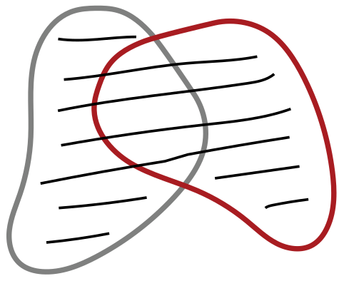
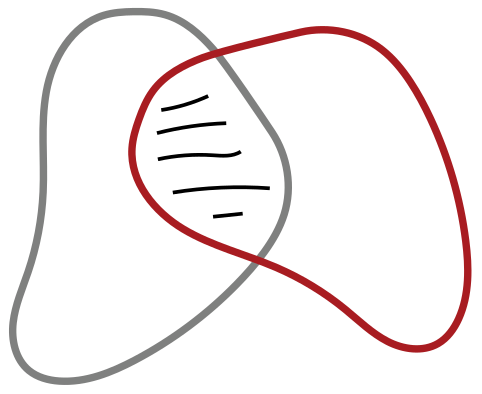
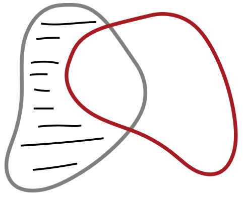
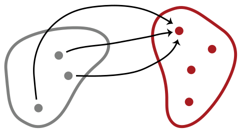
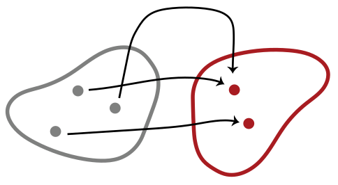
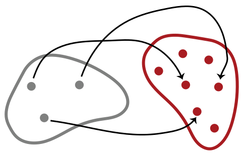
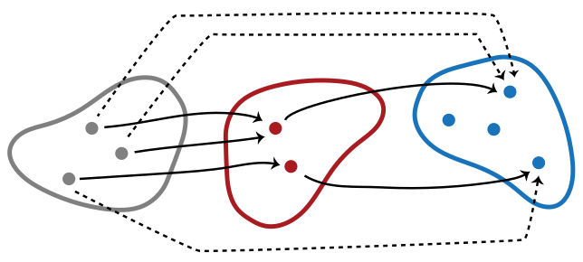
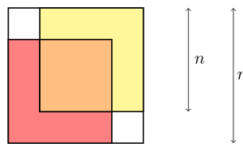

मुक्त तर्कशास्त्र — संच, संबंध, फलने, संचांचे आकारमान, अंकगणितीकरण, अनंत संच, विधानीय तर्कशास्त्र, सिद्धता-पद्धती, क्रमवर्ती कलन आणि नैसर्गिक निगमन
मुक्त तर्कशास्त्र
संच, संबंध, फलने, संचांचे आकारमान, अंकगणितीकरण, अनंत संच, विधानीय तर्कशास्त्र, सिद्धता-पद्धती, क्रमवर्ती कलन आणि नैसर्गिक निगमन
मराठी आवृत्ती · दहा संपूर्ण प्रकरणे
मूळ ग्रंथ: Open Logic Project, The Open Logic Text.
या आवृत्तीची तांत्रिक स्रोत-ओळख प्रकल्पाच्या नोंदींत दिली आहे.
हे प्रकाशन संच, संबंध, फलने, संचांचे आकारमान, अंकगणितीकरण, अनंत संच, विधानीय तर्कशास्त्र, सिद्धता-पद्धती, क्रमवर्ती कलन आणि नैसर्गिक निगमन या प्रकरणांचे आहे: मूळ 722 स्रोत-एककांपैकी OLP-0004 ते OLP-0097, एकूण 94 स्रोत-एकके आणि 83 वाचक-विभाग. उर्वरित 628 विभागांचे काम अपूर्ण आहे. संपूर्ण मराठी ग्रंथाचे काम सुरू आहे.
Codex कडून यंत्रानुवाद; स्रोताशी तुलना आणि यांत्रिक तपासण्या केल्या आहेत. स्वतंत्र मानवी संपादनाचा दावा केलेला नाही. काही तांत्रिक संज्ञा तात्पुरत्या आहेत.
मूळ मजकूर आणि हे रूपांतर: Creative Commons Attribution 4.0. मूळ घटकांचे स्वतंत्र परवाने लागू राहतात.
1 संच
1.1 विस्तारात्मकता
वस्तूंचा समूह एकच वस्तू म्हणून विचारात घेतला, की त्याला संच म्हणतात. संच बनवणाऱ्या वस्तूंना त्या संचाचे घटक किंवा सदस्य म्हणतात. हा या संचाचा घटक असेल, तर आपण असे लिहितो; नसेल, तर असे लिहितो. ज्या संचात एकही घटक नसतो, त्याला रिक्त संच म्हणतात आणि तो “” या चिन्हाने दर्शवतात.
आपण संच कसा निर्दिष्ट करतो, त्यातील घटक कोणत्या क्रमाने मांडतो किंवा तेच घटक किती वेळा मोजतो, याला महत्त्व नसते. त्यात कोणते घटक आहेत, एवढेच महत्त्वाचे असते. ही गोष्ट आपण पुढील तत्त्वात नेमकेपणाने मांडतो.
व्याख्या 1.1.1 (विस्तारात्मकता). आणि हे संच असतील, तर तेव्हा आणि केवळ तेव्हाच, जेव्हा मधील प्रत्येक घटक हा चाही घटक असतो, आणि उलटही.
विस्तारात्मकतेमुळे काही चिन्हपद्धती वापरणे योग्य ठरते. सर्वसाधारणपणे, , …, या वस्तू दिलेल्या असतील, तर म्हणजे ज्यातील घटक हे आहेत तो विशिष्ट संच होय. येथे “तो विशिष्ट” या शब्दांवर भर आहे, कारण विस्तारात्मकतेनुसार असा एकच संच असू शकतो. विस्तारात्मकतेमुळे पुढील समानताही योग्य ठरते:
म्हणजेच, संचांचा विचार करताना त्यातील घटक कोणत्या क्रमाने किंवा किती वेळा निर्दिष्ट केले आहेत, याला महत्त्व नसते.उदाहरण 1.1.2. काही वस्तू दिलेल्या असतील, तर त्या एकत्र करून त्यांचा संच बनवता येतो. उदाहरणार्थ, रिचर्डच्या भावंडांच्या संचात एक व्यक्ती आहे, आणि तो असा लिहिता येईल. पेक्षा लहान धन पूर्णांकांचा संच आहे; पण तो किंवा अगदी असाही लिहिता येतो. विस्तारात्मकतेनुसार हे सर्व एकच संच आहेत. कारण मधील प्रत्येक घटक हा चा (आणि चाही) घटक आहे, आणि उलटही.
अनेकदा संचातील सर्व घटक यांना समान असलेला एखादा गुणधर्म सांगून आपण संच निर्दिष्ट करू. त्यासाठी पुढील संक्षिप्त चिन्हपद्धती वापरू: . येथे हा असा गुणधर्म दर्शवतो की, ची संचातील घटक मध्ये गणना होण्यासाठी त्यात तो गुणधर्म असला पाहिजे.
उदाहरण 1.1.3. आपल्या उदाहरणातील हा संच पुढीलप्रमाणेही निर्दिष्ट करता आला असता:
उदाहरण 1.1.4. एखादी संख्या तिच्या स्वतःखेरीज इतर सर्व धन विभाजकांच्या बेरजेइतकी असेल तेव्हा आणि केवळ तेव्हाच तिला परिपूर्ण म्हणतात (हे विभाजक म्हणजे त्या संख्येला निःशेष भाग जाणाऱ्या, पण तिच्याशी समान नसलेल्या संख्या). उदाहरणार्थ, ही परिपूर्ण संख्या आहे, कारण तिचे असे विभाजक , आणि आहेत, आणि . खरे तर, पेक्षा लहान धन पूर्णांकांपैकी हीच एकमेव परिपूर्ण संख्या आहे. म्हणून विस्तारात्मकतेचा उपयोग करून आपण असे म्हणू शकतो:
उजवीकडील चिन्हलेखनाचे वाचन असे करतो: “ ही परिपूर्ण संख्या आहे आणि अशा सर्व चा संच.” संच कसा निर्दिष्ट केला आहे, याला संचाचा विचार करताना महत्त्व नसते, ही गोष्ट वरील समानता स्पष्ट करते. अधिक सर्वसाधारणपणे, असणाऱ्या सर्व चा संच नेहमी एकच असतो, याची विस्तारात्मकता खात्री देते. त्यामुळे याला असणाऱ्या सर्व चा तो विशिष्ट संच म्हणणे विस्तारात्मकतेमुळे योग्य ठरते.संच समान असल्याचे दाखवण्याची पद्धत विस्तारात्मकतेमुळे मिळते: हे दाखवण्यासाठी, असेल तेव्हा देखील असते, आणि असेल तेव्हा देखील असते, हे दाखवा.
सराव 1.1. जास्तीत जास्त एकच रिक्त संच असतो हे सिद्ध करा. म्हणजे, आणि या संचांत एकही घटक नसेल, तर हे दाखवा.
1.2 उपसंच आणि घातसंच
आपल्याला अनेकदा संचांची तुलना करावी लागेल. तुलना करण्याचा एक सरळ प्रकार असा आहे: एका संचातील प्रत्येक वस्तू दुसऱ्या संचातही असते. ही स्थिती पुरेशी महत्त्वाची असल्यामुळे तिच्यासाठी आपण नवीन चिन्हपद्धतीची ओळख करून घेऊ.
व्याख्या 1.2.1 (उपसंच). या संचातील प्रत्येक घटक हा चाही घटक असेल, तर हा चा उपसंच आहे असे म्हणतो, आणि असे लिहितो. हा चा उपसंच नसेल, तर असे लिहितो. पण असेल, तर असे लिहितो आणि हा चा उचित उपसंच आहे असे म्हणतो.
उदाहरण 1.2.2. प्रत्येक संच स्वतःचाच उपसंच असतो, आणि हा प्रत्येक संचाचा उपसंच असतो. सम नैसर्गिक संख्यांचा संच हा नैसर्गिक संख्यांच्या संचाचा उपसंच आहे. तसेच, . पण हा चा उपसंच नाही.
उदाहरण 1.2.3. ही संख्या पूर्णांकांच्या संचाचा घटक आहे, तर सम संख्यांचा संच हा पूर्णांकांच्या संचाचा उपसंच आहे. मात्र, एखादा संच दुसऱ्या संचाचा घटक आणि उपसंच दोन्हीही असू शकतो. उदाहरणार्थ, आणि देखील.
विस्तारात्मकतेमुळे संचांच्या समानतेचा निकष मिळतो: तेव्हा आणि केवळ तेव्हाच, जेव्हा मधील प्रत्येक घटक हा चाही घटक असतो, आणि उलटही. “उपसंच” या व्याख्येत याचा अर्थ या निकषाचा नेमका पहिला भाग आहे: मधील प्रत्येक घटक हा चा घटक असतो. अर्थात, आणि यांची अदलाबदल केली तरी ही व्याख्या लागू होते: तेव्हा आणि केवळ तेव्हाच, जेव्हा मधील प्रत्येक घटक हा चा घटक असतो. हाच विस्तारात्मकतेतील “आणि उलटही” हा भाग होय. दुसऱ्या शब्दांत, संच एकमेकांचे उपसंच असतील तेव्हा आणि केवळ तेव्हाच ते समान असतात, हे विस्तारात्मकतेवरून निष्पन्न होते.
प्रतिज्ञा 1.2.4. तेव्हा आणि केवळ तेव्हाच, जेव्हा आणि दोन्ही असतात.
आणखी काही उपयुक्त चिन्हपद्धतींची ओळख करून घेण्याची ही योग्य वेळ आहे. हा चा उपसंच केव्हा असतो याची व्याख्या करताना आपण “ मधील प्रत्येक घटक हा …” असे म्हटले, आणि त्या “” च्या जागी “ चा घटक असतो” असे घातले. परंतु असा आकार असणाऱ्या अभिव्यक्ती इतक्या नेहमी वापरल्या जातात की, त्यांच्यासाठी आकारिक चिन्हपद्धती उपयोगी पडेल.
व्याख्या 1.2.5. हे याचे संक्षिप्त रूप आहे. त्याचप्रमाणे, हे याचे संक्षिप्त रूप आहे.
या चिन्हपद्धतीचा उपयोग करून, तेव्हा आणि केवळ तेव्हाच, जेव्हा , असे म्हणता येते.
आता आपण एका विशिष्ट प्रकारच्या संचाचा विचार करू: दिलेल्या संचाच्या सर्व उपसंचांचा संच.
व्याख्या 1.2.6 (घातसंच). या संचाच्या सर्व उपसंचांचा मिळून जो संच बनतो, त्याला चा घातसंच म्हणतात आणि तो असा लिहितात.
उदाहरण 1.2.7. चे सर्व शक्य उपसंच कोणते? ते असे आहेत: , , , , , , , . या सर्व उपसंचांचा संच म्हणजे :
सराव 1.2. चे सर्व उपसंच लिहा.
सराव 1.3. मध्ये घटक असतील, तर मध्ये घटक असतात हे दाखवा.
1.3 काही महत्त्वाचे संच
उदाहरण 1.3.1. आपण प्रामुख्याने ज्यातील घटक या गणिती वस्तू आहेत अशा संचांचा विचार करणार आहोत. असे चार संच इतके महत्त्वाचे आहेत की त्यांना विशिष्ट नावे दिलेली आहेत:
हे सर्व अनंत संच आहेत; म्हणजेच, प्रत्येकात अनंत घटक आहेत.या संचांतून पुढे जाताना आपण आपल्या संग्रहात आणखी संख्या समाविष्ट करत असतो. खरे तर, हे स्पष्ट असावे: कारण प्रत्येक नैसर्गिक संख्या पूर्णांक असते; प्रत्येक पूर्णांक परिमेय असतो; आणि प्रत्येक परिमेय संख्या वास्तव असते. त्याचप्रमाणे, हेही स्पष्ट असावे, कारण हा पूर्णांक आहे पण नैसर्गिक संख्या नाही, आणि ही परिमेय संख्या आहे पण पूर्णांक नाही. , म्हणजे परिमेय नसलेल्या काही वास्तव संख्या आहेत, ही गोष्ट तितकी सहज स्पष्ट होत नाही.
कधीकधी आपण धन पूर्णांकांचा संच आणि फक्त पहिल्या दोन नैसर्गिक संख्या असणारा संच यांचाही उपयोग करू.
उदाहरण 1.3.2 (चिन्हमाला). आणखी एक लक्षवेधी उदाहरण म्हणजे या वर्णमालेवरील सांत चिन्हमालांचा संच : मधील घटकांचा कोणताही सांत अनुक्रम हा वरील चिन्हमाला असतो. प्रत्येक वर्णमालेसाठी, वरील चिन्हमालांमध्ये आपण रिक्त चिन्हमाला हिचाही समावेश करतो. उदाहरणार्थ,
ही मधील “अक्षरांनी” बनलेली चिन्हमाला असेल, तर तिची लांबी आहे असे म्हणतो आणि असे लिहितो.उदाहरण 1.3.3 (अनंत अनुक्रम). कोणत्याही संचासाठी आपण मधील घटक यांच्या अनंत अनुक्रमांचा संच याचाही विचार करू शकतो. अनंत अनुक्रम म्हणजे वस्तूंची एका दिशेने अनंत लांब जाणारी यादी; यादीतील प्रत्येक वस्तू चा घटक असते.
1.4 संयोग आणि छेद
1.1 मध्ये आपण गुणधर्मानुसार संचांची व्याख्या करणे, म्हणजे या आकाराची व्याख्या करणे, पाहिले. येथे आपण एखादा गुणधर्म वापरतो; या गुणधर्मात आधीच व्याख्या केलेल्या संचांचा उल्लेख असू शकतो. उदाहरणार्थ, आणि हे संच असतील, तर या संचात किंवा मधील घटक असणाऱ्या सर्व वस्तू येतात. म्हणजेच, आणि मधील घटक एकत्र करणारा हा संच आहे. 1.1 मध्ये दाखवल्याप्रमाणे त्याचे चित्र काढता येते; ठळक केलेला भाग आणि या दोन संचांतील घटक एकत्र दर्शवतो.

संच एकत्र करणारी ही क्रिया अतिशय उपयुक्त आहे आणि वारंवार वापरली जाते. म्हणून तिला आपण आकारिक नाव आणि चिन्ह देतो.
व्याख्या 1.4.1 (संयोग). आणि या दोन संचांचा संयोग असा लिहितात. तो , किंवा दोन्ही संचांतील घटक असणाऱ्या सर्व वस्तूंचा संच आहे.
उदाहरण 1.4.2. तेच घटक किती वेळा आले आहेत याला महत्त्व नसल्याने, दोन संचांत सामाईक घटक असेल, तर त्यांच्या संयोगात तो घटक एकदाच येतो. उदाहरणार्थ, .
संच आणि त्याचा एखादा उपसंच यांचा संयोग म्हणजे मोठा संचच: .
संचाचा रिक्त संचाशी संयोग हा मूळ संचाशी समान असतो: .
सराव 1.4. असेल, तर हे सिद्ध करा.
संयोगाच्या “द्वैत” क्रियेचाही विचार करता येतो. या क्रियेत असे सर्व घटक घेतले जातात की जे मधील घटक आणि मधीलही घटक आहेत, आणि त्यांचा संच बनवला जातो. या क्रियेला छेद म्हणतात. तिचे चित्र 1.2 प्रमाणे काढता येते.

व्याख्या 1.4.3 (छेद). आणि या दोन संचांचा छेद असा लिहितात. तो आणि या दोन्ही संचांतील घटक असणाऱ्या सर्व वस्तूंचा संच आहे.
दोन संचांचा छेद रिक्त असेल, तर त्यांना विभक्त म्हणतात. याचा अर्थ, त्यांच्यात सामाईक घटक नसतात.उदाहरण 1.4.4. दोन संचांत सामाईक घटक नसतील, तर त्यांचा छेद रिक्त असतो: .
दोन संचांत सामाईक घटक असतील, तर त्यांचा छेद म्हणजे त्या सर्वांचा संच: .
संच आणि त्याचा एखादा उपसंच यांचा छेद म्हणजे लहान संचच: .
कोणत्याही संचाचा रिक्त संचाशी छेद रिक्त असतो: .
सराव 1.5. असेल, तर हे काटेकोरपणे सिद्ध करा.
दोनपेक्षा अधिक संचांचा संयोग किंवा छेदही बनवता येतो. हे सर्वसाधारणपणे हाताळण्याची एक सुटसुटीत पद्धत पुढीलप्रमाणे आहे: ज्या सर्व संचांचा संयोग (किंवा छेद) करायचा आहे, ते सर्व एका संचात एकत्र केले आहेत असे समजा. मग या संचाच्या किमान एका घटक मध्ये असणाऱ्या सर्व वस्तूंचा संच म्हणजे मूळ सर्व संचांचा संयोग अशी व्याख्या करता येते. तसेच, या संचाच्या प्रत्येक घटक मध्ये असणाऱ्या सर्व वस्तूंचा संच म्हणजे त्यांचा छेद अशी व्याख्या करता येते.
व्याख्या 1.4.5. हा संचांचा संच असेल, तर म्हणजे मधील घटक यांत असणाऱ्या घटक यांचा संच:
व्याख्या 1.4.6. हा संचांचा संच असेल, तर म्हणजे मधील सर्व घटकांत सामाईक असणाऱ्या वस्तूंचा संच:
उदाहरण 1.4.7. असे समजा. मग आणि .
सराव 1.6. हा संच असेल आणि असेल, तर हे दाखवा.
, , …या संचांच्या अनुक्रमासाठीही हेच करता येईल:
संचांसाठी निर्देशांक संच दिलेला असेल, म्हणजे एखादा संच असा असेल की, प्रत्येक साठी आपण चा विचार करत असू, तर पुढील संक्षिप्त रूपेही वापरता येतात:
शेवटी, मध्ये असणारे पण मध्ये नसणारे सर्व घटक यांच्या संचाचा विचार करायचा असू शकतो. त्याचे चित्र 1.3 प्रमाणे काढता येते.

व्याख्या 1.4.8 (फरक). संचांचा फरक म्हणजे मधील असे सर्व घटक की जे मधील घटक नाहीत, यांचा संच. म्हणजेच,
सराव 1.7. असेल, तर हे सिद्ध करा.
1.5 जोड्या, क्रमित घटकसमूह आणि कार्तीय गुणाकार
संचांतील घटकांना क्रम नसतो, हे विस्तारात्मकतेवरून निष्पन्न होते. म्हणून क्रम दर्शवायचा असेल, तर आपण क्रमित जोड्या वापरतो. अक्रमित जोडी मध्ये क्रमाला महत्त्व नसते: . क्रमित जोडीमध्ये मात्र क्रम महत्त्वाचा असतो: असेल, तर .
संच सिद्धांतात क्रमित जोड्यांचा विचार कसा करावा? दोन क्रमित जोड्यांचे पहिले घटक समान असतील आणि दुसरे घटकही समान असतील तेव्हा आणि केवळ तेव्हाच त्या जोड्या समान असतात, ही कल्पना जपणे आवश्यक आहे. म्हणजेच:
वीनर–कुराटोव्स्की यांच्या व्याख्येने संच सिद्धांतात क्रमित जोड्यांची व्याख्या करता येते.व्याख्या 1.5.1 (क्रमित जोडी). .
सराव 1.8. 1.5.1 वापरून, तेव्हा आणि केवळ तेव्हाच, जेव्हा आणि दोन्ही असतात, हे सिद्ध करा.
क्रमित जोडीची व्याख्या निश्चित केल्यावर तिच्या साहाय्याने आणखी संचांची व्याख्या करता येते. उदाहरणार्थ, कधीकधी दोनपेक्षा अधिक वस्तूंचे क्रमित अनुक्रम हवे असतात: त्रिके , चतुष्के इत्यादी. त्रिक म्हणजे ज्याचा पहिला घटक स्वतःच क्रमित जोडी आहे अशी विशिष्ट क्रमित जोडी असे मानता येते: म्हणजे . चतुष्कांसाठीही हेच लागू होते: म्हणजे , आणि असेच पुढे. सर्वसाधारणपणे आपण क्रमित -घटकसमूह यांचा उल्लेख करतो.
क्रमित जोड्यांचे, किंवा इतर क्रमित -घटकसमूहांचे, काही संच उपयुक्त ठरतील.
व्याख्या 1.5.2 (कार्तीय गुणाकार). आणि हे संच दिलेले असतील, तर त्यांचा कार्तीय गुणाकार याची व्याख्या अशी करतात:
उदाहरण 1.5.3. आणि असतील, तर त्यांचा गुणाकार असा आहे:
उदाहरण 1.5.4. हा संच असेल, तर चा स्वतःशी गुणाकार हा असाही लिहितात. तो असणाऱ्या सर्व जोड्यांचा संच आहे. सर्व त्रिकांचा संच असतो, आणि असेच पुढे. पुढील पुनरावर्ती व्याख्या देता येते:
सराव 1.9. मधील सर्व घटक लिहा.
प्रतिज्ञा 1.5.5. मध्ये घटक आणि मध्ये घटक असतील, तर मध्ये घटक असतात.
Proof. मधील प्रत्येक घटक साठी, या आकाराचे घटक असतात. असे मानू. असेल तेव्हा असल्यामुळे . पण असेल, तर ; म्हणून त्यात घटक असतात.
हे चित्ररूपाने पाहण्यासाठी मधील घटक जाळीच्या स्वरूपात मांडा:
सर्व वेगवेगळे आहेत आणि सर्व वेगवेगळे आहेत. त्यामुळे या जाळीतील कोणत्याही दोन जोड्या समान नाहीत, आणि त्यांची संख्या आहे. ◻सराव 1.10. वरील गणिती विगमनाने असे दाखवा की, प्रत्येक साठी, मध्ये घटक असतील, तर मध्ये घटक असतात.
उदाहरण 1.5.6. हा संच असेल, तर वरील शब्द म्हणजे मधील घटक यांचा कोणताही अनुक्रम. असा अनुक्रम म्हणजे मधील घटक यांचा -घटकसमूह असे मानता येते. उदाहरणार्थ, असेल, तर “” या अनुक्रमाचा हे त्रिक म्हणून विचार करता येतो. शब्दांना, म्हणजे चिन्हांच्या अनुक्रमांना, संगणकशास्त्रात अत्यंत महत्त्व आहे. संकेतानुसार, मधील घटक यांना आपण लांबीचे अनुक्रम मानतो, आणि याला लांबीचा अनुक्रम मानतो. मग वरील सर्व शब्दांचा संच असा आहे:
1.6 रसेलची विरोधापत्ती
विस्तारात्मकतेमुळे ही चिन्हपद्धती असणाऱ्या सर्व च्या त्या विशिष्ट संचासाठी वापरणे योग्य ठरते. मात्र, विस्तारात्मकतेमुळे प्रत्यक्षात फक्त पुढील विचार योग्य ठरतो. ज्याचे सदस्य सर्व आणि केवळ असणाऱ्या वस्तू आहेत असा संच असेल, तर असा एकच संच असतो. दुसऱ्या शब्दांत: एखादा निश्चित केल्यावर, हा संच अस्तित्वात असल्यास तो एकमेव असतो.
पण ही अट महत्त्वाची आहे! प्रत्येक गुणधर्मापासून गुणधर्माधारित संचरचना करता येतेच असे नाही. म्हणजेच, काही गुणधर्म संचांची व्याख्या करत नाहीत. सर्वच गुणधर्मांनी संचांची व्याख्या होत असती, तर आपल्याला थेट व्याघातांना सामोरे जावे लागले असते. याचे सर्वांत प्रसिद्ध उदाहरण म्हणजे रसेलची विरोधापत्ती.
संच हे इतर संचांचे घटक असू शकतात; उदाहरणार्थ, या संचाचा घातसंच हा संचांनी बनलेला असतो. म्हणून एखादा संच दुसऱ्या संचाचा घटक आहे का, असा प्रश्न विचारणे किंवा त्याचा शोध घेणे अर्थपूर्ण आहे. संच स्वतःचाच सदस्य असू शकतो का? संचाच्या कल्पनेत असे काही दिसत नाही की ज्यामुळे ही शक्यता नाकारली जाईल. उदाहरणार्थ, सर्व संच मिळून वस्तूंचा समूह बनत असेल, तर त्या सर्वांना एका संचात एकत्र करता येईल असे वाटू शकते; तो म्हणजे सर्व संचांचा संच. तो स्वतः एक संच असल्यामुळे सर्व संचांच्या संचाचा घटक असेल.
स्वतःला घटक म्हणून न सामावणाऱ्या, म्हणजे स्वतःचे सदस्य नसणाऱ्या संचांचा गुणधर्म विचारात घेतल्यावर रसेलची विरोधापत्ती उद्भवते. स्वतःला घटक म्हणून न सामावणाऱ्या सर्व संचांचा एक संच आहे असे आपण मानले, तर काय होईल? असा
संच अस्तित्वात आहे का? तो अस्तित्वात नसतो हे आपण सिद्ध करू शकतो.प्रमेय 1.6.1 (रसेलची विरोधापत्ती). असा कोणताही संच नाही.
Proof. अस्तित्वात असेल, तर तेव्हा आणि केवळ तेव्हाच, जेव्हा ; हा व्याघात आहे. ◻
ही सिद्धता अधिक सावकाश पाहू. अस्तित्वात असेल, तर आहे की नाही हा प्रश्न अर्थपूर्ण आहे. खरोखर आहे असे समजा. आता, स्वतःचे घटक नसणाऱ्या सर्व संचांचा संच अशी ची व्याख्या केली होती. त्यामुळे असेल, तर मध्ये स्वतःच चा व्याख्यक गुणधर्म नसतो. पण हा गुणधर्म असणारेच संच मध्ये असतात. म्हणून हा चा घटक असू शकत नाही; म्हणजेच . परंतु हा चा घटक आहे आणि नाही, असे दोन्ही होऊ शकत नाही; म्हणून व्याघात मिळतो.
या गृहीतकामुळे व्याघात येत असल्याने मिळते. पण यामुळेही व्याघात येतो! कारण असेल, तर मध्ये स्वतःच चा व्याख्यक गुणधर्म असतो; म्हणून स्वतःचे सदस्य नसणाऱ्या इतर सर्व संचांप्रमाणे हा चा घटक असेल. आणि पुन्हा, चा घटक नसणे आणि असणे या दोन्ही गोष्टी एकत्र शक्य नाहीत.
रसेलची विरोधापत्ती टाळणारा, म्हणजे अस्तित्वात आहे हा विसंगत दावा न करणारा संच सिद्धांत कसा मांडायचा? त्यासाठी संच केव्हा अस्तित्वात असतात (आणि केव्हा नसतात) हे सांगणाऱ्या अगदी नेमक्या अटी देणारी स्वयंसिद्धके मांडावी लागतील.
या प्रकरणात आराखडा दिलेला संच सिद्धांत असे करत नाही. तो खरोखरच अनौपचारिक आहे. त्यातून एवढेच सांगितले जाते की संच विस्तारात्मकतेचे पालन करतात आणि काही संच दिलेले असतील, तर त्यांचा संयोग, छेद इत्यादी बनवता येतात. संच सिद्धांत यापेक्षा अधिक काटेकोरपणे विकसित करणे शक्य आहे.
2 संबंध
2.1 संच म्हणून संबंध
1.3 मध्ये आपण काही महत्त्वाच्या संचांचा उल्लेख केला: , , , . यांपैकी काही संचांतील घटक यांच्यातील काही लक्षवेधी संबंध तुम्हाला आठवत असतील. उदाहरणार्थ, या प्रत्येक संचावर एक सर्वमान्य क्रमसंबंध असतो. तसेच, प्रत्येक वस्तूचा फक्त स्वतःशी आणि इतर कशाशीही नसणारा एकरूप असण्याचा संबंध असतो. पुढे आपल्याला आणखी अनेक लक्षवेधी संबंध भेटतील, आणि शक्य संबंध तर त्याहूनही अधिक आहेत. त्यांचा आढावा घेण्यापूर्वी मात्र, संबंधांकडे एका विशिष्ट प्रकारचे संच म्हणून पाहता येते, हे आपण दाखवू.
यासाठी 1.5 मधील दोन गोष्टी आठवा. प्रथम, क्रमित जोडी ही संकल्पना: आणि दिलेले असतील, तर बनवता येते. येथे घटकांचा क्रम महत्त्वाचा असतो. म्हणून असेल, तर . (याची अक्रमित जोड्यांशी, म्हणजे -घटक संचांशी, तुलना करा: तेथे .) दुसरे म्हणजे, कार्तीय गुणाकार ही संकल्पना आठवा: आणि हे संच असतील, तर बनवता येतो. तो आणि असणाऱ्या सर्व जोड्यांचा संच आहे. विशेषतः, हा मधून घेतलेल्या सर्व क्रमित जोड्यांचा संच आहे.
आता एका संचावरील विशिष्ट संबंध पाहू: नैसर्गिक संख्यांच्या या संचावरील -संबंध. असणाऱ्या संख्यांच्या सर्व जोड्यांचा संच विचारात घ्या, म्हणजे,
ही संख्या पेक्षा लहान असणे आणि ही जोडी ची सदस्य असणे यांचा निकटचा संबंध आहे, तो असा: खरे तर, कोणतीही माहिती न गमावता हा संच म्हणजेच वरील -संबंध आहे, असे आपण मानू शकतो.त्याचप्रमाणे, संख्यांमधील कोणत्याही संबंधासाठी चा एक उपसंच तयार करता येतो. उलट, संख्यांच्या जोड्यांचा कोणताही संच दिला असेल, तर त्याला अनुरूप संख्यांमधील एक संबंध असतो: चा शी तो संबंध तेव्हा आणि केवळ तेव्हाच असतो, जेव्हा . यावरून पुढील व्याख्या समर्थित होते:
व्याख्या 2.1.1 (द्विपदी संबंध). या संचावरील द्विपदी संबंध म्हणजे चा एक उपसंच. हा वरील द्विपदी संबंध असेल आणि असतील, तर यासाठी आपण कधी कधी (किंवा ) असे लिहितो.
उदाहरण 2.1.2. नैसर्गिक संख्यांच्या जोड्यांचा हा संच अशा द्विमितीय सारणीत मांडता येतो:
येथे कर्णावरील नोंदी ठळक केल्या आहेत, कारण त्या जोड्यांचा बनलेला चा उपसंच, म्हणजे, हा वरील एकरूपता संबंध आहे. (एकरूपता संबंध वारंवार वापरला जातो, म्हणून कोणत्याही संचासाठी अशी व्याख्या करू.) कर्णाच्या वर असलेल्या सर्व जोड्यांचा उपसंच, म्हणजे, हा लहान असण्याचा संबंध आहे, म्हणजे तेव्हा आणि केवळ तेव्हाच, जेव्हा . कर्णाच्या खाली असलेल्या जोड्यांचा उपसंच, म्हणजे, हा मोठे असण्याचा संबंध आहे, म्हणजे तेव्हा आणि केवळ तेव्हाच, जेव्हा . आणि यांचा संयोग असा लिहू; तो लहान किंवा समान असण्याचा संबंध आहे: तेव्हा आणि केवळ तेव्हाच, जेव्हा . त्याचप्रमाणे, हा मोठे किंवा समान असण्याचा संबंध आहे. , , आणि हे क्रम नावाच्या विशिष्ट प्रकारचे संबंध आहेत. आणि यांचा गुणधर्म असा: कोणत्याही संख्येचा स्वतःशी किंवा संबंध नसतो (म्हणजे, सर्व साठी आणि दोन्ही असत्य असतात). हा गुणधर्म असणाऱ्या संबंधांना अपरावर्ती म्हणतात; आणि ते क्रमही असतील, तर त्यांना काटेकोर क्रम म्हणतात.क्रम आणि एकरूपता हे महत्त्वाचे व स्वाभाविक संबंध असले, तरी आपल्या व्याख्येनुसार चा कोणताही उपसंच हा वरील संबंध असतो, तो कितीही कृत्रिम किंवा ओढूनताणून बनवलेला वाटला तरीही. विशेषतः, हा कोणत्याही संचावरील संबंध असतो (हा रिक्त संबंध; कोणत्याही घटकजोडीमध्ये तो नसतो), आणि हाही वरील संबंध असतो (प्रत्येक जोडीमध्ये असणारा); त्याला सार्वत्रिक संबंध म्हणतात. तसेच, यासारखी गोष्टही संबंध ठरते.
सराव 2.1. या संचावरील संबंधाचे घटक लिहा.
2.2 तात्त्विक चिंतन
2.1 मध्ये आपण संबंधांची व्याख्या काही विशिष्ट संच म्हणून केली. येथे थांबून एक छोटासा तात्त्विक प्रश्न विचारू: अशी व्याख्या नेमके काय करते? काही सत्तामीमांसक एकरूपतेची तथ्ये आपण शोधून काढली, असा दावा आपल्याला करायचा आहे का, याबद्दल खूपच शंका आहे. उदाहरणार्थ, वरील क्रमसंबंध हा 2.1 मध्ये व्याख्यिलेला संचच निघाला, असे म्हणायचे का? अशी शंका घेण्याची तीन कारणे पुढीलप्रमाणे आहेत.
पहिले: 1.5.1 मध्ये आपण अशी व्याख्या केली. त्याऐवजी ही व्याख्या विचारात घ्या. असेल, तर . पण क्रमित जोडीची व्याख्या ऐवजी अशीही तितक्याच योग्य रीतीने करता आली असती. दोन्ही व्याख्या तितक्याच उपयोगी ठरल्या असत्या. त्यामुळे नैसर्गिक संख्यांवरील क्रमसंबंध “असण्यासाठी” आता दोन तितकेच योग्य उमेदवार आहेत:
विस्तारात्मकतेनुसार असल्याने ते दोन्ही वरील क्रमसंबंधाशी एकरूप असू शकत नाहीत. पण प्रत्यक्षात ऐवजी (किंवा उलट) हाच क्रमसंबंध आहे, असा दावा करणे मनमानीचे आणि म्हणून काहीसे अडचणीचे ठरेल. (संचसैद्धान्तिक न्यूनीकरणवादाविरुद्ध बेनासेराफ यांनी 1965 मध्ये प्रसिद्ध केलेल्या युक्तिवादाचे हे अतिशय सोपे उदाहरण आहे. आपण त्याकडे आणखी काही वेळा परत येऊ.)दुसरे: प्रत्येक संबंध एखाद्या संचाशी एकरूप मानला पाहिजे असे आपल्याला वाटत असेल, तर संचसदस्यत्वाचा हा संबंधसुद्धा एक विशिष्ट संच असला पाहिजे. तो हा संच असावा लागेल. पण हा संच अस्तित्वात आहे का? रसेलची विरोधापत्ती लक्षात घेता, असा संच अस्तित्वात आहे हा दावा सहज स्वीकारता येत नाही. खरे तर, संच सिद्धांत काटेकोरपणे स्वयंसिद्धकांवर आधारित सिद्धांत म्हणून विकसित करता येतो, आणि तो सिद्धांत या संचाचे अस्तित्व नाकारतो. म्हणून काही संबंधांना संच म्हणून वागवता येत असले, तरी संचसदस्यत्वाचा संबंध अपवादात्मक प्रकरण म्हणून घ्यावा लागेल.
तिसरे: संबंध संचांशी “एकरूप” मानताना, यासाठी असे लिहिण्याची मुभा आपण घेतली. सदस्यत्वाचा “” हा संबंध विधेय म्हणून वापरला, तर हे योग्य आहे. पण “” हे एका विशिष्ट प्रकारच्या संचाचे नाव आहे असे मानले, तर “” या व्यंजकात संचांचा निर्देश करणारी फक्त तीन एकवाची पदे राहतात: “”, “” आणि “”. अशा नावांच्या यादीतून विधान व्यक्त होऊ शकत नाही; “तो कप लेखणीधारक ते टेबल” या निरर्थक शब्दमालेइतकीच ती निष्फळ आहे. म्हणून पुन्हा, काही संबंधांना संच म्हणून वागवता येत असले, तरी संचसदस्यत्वाचा संबंध अपवादात्मक प्रकरण असला पाहिजे. (यात फ्रेगे यांच्या घोडा संकल्पनेच्या विरोधापत्तीचे एक सोपे रूप आणि विट्गेन्स्टाइन यांनी रसेल यांच्याविरुद्ध मांडलेला एक प्रसिद्ध आक्षेप एकत्र आले आहेत.)
मग यातून काय निष्पन्न होते? संख्यांवरील संबंध हे संच आहेत असे म्हणण्यात काही चूक नाही. ते म्हणण्यामागचा हेतू मात्र नीट समजून घ्यावा लागेल. आपण सत्तामीमांसक एकरूपतेचे तथ्य सांगत नाही. फक्त एवढेच नोंदवत आहोत की, काही संदर्भांत काही संबंधांना काही विशिष्ट संच म्हणून वागवता येते (आणि आपण तसे वागवणार आहोत).
2.3 संबंधांचे विशेष गुणधर्म
काही प्रकारचे संबंध इतके वारंवार आढळतात की त्यांना विशेष नावे दिली आहेत. उदाहरणार्थ, आणि हे आपापल्या प्रांतांतील घटकांना सारख्याच प्रकारे जोडतात (उदा., साठी आणि साठी ). त्यांच्यातील साम्य आणि भेद नेमके समजण्यासाठी संबंधांचे काही विशेष गुणधर्मांनुसार वर्गीकरण करू. यांपैकी काही गुणधर्मांची संयोजने विशेष महत्त्वाची ठरतात: क्रम आणि तुल्यता संबंध.
व्याख्या 2.3.1 (परावर्तिता). हा संबंध परावर्ती तेव्हा आणि केवळ तेव्हाच असतो, जेव्हा प्रत्येक साठी असते.
व्याख्या 2.3.2 (संक्रमकता). हा संबंध संक्रमक तेव्हा आणि केवळ तेव्हाच असतो, जेव्हा आणि असले, की सुद्धा असते.
व्याख्या 2.3.3 (सममिती). हा संबंध सममित तेव्हा आणि केवळ तेव्हाच असतो, जेव्हा असले, की सुद्धा असते.
व्याख्या 2.3.4 (प्रतिसममिती). हा संबंध प्रतिसममित तेव्हा आणि केवळ तेव्हाच असतो, जेव्हा आणि दोन्ही असले, की असते (दुसऱ्या शब्दांत: असेल, तर किंवा असते).
सममित संबंधात आणि नेहमी एकत्र सत्य असतात किंवा दोन्ही असत्य असतात. प्रतिसममित संबंधात आणि दोन्ही सत्य असण्यासाठी असणे आवश्यक असते. पण असताना आणि सत्य असलेच पाहिजेत, अशी अट यात नाही; फक्त त्यांना मनाई नाही. म्हणून प्रतिसममित संबंध परावर्ती असू शकतो, पण प्रत्येक प्रतिसममित संबंध परावर्ती असतोच असे नाही. तसेच, प्रतिसममित असणे आणि केवळ सममित नसणे या वेगळ्या अटी आहेत. खरे तर, एकच संबंध एकाच वेळी सममित आणि प्रतिसममितही असू शकतो (उदा., एकरूपता संबंध).
व्याख्या 2.3.5 (संयोजितता). या संबंधाला संयोजित म्हणतात, जर सर्व साठी असल्यास किंवा असते.
सराव 2.2. पुढील गुणधर्म असणाऱ्या संबंधांची उदाहरणे द्या: (a) परावर्ती आणि सममित, पण संक्रमक नाही; (b) परावर्ती आणि प्रतिसममित; (c) प्रतिसममित व संक्रमक, पण परावर्ती नाही; आणि (d) परावर्ती, सममित व संक्रमक. संख्या किंवा संच यांवरील संबंध वापरू नका.
व्याख्या 2.3.6 (अपरावर्तिता). या संबंधाला अपरावर्ती म्हणतात, जर सर्व साठी असत्य असते.
व्याख्या 2.3.7 (असममिती). या संबंधाला असममित म्हणतात, जर अशा कोणत्याही जोडीसाठी आणि दोन्ही सत्य नसतात.
लक्षात घ्या: असेल, तर वरील कोणताही अपरावर्ती संबंध परावर्ती नसतो, आणि वरील प्रत्येक असममित संबंध प्रतिसममितही असतो. तरीही, काही संबंध परावर्तीही नसतात आणि अपरावर्तीही नसतात; तसेच काही प्रतिसममित संबंध असममित नसतात.
2.4 तुल्यता संबंध
एखाद्या संचावरील एकरूपता संबंध परावर्ती, सममित आणि संक्रमक असतो. हे तिन्ही गुणधर्म असणारे संबंध वारंवार आढळतात.
व्याख्या 2.4.1 (तुल्यता संबंध). परावर्ती, सममित आणि संक्रमक असणाऱ्या या संबंधाला तुल्यता संबंध म्हणतात. मधील घटक आणि यांना -तुल्य म्हणतात, जर असते.
तुल्यता संबंधांमुळे तुल्यतावर्ग ही संकल्पना मिळते. तुल्यता संबंध प्रांताचे वेगवेगळ्या भागांत “तुकडे” करतो. प्रत्येक भागात सर्व वस्तू एकमेकींशी संबंधित असतात; भिन्न भागांतील कोणत्याही वस्तू एकमेकींशी संबंधित नसतात. काही वेळा या भागांबद्दल थेट बोलणे उपयोगी ठरते. त्यासाठी पुढील व्याख्या करू:
व्याख्या 2.4.2. हा तुल्यता संबंध असू द्या. प्रत्येक साठी, मधील चा तुल्यतावर्ग म्हणजे हा संच. नुसार चा भागाकारसंच म्हणजे , अर्थात या तुल्यतावर्गांचा संच.
पुढील निष्कर्ष तुल्यतावर्गाच्या व्याख्येला आधार देतो: तुल्यतावर्ग हे खरोखर चे विभाजन करणारे भाग असतात, हे तो सिद्ध करतो.
प्रतिज्ञा 2.4.3. हा तुल्यता संबंध असेल, तर तेव्हा आणि केवळ तेव्हाच, जेव्हा .
Proof. डावीकडून उजवीकडे जाणाऱ्या दिशेसाठी, असे समजा आणि असू द्या. व्याख्येनुसार . हा तुल्यता संबंध असल्याने . (सविस्तर सांगायचे तर: असल्याने आणि सममित असल्याने ; तसेच असल्याने आणि संक्रमक असल्याने .) म्हणून . हे कोणत्याही अशा घटकासाठी लागू असल्याने . अगदी त्याचप्रमाणे . म्हणून विस्तारात्मकतेनुसार .
उजवीकडून डावीकडे जाणाऱ्या दिशेसाठी, असे समजा. परावर्ती असल्याने , म्हणून . मग या गृहीतकामुळे सुद्धा. म्हणून . ◻
उदाहरण 2.4.4. तुल्यता संबंधांचे एक चांगले उदाहरण शेषांक अंकगणितातून मिळते. कोणत्याही , आणि साठी, ला ने भागल्यावर येणारी बाकी आणि ला ने भागल्यावर येणारी बाकी सारखी असेल, तेव्हा आणि केवळ तेव्हाच असे म्हणू. (चिन्हांत मांडायचे तर: तेव्हा आणि केवळ तेव्हाच, जेव्हा एखाद्या साठी .) मग कोणत्याही साठी हा तुल्यता संबंध असतो. मुळे नेमके भिन्न तुल्यतावर्ग मिळतात; म्हणजे मध्ये घटक असतात. ते असे: ने निःशेष भाग जाणाऱ्या संख्यांचा संच, म्हणजे ; ने भागल्यावर बाकी येणाऱ्या संख्यांचा संच, म्हणजे ; …; आणि ने भागल्यावर बाकी येणाऱ्या संख्यांचा संच, म्हणजे .
सराव 2.3. कोणत्याही साठी हा तुल्यता संबंध आहे आणि मध्ये नेमके सदस्य आहेत, हे दाखवा.
2.5 क्रम
अनेक तुलनांमध्ये आपण काही वस्तू इतर वस्तूंपेक्षा एखाद्या दृष्टीने “लहान”, “समान” किंवा “मोठ्या” आहेत असे म्हणतो. यात क्रम संबंध येतात. पण क्रमसंबंधांचे वेगवेगळे प्रकार आहेत. उदाहरणार्थ, काहींमध्ये कोणत्याही दोन वस्तूंची तुलना करता आली पाहिजे, तर इतरांमध्ये तशी अट नसते. काहींमध्ये एकरूपतेचा समावेश असतो (जसे ), तर काहींमध्ये नसतो (जसे ). येथे या प्रकारांचे वर्गीकरण उपयोगी पडेल.
व्याख्या 2.5.1 (पूर्वक्रम). परावर्ती आणि संक्रमक असणाऱ्या संबंधाला पूर्वक्रम म्हणतात.
व्याख्या 2.5.2 (अंशतः क्रम). प्रतिसममितही असणाऱ्या पूर्वक्रमाला अंशतः क्रम म्हणतात.
व्याख्या 2.5.3 (रेषीय क्रम). संयोजितही असणाऱ्या अंशतः क्रमाला पूर्ण क्रम किंवा रेषीय क्रम म्हणतात.
उदाहरण 2.5.4. प्रत्येक रेषीय क्रम अंशतः क्रमही असतो आणि प्रत्येक अंशतः क्रम पूर्वक्रमही असतो; पण यांची उलट विधाने सत्य नाहीत. वरील सार्वत्रिक संबंध परावर्ती आणि संक्रमक असल्याने तो पूर्वक्रम असतो. पण मध्ये एकाहून अधिक घटक असतील, तर सार्वत्रिक संबंध प्रतिसममित नसतो, म्हणून तो अंशतः क्रम नसतो.
उदाहरण 2.5.5. वरील अधिक लांब नसण्याचा हा संबंध पाहा: तेव्हा आणि केवळ तेव्हाच, जेव्हा . हा पूर्वक्रम (परावर्ती आणि संक्रमक) आहे, शिवाय संयोजितही आहे; पण प्रतिसममित नसल्याने अंशतः क्रम नाही. उदाहरणार्थ, आणि , पण .
उदाहरण 2.5.6. संचांच्या संचावरील हा एक महत्त्वाचा अंशतः क्रम आहे. सर्वसाधारणपणे तो रेषीय क्रम नसतो. कारण असेल आणि विचारात घेतला, तर , आणि असे दिसते.
उदाहरण 2.5.7. निःशेष विभाज्यतेचा संबंध हा रेषीय नसलेला अंशतः क्रम देतो. आणि या पूर्णांकांसाठी, म्हणजे ने ला निःशेष भाग जातो, अर्थात एखादा पूर्णांक असा असतो की . वर हा अंशतः क्रम आहे, पण रेषीय क्रम नाही: उदाहरणार्थ, आणि . वरील संबंध म्हणून पाहिल्यास विभाज्यता केवळ पूर्वक्रम आहे, कारण ती प्रतिसममित नाही: आणि , पण .
उदाहरण 2.5.8. अनुक्रमांच्या या संचावरील विस्तार संबंध असा आहे: तेव्हा आणि केवळ तेव्हाच, जेव्हा (रिक्त अनुक्रम), , किंवा आणि . असल्यास हा चा आरंभीचा खंड आहे असेही म्हणतो. वरील विस्तार संबंध अंशतः क्रम आहे, पण रेषीय क्रम नाही; उदा., असेल, तर आणि .
व्याख्या 2.5.9 (काटेकोर क्रम). काटेकोर क्रम म्हणजे अपरावर्ती, असममित आणि संक्रमक असणारा संबंध.
व्याख्या 2.5.10 (काटेकोर रेषीय क्रम). संयोजितही असणाऱ्या काटेकोर क्रमाला काटेकोर पूर्ण क्रम किंवा काटेकोर रेषीय क्रम म्हणतात.
उदाहरण 2.5.11. हा काटेकोर रेषीय क्रम याला अनुरूप रेषीय क्रम आहे. हा काटेकोर क्रम याला अनुरूप अंशतः क्रम आहे.
वरील कोणत्याही काटेकोर क्रम मध्ये कर्ण , म्हणजे सर्व जोड्या, मिळवल्यास अंशतः क्रम तयार होतो. (याला चे परावर्ती संवरण म्हणतात.) उलट, अंशतः क्रमातून काढून टाकल्यास काटेकोर क्रम मिळतो. पुढील दोन निष्कर्ष हे नेमके स्पष्ट करतात.
प्रतिज्ञा 2.5.12. हा वरील काटेकोर क्रम असेल, तर हा अंशतः क्रम असतो. शिवाय, हा काटेकोर रेषीय क्रम असेल, तर हा रेषीय क्रम असतो.
Proof. हा काटेकोर क्रम आहे असे समजा, म्हणजे आणि अपरावर्ती, असममित व संक्रमक आहे. असू द्या. परावर्ती, प्रतिसममित आणि संक्रमक आहे हे दाखवायचे आहे.
स्पष्टपणे परावर्ती आहे, कारण सर्व साठी .
प्रतिसममित आहे हे दाखवण्यासाठी व्याघात काढू. आणि असूनही आहे असे समजा. , पण असल्याने , म्हणजे असले पाहिजे. त्याचप्रमाणे . पण असममित आहे या गृहीतकाशी हे विसंगत आहे.
संक्रमकता दाखवण्यासाठी आणि असे समजा. आणि दोन्ही असतील, तर संक्रमक असल्याने . अन्यथा , म्हणजे , किंवा , म्हणजे . पहिल्या प्रकरणात गृहीतकानुसार आणि , म्हणून . दुसऱ्या प्रकरणातही त्याचप्रमाणे. प्रत्येक प्रकरणात , म्हणून संक्रमकही आहे.
“शिवाय” या भागासाठी, संयोजितही आहे असे समजा. म्हणून सर्व साठी किंवा , म्हणजे किंवा . असल्याने बाबतही हे सत्य राहते, म्हणून संयोजितही आहे. ◻
प्रतिज्ञा 2.5.13. हा वरील अंशतः क्रम असेल, तर हा काटेकोर क्रम असतो. शिवाय, हा रेषीय क्रम असेल, तर हा काटेकोर रेषीय क्रम असतो.
Proof. हे सरावासाठी ठेवले आहे. ◻
सराव 2.4. 2.5.13 याची सिद्धता द्या.
काटेकोर रेषीय क्रम विस्तारात्मकतेसारखा एक गुणधर्म पाळतात, हे पुढील सोप्या निष्कर्षातून दिसते:
प्रतिज्ञा 2.5.14. हा वरील काटेकोर रेषीय क्रम असेल, तर:
Proof. असे समजा. असेल, तर ; पण अपरावर्ती आहे याच्याशी हे विसंगत आहे. म्हणून . अगदी त्याचप्रमाणे . संयोजित असल्याने . ◻
2.6 आलेख
आलेख म्हणजे अशी आकृती की जिच्यात “गाठी” किंवा “शिखरे” (“शिखर” या शब्दाचे अनेकवचन) म्हटले जाणारे बिंदू कडांनी जोडलेले असतात. विविक्त गणित आणि संगणकशास्त्रात आलेख सर्वत्र वापरले जातात. विविध जाळ्यांसारख्या ठोस गोष्टींपासून ते निर्णयांच्या शक्य परिणामांसारख्या अमूर्त संरचनांपर्यंत अनेक संबंध आणि संरचना दर्शवण्यासाठी व त्यांचे दृश्य रूप देण्यासाठी ते अतिशय उपयोगी असतात. ग्रंथसाहित्यात आलेखांचे अनेक प्रकार आढळतात. उदाहरणार्थ, कडांना दिशा आहे की नाही, नावे आहेत की नाहीत, एखाद्या शिखरापासून त्याच शिखरापर्यंत कड असू शकते की नाही, त्याच शिखरांमध्ये अनेक कडा असू शकतात की नाहीत, इत्यादी बाबतींत हे प्रकार वेगळे असतात. दिशित आलेखांचा संबंधांशी विशेष संबंध आहे.
व्याख्या 2.6.1 (दिशित आलेख). दिशित आलेख म्हणजे शिखरांचा हा संच आणि कडांचा हा संच.
आपल्या व्याख्येनुसार आलेख म्हणजे एक संच आणि त्या संचावरील एक संबंध. अर्थात, आलेखांबद्दल बोलताना त्यांचे चित्र काढले जावे ही अपेक्षा स्वाभाविक आहे: आणि ही शिखरे बाणाने तेव्हा आणि केवळ तेव्हाच जोडून आलेख काढता येतो, जेव्हा . नुसता संबंध आणि आलेख यांतील फरक एवढाच की आलेखात शिखरांचा संचही स्पष्ट केलेला असतो, म्हणजे आलेखात एकाकी शिखरे असू शकतात. महत्त्वाचा मुद्दा असा: संचावरील प्रत्येक संबंधाकडे हा दिशित आलेख म्हणून पाहता येते; आणि उलट, या दिशित आलेखाकडे, हा संच स्पष्ट केलेला असताना, हा संबंध म्हणून पाहता येते.
उदाहरण 2.6.2. आणि असलेला हा आलेख असा दिसतो:
हा आलेख असणाऱ्या या आलेखापेक्षा वेगळा आहे; तो असा दिसतो:
सराव 2.5. या संचावरील लहान-किंवा-समान असण्याचा संबंध आलेख म्हणून पाहा आणि त्याची आकृती काढा.
2.7 वृक्ष
तर्कशास्त्राच्या सर्व शाखांत महत्त्वाची भूमिका बजावणारा अंशतः क्रमाचा एक विशिष्ट प्रकार म्हणजे वृक्ष. तर्कशास्त्राच्या प्राथमिक भागांत सांत वृक्ष येतात: उदाहरणार्थ, सूत्रे विन्यासवृक्षात विभागून समजून घेता येतात, आणि अनेक निष्पत्ती पद्धतींतील निष्पत्ती सुद्धा सांत वृक्षांच्या स्वरूपात असतात.
विधानीय आणि प्रथमस्तरीय तर्कशास्त्राच्या परिपूर्णता प्रमेयांच्या सिद्धतेतच अनंत वृक्ष येऊ लागतात; पुढे संपूर्ण गणिती तर्कशास्त्रात त्यांचा वापर होतो.
वृक्षाची संचसैद्धान्तिक संकल्पना आणि आलेख सिद्धांतातील वृक्षाची संकल्पना यांचा निकटचा संबंध आहे. एका सांत वृक्षाचे चित्र असे आहे:
सर्वांत खालचे हे शिखर मूळ आहे. व्यतिरिक्त प्रत्येक शिखराच्या लगेच खाली नेमके एक पालक शिखर आहे. पासून कडांवरून वर जात पर्यंत पोहोचता येत असेल, तर चा शी असणारा संबंध म्हणजे हा चा पूर्वज असणे, असे समजू शकतो.
वृक्षातील पूर्वज संबंध हा काटेकोर अंशतः क्रम असतो. यावरून संचसैद्धान्तिक व्याख्या सुचते. ती मांडण्यासाठी दोन संकल्पना लागतात. ने अंशतः क्रमित केलेल्या या संचातील लघुतम घटक म्हणजे असा घटक की सर्व साठी असते. एखाद्या संचाच्या प्रत्येक अरिक्त उपसंचात लघुतम घटक असेल, तर तो संच ने सुक्रमित आहे असे म्हणतात.
व्याख्या 2.7.1 (वृक्ष). वृक्ष म्हणजे अशी जोडी की हा संच असतो, हा वरील अंशतः क्रम असतो, त्याचा हा एकमेव लघुतम घटक असतो (त्याला मूळ म्हणतात), आणि सर्व साठी हा संच ने सुक्रमित असतो.
व्याख्या 2.7.2 (उत्तरवर्ती). हा वृक्ष आहे असे समजा. , असतील आणि असा कोणताही नसेल, तर हा चा उत्तरवर्ती आहे असे म्हणतो.
च्या उत्तरवर्तींना त्याची अपत्ये असेही म्हणतात. हा चा उत्तरवर्ती असेल, तर ला चा पूर्ववर्ती किंवा पालक म्हणतो.
प्रतिज्ञा 2.7.3. हा वृक्ष असेल, तर मूळ वगळता प्रत्येक ला जास्तीत जास्त एक पूर्ववर्ती असतो.
Proof. , आणि असे समजा. मग . हा संच ने सुक्रमित असल्याने त्याच्या या उपसंचाला लघुतम घटक असतो. तो स्पष्टपणे किंवा असला पाहिजे. म्हणून किंवा . आपण गृहीत धरले, म्हणून प्रत्यक्षात किंवा . शिवाय, आणि या गृहीतकांमुळे किंवा . म्हणून आणि हे दोघेही चे पूर्ववर्ती असू शकत नाहीत. ◻
व्याख्या 2.7.4. या वृक्षातील हा अनंत संच असेल, तर वृक्षाला अनंत, आणि अन्यथा सांत म्हणतात. मधील प्रत्येक ला फक्त सांत संख्येने उत्तरवर्ती असतील, तर ला सांत शाखनाचा वृक्ष म्हणतात.
व्याख्या 2.7.5 (शाखा). हा वृक्ष दिला असता, ची शाखा म्हणजे मधील अधिकतम शृंखला; म्हणजे असा संच की कोणत्याही साठी किंवा असते, आणि प्रत्येक साठी असा असतो की आणि दोन्ही असत्य असतात.
च्या सर्व शाखांचा संच दर्शवण्यासाठी आपण वापरतो.
उदाहरण 2.7.6. सांत शाखनाच्या वृक्षाचे एक प्रसिद्ध उदाहरण म्हणजे आणि यांच्या सांत अनुक्रमांचा अनंत द्विमान वृक्ष. त्याला कधी किंवा असे लिहितात आणि विस्तार संबंध ने क्रमित करतात (उदा., ). कोणत्याही द्विमान चिन्हमालेच्या शेवटी किंवा जोडून तिचा विस्तार नेहमी करता येतो. म्हणून या वृक्षात अनंत घटक असतात: प्रत्येक या घटकाला नेमके दोन उत्तरवर्ती, आणि , असतात. त्याचे मूळ म्हणजे हा रिक्त अनुक्रम.
उदाहरण 2.7.7. थोडे अधिक सर्वसाधारण उदाहरण म्हणजे नैसर्गिक संख्यांच्या सांत अनुक्रमांचा हा संच आणि त्यावरील विस्तार संबंध ; हाही वृक्ष असतो. तो स्पष्टपणे सांत शाखनाचा नाही: प्रत्येक ला अनंत उत्तरवर्ती असतात, प्रत्येक साठी एक. नुसार बंद असलेला प्रत्येक हा चा उपवृक्ष असतो. (म्हणजे असा आहे की आणि असतील, तर सुद्धा.) सर्व सांत वृक्ष चे सांत उपवृक्ष म्हणून दर्शवता येतात.
प्रतिज्ञा 2.7.8 (Kőnig यांचे उपप्रमेय). हा सांत शाखनाचा अनंत वृक्ष असेल, तर ला एक अनंत शाखा असते.
संगणनीयता सिद्धांतात वारंवार वापरले जाणारे Kőnig यांच्या उपप्रमेयाचे एक विशेष रूप, ज्याला दुर्बल Kőnig उपप्रमेय म्हणतात, असे आहे: च्या प्रत्येक अनंत उपवृक्षाला एक अनंत शाखा असते.
2.8 संबंधांवरील क्रिया
संबंधांत बदल करणे किंवा त्यांना एकत्र करणे अनेकदा उपयोगी पडते. 2.5.12 मध्ये आपण संबंधांचा संयोग पाहिला; तो म्हणजे दोन संबंधांकडे जोड्यांचे संच म्हणून पाहिल्यावर त्यांचा संयोग. त्याचप्रमाणे, 2.5.13 मध्ये संबंधांचा सापेक्ष फरक पाहिला. संबंधांवर करता येणाऱ्या आणखी काही क्रिया पुढीलप्रमाणे आहेत.
व्याख्या 2.8.1. , हे संबंध आणि हा कोणताही संच असू द्या.
चा व्युत्क्रम म्हणजे .
आणि यांचा सापेक्ष गुणाकार म्हणजे .
चे वरील मर्यादन म्हणजे .
चा वर प्रयोग म्हणजे
उदाहरण 2.8.2. हा वरील उत्तरवर्ती संबंध असू द्या, म्हणजे ; त्यामुळे तेव्हा आणि केवळ तेव्हाच, जेव्हा .
हा वरील पूर्ववर्ती संबंध आहे, म्हणजे .
म्हणजे
हा वरील उत्तरवर्ती संबंध आहे.
म्हणजे .
व्याख्या 2.8.3 (संक्रमक संवरण). हा द्विपदी संबंध असू द्या.
चे संक्रमक संवरण म्हणजे , जेथे आणि अशी पुनरावर्ती व्याख्या करतो.
चे परावर्ती संक्रमक संवरण म्हणजे .
उदाहरण 2.8.4. हा उत्तरवर्ती संबंध घ्या. तेव्हा आणि केवळ तेव्हाच, जेव्हा ; तेव्हा आणि केवळ तेव्हाच, जेव्हा ; इत्यादी. म्हणून तेव्हा आणि केवळ तेव्हाच, जेव्हा एखाद्या साठी . दुसऱ्या शब्दांत, तेव्हा आणि केवळ तेव्हाच, जेव्हा ; आणि तेव्हा आणि केवळ तेव्हाच, जेव्हा .
सराव 2.6. चे संक्रमक संवरण खरोखर संक्रमक आहे, हे दाखवा.
3 फलने
3.1 मूलभूत संकल्पना
दिलेल्या संचातील प्रत्येक घटक दुसऱ्या एखाद्या दिलेल्या संचातील एका ठरावीक घटक शी जोडणारी संगती म्हणजे फलन. उदाहरणार्थ, मिळवण्याच्या क्रियेने एक फलन ठरते: प्रत्येक संख्या एका एकमेव संख्या शी जोडली जाते.
अधिक व्यापकपणे पाहता, फलनांना आदान म्हणून जोड्या, त्रिके इत्यादी देता येतात आणि त्यांच्याकडून कोणत्या तरी प्रकारचे प्रदान मिळते. प्राथमिक अंकगणितातून अनेक फलने आपल्याला परिचित आहेत. उदाहरणार्थ, बेरीज आणि गुणाकार ही फलने आहेत. ती दोन संख्या आदान म्हणून घेतात आणि तिसरी संख्या देतात.
या गणिती, अमूर्त अर्थाने फलन म्हणजे एक काळी पेटी: कोणत्या आदानाशी कोणते प्रदान जोडलेले आहे एवढेच महत्त्वाचे असते; प्रदानाची गणना करण्याची पद्धत महत्त्वाची नसते.
व्याख्या 3.1.1 (फलन). फलन ही मधील प्रत्येक घटक ची मधील एका घटक शी लावलेली संगती असते.
ला चा प्रांत आणि ला चा सहप्रांत म्हणतो. मधील घटक ना ची आदाने किंवा फलसाधक म्हणतात. फलसाधक शी ने जोडलेल्या मधील घटक ला फलसाधक साठीचे चे मूल्य म्हणतात आणि ते असे लिहितात.
ची व्याप्ती म्हणजे सहप्रांताचा असा उपसंच की त्याचे घटक कोणत्या तरी फलसाधकासाठीची ची मूल्ये असतात; .
फलनांचा विचार करण्यासाठी 3.1 मधील आकृती उपयोगी पडू शकते. डावीकडील लंबवर्तुळ फलनाचा प्रांत दर्शवते; उजवीकडील लंबवर्तुळ त्याचा सहप्रांत दर्शवते; आणि बाण प्रांतातील फलसाधकापासून सहप्रांतातील त्याच्या संगत मूल्याकडे जातो.

उदाहरण 3.1.2. गुणाकार नैसर्गिक संख्यांच्या जोड्या आदान म्हणून घेतो आणि त्यांना प्रदान म्हणून नैसर्गिक संख्या जोडतो. म्हणून तो या प्रांताकडून या सहप्रांताकडे जातो. त्याची व्याप्तीही च असते, कारण प्रत्येक हा असतो.
उदाहरण 3.1.3. गुणाकार हे फलन आहे, कारण तो प्रत्येक आदानाशी—नैसर्गिक संख्यांच्या प्रत्येक जोडीशी—एकच प्रदान जोडतो: . याउलट, नैसर्गिक संख्या शी असणारी वास्तव संख्या जोडण्याची संगती फलन होत नाही, कारण प्रत्येक धन पूर्णांक ची दोन वर्गमुळे असतात: आणि . फक्त धन वर्गमूळ देऊन आपण तिचे फलन करू शकतो: फक्त ऋणेतर (प्रधान) वर्गमूळ परत द्यायचे, .
स्रोतदुरुस्ती. OLFUN-002 — गोठवलेल्या इंग्रजी स्रोतामध्ये सर्व नैसर्गिक संख्यांसाठी positive square root म्हटले आहे. शून्याचे प्रधान वर्गमूळ शून्य असल्यामुळे येथे ऋणेतर (प्रधान) असे दुरुस्त केले आहे; धन पूर्णांकांना दोन वास्तव वर्गमुळे असतात हे आधीचे विधान योग्य आहे.
उदाहरण 3.1.4. वर्गातील प्रत्येक विद्यार्थ्याशी त्याची अंतिम श्रेणी जोडणारा संबंध हे फलन आहे—एकाच वर्गात कोणत्याही विद्यार्थ्याला दोन वेगवेगळ्या अंतिम श्रेणी मिळू शकत नाहीत. वर्गातील प्रत्येक विद्यार्थ्याशी त्याचे पालक जोडणारा संबंध फलन नाही: विद्यार्थ्यांचे पालक शून्य, दोन किंवा अधिक असू शकतात.
प्रत्येक शक्य फलसाधकासाठी फलनाचे मूल्य काय असते हे नेमक्या पद्धतीने सांगून फलनाची व्याख्या करता येते. सूत्र देणे, मूल्याची गणना करण्याची पद्धत वर्णन करणे किंवा प्रत्येक फलसाधकासाठीची मूल्ये यादीत देणे या त्याच्या वेगवेगळ्या पद्धती आहेत. फलनाची व्याख्या कोणत्याही पद्धतीने केली, तरी प्रत्येक फलसाधकासाठी एक आणि केवळ एकच मूल्य दिलेले असेल याची खात्री केली पाहिजे.
उदाहरण 3.1.5. ची व्याख्या अशी करू. या व्याख्येत हे नैसर्गिक संख्या आदान म्हणून घेऊन नैसर्गिक संख्या प्रदान करणारे फलन आहे असे सांगितले आहे. नैसर्गिक संख्या दिली, की तिची उत्तरवर्ती संख्या देईल असे ती सांगते. या उदाहरणात सहप्रांत हा ची व्याप्ती नाही, कारण नैसर्गिक संख्या ही कोणत्याही नैसर्गिक संख्येची उत्तरवर्ती संख्या नाही. ची व्याप्ती सर्व धन पूर्णांकांचा संच आहे.
उदाहरण 3.1.6. ची व्याख्या अशी करू. यावरून हे नैसर्गिक संख्या आदान म्हणून घेऊन नैसर्गिक संख्या प्रदान करणारे फलन आहे हे कळते. नैसर्गिक संख्या x दिली, की हा च्या उत्तरवर्ती संख्येच्या उत्तरवर्ती संख्येची पूर्ववर्ती संख्या, म्हणजेच , देईल.
स्रोतदुरुस्ती. OLFUN-003 — गोठवलेल्या इंग्रजी स्रोताच्या गद्यामध्ये याच उदाहरणात आदानासाठी आधी आणि लगेच x वापरले आहेत. सूत्र न बदलता मराठी गद्याने x हे एकच नाव सातत्याने वापरले आहे.
आपण नुकतीच वेगवेगळ्या व्याख्या असलेली आणि ही दोन फलने पाहिली. पण ती एकच फलन आहेत. कारण कोणत्याही नैसर्गिक संख्या साठी असते. दुसऱ्या शब्दांत, आणि यांच्या व्याख्या वेगवेगळ्या समीकरणांनी एकच संगती सांगतात. म्हणून आपण अप्रत्यक्षपणे फलनांसाठीच्या विस्तारात्मकतेच्या तत्त्वावर अवलंबून आहोत:
मात्र आणि यांचा प्रांत आणि सहप्रांत एकच असला पाहिजे.उदाहरण 3.1.7. प्रकरणे पाडूनही फलनाची व्याख्या करता येते. उदाहरणार्थ, ची व्याख्या अशी करता येईल:
प्रत्येक नैसर्गिक संख्या सम किंवा विषम असते, म्हणून या फलनाचे प्रदान नेहमी नैसर्गिक संख्या असेल. प्रकरणे पाडून फलनाची व्याख्या करताना प्रत्येक शक्य आदान नेमक्या एका प्रकरणात बसले पाहिजे, हे लक्षात ठेवा. काही वेळा सर्व शक्यता त्या प्रकरणांत येतात आणि कोणतीही शक्यता दोन प्रकरणांत येत नाही याची सिद्धता करावी लागेल.3.2 फलनांचे प्रकार
आपल्याला वारंवार भेटणाऱ्या फलनांच्या काही प्रकारांचे वर्गीकरण करून घेणे उपयोगी ठरेल.
सुरुवातीला, सहप्रांतातील प्रत्येक सदस्य फलनाचे मूल्य असतो असा गुणधर्म असलेल्या फलनांचा विचार करू. अशा फलनांना आच्छादक म्हणतात. त्यांची आकृती 3.2 प्रमाणे काढता येते.

व्याख्या 3.2.1 (आच्छादक फलन). हे फलन आच्छादक असते तेव्हा आणि केवळ तेव्हाच, जेव्हा हा ची व्याप्तीही असतो. म्हणजे, प्रत्येक साठी असणारा किमान एक असतो. चिन्हांत:
अशा फलनाला पासून पर्यंतचे आच्छादन म्हणतो.हे आच्छादन आहे असे दाखवायचे असल्यास, च्या सहप्रांतातील प्रत्येक वस्तू कोणत्या तरी आदान साठी चे मूल्य आहे असे दाखवावे लागते.
कोणत्याही फलनापासून एक आच्छादन निर्माण होते, हे लक्षात घ्या. कारण हे फलन दिले असल्यास, ची व्याख्या अशी करू. ची व्याख्याच अशी असल्यामुळे हे फलन निश्चितच आच्छादन असते.
कोणतेही फलन प्रत्येक शक्य आदानाशी एकमेव प्रदान जोडते. पण वेगवेगळ्या आदानांशी कधीच एकच प्रदान न जोडणारी फलनेही असतात. अशा फलनांना एकास-एक म्हणतात. त्यांची आकृती 3.3 प्रमाणे काढता येते.

व्याख्या 3.2.2 (एकास-एक फलन). हे फलन एकास-एक असते तेव्हा आणि केवळ तेव्हाच, जेव्हा प्रत्येक साठी असणारा जास्तीत जास्त एक असतो. अशा फलनाला पासून पर्यंतचे एकास-एक फलन म्हणतो.
हे एकास-एक फलन आहे असे दाखवायचे असल्यास, च्या प्रांतातील कोणत्याही घटक आणि साठी असल्यास असते असे दाखवावे लागते.
उदाहरण 3.2.3. ने दिलेले स्थिर फलन हे एकास-एक ही नाही आणि आच्छादक ही नाही.
ने दिलेले एकरूपता फलन हे एकास-एक आणि आच्छादक दोन्ही आहे.
ने दिलेले उत्तरवर्ती फलन हे एकास-एक आहे, पण आच्छादक नाही.
पुढीलप्रमाणे व्याख्या केलेले फलन :
हे आच्छादक आहे, पण एकास-एक नाही.अनेकदा एकास-एक आणि आच्छादक हे दोन्ही गुणधर्म असलेल्या फलनांचा विचार करायचा असतो. अशा फलनांना एकास-एक व आच्छादक म्हणतो. ती 3.4 मधील फलनासारखी दिसतात. एकास-एक आच्छादने ना कधी कधी एकास-एक संगती असेही म्हणतात, कारण ती सहप्रांतातील घटकांची प्रांतातील घटकांशी एकमेव जोडी लावतात.
व्याख्या 3.2.4 (एकास-एक आच्छादन). हे फलन एकास-एक व आच्छादक असते तेव्हा आणि केवळ तेव्हाच, जेव्हा ते आच्छादक आणि एकास-एक दोन्ही असते. अशा फलनाला पासून पर्यंतचे (किंवा आणि यांमधील) एकास-एक आच्छादन म्हणतो.
3.3 संबंध म्हणून फलने
मधील घटक ची मधील घटक शी संगती लावणारे फलन आणि यांच्यामधील एक संबंध ठरवते: असेल तेव्हा आणि केवळ तेव्हाच आणि यांच्यात हा संबंध असतो. खरे तर, उदाहरणार्थ गणिताच्या पायाभूत घटकांची संख्या कमी करायची असेल, तर आपण फलन आणि हा संबंध, म्हणजे जोड्यांचा एक संच, एकरूप मानू शकतो. मग असा प्रश्न उभा राहतो: कोणते संबंध अशा रीतीने फलने ठरवतात?
व्याख्या 3.3.1 (फलनाचा आलेख). हे फलन असू द्या. चा आलेख म्हणजे पुढील व्याख्येने मिळणारा संबंध :
विस्तारात्मकतेमुळे फलनाचा आलेख एकमेव ठरतो. शिवाय, संचांसाठीच्या विस्तारात्मकतेमुळे फलनांसाठीचे अप्रत्यक्ष विस्तारात्मकता तत्त्व लगेच समर्थित होते: आणि यांचा प्रांत व सहप्रांत एकच असेल आणि सर्व मूल्यांवर ती जुळत असतील, तर ती एकच फलन असतात.
तसेच, एखादा संबंध “फलनरूप” असेल, तर तो एका फलनाचा आलेख असतो.
प्रतिज्ञा 3.3.2. हा संबंध पुढील अटी पूर्ण करतो असे समजा:
आणि असल्यास असते; आणि
प्रत्येक साठी असणारा काही असतो.
मग तेव्हा आणि केवळ तेव्हाच , अशा व्याख्येने मिळणाऱ्या फलन चा आलेख असतो.
Proof. असणारा एक आहे असे समजा. असणारा दुसरा असता, तर वरील अट मोडली गेली असती. म्हणून असणारा एक असेल, तर हा एकमेव असतो. त्यामुळे सुस्पष्टपणे परिभाषित आहे. उघडच, . ◻
प्रत्येक फलन ला एक आलेख असतो, म्हणजे ने परिभाषित होणारा A आणि B यांच्यातील, मध्ये समाविष्ट असलेला एक संबंध असतो. उलट, 3.3.2 मधील गुणधर्म असलेला प्रत्येक संबंध हा एका फलन चा आलेख असतो. फलने आणि त्यांचे आलेख यांचा हा निकटचा संबंध असल्यामुळे फलन म्हणजे त्याचा आलेखच असे आपण मानू शकतो. दुसऱ्या शब्दांत, फलने विशिष्ट संबंधांशी, म्हणजे विशिष्ट क्रमित घटकसमूहांच्या संचांशी, एकरूप मानता येतात. पण या “एकरूप मानण्याचा” आशय 2.2 मधल्यासारखाच आहे, हे लक्षात घ्या: तो फलनांच्या सत्तामीमांसेविषयीचा दावा नाही, तर फलनांना विशिष्ट संच मानणे सोयीचे आहे हे निरीक्षण आहे. ही सोय होण्याचे एक कारण असे की, संबंधांवर जशा क्रिया केल्या तशाच क्रिया फलनांवर करण्याचा आता आपण विचार करू शकतो (2.8 पाहा). विशेषतः:
स्रोतदुरुस्ती. OLFUN-004 — इंग्रजी स्रोत येथे graph ला relation on A times B म्हणतो; पण त्याच ग्रंथाच्या व्याख्येनुसार त्याचा शब्दशः अर्थ (A times B) च्या वर्गाचा उपसंच होईल. मराठी मजकुरात अचूक अर्थ A आणि B यांच्यातील, A times B मध्ये समाविष्ट संबंध असा दिला आहे.
व्याख्या 3.3.3. हे फलन असू द्या आणि असू द्या.
चे पर्यंतचे मर्यादन म्हणजे सर्व साठी या व्याख्येने मिळणारे फलन . दुसऱ्या शब्दांत, .
चे वरील उपयोजन म्हणजे . यालाच अंतर्गत ची प्रतिमा असेही म्हणतो.
या व्याख्यांवरून कोणत्याही फलन साठी असते. 2.8 मधील व्याख्या आणि फलनांना संबंधांशी एकरूप मानण्याची आपली पद्धत लक्षात घेतल्यास या संकल्पना अनुरूप आहेत. मात्र फलनाचे C पर्यंतचे मर्यादन केवळ आदान निर्देशांक C मध्ये ठेवते; संबंधाचे C वरील मर्यादन दोन्ही निर्देशांक C मध्ये ठेवते. त्यामुळे त्या अगदी एकच क्रिया नाहीत. व्युत्क्रम आणि सापेक्ष गुणाकार या इतर दोन क्रियांना थोडे अधिक स्पष्टीकरण लागते. ते आपण 3.4 आणि 3.5 मध्ये देऊ.
स्रोतदुरुस्ती. OLFUN-005 — फलनाच्या मर्यादनाचे स्पष्ट सूत्र योग्य आहे: आलेखात पहिला निर्देशांक C मध्ये असतो. आधीचे संबंधावरील मर्यादन दोन्ही निर्देशांक C मध्ये ठेवते. इंग्रजी स्रोताचा exactly असा दावा येथे अनुरूप पण भिन्न असा स्पष्ट केला आहे.
3.4 फलनांचे व्युत्क्रम
फलनांचा विचार आपण संगती म्हणून करतो. मग ही संगती “उलटवता” येते का, हा प्रश्न स्वाभाविकपणे पडतो. उदाहरणार्थ, उत्तरवर्ती फलन उलटवता येते, या अर्थाने की हे फलन ने केलेली क्रिया “पूर्ववत करते”.
पण येथे काळजी घेतली पाहिजे. च्या व्याख्येने असे फलन ठरत असले, तरी असे फलन ठरत नाही, कारण . म्हणून साध्या उदाहरणांतसुद्धा फलन उलटवता येते का हे तितकेसे उघड नसते; ते प्रांत आणि सहप्रांतावर अवलंबून असू शकते.
फलनाच्या व्युत्क्रमाच्या संकल्पनेने हा विचार अधिक नेमका करता येतो.
व्याख्या 3.4.1. सर्व आणि साठी आणि असेल, तर हे फलन या फलनाचा व्युत्क्रम असते.
ला व्युत्क्रम असेल, तर आपण अनेकदा ऐवजी असे लिहितो.
आता कोणत्या फलनांना व्युत्क्रम असतात हे ठरवू. च्या व्युत्क्रमासाठी एक संभाव्य फलन म्हणजे पुढीलप्रमाणे “व्याख्या केलेले” :
पण “व्याख्या केलेले” आणि “तो” यांभोवतीची अवतरणचिन्हे सुचवतात की ही खरे तर व्याख्या नाही. किमान पूर्ण व्यापकतेने ती नेहमी लागू पडणार नाही. कारण या व्याख्येने फलन ठरवायचे असेल, तर असणारा एक आणि केवळ एकच असला पाहिजे— चे प्रदान एकमेव ठरले पाहिजे. शिवाय ते प्रत्येक साठी ठरले पाहिजे. आणि हे असूनही असतील, तर साठी एकमेव ठरणार नाही. आणि असणारा मुळीच नसेल, तर मुळीच ठरणार नाही. दुसऱ्या शब्दांत, परिभाषित होण्यासाठी हे एकास-एक आणि आच्छादक दोन्ही असले पाहिजे.हे टप्प्याटप्प्याने पाहू. प्रश्नाचे दोन भाग करू: फलन दिले असता, असणारे फलन कधी असते? असे हे ने केलेली क्रिया “पूर्ववत करते”, आणि त्याला चा डावा व्युत्क्रम म्हणतात. दुसरे म्हणजे, असणारे फलन कधी असते? अशा ला चा उजवा व्युत्क्रम म्हणतात— हे ने केलेली क्रिया “पूर्ववत करते”.
प्रतिज्ञा 3.4.2. A अरिक्त असेल आणि हे एकास-एक असेल, तर चा एक डावा व्युत्क्रम असतो, आणि सर्व साठी असते.
स्रोतदुरुस्ती. OLFUN-001 — गोठवलेल्या इंग्रजी प्रमेयात A अरिक्त असण्याची अट सुटली आहे. रिक्त A पासून अरिक्त B कडेचे रिक्त फलन एकास-एक असूनही B पासून A कडे फलन नसते. नेमकी सामान्य अट: एकास-एक फलनाला डावा व्युत्क्रम तेव्हा आणि केवळ तेव्हाच असतो, जेव्हा A अरिक्त असतो किंवा B रिक्त असतो. मराठी प्रमेयात साधी पुरेशी A अरिक्त ही अट जोडली आहे.
Proof. A अरिक्त आहे आणि हे एकास-एक आहे असे समजा. विचारात घ्या. असेल, तर असणारा एक असतो. हे एकास-एक असल्यामुळे असा एकच असतो. म्हणून अशी व्याख्या करता येते; म्हणजे हा असणारा “तो” असतो. असेल, तर त्याची संगती कोणत्याही शी लावता येते. म्हणून एक निवडून ची व्याख्या अशी करता येते:
हे सर्व साठी परिभाषित आहे, कारण अशा प्रत्येक साठी असणारा नेमका एक असतो. व्याख्येनुसार, असल्यास , म्हणजे . ◻सराव 3.1. ला डावा व्युत्क्रम असल्यास हे एकास-एक असते, हे दाखवा.
प्रतिज्ञा 3.4.3. हे आच्छादक असेल, तर चा एक उजवा व्युत्क्रम असतो, आणि सर्व साठी असते.
Proof. हे आच्छादक आहे असे समजा. विचारात घ्या. हे आच्छादक असल्यामुळे असणारा एक असतो. म्हणून अशी व्याख्या करता येते: प्रत्येक साठी असणारा काही आपण निवडतो. हे आच्छादक असल्यामुळे निवडण्यासाठी नेहमी किमान एक घटक असतो.1 व्याख्येनुसार, असल्यास असते; म्हणजे कोणत्याही साठी . ◻
सराव 3.2. ला उजवा व्युत्क्रम असल्यास हे आच्छादक असते, हे दाखवा.
मागील सिद्धतेतील कल्पना एकत्र केल्यावर प्रत्येक एकास-एक आच्छादन ला व्युत्क्रम असतो हे मिळते. म्हणजे चा डावा आणि उजवा व्युत्क्रम असे दोन्ही असणारे एकच फलन असते.
प्रतिज्ञा 3.4.4. हे एकास-एक व आच्छादक असेल, तर एक फलन असते, आणि सर्व साठी तसेच सर्व साठी असते.
Proof. सरावासाठी. ◻
सराव 3.3. 3.4.4 सिद्ध करा. ची व्याख्या करा, ते फलन आहे हे दाखवा आणि ते चा व्युत्क्रम आहे हे दाखवा. म्हणजे, सर्व आणि साठी आणि हे दाखवा.
व्युत्क्रम मिळवण्याची थोडी अधिक व्यापक पद्धत आहे. 3.2 मध्ये आपण पाहिले की प्रत्येक फलन पासून सर्व साठी असे ठेवून आच्छादन मिळते. उघडच, हे एकास-एक असेल, तर हे एकास-एक व आच्छादक असते. म्हणून 3.4.4 नुसार त्याला एकमेव व्युत्क्रम असतो. संकेतलेखनात अगदी थोडी सवलत घेऊन आपण कधी कधी च्या व्युत्क्रमाला फक्त “ चा व्युत्क्रम” म्हणतो.
प्रतिज्ञा 3.4.5. ला डावा व्युत्क्रम आणि उजवा व्युत्क्रम असल्यास असते, हे दाखवा.
Proof. सरावासाठी. ◻
सराव 3.4. 3.4.5 सिद्ध करा.
प्रतिज्ञा 3.4.6. प्रत्येक फलन ला जास्तीत जास्त एक व्युत्क्रम असतो.
Proof. आणि हे दोन्ही चे व्युत्क्रम आहेत असे समजा. मग विशेषतः हा चा डावा व्युत्क्रम आणि हा उजवा व्युत्क्रम असतो. 3.4.5 नुसार . ◻
3.5 फलनांचे संयोजन
3.4 मध्ये आपण पाहिले की एकास-एक आच्छादन चा व्युत्क्रम हाही एक फलन असतो. फलनांवरील आणखी एक क्रिया म्हणजे संयोजन: आणि या दोन फलनांचे संयोजन करून, म्हणजे आधी आणि मग उपयोजून, एक नवे फलन परिभाषित करता येते. अर्थात, व्याप्ती आणि प्रांत यांचा मेळ असेल तेव्हाच हे शक्य असते; म्हणजे ची व्याप्ती ही च्या प्रांताचा उपसंच असली पाहिजे. फलनांवरील ही क्रिया 2.8 मधील संबंधांवरील सापेक्ष गुणाकाराच्या क्रियेशी समांतर आहे.
संयोजनाची कल्पना स्पष्ट करण्यासाठी आकृती उपयोगी पडू शकते. 3.5 मध्ये आणि ही दोन फलने आणि त्यांचे संयोजन दाखवले आहे. हे फलन मधील प्रत्येक घटक शी मधील घटक जोडते. मधील घटक शी मधील कोणता घटक जोडायचा हे असे ठरवतो: आदान दिले असता, प्रथम वर फलन उपयोजा. त्यामुळे काही हे प्रदान मिळेल. मग वर फलन उपयोजा. त्यामुळे काही हे प्रदान मिळेल.

व्याख्या 3.5.1 (संयोजन). आणि ही फलने असू द्या. चे बरोबरचे संयोजन म्हणजे , जेथे .
उदाहरण 3.5.2. आणि ही फलने विचारात घ्या. असल्यामुळे प्रत्येक आदान साठी प्रथम त्याची उत्तरवर्ती संख्या घेऊन नंतर तिला दोनने गुणले पाहिजे. म्हणून त्यांचे संयोजन असे मिळते.
सराव 3.5. आणि ही दोन्ही फलने एकास-एक असल्यास हे एकास-एक असते, हे दाखवा.
सराव 3.6. आणि ही दोन्ही फलने आच्छादक असल्यास हे आच्छादक असते, हे दाखवा.
सराव 3.7. आणि असे समजा. चा आलेख आहे हे दाखवा.
3.6 अंशतः फलने
कधी कधी फलनाच्या व्याख्येत थोडी सवलत देणे उपयोगी ठरते: सर्व शक्य आदानांसाठी फलनाचे प्रदान परिभाषित असलेच पाहिजे ही अट काढून टाकता येते. अशा संगतींना अंशतः फलने म्हणतात.
व्याख्या 3.6.1. अंशतः फलन ही अशी संगती असते की ती मधील प्रत्येक घटक शी मधील जास्तीत जास्त एक घटक जोडते. ने शी मधील एखादा घटक जोडला असेल, तर परिभाषित आहे असे म्हणतो; अन्यथा ते अपरिभाषित असते. परिभाषित असल्यास असे लिहितो; अन्यथा असे लिहितो. अंशतः फलन चा प्रांत म्हणजे ते परिभाषित असलेल्या मधील घटकांचा उपसंच: .
उदाहरण 3.6.2. प्रत्येक फलन हे अंशतः फलनही असते. वरील सर्व ठिकाणी परिभाषित असलेल्या अंशतः फलनांना—म्हणजे ज्यांना आपण आतापर्यंत फक्त फलन म्हणत आलो, त्यांना—सर्वत्र परिभाषित फलने असेही म्हणतात.
उदाहरण 3.6.3. ने दिलेले अंशतः फलन हे साठी अपरिभाषित असते आणि इतर सर्व ठिकाणी परिभाषित असते.
सराव 3.8. दिले असता, अंशतः फलन ची व्याख्या अशी करा: कोणत्याही साठी असणारा एकमेव असेल, तर ; अन्यथा . हे एकास-एक असल्यास सर्व साठी आणि सर्व साठी असते, हे दाखवा.
व्याख्या 3.6.4 (अंशतः फलनाचा आलेख). हे अंशतः फलन असू द्या. चा आलेख म्हणजे पुढील व्याख्येने मिळणारा संबंध :
प्रतिज्ञा 3.6.5. या संबंधाचा असा गुणधर्म आहे असे समजा की आणि असल्यास असते. मग हा पुढीलप्रमाणे व्याख्या केलेल्या अंशतः फलन चा आलेख असतो: असणारा एक असेल, तर ; अन्यथा . शिवाय हा प्रत्येक आदानाशी किमान एक प्रदान जोडणारा असेल, म्हणजे प्रत्येक साठी असणारा एक असेल, तर हे सर्वत्र परिभाषित असते.
Proof. असणारा एक आहे असे समजा. असणारा दुसरा असता, तर वरील अट मोडली गेली असती. म्हणून असणारा एक असेल, तर तो एकमेव असतो. त्यामुळे सुस्पष्टपणे परिभाषित आहे. उघडच , आणि प्रत्येक आदानाशी किमान एक प्रदान जोडत असेल, तर हे सर्वत्र परिभाषित असते. ◻
4 संचांचे आकारमान
4.1 प्रस्तावना
1870 च्या दशकात गेओर्क कँटर यांनी संच सिद्धांत विकसित केला, तेव्हा अनंत समूहाची कल्पना—मध्ययुगीन विचारवंतांनी म्हटल्याप्रमाणे प्रत्यक्ष अस्तित्वातील अनंतता—स्वीकारार्ह करणे हे त्यांच्या उद्दिष्टांपैकी एक होते. वेगवेगळ्या संचांच्या आकारमानाचा त्यांनी केलेला विचार हा त्यातील महत्त्वाचा भाग होता. , आणि हे सर्व भिन्न असतील, तर हा संच पेक्षा मोठा आहे असे सहज वाटते. पण अनंत संचांचे काय? ते सर्व एकमेकांएवढेच मोठे असतात का? तसे नसते, हे दिसून येते.
येथील पहिली महत्त्वाची कल्पना म्हणजे प्रगणन. कोणत्याही सांत संचातील सर्व घटक लिहून त्याची यादी देता येते. काही अनंत संचांतील सर्व घटक चीही यादी देता येते, जर यादी स्वतः अनंत असण्याची मुभा दिली, तर. अशा संचांना गणनीय म्हणतात. काही अनंत संच गणनीय नसतात, हा कँटर यांचा आश्चर्यकारक निष्कर्ष होता. या प्रकरणाच्या अखेरीस तो आपल्याला पूर्णपणे समजेल.
4.2 प्रगणने आणि गणनीय संच
या विभागात संचांच्या प्रगणनांची चर्चा आहे. त्यांची व्याख्या पासूनच्या आच्छादनांनी केली आहे. गणिताची फारशी पार्श्वभूमी नसलेल्या वाचकांसाठी विषय हळूहळू मांडला आहे. पर्यायी, अधिक संक्षिप्त आवृत्ती 4.11 मध्ये दिली आहे. तेथे प्रगणनांची वेगळी व्याख्या केली आहे: किंवा त्याच्या आरंभीच्या खंडाशी एकास-एक आच्छादन असणे.
संचांचे घटक यादीत देऊन आपण आधीच संचांची उदाहरणे दिली आहेत. संच अनंत असला, तरी त्याच्या घटक ची यादी कशी आणि कधी देता येते, याची आता अधिक व्यापकपणे चर्चा करू.
व्याख्या 4.2.1 (प्रगणनाची अनौपचारिक व्याख्या). अनौपचारिकपणे, संच चे प्रगणन म्हणजे मधील घटक ची अशी यादी (कदाचित अनंत) की मधील प्रत्येक घटक त्या यादीत कोणत्या तरी सांत क्रमांकाच्या स्थानी येतो. चे प्रगणन असेल, तर हा गणनीय आहे असे म्हणतात.
प्रगणनांविषयी काही मुद्दे:
ज्या यादीला सुरुवात असते आणि जिच्यात पहिल्या घटकाव्यतिरिक्त प्रत्येक घटक च्या लगेच आधी एकच घटक असतो, अशीच यादी आपण प्रगणन मानतो. दुसऱ्या शब्दांत, यादीच्या पहिल्या घटक आणि इतर कोणत्याही घटक यांच्यामध्ये केवळ सांत संख्येने घटक असतात. विशेषतः, प्रगणनातील प्रत्येक घटक चे स्थान सांत क्रमांकाचे असते: पहिल्या घटक चे स्थान , दुसऱ्याचे , इत्यादी.
एकाच संच ची वेगवेगळी प्रगणने असू शकतात, ज्यांत घटक येण्याचा क्रम वेगळा असतो: , , , , हे पहिल्या पाच वर्गसंख्यांच्या संचाचे प्रगणन आहे, तसेच , , , , हेही आहे.
पुनरुक्ती असलेली प्रगणनेही प्रगणनेच असतात: , , , , , , … हे त्याच संचाचे प्रगणन आहे, ज्याचे प्रगणन , , , … हे आहे.
विशिष्ट प्रगणन सांगताना क्रम आणि पुनरुक्ती यांना महत्त्व असते: धन पूर्णांकांचे प्रगणन , , , , … अशा सुरुवातीने करता येते; पण नेहमीच्या , , , , … या पद्धतीने प्रगणन केले, तर त्यातील नमुना अधिक सहज दिसतो.
प्रगणनाला सुरुवात असली पाहिजे: …, , , हे धन पूर्णांकांचे प्रगणन नाही, कारण त्याला पहिला घटक नाही. अनौपचारिक व्याख्येवरून हे कसे येते ते पाहण्यासाठी स्वतःला विचारा: “या यादीत 76 ही संख्या कोणत्या स्थानी येते?”
पुढील यादी धन पूर्णांकांचे प्रगणन नाही: , , , …, , , , … अडचण अशी की सम संख्या सांत क्रमांकांच्या स्थानांवर येण्याऐवजी , , या स्थानांवर येतात.
रिक्त संच गणनीय आहे: रिक्त यादी हे त्याचे प्रगणन आहे!
प्रतिज्ञा 4.2.2. चे प्रगणन असेल, तर त्याचे पुनरुक्ती नसलेले प्रगणनही असते.
Proof. चे , , … असे प्रगणन आहे, आणि प्रत्येक हा चा घटक आहे असे समजा. प्रगणनातून पुन्हा आलेले घटक काढून टाकून त्यातील पुनरुक्ती काढता येते. उदाहरणार्थ, पुढीलप्रमाणे नवे प्रगणन मिळवता येते: हा मधील घटक असून , …, यांमध्ये नसेल, तर त्याला यादीत लिहायचे; आणि हा आधीच , …, यांमध्ये असेल, तर त्याला यादीतून काढून टाकायचे. ◻
मागील युक्तिवाद दाखवतो की प्रगणने आणि गणनीय संच नीट समजून घेण्यासाठी, तसेच त्यांविषयी गोष्टी सिद्ध करण्यासाठी, अधिक नेमकी व्याख्या हवी. ती पुढे दिली आहे.
व्याख्या 4.2.3 (प्रगणनाची औपचारिक व्याख्या). या संचाचे प्रगणन म्हणजे कोणतेही आच्छादक फलन .
औपचारिक व्याख्या आणि कदाचित अनंत असणाऱ्या यादीचा वापर करणारी अनौपचारिक व्याख्या समतुल्य आहेत याची खात्री करू. प्रथम, पासून संच पर्यंतचे कोणतेही आच्छादक फलन चे प्रगणन करते. अशा फलनाने वरील अनौपचारिक अर्थाचे प्रगणन ठरते: , , , … ही यादी. हे आच्छादक असल्यामुळे मधील प्रत्येक घटक हा कोणत्या तरी साठीचे चे मूल्य असतो. म्हणून मधील प्रत्येक घटक यादीत सांत क्रमांकाच्या स्थानी येतो. फलन एकास-एक असेलच असे नसल्याने यादीत पुनरुक्ती असू शकते; पण वर म्हटल्याप्रमाणे ती चालते.
उलट, मधील सर्व घटक चे प्रगणन करणारी यादी दिली असल्यास आच्छादक फलन असे परिभाषित करता येते: म्हणजे यादीतील व्या स्थानी असलेला घटक; आणि व्या स्थानी घटक नसेल, तर यादीचा शेवटचा घटक. रिक्त असतो आणि म्हणून यादीही रिक्त असते, फक्त या एकाच बाबतीत या पद्धतीने आच्छादक फलन मिळत नाही. म्हणून प्रत्येक अरिक्त यादी एक आच्छादक फलन ठरवते.
व्याख्या 4.2.4. संच हा गणनीय असतो तेव्हा आणि केवळ तेव्हाच, जेव्हा तो रिक्त असतो किंवा त्याचे प्रगणन असते.
उदाहरण 4.2.5. धन पूर्णांकांचे () प्रगणन करणारे फलन म्हणजे फक्त ने दिलेले एकरूपता फलन. नैसर्गिक संख्या यांचे प्रगणन करणारे फलन म्हणजे .
उदाहरण 4.2.6. आणि ही फलने अशी दिली आहेत:
ती अनुक्रमे सम धन पूर्णांकांचे आणि विषम धन पूर्णांकांचे प्रगणन करतात. मात्र यांपैकी कोणतेही फलन चे प्रगणन नाही, कारण कोणतेही आच्छादक नाही.सराव 4.1. धन वर्गसंख्या , , , , … यांचे प्रगणन परिभाषित करा.
उदाहरण 4.2.7. हे फलन पूर्णांकांचा संच प्रगणित करते. येथे हे ऊर्ध्व पूर्णांक फलन दर्शवते; ते ला त्याच्यापेक्षा कमी नसलेल्या सर्वांत जवळच्या पूर्णांकाकडे नेते. धन आणि ऋण पूर्णांकांमध्ये आलटूनपालटून “उड्या मारून” हे ची मूल्ये कशी निर्माण करते ते पाहा:
स्रोतदुरुस्ती. OLSIZ-001: गोठवलेल्या इंग्रजी तक्त्याच्या शेवटच्या ओळीत f(7) साठी अपेक्षित −3 हे मूल्य सुटले आहे; सूत्र आणि वरील दोन ओळी ते मूल्य निश्चित करतात. मराठी तक्त्यात −3 समाविष्ट करून ही उणीव दुरुस्त केली आहे.
ची व्याख्या पुढीलप्रमाणे प्रकरणे पाडून केली आहे असेही मानता येते:
सराव 4.2. आणि हे गणनीय असतील, तर हाही गणनीय असतो, हे दाखवा. यासाठी आच्छादक फलने आणि आहेत असे समजा. एक आच्छादक फलन परिभाषित करा आणि ते आच्छादक आहे हे सिद्ध करा. किंवा असण्याच्याही बाबतींचा विचार करा.
सराव 4.3. आणि हा गणनीय असेल, तर हाही गणनीय असतो, हे दाखवा. यासाठी एक आच्छादक फलन आहे असे समजा. एक आच्छादक फलन परिभाषित करा आणि ते आच्छादक आहे हे सिद्ध करा. असल्यास काय होते?
सराव 4.4. , , …, हे सर्व गणनीय असतील, तर हाही गणनीय असतो, हे वर विगमन करून दाखवा. आणि हे दोन संच गणनीय असल्यास हाही गणनीय असतो हे तथ्य तुम्ही गृहीत धरू शकता.
संचातील घटक ची यादी करताना व्या घटक पासून मोजायला सुरुवात करणे कदाचित अधिक स्वाभाविक असले, तरी गणितज्ञांना मोजणीसाठी नैसर्गिक संख्या वापरायला आवडतात. ते यादीतील व्या, व्या, व्या, अशा घटक विषयी बोलतात. त्याला अनुसरून प्रगणनाची व्याख्या पासून पर्यंतचे आच्छादक फलन अशी करता येते. अर्थात, या दोन व्याख्या समतुल्य आहेत.
प्रतिज्ञा 4.2.8. आच्छादन असते तेव्हा आणि केवळ तेव्हाच, जेव्हा आच्छादन असते.
Proof. आच्छादन दिले असता, सर्व साठी अशी व्याख्या करता येते. हे आच्छादक आहे हे सहज दिसते. उलट, आच्छादन दिले असता, अशी व्याख्या करा. ◻
यावरून पुढील निष्कर्ष मिळतो:
निष्कर्ष 4.2.9. संच हा गणनीय असतो तेव्हा आणि केवळ तेव्हाच, जेव्हा तो रिक्त असतो किंवा आच्छादक फलन असते.
संच मधील घटक च्या यादीतून पुनरुक्ती नसलेली यादी मिळवता येते याची वर चर्चा केली. प्रगणनांबाबतही हे खरे आहे, पण ते काटेकोरपणे मांडणे आणि सिद्ध करणे थोडे कठीण आहे. कोणतेही फलन हे सर्व साठी परिभाषित असले पाहिजे. मध्ये फक्त सांत संख्येने घटक असतील, तर मधील अनंत संख्येने असलेल्या घटक वर परिभाषित असणारे आणि मधील सर्व घटक मूल्ये म्हणून घेणारे, पण एकच मूल्य दोनदा कधीच न घेणारे फलन असू शकत नाही. अशा बाबतीत, म्हणजे पुनरुक्ती नसलेली यादी सांत असते तेव्हा, साठी वेगळा प्रांत निवडला पाहिजे; त्यात केवळ सांत संख्येने घटक असले पाहिजेत. पुनरुक्ती नसणे म्हणजे हे एकास-एक असले पाहिजे. ते आच्छादक ही असल्यामुळे आपण कोणता तरी सांत संच किंवा आणि यांच्यामधील एकास-एक आच्छादन शोधत आहोत.
प्रतिज्ञा 4.2.10. हे आच्छादक असेल (म्हणजे चे प्रगणन असेल), तर एकास-एक आच्छादन असते, जेथे हा किंवा कोणत्या तरी साठी असतो.
Proof. फलन ची व्याख्या आपण पुनरावर्ती रीतीने करतो: असे ठेवा. आधीच परिभाषित झाले असेल, तर , , … यांपैकी , …, यांत आधीच न आलेले पहिले मूल्य, असे मूल्य असेल तर, म्हणून घ्या. मध्ये नेमके घटक असतील, तर , …, ही सर्व मूल्ये परिभाषित असतात, आणि आपल्याला असे फलन मिळते. मध्ये अनंत संख्येने घटक असतील, तर कोणत्याही साठी , , … या प्रगणनात मधील असा घटक असलाच पाहिजे, जो , …, यांत आधीच आलेला नाही. अशा बाबतीत आपण हे फलन परिभाषित केले आहे.
फलन हे आच्छादक आहे, कारण मधील कोणताही घटक , , … यांमध्ये येतो ( हे आच्छादक असल्यामुळे), आणि म्हणून कधी ना कधी तो कोणत्या तरी साठीचे चे मूल्य होईल. ते एकास-एक ही आहे: असणारे असते, तर हे मूल्य आधीच , …, यांमध्ये आलेले असते; पण हे च्या आपल्या व्याख्येविरुद्ध आहे. ◻
निष्कर्ष 4.2.11. संच हा गणनीय असतो तेव्हा आणि केवळ तेव्हाच, जेव्हा तो रिक्त असतो किंवा एकास-एक आच्छादन असते, जेथे किंवा कोणत्या तरी साठी असते.
Proof. हा गणनीय असतो तेव्हा आणि केवळ तेव्हाच, जेव्हा रिक्त असतो किंवा आच्छादक असते. 4.2.10 नुसार दुसरी अट तेव्हा आणि केवळ तेव्हाच खरी असते, जेव्हा एकास-एक व आच्छादक फलन असते, जेथे किंवा कोणत्या तरी साठी असते. 4.2.8 च्या सिद्धतेतील युक्तिवादानुसार, हे तेव्हा आणि केवळ तेव्हाच शक्य होते, जेव्हा एकास-एक आच्छादन असते, जेथे किंवा असते.
स्रोतदुरुस्ती. MRSIZ-001: विधानातील सांत प्रांत 0 ते n आणि सिद्धतेतील 0 ते n−1 हे वेगवेगळ्या चलनामांनी त्याच सांत आरंभीच्या खंडांच्या कुटुंबाचे वर्णन करतात; येथे स्रोताचे दोन्ही निर्देशांक जसेच्या तसे ठेवले आहेत.
◻
सराव 4.5. 4.2.4 नुसार संच हा गणनीय असतो तेव्हा आणि केवळ तेव्हाच, जेव्हा किंवा आच्छादक असते. “गणनीय संच” याची नेमकी व्याख्या पुढीलप्रमाणेही करता येते: संच गणनीय असतो तेव्हा आणि केवळ तेव्हाच, जेव्हा एकास-एक फलन असते. या व्याख्या समतुल्य आहेत हे दाखवा. म्हणजे, एकास-एक फलन असते तेव्हा आणि केवळ तेव्हाच, जेव्हा किंवा आच्छादक असते, हे दाखवा.
4.3 कँटर यांची नागमोडी पद्धत
काही “सोप्या” प्रगणनांचा आपण आधीच विचार केला आहे. आता जरा कठीण उदाहरण पाहू. नैसर्गिक संख्यांच्या जोड्यांचा संच विचारात घ्या ; त्याची व्याख्या आपण 1.5 मध्ये पुढीलप्रमाणे केली:
या क्रमित जोड्या आपण पुढीलप्रमाणे एका सरणीत मांडू शकतो: मधील प्रत्येक क्रमित जोडी या सरणीत नेमकी एकदाच येईल, हे स्पष्ट आहे. विशेषतः, ही जोडी व्या ओळीत आणि व्या स्तंभात येईल. पण अशा सरणीतील घटकांची “एकमितीय” यादी कशी करायची? पुढील सरणीतील नमुना ती करण्याचा एक मार्ग दाखवतो (अर्थातच इतर अनेक मार्गही आहेत): या नमुन्याला कँटर यांची नागमोडी पद्धत म्हणतात. तो चे पुढीलप्रमाणे प्रगणन करतो: यावरून पुढील विधान सिद्ध होते:प्रतिज्ञा 4.3.1. हा गणनीय आहे.
Proof. प्रत्येक ला कँटर यांच्या नागमोडी सरणीतील ज्या व्या ओळीच्या आणि व्या स्तंभाच्या जागेचे मूल्य आहे, त्या या क्रमित घटकाशी जोडणारे असे फलन घ्या. ◻
ही पद्धत अधिक व्यापक बाबतीतही सहज लागू होते. उदाहरणार्थ, नैसर्गिक संख्यांच्या क्रमित तीन-घटकसमूहांचा पुढील संच प्रगणित करण्यासाठी ती वापरता येते:
हा आणि यांचा कार्तीय गुणाकार आहे असे आपण मानतो; म्हणजे, म्हणून एका अक्षाला चे प्रगणन आणि दुसऱ्या अक्षाला चे प्रगणन अशी नावे देऊन, एका सरणीच्या साहाय्याने चे प्रगणन करता येते: अशा रीतीने कँटर यांच्या नागमोडी पद्धतीसारखी पद्धत वापरून चे प्रगणन मिळते. ही प्रक्रिया पुढे चालू ठेवून, प्रत्येक नैसर्गिक संख्या साठी चे प्रगणन मिळवता येते. म्हणून पुढील विधान मिळते:प्रतिज्ञा 4.3.2. प्रत्येक साठी हा गणनीय आहे.
सराव 4.6. प्रत्येक साठी हा गणनीय आहे, हे दाखवा.
सराव 4.7. हा गणनीय आहे, हे दाखवा. तुम्ही 4.6 गृहीत धरू शकता.
4.4 जोडीकरण फलने आणि संकेतांक
कँटर यांच्या नागमोडी पद्धतीमुळे ची गणनीयता चित्रातून स्पष्ट दिसते. पण दाखवणाऱ्या आपल्या सरणीवर लक्ष केंद्रित करू. सरणीतील नागमोडी रेषेचा मागोवा घेऊन स्थाने मोजल्यास, ही जोडी या संख्येशी जोडली आहे हे तपासता येते. पण ही संख्या अधिक थेट मोजता आली, तर सोयीचे होईल. म्हणजे, नागमोडी प्रगणनाचे व्युत्क्रम हाताशी असावे, आणि त्यासाठी
असे असावे. त्यामुळे ही जोडी आपल्या प्रगणनात नेमकी कोणत्या स्थानी येईल ते मोजता येईल.खरे तर दोन निरीक्षणांच्या साहाय्याने ची थेट व्याख्या करता येते. पहिले निरीक्षण: व्या ओळीतील आणि व्या स्तंभातील मूल्य असेल, तर व्या ओळीतील आणि व्या स्तंभातील मूल्य असते. दुसरे निरीक्षण: आपल्या प्रगणनाची पहिली ओळ , , , , इत्यादींपासून सुरू होणाऱ्या त्रिकोणी संख्यांची आहे. वी त्रिकोणी संख्या म्हणजे ही अट पूर्ण करणाऱ्या नैसर्गिक संख्यांची बेरीज; ती अशी मोजता येते. ही दोन निरीक्षणे एकत्र करून पुढील फलन विचारात घ्या:
ऐवजी आपण बहुधा फक्त असे लिहितो, कारण ते पाहायला सोपे असते. या सूत्रानुसार आधी त्रिकोणी संख्या काढायची आणि नंतर तिच्यात मिळवायचा. त्यामुळे सरणी नेमकी आपल्याला हवी तशी भरते. विशेषतः, ही जोडी कडे पाठवली जाते.हे फलन म्हणजे जोड्यांच्या संचाच्या एका प्रगणनाचे व्युत्क्रम आहे. अशा फलनांना जोडीकरण फलने म्हणतात.
व्याख्या 4.4.1 (जोडीकरण फलन). यातील हे एकास-एक असेल, तर ते अंकगणिती जोडीकरण फलन असते. हे चे सांकेतीकरण करते आणि हा चा संकेतांक असतो असेही आपण म्हणतो.
जोडीकरण फलनांनी, उदाहरणार्थ, नैसर्गिक संख्यांच्या जोड्यांचे सांकेतीकरण करता येते; म्हणजेच घटकांची प्रत्येक जोडी एका एकाच संख्येने दर्शवता येते. जोडीकरण फलनाचे व्युत्क्रम वापरून संख्येचे विसांकेतीकरण करता येते, म्हणजे ती संख्या कोणती जोडी दर्शवते हे शोधता येते.
सराव 4.8. सर्व ऋणेतर परिमेय संख्यांच्या संचाचे एक प्रगणन द्या.
सराव 4.9. हा गणनीय आहे, हे दाखवा. कोणतीही परिमेय संख्या या अपूर्णांकाच्या रूपात लिहिता येते, जेथे आणि असतात, हे आठवा.
सराव 4.10. चे एक प्रगणन परिभाषित करा.
सराव 4.11. प्रास्ताविक तर्कशास्त्राच्या अभ्यासक्रमातून आठवा की प्रत्येक संभाव्य सत्यताकोष्टक एक सत्यता-फलन व्यक्त करतो. दुसऱ्या शब्दांत, सत्यता-फलने म्हणजे कोणत्या तरी साठी अशी सर्व फलने आहेत. सर्व सत्यता-फलनांचा संच गणनीय आहे, हे सिद्ध करा.
सराव 4.12. कोणत्याही अनंत गणनीय संचाच्या सर्व सांत उपसंचांचा संच गणनीय आहे, हे दाखवा.
सराव 4.13. च्या एखाद्या सांत उपसंचाचा पूरक असलेल्या च्या उपसंचाला सांत-पूरक म्हणतात. म्हणजे, हा सांत-पूरक असतो तेव्हा आणि केवळ तेव्हाच, जेव्हा हा सांत असतो.
स्रोतदुरुस्ती. OLSIZ-002: गोठवलेल्या इंग्रजी वाक्यात “complement of a finite set Nat” अशी संबंधदर्शक शब्दांशिवाय अपूर्ण रचना आहे. लगेचचे सूत्र अभिप्रेत अर्थ ठरवते: Nat मधील एखाद्या सांत उपसंचाचा Nat-सापेक्ष पूरक. मराठी मजकुरात हा संबंध स्पष्ट केला आहे.
चे सांत आणि सांत-पूरक उपसंच हेच ज्याचे घटक आहेत, असा संच घ्या. हा गणनीय आहे, हे दाखवा.
सराव 4.14. गणनीय इतक्या गणनीय संचांचा संयोग गणनीय असतो, हे दाखवा. म्हणजे, , , … हे संच असतील आणि प्रत्येक हा गणनीय असेल, तर त्या सर्वांचा संयोग हाही गणनीय असतो. [टीप: हे कठीण आहे!]
सराव 4.15. हे कोणतेही जोडीकरण फलन असू द्या. हे आच्छादकही असेल, तर त्याचे व्युत्क्रम चे प्रगणन आहे, हे दाखवा. सर्वसाधारण बाबतीत व्युत्क्रम केवळ फलनाच्या व्याप्तीवर परिभाषित असते; यावरून जोड्यांचा हा संच गणनीय आहे, हे सिद्ध करा.
स्रोतदुरुस्ती. MRSIZ-002: गोठवलेल्या इंग्रजी सरावात कोणत्याही एकास-एक जोडीकरण फलनाचे व्युत्क्रम थेट प्रगणन असल्याचा दावा आहे. फलन आच्छादक नसेल, तर त्याचे व्युत्क्रम सर्व नैसर्गिक संख्यांवर परिभाषित नसते. मराठी सरावात आच्छादक बाब आणि सामान्य अंशतः-व्युत्क्रम बाब वेगळ्या केल्या आहेत.
सराव 4.16. चे सांकेतीकरण करणारे फलन स्पष्टपणे द्या.
4.5 एक पर्यायी जोडीकरण फलन
ची अशी इतर प्रगणनेही आहेत की त्यांची व्युत्क्रमे शोधणे अधिक सोपे होते. त्यांपैकी एक पुढे दिले आहे. प्रगणन सरणीत दाखवण्याऐवजी, सुरुवातीला रिकाम्या असलेल्या जागांशी जोडलेल्या धन पूर्णांकांच्या यादीपासून सुरुवात करा. या जागा पुढीलप्रमाणे एकामागून एक जोड्यांनी भरत आहोत, अशी कल्पना करा. पहिल्या स्थानी असलेल्या जोड्यांपासून (म्हणजे जोड्यांपासून) सुरुवात करा. पहिली जोडी (म्हणजे ) पहिल्या रिकाम्या जागेत ठेवा; मग एक रिकामी जागा सोडून दुसरी जोडी पुढील रिकाम्या जागेत ठेवा आणि पुन्हा एक जागा सोडा; ही प्रक्रिया अशीच पुढे चालू ठेवा. गोठवलेल्या इंग्रजी मजकुरात दुसरी जोडी अशी दिली आहे; परंतु खालील सारणीनुसार येथे अभिप्रेत आहे. आता आपल्या प्रगणनाची (अपूर्ण) सुरुवात अशी दिसते:
अजून रिकाम्या राहिलेल्या जागांसाठी जोड्यांबाबत हीच प्रक्रिया पुन्हा करा; पुन्हा प्रत्येक दुसरी रिकामी जागा वगळा: यानंतर जोड्या आणि मग जोड्या त्याच पद्धतीने भरा; त्यापुढेही पहिला घटक अनुक्रमे 4, 5, इत्यादी करत पुढे जायचे आहे. आपल्या पूर्ण प्रगणनाची सुरुवात म्हणून अशी दिसते:स्रोतदुरुस्ती. MRSIZ-003: गोठवलेल्या इंग्रजी मजकुरात एक रिकामी जागा सोडल्यानंतरची दुसरी जोडी अशी दिली आहे, पण लगेचची सारणी आणि वर्णनाची क्रमवार रचना ती असावी हे दाखवतात. सूत्र-संरचना जशीच्या तशी ठेवून मराठी मजकुरात अपेक्षित जोडी स्पष्ट केली आहे.
वरील सरणीतील चौकटींना या प्रगणनानुसार क्रमांक दिले, तर आपल्याला नीट नागमोडी रेषा दिसणार नाही; त्याऐवजी पुढील मांडणी दिसेल: आपल्या प्रगणनात ओळ मधील जोड्या विषम क्रमांकांच्या स्थानी आहेत, हे दिसते; म्हणजे ही जोडी या स्थानी आहे. दुसऱ्या ओळीतील जोड्या विषम संख्येच्या दुप्पट क्रमांक असलेल्या स्थानी आहेत; विशेषतः त्या या स्थानी आहेत. तिसऱ्या ओळीतील जोड्या विषम संख्येच्या चौपट क्रमांक असलेल्या स्थानी, म्हणजे या स्थानी आहेत; आणि ही रचना अशीच पुढे चालते. प्रत्येक ओळीत च्या गुणकांचे मूल्य , , , , … असे आहे; हे नेमके चे घात आहेत: , , , , … विचाराधीन जोडीचा पहिला घटक हाच नेहमी संबंधित घातांक असतो. म्हणून या जोडीसाठी गुणक आहे. यातून आपल्याला हे सर्वसाधारण सूत्र मिळते. पण या फलनाने जोड्या धन पूर्णांकांकडे पाठवल्या जातात; म्हणजे चे स्थान आहे. स्थानांची सुरुवात पासून करायची असेल, तर उत्तरातून वजा करावा लागतो. त्यामुळे पुढील फलन मिळते:स्रोतदुरुस्ती. OLSIZ-003: गोठवलेल्या इंग्रजी मजकुरात “pairs , , etc.” अशी पुनरुक्ती आहे. पूर्ण सारणीतील आणि पुढील सर्व ओळींवरून दुसऱ्या ठिकाणी अभिप्रेत असल्याचे निश्चित होते; मराठी मजकुरात दुसरी जोडी त्यानुसार दुरुस्त केली आहे.
उदाहरण 4.5.1. हे पुढीलप्रमाणे दिलेले फलन घ्या:
हे नैसर्गिक संख्यांच्या जोड्यांचा संच यासाठीचे जोडीकरण फलन आहे.त्यानुसार, च्या आपल्या दुसऱ्या प्रगणनात या जोडीचा संकेतांक आहे; हिचा संकेतांक आहे; आणि हिचा संकेतांक आहे.
कधी कधी नैसर्गिक संख्यांच्या जोड्यांचे सांकेतीकरण करताना ते आच्छादक असण्याची आवश्यकता नसते. अशा सांकेतीकरणांची व्युत्क्रमे केवळ अंशतः फलने असतात.
उदाहरण 4.5.2. हे पुढीलप्रमाणे दिलेले फलन घ्या:
हे असे एकास-एक फलन आहे.4.6 अगणनीय संच
या विभागात 4.2 मधील व्याख्या वापरून आणि यांची अगणनीयता सिद्ध केली आहे. ही मांडणी 4.11 मधील आवृत्तीपेक्षा थोडी अधिक प्राथमिक आणि थोडी अधिक तपशीलवार ठेवली आहे.
धन पूर्णांकांचा संच यासारखे काही संच अनंत असतात. आतापर्यंत पाहिलेल्या अनंत संचांची सर्व उदाहरणे गणनीय होती. पण हा गुणधर्म नसलेले अनंत संचही असतात. अशा संचांना अगणनीय म्हणतात.
सुरुवातीलाच, अगणनीय संच असतात ही गोष्ट कदाचित आश्चर्यकारक वाटेल. कोणत्याही गणनीय संच साठी असे आच्छादक फलन असते. संच अगणनीय असेल, तर असे फलन असू शकत नाही. म्हणजे, मधील अनंत घटक ना कडे पाठवणारे कोणतेही फलन मधील सर्व घटक व्यापू शकत नाही. या अर्थाने, अनंत असलेल्या धन पूर्णांकांपेक्षा मध्ये “अधिक” घटक असतात.
एखादा संच अगणनीय आहे हे कसे सिद्ध करायचे? तसे कोणतेही आच्छादक फलन अस्तित्वात असू शकत नाही, हे दाखवावे लागते. समतुल्यपणे, मधील घटकांचे एकदिश अनंत यादीत प्रगणन करता येत नाही, हे दाखवावे लागते. हे करण्याचा सर्वोत्तम मार्ग म्हणजे मधील घटक च्या प्रत्येक यादीतून किमान एक घटक सुटतो, किंवा असे कोणतेही फलन आच्छादक असू शकत नाही, हे दाखवणे. यासाठी कँटर यांची कर्णरेषीय पद्धत वापरता येते. मधील घटक ची एखादी यादी, म्हणजे , , …, दिली असता, आपण मधील असा दुसरा घटक रचतो की त्याच्या रचनेमुळे तो त्या यादीत असणे अशक्य ठरते.
आपले पहिले उदाहरण म्हणजे आणि यांच्या सर्व अनंत व मध्ये खंड नसलेल्या अनुक्रमांचा संच .
प्रमेय 4.6.1. हा अगणनीय आहे.
Proof. व्याघाताने सिद्ध करण्यासाठी असे समजा की हा गणनीय आहे; म्हणजे, मधील सर्व घटक ची , , , , … अशी यादी आहे, असे समजा. यांपैकी प्रत्येक हा स्वतः आणि यांचा अनंत अनुक्रम आहे. या यादीतील व्या अनुक्रमाच्या व्या घटकाला म्हणू. मग वा अनुक्रम असा आहे:
ही यादी आणि तिच्यातील प्रत्येक अनुक्रम चे घटक आपण पुढील सरणीत मांडू शकतो:
डाव्या बाजूकडील खुणा यादीतील अनुक्रमांना , , … असे क्रमांक देतात; वरच्या बाजूकडील संख्या प्रत्येक अनुक्रमातील घटक ना क्रमांक देतात. उदाहरणार्थ, हे अनुक्रम मधील पहिला घटक असलेल्या संख्येचे नाव आहे; ती संख्या किंवा असू शकते. पुढेही याचप्रमाणे अर्थ घ्यायचा.आता आपण आणि यांचा असा अनंत अनुक्रम रचू, जो या यादीत असणे अशक्य आहे. ची व्याख्या , , … या यादीवर अवलंबून असेल. आणि यांच्या अनंत अनुक्रमांची कोणतीही अनंत यादी असा अनंत अनुक्रम निर्माण करते, जो त्या यादीत नसेल याची खात्री असते.
ची व्याख्या करण्यासाठी आपण त्याचे सर्व घटक ठरवतो; म्हणजे, प्रत्येक साठी ठरवतो. वरील सरणीच्या कर्णरेषेवरून खाली वाचून (म्हणूनच “कर्णरेषीय पद्धत” हे नाव) प्रत्येक चे मध्ये आणि प्रत्येक चे मध्ये रूपांतर करून आपण हे करतो. अधिक अमूर्तपणे, कर्णरेषेवरील वा घटक, म्हणजे , हा आहे की यानुसार हे किंवा असे परिभाषित करतो:
प्रकरणांनुसार व्याख्येपेक्षा सूत्रे अधिक आवडत असतील, तर अशीही व्याख्या करता येईल.हा स्पष्टपणे आणि यांचा अनंत अनुक्रम आहे, कारण तो आपल्या सरणीच्या कर्णरेषेवर दिसणाऱ्या आणि यांच्या अनुक्रमाचा पूरक अनुक्रम आहे. म्हणून हा चा घटक आहे. पण तो , , … या यादीत असू शकत नाही. असे का?
तो यादीतील पहिला अनुक्रम असू शकत नाही, कारण त्याचा पहिला घटक हा च्या पहिल्या घटकापेक्षा वेगळा आहे. काहीही असो, त्याच्या विरुद्ध असेल अशी आपण व्याख्या केली. तो यादीतील दुसरा अनुक्रमही असू शकत नाही, कारण चा दुसरा घटक च्या दुसऱ्या घटकापेक्षा वेगळा आहे: हा असेल, तर हा आहे, आणि उलट. पुढेही असेच.
अधिक नेमकेपणाने सांगायचे तर, यादीत असता, तर कोणत्या तरी साठी असते. दोन अनुक्रम प्रत्येक स्थानी जुळतात तेव्हा आणि केवळ तेव्हाच ते एकरूप असतात; म्हणजे, कोणत्याही साठी असते. म्हणून, विशेष प्रकरण म्हणून घेतल्यास असणे आवश्यक ठरते. हे किंवा आहे. ते असेल, तर हे असले पाहिजे—कारण आपण ची तशीच व्याख्या केली आहे. पण असेल, तर पुन्हा च्या व्याख्येमुळे होते. दोन्ही बाबतीत .
सुरुवातीला आपण मधील घटक ची , , … अशी यादी आहे असे गृहीत धरले. या यादीपासून आपण असा अनुक्रम रचला की तो यादीत असू शकत नाही, हे सिद्ध केले. पण सर्व हे आणि यांचे अनुक्रम असतील, तर तो नक्कीच आणि यांचा अनुक्रम असतो; म्हणजे, . यावरून विशेषतः मधील सर्व घटक ची यादी असू शकत नाही. कारण अशी कोणतीही यादी दिली, तरी तिच्यात नसेल असा अनुक्रम आपण रचू शकतो. म्हणून मधील सर्व अनुक्रमांची यादी आहे हे गृहीतक व्याघात निर्माण करते. ◻
या सिद्धता-पद्धतीला “कर्णीकरण” म्हणतात, कारण तिच्यात सरणीच्या कर्णरेषेचा वापर करून ची व्याख्या केली जाते. कर्णीकरणात सरणी असलीच पाहिजे असे नाही: प्रत्यक्ष सरणी किंवा कर्णरेषा नसतानाही हीच कल्पना वापरून संच गणनीय नाहीत, हे दाखवता येते.
प्रमेय 4.6.2. हा गणनीय नाही.
Proof. आपण त्याच पद्धतीने पुढे जाऊ: च्या उपसंचांची प्रत्येक यादी दिली असता त्या यादीत नसलेला चा एक उपसंच असतो, हे दाखवू. च्या उपसंचांची पुढील यादी दिली आहे असे समजा:
आता आपण हा असा संच परिभाषित करतो की प्रत्येक साठी तेव्हा आणि केवळ तेव्हाच, जेव्हा : हा स्पष्टपणे धन पूर्णांकांचा संच आहे, कारण गृहीतकानुसार प्रत्येक तसा आहे; म्हणून . पण यादीत असू शकत नाही. हे दाखवण्यासाठी प्रत्येक साठी , हे सिद्ध करू.आता स्वैर असू द्या. प्रत्येक साठी तेव्हा आणि केवळ तेव्हाच, जेव्हा , अशी ची व्याख्या केली आहे. विशेषतः घेतल्यास, तेव्हा आणि केवळ तेव्हाच, जेव्हा . पण यावरून हे दिसते, कारण हा एकाचा घटक आहे आणि दुसऱ्याचा नाही; म्हणून आणि यांचे घटक वेगवेगळे आहेत. स्वैर असल्याने हा , , … या यादीत नाही. ◻
मागील सिद्धतेत कर्णरेषेचा उल्लेख झाला नाही; पण पुढील चित्र मनात आणले, तर तिच्यात कर्णरेषा आहे असे समजता येते. , , … हे संच एका सरणीत लिहिले आहेत अशी कल्पना करा; प्रत्येक घटक हा व्या स्तंभात लिहिला आहे. समजा, त्या यादीतील पहिले चार संच , , आणि आहेत. मग सरणीची सुरुवात अशी होईल:
यानंतर कर्णरेषेवरून खाली जाताना कर्णरेषेवर दिसणाऱ्या संख्या वगळून, आणि व्या ओळीच्या त्याच क्रमांकाच्या स्तंभातील जागा रिकामी असेल अशा चा समावेश करून, हा संच मिळतो. वरील उदाहरणात आपण आणि वगळू, चा समावेश करू, वगळू, इत्यादी.सराव 4.17. कर्णरेषीय युक्तिवादाने हा अगणनीय आहे, हे दाखवा.
सराव 4.18. अशा फलनांचा संच अगणनीय आहे, हे स्पष्ट कर्णरेषीय युक्तिवादाने दाखवा. म्हणजे, , , … ही फलनांची यादी असेल आणि प्रत्येक असेल, तर या यादीत नसलेले कोणते तरी असते, हे दाखवा.
4.7 न्यूनीकरण
या विभागात 4.6 मधील निष्कर्षांशी जुळणारी अगणनीयता न्यूनीकरणाने सिद्ध केली आहे. 4.12 मधील निष्कर्षांशी जुळणारी, किंचित अधिक संक्षिप्त पर्यायी आवृत्ती 4.13 मध्ये दिली आहे.
कर्णीकरणाच्या युक्तिवादाने हा अगणनीय आहे, हे आपण दाखवले. सर्व अनंत – अनुक्रमांचा संच हा अगणनीय आहे, याची सिद्धता आपल्याकडे आधीच होती. हा अगणनीय आहे हे सिद्ध करण्याचा आणखी एक मार्ग असा: हा गणनीय असेल, तर हाही गणनीय असतो हे दाखवा. हा गणनीय नाही, हे माहीत असल्याने हाही तसा असू शकत नाही. यालाच एक समस्या दुसऱ्या समस्येकडे न्यूनीत करणे म्हणतात—या बाबतीत चे प्रगणन करण्याची समस्या आपण चे प्रगणन करण्याच्या समस्येकडे न्यूनीत करतो. नंतरच्या समस्येचे उत्तर—म्हणजे चे प्रगणन—पहिल्या समस्येचे उत्तर—म्हणजे चे प्रगणन—देईल.
संच च्या प्रगणनाची समस्या संच च्या प्रगणनाच्या समस्येकडे कशी न्यूनीत करायची? चे प्रगणन च्या प्रगणनात रूपांतरित करण्याची पद्धत आपण देतो. त्यासाठीचा सर्वांत सोपा मार्ग म्हणजे असे आच्छादक फलन परिभाषित करणे. , , … हे चे प्रगणन असेल, तर , , … हे चे प्रगणन करील. आपल्या बाबतीत आपण असे आच्छादक फलन शोधत आहोत.
सराव 4.19. असे एकास-एक फलन असेल आणि हा अगणनीय असेल, तर हाही अगणनीय असतो, हे दाखवा. वापरून चे प्रगणन च्या प्रगणनात कसे रूपांतरित करता येते, हे दाखवून सिद्धता द्या.
न्यूनीकरणाने 4.6.2 ची सिद्धता. हा गणनीय आहे, आणि म्हणून त्याचे , , , … असे प्रगणन आहे, असे समजा.
हे फलन पुढीलप्रमाणे परिभाषित करा: हा असा अनुक्रम असू द्या की असेल तेव्हा आणि केवळ तेव्हाच , आणि अन्यथा . याने फलन स्पष्टपणे परिभाषित होते, कारण असताना कोणताही हा चा घटक असतो किंवा नसतो. उदाहरणार्थ, धन सम संख्यांचा संच हा या अनुक्रमाकडे, रिक्त संच कडे आणि हा संच स्वतः कडे पाठवला जातो.
स्रोतदुरुस्ती. OLSIZ-004: गोठवलेल्या इंग्रजी व्याख्येत f(Z) ला s_k असे म्हटले आहे, पण k चा Z शी संबंध किंवा निवड दिलेली नाही. अभिप्रेत अनुक्रम Z नेच ठरतो; मराठी व्याख्येत एकच बद्ध निर्गत नाव s आणि त्याचे घटक s(n) सातत्याने वापरले आहेत.
हे फलन आच्छादक सुद्धा आहे: आणि यांचा प्रत्येक अनुक्रम धन पूर्णांकांच्या कोणत्या तरी संचाशी जुळतो; तो संच म्हणजे अनुक्रमात ज्या स्थानी आहे त्या स्थानांना अनुरूप पूर्णांकांचा संच. अधिक नेमकेपणाने, असे समजा. पुढीलप्रमाणे परिभाषित करा:
मग च्या व्याख्येवरून तपासता येते की .आता पुढील यादी विचारात घ्या:
हे आच्छादक असल्याने मधील प्रत्येक सदस्य हा च्या कोणत्या तरी फलसाधकावरील मूल्य असला पाहिजे, आणि म्हणून तो यादीत आला पाहिजे. त्यामुळे ही यादी मधील सर्व घटकांचे प्रगणन करते.म्हणून हा गणनीय असता, तर हाही गणनीय असता. पण हा अगणनीय आहे (4.6.1). त्यामुळे हा अगणनीय आहे. ◻
न्यूनीकरण कोणत्या दिशेने केले जाते याबद्दल गोंधळ होणे सोपे आहे. उदाहरणार्थ, असे आच्छादक फलन हा अगणनीय आहे, हे सिद्ध करत नाही. ( हे ने परिभाषित केलेले, आणि यांच्या अनुक्रमाला त्याच्या पहिल्या घटक कडे पाठवणारे फलन विचारात घ्या. काही अनुक्रम ने आणि काही ने सुरू होत असल्याने ते आच्छादक आहे. पण हा सांत संच आहे.) तसेच फलन हे आच्छादक असलेच पाहिजे; अन्यथा युक्तिवाद लागू होत नाही: , , … यात मधील सर्व घटक असतील याची खात्री उरत नाही. उदाहरणार्थ,
याने असे फलन परिभाषित होते: प्रत्येक मूल्याची सुरुवात n शून्यांनी होते आणि त्यानंतर कायम एक येतात. या फलनाच्या व्याप्तीत अखेरीस कायम एक न होणारे अनुक्रम येत नाहीत, म्हणून ते आच्छादक नाही; पण हा गणनीय आहे.स्रोतदुरुस्ती. OLSIZ-005: गोठवलेल्या इंग्रजी प्रदर्शनात h(n) चे मूल्य फक्त n शून्यांची सांत चिन्हमाला आहे, जी अनंत अनुक्रमांच्या Bin-omega संचात येत नाही. मराठी प्रदर्शनात त्यानंतर अनंत एकांची शेपटी जोडून वैध, अनाच्छादक फलन दिले आहे.
सराव 4.20. धन पूर्णांकांच्या जोड्यांच्या सर्व संचांचा संच न्यूनीकरणाच्या युक्तिवादाने अगणनीय आहे, हे दाखवा.
सराव 4.21. अशा सर्व फलनांचा संच हा न्यूनीकरणाच्या युक्तिवादाने अगणनीय आहे, हे दाखवा. (सूचना: पासून कडे जाणारे आच्छादक फलन द्या.)
सराव 4.22. नैसर्गिक संख्यांच्या सर्व अनंत अनुक्रमांचा संच हा न्यूनीकरणाच्या युक्तिवादाने अगणनीय आहे, हे दाखवा.
सराव 4.23. हा धन पूर्णांकांच्या संचापासून या संचाकडे जाणाऱ्या फलनांचा संच असू द्या; आणि हा धन पूर्णांकांच्या संचापासून या संचाकडे जाणाऱ्या अंशतः फलनांचा संच असू द्या. हा गणनीय आहे आणि नाही, हे दाखवा. (सूचना: चे प्रगणन करण्याची समस्या चे प्रगणन करण्याच्या समस्येकडे न्यूनीत करा.)
सराव 4.24. हा धन पूर्णांकांच्या संचापासून {0,1} या संचाकडे जाणाऱ्या सर्व आच्छादक फलनांचा संच असू द्या; म्हणजे, मध्ये सर्व आच्छादक आहेत. हा अगणनीय आहे, हे दाखवा.
सराव 4.25. सर्व वास्तव संख्यांचा संच हा अगणनीय आहे, हे दाखवा.
4.8 तुल्यबलता
संचांच्या “आकारमाना”ची एक अंतःप्रज्ञ कल्पना आपल्याकडे आहे आणि ती सांत संचांसाठी व्यवस्थित चालते. पण अनंत संचांचे काय? कोणत्याही आकारमानाच्या दोन संचांच्या आकारमानांची औपचारिक रीतीने तुलना करायची असेल, तर दोन संच एकाच आकारमानाचे कधी असतात याची व्याख्या प्रथम करणे योग्य ठरते. फ्रेगे यांचे पुढील उदाहरण पाहा:
उपाहारगृहातील कर्मचाऱ्याला मेजावर ताटांइतक्याच सुऱ्या मांडल्या आहेत याची खात्री करायची असेल, तर प्रत्येक ताटाच्या उजवीकडे एक सुरी ठेवून आणि मेजावरील प्रत्येक सुरी कोणत्या तरी ताटाच्या उजवीकडे येईल असे केल्यास त्याला ताटे किंवा सुऱ्या मोजण्याची गरज नसते. अशा प्रकारे ताटे आणि सुऱ्या एकास-एक संगतीने परस्परांशी जोडली जातात, आणि तीही त्याच अवकाशीय संबंधाने. (Frege, 1884, §70)
या उताऱ्यातील अंतर्दृष्टी पुढील औपचारिक व्याख्येत मांडता येते:
व्याख्या 4.8.1. हा शी तुल्यबल असतो, आणि ते असे लिहितो, तेव्हा आणि केवळ तेव्हाच, जेव्हा असे एकास-एक आच्छादन असते.
प्रतिज्ञा 4.8.2. तुल्यबलता हा तुल्यता संबंध आहे.
Proof. तुल्यबलता परावर्ती, सममित आणि संक्रमक आहे, हे दाखवावे लागेल. आणि हे संच असू द्या.
परावर्तिता. प्रत्येक साठी असे असलेले एकरूपता फलन हे एकास-एक आच्छादन आहे. म्हणून .
सममितता. आहे, म्हणजे असे एकास-एक आच्छादन आहे, असे समजा. हे एकास-एक व आच्छादक असल्याने त्याचे व्युत्क्रम अस्तित्वात आहे आणि तेही एकास-एक व आच्छादक आहे. म्हणून हे एकास-एक आच्छादन आहे; त्यामुळे .
संक्रमकता. आणि आहे, म्हणजे आणि अशी एकास-एक आच्छादने आहेत, असे समजा. मग संयोजन हे एकास-एक व आच्छादक आहे; म्हणून . ◻
प्रतिज्ञा 4.8.3. असेल, तर हा गणनीय असतो तेव्हा आणि केवळ तेव्हाच तसा असतो.
पुढील सिद्धतेत 4.2 समाविष्ट असेल, तर 4.2.4 वापरली जाते; अन्यथा 4.11.2 वापरली जाते.
Proof. आहे, म्हणून असे काही एकास-एक आच्छादन आहे, आणि हा गणनीय आहे, असे समजा.
मग एकतर असतो, किंवा असे आच्छादक फलन असते. असेल, तर सुद्धा असतो (अन्यथा एखादा घटक असेल, पण असा कोणताही घटक नसल्याने अशी पूर्वप्रतिमा मिळणार नाही). दुसरीकडे, हे आच्छादक असेल, तर हे आच्छादक आहे. हे पाहण्यासाठी असू द्या. हे आच्छादक असल्याने असा एखादा घटक असतो. हे आच्छादक असल्याने अशी एखादी संख्या असते. त्यामुळे
आणि म्हणून हे आच्छादक आहे. हे चे प्रगणन आहे; त्यामुळे हा गणनीय आहे.स्रोतदुरुस्ती. OLSIZ-006: गोठवलेल्या इंग्रजी सिद्धतेच्या दोन्ही पर्यायी शाखांतील रिक्त-संच प्रकरणात g(x)=y असे लिहिले आहे. त्या शाखेत g अजून अस्तित्वात नसते; A पासून B पर्यंतचे आधी दिलेले द्विएक फलन f वापरूनच B रिक्त असल्याचा निष्कर्ष मिळतो. मराठी मजकुरात दोन्ही ठिकाणी f(x)=y केले आहे.
स्रोतदुरुस्ती. MRSIZ-004: गोठवलेल्या पर्यायी शाखेत एकाच प्रांताला आधी “initial sequence of natural numbers” आणि नंतर “initial segment” म्हटले आहे. आधीच्या औपचारिक व्याख्येशी सुसंगत म्हणून मराठीत दोन्हीकडे “आरंभीचा खंड” वापरला आहे.
हा गणनीय असेल, तर ऐवजी एकास-एक आच्छादन घेऊन तोच युक्तिवाद पुन्हा केल्यास हा गणनीय आहे, हे मिळते. ◻
सराव 4.26. आणि असेल, आणि असेल, तर आहे, हे दाखवा.
सराव 4.27. हा अनंत आणि गणनीय असेल, तर आहे, हे दाखवा.
4.9 वेगवेगळ्या आकारमानांचे संच आणि कँटर यांचे प्रमेय
दोन संचांचे आकारमान समान असते या कल्पनेचे नेमके विधान आपण दिले आहे. एक संच दुसऱ्यापेक्षा लहान असतो या कल्पनेचेही नेमके विधान करता येते. “लहान (किंवा तुल्यबल) असणे” याच्या व्याख्येत संचांदरम्यानचे एकास-एक आच्छादन न घेता पहिल्या संचापासून दुसऱ्या संचाकडे जाणारे एकास-एक फलन घ्यावे लागेल. असे फलन अस्तित्वात असेल, तर पहिल्या संचाचे आकारमान दुसऱ्या संचाच्या आकारमानापेक्षा लहान किंवा त्याच्याइतके असते. अंतःप्रज्ञेने, एका संचापासून दुसऱ्या संचाकडे जाणारे एकास-एक फलन हे फलनाच्या व्याप्तीत प्रांताइतके तरी घटक आहेत याची खात्री देते, कारण प्रांतातील कोणतेही दोन घटक व्याप्तीतील एकाच घटक कडे पाठवले जात नाहीत.
व्याख्या 4.9.1. हा पेक्षा आकारमानाने मोठा नाही, हे असे लिहितो, तेव्हा आणि केवळ तेव्हाच, जेव्हा असे एकास-एक फलन असते.
हा संबंध परावर्ती आणि संक्रमक आहे, पण सममित नाही, हे स्पष्ट आहे (हे सरावासाठी सोडले आहे). एक संच दुसऱ्या संचापेक्षा (काटेकोरपणे) लहान आहे असे सांगणारी कल्पनाही मांडता येते.
व्याख्या 4.9.2. हा पेक्षा आकारमानाने लहान आहे, हे असे लिहितो, तेव्हा आणि केवळ तेव्हाच, जेव्हा असे एकास-एक फलन असते, पण असे कोणतेही एकास-एक आच्छादन नसते; म्हणजे, आणि .
हा संबंध अपरावर्ती आणि संक्रमक आहे, हे स्पष्ट आहे. (हे सरावासाठी सोडले आहे.) या संकेतनाने संच हा गणनीय असतो तेव्हा आणि केवळ तेव्हाच , आणि हा अगणनीय असतो तेव्हा आणि केवळ तेव्हाच , असे म्हणता येते. त्यामुळे 4.12.2 हे प्रमेय असे पुन्हा मांडता येते. खरे तर, हा शेवटचा मुद्दा पूर्णपणे व्यापक आहे, हे Cantor (1892) यांनी सिद्ध केले:
प्रमेय 4.9.3 (कँटर). कोणत्याही संच साठी .
Proof. हे असे एकास-एक फलन आहे; कारण असेल, तर विस्तारात्मकतेमुळे सुद्धा असते, आणि म्हणून . त्यामुळे .
4.6 समाविष्ट असेल, तर आपण संथ सिद्धता देतो; अन्यथा 4.12 शी जुळणारी अधिक जलद सिद्धता देतो.
आता असे आच्छादक फलन, आणि त्यामुळे एकास-एक व आच्छादक फलनही, असू शकत नाही हे दाखवू; म्हणून . त्यासाठी असे समजा. हे सर्वत्र परिभाषित असल्याने प्रत्येक हा अशा उपसंचाकडे पाठवला जातो. हे आच्छादक असू शकत नाही, हे दाखवता येते. त्यासाठी व्याख्येमुळेच च्या व्याप्तीत येऊ न शकणारा असा उपसंच परिभाषित करू. पुढील संच घ्या:
प्रत्येक साठी परिभाषित असल्याने हा स्पष्टपणे चा सुयोग्य रीतीने परिभाषित उपसंच आहे. पण तो च्या व्याप्तीत असू शकत नाही. स्वैर असू द्या; आपण दाखवू. असेल, तर तो हा गुणधर्म पूर्ण करत नाही, आणि म्हणून च्या व्याख्येवरून . असेल, तर त्याने चा व्याख्यात्मक गुणधर्म पूर्ण केला पाहिजे; म्हणजे आणि . स्वैर असल्याने प्रत्येक साठी तेव्हा आणि केवळ तेव्हाच ; म्हणून . दुसऱ्या शब्दांत, हा च्या व्याप्तीत येऊ शकत नाही; त्यामुळे आच्छादक आहे या गृहीतकाला व्याघात होतो.स्रोतदुरुस्ती. OLSIZ-007: गोठवलेल्या संथ सिद्धतेत x स्वैरपणे A मधून घेतल्यानंतर निष्कर्षाचा आवाका चुकून “प्रत्येक x जो A-bar मध्ये आहे” असा दिला आहे. g(x) आणि A-bar वेगळे आहेत हे प्रत्येक साठी दाखवणे आवश्यक आहे; मराठी सिद्धतेत तो आवाका दुरुस्त केला आहे.
◻
4.9.3 ची सिद्धता आणि 4.6.2 ची सिद्धता यांची तुलना करणे उद्बोधक आहे. तेथे च्या उपसंचांची कोणतीही , , … अशी यादी दिली असता, यादीत नसेल असा संख्यांचा संच रचता येतो, हे दाखवले. तो यादीत नसतो याची खात्री यामुळे मिळते की प्रत्येक साठी तेव्हा आणि केवळ तेव्हाच . त्यामुळे आणि यांपैकी एकाचा घटक असलेली, पण दुसऱ्याचा नसलेली कोणती तरी संख्या नेहमी असते. येथेही तीच कल्पना वापरतो; फरक एवढाच की निर्देशांक आता चे नसून चे घटक आहेत. ची व्याख्या अशी केली आहे की प्रत्येक साठी तो पेक्षा वेगळा असतो, कारण तेव्हा आणि केवळ तेव्हाच . पुन्हा, आणि यांपैकी एकाचा घटक असलेला, पण दुसऱ्याचा नसलेला चा कोणता तरी घटक नेहमी असतो. म्हणूनच जसा हा , , … या यादीत येऊ शकत नाही, तसा हा च्या व्याप्तीत येऊ शकत नाही.
4.9.3 ची सिद्धता आणि 4.12.2 ची सिद्धता यांची तुलना करणे उद्बोधक आहे. तेथे च्या उपसंचांची कोणतीही , , , … अशी यादी दिली असता, यादीत नसेल असा संख्यांचा संच रचता येतो, हे दाखवले. प्रत्येक साठी तेव्हा आणि केवळ तेव्हाच असल्यामुळे तो यादीत नसतो याची खात्री मिळते. येथेही तीच कल्पना वापरतो; फरक एवढाच की निर्देशांक आता चे नसून चे घटक आहेत. ची व्याख्या अशी केली आहे की प्रत्येक साठी तो पेक्षा वेगळा असतो, कारण तेव्हा आणि केवळ तेव्हाच .
या सिद्धतेची रसेल यांच्या विरोधापत्तीच्या सिद्धतेशीही तुलना करणे उपयुक्त आहे: 1.6.1. खरे तर, कँटर यांच्या प्रमेयातूनच रसेल यांना स्वतःची विरोधापत्ती सुचली.
सराव 4.28. कोणत्याही संच साठी असे एकास-एक फलन असू शकत नाही, हे दाखवा. सूचना: हे एकास-एक आहे, असे समजा. पुढील संच विचारात घ्या: . असे घ्या. हे एकास-एक आहे हा हे तथ्य वापरून व्याघात मिळवा.
4.10 आकारमानाची कल्पना आणि श्रेडर–बर्नस्टाइन प्रमेय
पुढील विचार अंतर्ज्ञानाला पटणारा आहे: हा पेक्षा आकारमानाने मोठा नाही आणि हा पेक्षा आकारमानाने मोठा नाही, तर आणि तुल्यबल आहेत. खरे सांगायचे तर, हा विचार चुकीचा असता, तर तुल्यबलतेच्या आपल्या व्याख्येचा संचांच्या “आकारमानां”च्या तुलनेशी काही संबंध आहे, असे म्हणण्याला आपल्याजवळ जवळजवळ आधारच उरला नसता! सुदैवाने हा अंतःप्रज्ञ विचार बरोबर आहे. श्रेडर–बर्नस्टाइन प्रमेय त्याचे समर्थन करते.
प्रमेय 4.10.1 (श्रेडर–बर्नस्टाइन). आणि असेल, तर .
दुसऱ्या शब्दांत, पासून कडे जाणारे एकास-एक फलन आणि पासून कडे जाणारे एकास-एक फलन असेल, तर पासून कडे जाणारे एकास-एक आच्छादन असते.
पण या निष्कर्षाची सिद्धता खरोखरच बरीच कठीण आहे. कँटर यांनी निष्कर्ष मांडला असला, तरी इतरांनी तो सिद्ध केला. 2 आत्तासाठी हा निष्कर्ष विश्वासाने स्वीकारावा लागेल.
सुदैवाने श्रेडर–बर्नस्टाइन प्रमेय बरोबर आहे आणि म्हणून आपण परिभाषित केलेले आणि हे संबंध “आकारमाना”शी निगडित आहेत, असे मानणे समर्थित होते. शिवाय श्रेडर–बर्नस्टाइन प्रमेय फार उपयुक्त आहे. दोन तुल्यबल संचांमध्ये एकास-एक आच्छादन शोधणे कठीण असू शकते. या प्रमेयामुळे तुलना दोन दिशांत विभागता येते: दोन्ही दिशांतील एकास-एक फलन स्वतंत्रपणे शोधावी लागतात.
4.11 प्रगणने आणि गणनीय संच
या विभागात संचसिद्धान्तात रूढ असलेल्या पद्धतीने, च्या (आरंभीच्या खंडां)शी असलेली एकास-एक आच्छादने म्हणून प्रगणनांची व्याख्या केली आहे. त्यामुळे 4.2 मधील व्याख्यांशी तिचा किंचित विरोध होतो, आणि तेथील सर्व उदाहरणे येथे पुन्हा येतात. हा विभाग त्या विभागापेक्षा थोडा अधिक संक्षिप्तही आहे.
सांत संच त्यातील घटक केवळ क्रमाने मांडून सांगता येतो. पुढीलप्रमाणे संचाची व्याख्या करताना आपण हेच करतो:
घटक , …, हे सर्व भिन्न आहेत असे गृहीत धरल्यास, यातून आणि पहिल्या नैसर्गिक संख्या , …, यांच्यात एकास-एक आच्छादन मिळते. उलट, प्रत्येक सांत संचात सांत संख्येनेच घटक असल्यामुळे प्रत्येक सांत संच अशी संगती लावून मांडता येतो. दुसऱ्या शब्दांत, सांत असेल, तर आणि यांच्यात एकास-एक आच्छादन असते; येथे मध्ये इतके घटक असतात.विशिष्ट प्रकारचे अनंत संच मान्य केल्यास, काही अनंत संचांचेही प्रगणन करता येईल. अनंत संच आणि संपूर्ण यांच्यातील एकास-एक आच्छादन त्या संचाचे प्रगणन करते, असे म्हणून हे नेमकेपणाने मांडता येते.
व्याख्या 4.11.1 (प्रगणनाची संचसैद्धान्तिक व्याख्या). संच चे प्रगणन म्हणजे असे एकास-एक आच्छादन की ज्याची व्याप्ती असते आणि ज्याचा प्रांत नैसर्गिक संख्यांचा एखादा आरंभीचा खंड किंवा नैसर्गिक संख्यांचा संपूर्ण संच असतो.
प्रगणन या शब्दाच्या अशा वापरामागे सहज समजणारा आधार आहे. संच चे प्रगणन केले आहे असे म्हणणे म्हणजे संच मधील घटक मोजत जाण्यास अनुमती देणारे एकास-एक आच्छादन आहे असे म्हणणे. वा घटक , पहिला , …आणि वा , …असतो. 3 पुढील व्याख्या जोडल्यावर या मागचे कारण आणखी स्पष्ट होते:
व्याख्या 4.11.2. संच हा गणनीय असतो तेव्हा आणि केवळ तेव्हाच, जेव्हा असते किंवा चे प्रगणन असते. हा अगणनीय आहे असे म्हणतो तेव्हा आणि केवळ तेव्हाच, जेव्हा हा गणनीय नसतो.
म्हणून संच रिक्त असेल किंवा प्रगणन वापरून त्यातील घटक मोजता येत असतील तेव्हा आणि केवळ तेव्हाच तो गणनीय असतो.
उदाहरण 4.11.3. नैसर्गिक संख्यांचे प्रगणन करणारे फलन म्हणजे फक्त हे ने दिलेले एकरूपता फलन. धन नैसर्गिक संख्या यांचे प्रगणन करणारे फलन आहे; म्हणजेच ते उत्तरवर्ती फलन आहे.
सराव 4.29. संच हा गणनीय असतो तेव्हा आणि केवळ तेव्हाच असते किंवा असे आच्छादन असते, हे दाखवा. हा गणनीय असतो तेव्हा आणि केवळ तेव्हाच असे एकास-एक फलन असते, हेही दाखवा.
उदाहरण 4.11.4. पुढीलप्रमाणे दिलेली आणि ही फलने
अनुक्रमे सम नैसर्गिक संख्यांचे आणि विषम नैसर्गिक संख्यांचे प्रगणन करतात. पण यांपैकी कोणतेही फलन आच्छादक नाही; म्हणून कोणतेही चे प्रगणन नाही.सराव 4.30. वर्गसंख्या , , , , … यांचे प्रगणन परिभाषित करा.
उदाहरण 4.11.5. हे ला त्याच्यापेक्षा कमी नसलेल्या सर्वांत जवळच्या पूर्णांकाकडे नेणारे ऊर्ध्व पूर्णांक फलन असू द्या. मग पुढीलप्रमाणे दिलेले फलन :
पूर्णांकांचा संच पुढीलप्रमाणे प्रगणित करते: धन आणि ऋण पूर्णांकांमध्ये आलटूनपालटून “उड्या मारून” हे ची मूल्ये कशी निर्माण करते ते पाहा. ची व्याख्या पुढीलप्रमाणे प्रकरणे पाडून केली आहे असेही मानता येते:सराव 4.31. आणि हे गणनीय असतील, तर सुद्धा गणनीय आहे, हे दाखवा.
सराव 4.32. , , …, हे सर्व गणनीय असतील, तर सुद्धा गणनीय आहे, हे वरील गणिती विगमनाने दाखवा.
4.12 अगणनीय संच
या विभागात 4.11 मधील व्याख्या वापरून आणि यांची अगणनीयता सिद्ध केली आहे; म्हणजे पासून आच्छादन मागण्याऐवजी शी एकास-एक आच्छादन आवश्यक मानले आहे.
नैसर्गिक संख्यांचा संच हा अनंत आहे. तो सहजपणे गणनीय देखील आहे. परंतु अगणनीय संच, म्हणजे गणनीय नसलेले संच, अस्तित्वात आहेत ही लक्षणीय गोष्ट आहे (पाहा 4.11.2).
हे आश्चर्यकारक वाटू शकते. कारण हा अगणनीय आहे असे म्हणणे म्हणजे कोणतेही एकास-एक आच्छादन नाही असे म्हणणे; म्हणजे मधील अनंतपणे अनेक घटक मध्ये पाठवणारे कोणतेही फलन संपूर्ण व्यापत नाही. म्हणून हा अगणनीय असेल, तर नैसर्गिक संख्यांपेक्षा मध्ये “अधिक” घटक असतात.
संच अगणनीय आहे हे सिद्ध करण्यासाठी अनुरूप एकास-एक आच्छादन अस्तित्वात असू शकत नाही हे दाखवावे लागते. याचा सर्वोत्तम मार्ग म्हणजे मधील घटक प्रगणित करण्याचा प्रत्येक प्रयत्न किमान एक घटक वगळतो हे दाखवणे; यावरून कोणतेही फलन हे आच्छादक नाही असे दिसते. हे प्रस्थापित करण्याची एक सर्वसाधारण युक्ती म्हणजे कँटर यांची कर्णरेषीय पद्धत वापरणे. मधील घटक , , … असे मांडले असता, रचनेमुळे त्या यादीत असूच शकणार नाही असा चा आणखी एक घटक आपण बनवतो.
हे सर्व उदाहरणाने उत्तम समजते. म्हणून आपले पहिले उदाहरण म्हणजे आणि यांच्या सर्व अनंत चिन्हमालांचा संच . (‘’ हे द्विमान दर्शवते आणि त्याचा अर्थ फक्त दोन घटकांचा संच असा घेता येतो.) तरी सध्या या किंचित शिथिल मांडणीमुळे गोंधळ होऊ नये.
प्रमेय 4.12.1. हा अगणनीय आहे.
Proof. च्या एखाद्या उपसंचाचे कोणतेही प्रगणन घ्या. म्हणजे , , , … अशी यादी आपल्याकडे आहे, जेथे प्रत्येक ही आणि यांची अनंत चिन्हमाला आहे. या यादीतील व्या चिन्हमालेतील वा अंक असू द्या.
स्रोतदुरुस्ती. OLSIZ-008: गोठवलेल्या इंग्रजी वर्णनात s_n(m) ला m व्या चिन्हमालेतील n वा अंक म्हटले आहे; लगेचचे वाक्य आणि सारणी मात्र तो n व्या ओळीतील, म्हणजे n व्या चिन्हमालेतील, m वा अंक असल्याचे निश्चित करतात. मराठी मजकुरात ओळ-स्तंभाशी सुसंगत निर्देशांकक्रम वापरला आहे.
मग यादीकडे सरणी म्हणून पाहता येते, ज्यात हा व्या ओळीत आणि व्या स्तंभात ठेवलेला आहे:
आता या यादीत नसलेली आणि यांची ही अनंत चिन्हमाला आपण बनवू. तिची प्रत्येक नोंद सांगून, म्हणजे सर्व साठी सांगून, हे करू. सहज कल्पना अशी: वरील सरणीचा कर्ण खाली वाचायचा (त्यामुळे “कर्णरेषीय पद्धत” हे नाव) आणि प्रत्येक चा , तर प्रत्येक चा करायचा.स्रोतदुरुस्ती. OLSIZ-009: गोठवलेल्या इंग्रजी सूचनेत “प्रत्येक 1 चा 0” हेच परिवर्तन दोनदा आले आहे. लगेचचे प्रकरणनिहाय सूत्र परस्परपूरक दोन्ही बदल निश्चित करते: 1 चा 0 आणि 0 चा 1. मराठी मजकुरात हे दोन्ही बदल स्पष्ट केले आहेत.
अधिक अमूर्तपणे, कर्णावरील वा घटक, , हा किंवा आहे त्यानुसार हा किंवा असावा अशी व्याख्या करतो; म्हणजे:
स्पष्टच, , कारण ती आणि यांची अनंत चिन्हमाला आहे. पण आपण अशी बनवली की कोणत्याही साठी . म्हणजे ही पेक्षा तिच्या व्या नोंदीत वेगळी आहे. म्हणून कोणत्याही साठी . त्यामुळे ही , , , … या यादीत असू शकत नाही.च्या एखाद्या उपसंचाचे स्वैर प्रगणन दिले असता ते चा कोणता तरी घटक वगळेल हे आपण दाखवले आहे. म्हणून या संचाचे प्रगणन नाही; म्हणजे हा अगणनीय आहे. ◻
या सिद्धतापद्धतीला “कर्णीकरण” म्हणतात, कारण ती ची व्याख्या करण्यासाठी सरणीचा कर्ण वापरते. मात्र कर्णीकरणात सरणी असणे आवश्यक नाही. प्रत्यक्षात, सरणी किंवा प्रत्यक्ष कर्ण नसतानाही हिच्याशी मिळतीजुळती कल्पना वापरून एखादा संच अगणनीय आहे हे दाखवता येते. पुढील फलित हे कसे करता येते ते दाखवते.
प्रमेय 4.12.2. हा गणनीय नाही.
Proof. च्या उपसंचांची प्रत्येक यादी चा कोणता तरी उपसंच वगळते हे दाखवून आपण त्याच पद्धतीने पुढे जाऊ. म्हणून च्या उपसंचांची अशी एखादी यादी आहे असे समजा. या संचाची व्याख्या पुढीलप्रमाणे करतो: तेव्हा आणि केवळ तेव्हाच, जेव्हा :
स्पष्टच . पण हा यादीत असू शकत नाही. कारण रचनेनुसार तेव्हा आणि केवळ तेव्हाच, जेव्हा ; म्हणून कोणत्याही साठी . ◻आधीच्या सिद्धतेत कर्णाचा उल्लेख नव्हता. तरी पुढीलप्रमाणे चित्र डोळ्यांसमोर आणल्यास त्यात कर्ण आहे असे मानता येते: , , … हे संच एका सरणीत लिहिल्याची कल्पना करा; असेल तेव्हा आणि केवळ तेव्हाच व्या स्तंभात लिहून हा व्या ओळीत लिहायचा. उदाहरणार्थ, त्या यादीतील पहिले चार संच , , आणि आहेत असे समजा; मग आपल्या सरणीची सुरुवात अशी असेल:
मग कर्णाच्या खाली जात, कर्णावर नसेल तेव्हा आणि केवळ तेव्हाच असे ठेवून हा संच मिळतो. म्हणून वरील उदाहरणात आपण आणि वगळू, समाविष्ट करू, वगळू, इत्यादी.सराव 4.33. सर्व फलने यांचा संच स्पष्ट कर्णरेषीय युक्तिवादाने अगणनीय आहे हे दाखवा. म्हणजे , , … ही फलनांची यादी असून प्रत्येक असेल, तर या यादीत नसलेले कोणते तरी असते, हे दाखवा.
4.13 न्यूनीकरण
या विभागात 4.12 मधील फलितांशी जुळणारी अगणनीयता न्यूनीकरणाने सिद्ध केली आहे. 4.6 मधील फलितांशी जुळणारी किंचित अधिक विस्तृत पर्यायी आवृत्ती 4.7 मध्ये दिली आहे.
कर्णीकरणाच्या युक्तिवादाने हा अगणनीय आहे, हे आपण सिद्ध केले. तसाच कर्णीकरणाचा युक्तिवाद वापरून हा अगणनीय आहे हेही दाखवले. पण हा अगणनीय असल्याचे सिद्ध करण्याचा आणखी एक मार्ग आहे: हा गणनीय असेल, तर हाही गणनीय असतो हे दाखवा. हा अगणनीय आहे हे आपल्याला माहीत असल्यामुळे हाही तसाच आहे असा निष्कर्ष निघेल.
याला एक समस्या दुसऱ्या समस्येकडे न्यूनीत करणे म्हणतात. या बाबतीत चे प्रगणन करण्याची समस्या आपण चे प्रगणन करण्याच्या समस्येकडे न्यूनीत करतो. नंतरच्या समस्येचे उत्तर— चे प्रगणन—पहिल्या समस्येचे उत्तर— चे प्रगणन—देईल.
संच च्या प्रगणनाची समस्या संच च्या प्रगणनाच्या समस्येकडे न्यूनीत करण्यासाठी चे प्रगणन च्या प्रगणनात रूपांतरित करण्याची पद्धत आपण देतो. हे करण्याचा सर्वांत सोपा मार्ग म्हणजे असे आच्छादन परिभाषित करणे. , , … हे चे प्रगणन असेल, तर , , … हे चे प्रगणन करील. आपल्या बाबतीत आपण असे आच्छादन शोधत आहोत.
सराव 4.34. असे एकास-एक फलन असेल आणि हा अगणनीय असेल, तर हाही तसाच असतो, हे दाखवा. वापरून चे प्रगणन च्या प्रगणनात कसे रूपांतरित करता येते हे दाखवून सिद्धता द्या.
न्यूनीकरणाने 4.12.2 ची सिद्धता. न्यूनीकरणासाठी, हा गणनीय आहे आणि त्यामुळे त्याचे , , , … असे प्रगणन आहे, असे समजा.
हे फलन पुढीलप्रमाणे परिभाषित करा: ही अशी चिन्हमाला असू द्या की तेव्हा आणि केवळ तेव्हाच, जेव्हा ; अन्यथा .
स्रोतदुरुस्ती. OLSIZ-010: गोठवलेल्या इंग्रजी व्याख्येत f(N) ला s_k असे म्हटले आहे, पण k बांधलेला किंवा N वरून ठरवलेला नाही. घटकनिहाय समीकरण N ची अभिलक्षण-चिन्हमाला एकमेव ठरवते; मराठी व्याख्येत एकच बद्ध निर्गत नाव s आणि त्याचे घटक s(n) सातत्याने वापरले आहेत.
याने फलन स्पष्टपणे परिभाषित होते, कारण असताना कोणताही हा चा घटक असतो किंवा नसतो. उदाहरणार्थ, सम नैसर्गिक संख्यांचा संच हा या चिन्हमालेकडे; हा कडे; आणि हा कडे पाठवला जातो.
हे फलन आच्छादक देखील आहे: आणि यांची प्रत्येक चिन्हमाला नैसर्गिक संख्यांच्या कोणत्या तरी संचाशी अनुरूप असते; तो संच म्हणजे चिन्हमालेत ज्या स्थानांवर आहे त्यांना अनुरूप नैसर्गिक संख्या सदस्य म्हणून असलेला संच. अधिक नेमकेपणाने, असेल, तर पुढीलप्रमाणे परिभाषित करा:
मग ची व्याख्या पाहून हे तपासता येते.आता पुढील यादी विचारात घ्या:
हे आच्छादक असल्यामुळे चा प्रत्येक सदस्य हा चे कोणत्या तरी फलसाधकावरील मूल्य असला पाहिजे आणि म्हणून यादीत आला पाहिजे. त्यामुळे ही यादी संपूर्ण चे प्रगणन करते.म्हणून हा गणनीय असता, तर हाही गणनीय असता. पण हा अगणनीय आहे (4.12.1). त्यामुळे हा अगणनीय आहे. ◻
सराव 4.35. अशा सर्व फलनांचा संच हा न्यूनीकरणाच्या युक्तिवादाने अगणनीय आहे, हे दाखवा. (सूचना: पासून कडे जाणारे आच्छादक फलन द्या.)
सराव 4.36. नैसर्गिक संख्यांच्या जोड्यांच्या सर्व संचांचा संच, म्हणजे , न्यूनीकरणाच्या युक्तिवादाने अगणनीय आहे, हे दाखवा.
सराव 4.37. नैसर्गिक संख्यांच्या अनंत अनुक्रमांचा संच हा न्यूनीकरणाच्या युक्तिवादाने अगणनीय आहे, हे दाखवा.
सराव 4.38. हा पासून या संचाकडे जाणारी सर्व आच्छादक फलने असलेला संच असू द्या; म्हणजे मध्ये अशी सर्व आच्छादक फलने आहेत. हा अगणनीय आहे, हे दाखवा.
सराव 4.39. सर्व वास्तव संख्यांचा संच हा अगणनीय आहे, हे दाखवा.
5 अंकगणितीकरण
या प्रकरणातील सामग्री अनौपचारिक संचसिद्धान्तात संख्याप्रणालींची रचना मांडते. ती टिम बटन यांच्या Open Set Theory या ग्रंथातून घेतली आहे.
5.1 पासून कडे
येथे दोन मूलभूत निरीक्षणे आहेत:
प्रत्येक पूर्णांक या रूपात लिहिता येतो, जेथे .
या व्यंजकात सांकेतिक केलेली माहिती या क्रमित जोडीद्वारेही तितकीच सांकेतिक करता येते.
नैसर्गिक संख्यांच्या क्रमित जोड्या चे घटक आहेत हे आपल्याला आधीच माहीत आहे. आणि आपण समजतो असे गृहीत धरत आहोत. त्यामुळे या दोन निरीक्षणांवर आधारलेली एक भोळी सूचना पुढे करता येईल: नैसर्गिक संख्यांच्या क्रमित जोड्यांना पूर्णांक म्हणून हाताळू या.
प्रत्यक्षात ही सूचना अतिशय भोळी आहे. अर्थात, असले पाहिजे असे आपल्याला हवे आहे. पण स्पष्टपणे . त्यामुळे हाच पूर्णांकांचा संच आहे असे सरळ म्हणता येत नाही.
मागील अडचणीचे सामान्यीकरण केल्यास आपल्याला पुढील अट हवी आहे:
(पूर्णांकांचे वर्तन असेच अभिप्रेत आहे हे स्पष्ट असावे: दोन्ही बाजूंना फक्त आणि मिळवा.) हे वर्तन निश्चित करण्याचा सोपा मार्ग म्हणजे क्रमित जोड्यांमधील हा तुल्यता संबंध पुढीलप्रमाणे व्याख्यायित करणे: आता हा तुल्यता संबंध आहे हे दाखवावे लागेल.प्रतिज्ञा 5.1.1. हा तुल्यता संबंध आहे.
Proof. परावर्ती, सममित आणि संक्रमक आहे हे दाखवले पाहिजे.
परावर्तिता: असल्यामुळे स्पष्टपणे .
सममितता: असे समजा; म्हणजे . मग , त्यामुळे .
संक्रमकता: असे समजा. त्यामुळे आणि . म्हणून , व म्हणून . परिणामी . ◻
आता या तुल्यता संबंधाचा वापर करून तुल्यतावर्ग घेता येतात:
व्याख्या 5.1.2. नैसर्गिक संख्यांच्या क्रमित जोड्यांचे अंतर्गत तुल्यतावर्ग म्हणजे पूर्णांक; म्हणजेच .
या संकेतजनक व्याख्येबद्दल अनेक निरनिराळ्या तात्त्विक प्रतिक्रिया असू शकतात. त्या प्रतिक्रियांचा विचार करण्यापूर्वी मात्र काही तांत्रिक तपशील पुढे नेणे उपयुक्त ठरेल.
पूर्णांक म्हणजे काय हे ठरवल्यावर त्यांच्यावरील मूलभूत फलने आणि संबंध व्याख्यायित करावे लागतील. ज्या अंतर्गत तुल्यतावर्गात हा घटक आहे, त्या वर्गासाठी असे लिहू या.4 म्हणजे:
आता काही व्याख्या देऊ: (प्रथेप्रमाणे, स्वयंसिद्धे वाचायला सोपी व्हावीत म्हणून मी ‘’ या अर्थी ‘’ लिहित आहे.) आता या व्याख्या अपेक्षेप्रमाणे वागतात याची खात्री केली पाहिजे. याचा नेमका अर्थ उलगडून संपूर्ण पडताळणी करणे बरेच कष्टाचे आहे; तपशील आपण 5.6 कडे सोपवतो. पण थोडक्यात: सर्व काही व्यवस्थित चालते!आता फक्त एक गोष्ट उरते. आपण नैसर्गिक संख्यांच्या साहाय्याने पूर्णांकांची रचना केली आहे. पण त्यामुळे नैसर्गिक संख्या स्वतः पूर्णांक नसतील. याचे तात्त्विक महत्त्व आपण 5.5 मध्ये पुन्हा पाहू. मात्र पूर्णपणे तांत्रिक दृष्टीने, नैसर्गिक संख्यांना पूर्णांक म्हणून हाताळण्याची काही पद्धत आपल्याला हवी. कल्पना अगदी सोपी आहे: प्रत्येक साठी असे आपण ठरवतो. ही व्याख्या सुयोग्य रीतीने वागते याची, म्हणजे कोणत्याही साठी पुढील अटी पूर्ण होतात याची खात्री केली पाहिजे:
ही सर्व पडताळणी अगदी सरळ आहे. उदाहरणार्थ, दुसरी अट खरी आहे हे दाखवताना नैसर्गिक संख्यांच्या परिचित वर्तनाचा थेट वापर करून पुढीलप्रमाणे युक्तिवाद करता येतो: इतर दोन अटी पडताळण्याचे काम सरावासाठी सोडतो.सराव 5.1. कोणत्याही साठी आणि हे दाखवा.
5.2 पासून कडे
अनौपचारिक संचसिद्धान्त वापरून नैसर्गिक संख्यांपासून पूर्णांकांची रचना कशी करायची हे आपण नुकतेच पाहिले. आता अगदी त्याच प्रकारे पूर्णांकांपासून परिमेय संख्यांची रचना कशी करायची ते पाहू. सुरुवातीची निरीक्षणे अशी:
प्रत्येक परिमेय संख्या या रूपात लिहिता येते, जेथे आणि दोन्ही पूर्णांक असतात, पण शून्येतर असतो.
या व्यंजकात सांकेतिक केलेली माहिती या क्रमित जोडीद्वारेही तितकीच सांकेतिक करता येते.
यावरून परिमेय संख्यांकडे मधून घेतलेल्या क्रमित जोड्या म्हणून पाहणे हा स्वाभाविक मार्ग वाटेल. मात्र आधीप्रमाणे ही कल्पना जरा अतिभोळी ठरेल, कारण आपल्याला हवे आहे, पण . अधिक सर्वसाधारणपणे आपल्याला पुढील अट हवी:
ही अट मिळवण्यासाठी वरील तुल्यता संबंध आपण पुढीलप्रमाणे व्याख्यायित करतो: हा तुल्यता संबंध आहे हे तपासले पाहिजे. ही तपासणी बरीचशी च्या प्रकरणासारखीच आहे आणि ती आपण सरावासाठी सोडू.सराव 5.2. हा तुल्यता संबंध आहे हे दाखवा.
त्यामुळे पुढील व्याख्या देता येते:
व्याख्या 5.2.1. दुसरा घटक शून्येतर असलेल्या पूर्णांकांच्या जोड्यांचे अंतर्गत तुल्यतावर्ग म्हणजे परिमेय संख्या. म्हणजेच .
पूर्णांकांप्रमाणे येथेही काही मूलभूत क्रिया व्याख्यायित करायच्या आहेत. हा घटक असलेला अंतर्गत तुल्यतावर्ग असेल, तर आपण पुढील व्याख्या करतो:
या परिमेय संख्यांवर ची व्याख्या करण्यासाठी आपण पुढील तथ्य वापरतो: तेव्हा आणि केवळ तेव्हाच हा फरक ऋण नसतो; म्हणजे हा या रूपात लिहिता येतो, जेथे ऋणेतर आणि धन असतो:
स्रोतदुरुस्ती. MRARITH-001: गोठवलेल्या इंग्रजी स्पष्टीकरणात “s-r is not negative” नंतर चुकून r-s ला ऋणेतर अपूर्णांकाच्या रूपात लिहिले आहे. लगेचची प्रदर्शित व्याख्या पुन्हा s-r वापरते. मराठी मजकुरात या दोन्ही नियंत्रक ठिकाणांशी सुसंगत s-r वापरले आहे.
असे काही आणि असले पाहिजेत.
त्यानंतर या व्याख्या अपेक्षेप्रमाणे वागतात हे तपासावे लागेल; ही तपासणी आपण 5.6 कडे सोपवतो. आणि त्या खरोखर तशाच वागतात! शेवटी, पूर्णांकांना परिमेय संख्या म्हणून हाताळण्याची काही पद्धत हवी; म्हणून प्रत्येक साठी असे आपण ठरवतो. हे सर्व सुयोग्य रीतीने वागते याची तपासणीही आपण 5.6 मध्ये करतो.
सराव 5.3. कोणत्याही साठी आणि आणि हे दाखवा.
5.3 वास्तव संख्या-रेषा
पुढील पायरी म्हणजे परिमेय संख्यांपासून वास्तव संख्यांची रचना कशी करायची हे दाखवणे. त्याआधी वास्तव संख्यांचे वैशिष्ट्य नेमके काय आहे हे समजून घ्यावे लागेल.
वास्तव संख्या परिमेय संख्यांसारख्याच बऱ्याच अंशी वागतात. (तांत्रिक भाषेत, दोन्ही क्रमित क्षेत्रांची उदाहरणे आहेत; त्याची व्याख्या 5.6.3 मध्ये पाहा.) आता, तुम्ही 4 मधील सराव सोडवले असतील, तर वास्तव संख्या परिमेय संख्यांपेक्षा काटेकोरपणे अधिक आहेत, म्हणजे , हे तुम्हाला माहीत असेल. हे कँटर यांनी प्रथम सिद्ध केले. परंतु अपरिमेय संख्या, म्हणजे परिमेय नसलेल्या वास्तव संख्या, अस्तित्वात आहेत हे सुमारे अडीच सहस्रकांपासून माहीत आहे. खरे तर:
स्रोतदुरुस्ती. MRARITH-002: गोठवलेल्या इंग्रजीतील निष्क्रिय केलेली तळटीप हे धन आणि ऋण अशी दोन्ही मुळे दर्शवते असे म्हणते. पारंपरिक मूलचिन्ह मात्र मुख्य, ऋणेतर वर्गमूळ दर्शवते; म्हणून मराठीतील निष्क्रिय तळटीप दुरुस्त केली आहे. सक्रिय वाचनीय मजकुरावर याचा परिणाम नाही.
प्रमेय 5.3.1. ही परिमेय संख्या नाही; म्हणजे .
Proof. व्याघातासाठी ही परिमेय संख्या आहे असे समजा. मग काही नैसर्गिक संख्या आणि यांसाठी . हा अपूर्णांक यापुढे संक्षिप्त करता येणार नाही अशा रीतीने आपण आणि निवडू शकतो. पुनर्मांडणी केल्यास . येथून सिद्धता दोन प्रकारे पूर्ण करता येते:
प्रथम, भूमितीय रीतीने (टेनेनबाउम यांच्या पद्धतीने).5 पुढील चौरस पाहा:

असल्यामुळे बाजू असलेले दोन चौरस ज्या प्रदेशात एकमेकांवर येतात त्याचे क्षेत्रफळ, या दोन्ही चौरसांपैकी एकानेही न झाकलेल्या प्रदेशाच्या क्षेत्रफळाइतके आहे; म्हणजे नारिंगी चौरसाचे क्षेत्रफळ हे दोन न रंगवलेल्या चौरसांच्या क्षेत्रफळांच्या बेरजेइतके आहे. नारिंगी चौरसाची बाजू आणि प्रत्येक न रंगवलेल्या चौरसाची बाजू असेल, तर . पण आता , आणि असून . हे आणि शक्य तितके लहान निवडले होते या तथ्याशी विसंगत आहे.
दुसरी, आकारिक रीतीने. असल्यामुळे सम आहे. ( विषम असेल, तर विषम असतो हे सहज दाखवता येते.) म्हणून काही साठी . पुनर्मांडणी केल्यास , त्यामुळे देखील सम आहे. म्हणून आणि दोन्ही सम आहेत, आणि त्यामुळे हा अपूर्णांक पुढे संक्षिप्त करता येतो. व्याघात! ◻
जाताजाता, या आकृतीवरील सिद्धतेमुळे पर्यायी विभाग मधील सामग्रीचा पुन्हा विचार करता येतो. टेनेनबाउम (1927–2005) हे पूर्णपणे आधुनिक गणितज्ञ होते; तरी ही सिद्धता निर्विवादपणे सुंदर, पूर्णतः तर्कशुद्ध आहे आणि भूमितीय अंतःप्रज्ञेला आवाहन करते!
स्रोतदुरुस्ती. MRARITH-003: गोठवलेल्या इंग्रजी मजकुरात निधनवर्ष 2006 दिले आहे. टेनेनबाउम यांच्या स्मृतिस्थळावरील चरित्र नोंद निधनाची तारीख 4 मे 2005 देते; मराठी मजकुरात 1927–2005 वापरले आहे.
कसेही असो, वास्तव संख्या परिमेय संख्यांपेक्षा “अधिक विस्तृत” आहेत. एका अर्थाने परिमेय संख्यांमध्ये “पोकळ्या” आहेत आणि वास्तव संख्या त्या भरून काढतात. वायश्ट्रास यांच्या लक्षात आले की या वर्णनातून वास्तव संख्यांचा एकच गुणधर्म व्यक्त होतो, जो त्यांना परिमेय संख्यांपासून वेगळे करतो; तो म्हणजे संपूर्णता गुणधर्म: ऊर्ध्वबंध असलेल्या वास्तव संख्यांच्या प्रत्येक अरिक्त संचाला लघुतम ऊर्ध्वबंध असतो.
परिमेय संख्यांना संपूर्णता गुणधर्म नाही हे सहज दिसते. उदाहरणार्थ, पेक्षा लहान परिमेय संख्यांचा पुढील संच पाहा:
या संचाला परिमेय संख्यांमध्ये ऊर्ध्वबंध आहे; उदाहरणार्थ, त्याचे सर्व घटक< पेक्षा लहान आहेत. पण त्याचा लघुतम ऊर्ध्वबंध कोणता? आपल्याला ‘ ’ असे म्हणायचे आहे; पण ही परिमेय संख्या नाही हे आपण नुकतेच पाहिले. आणि पेक्षा मोठी अशी कोणतीही लघुतम परिमेय संख्या नाही. म्हणून या संचाला ऊर्ध्वबंध आहे, पण लघुतम ऊर्ध्वबंध नाही. त्यामुळे परिमेय संख्यांमध्ये संपूर्णता गुणधर्माचा अभाव आहे.याउलट, सांतत्याला संपूर्णता गुणधर्म स्वभावतः असायला हवा. ही केवळ वास्तव संख्या असावी एवढेच आपल्याला नको; परिमेय संख्या-रेषेतील सर्व “पोकळ्या” भरायच्या आहेत. खरे तर सांतत्यात स्वतःमध्येच कोणतीही “पोकळी” नसावी असे आपल्याला हवे आहे. संपूर्णतेद्वारे नेमके हेच मिळेल.
5.4 पासून कडे
मूलतः, संपूर्णता गुणधर्म असे दाखवतो की वास्तव संख्या-रेषेवरील कोणताही बिंदू त्या रेषेचे अचूक दोन भाग करतो: खालच्या भागाचा हा लघुतम ऊर्ध्वबंध असतो आणि वरच्या भागाचा हा महत्तम निम्नबंध असतो. परिमेय संख्यांपासून वास्तव संख्यांची रचना करण्यासाठी डेडेकिंड यांनी वास्तव संख्यांना परिमेय संख्यांचे विभाजन करणारे छेद मानण्याची सूचना केली. म्हणजेच, असलेल्या परिमेय संख्यांना असलेल्या परिमेय संख्यांपासून वेगळे करणाऱ्या छेदाशी आपण ची एकरूपता मानतो.
ही मांडणी नीट नेमकी करू या. परिमेय संख्यांचे दोन भाग केले, तर आपण केलेले विभाजन केवळ त्याचा खालचा भाग विचारात घेऊन अनन्यपणे ओळखता येते. म्हणून नेमकी पुढील व्याख्या देऊ:
व्याख्या 5.4.1 (छेद). छेद म्हणजे परिमेय संख्यांचा असा कोणताही अरिक्त उचित आरंभीचा खंड ज्याला महत्तम घटक नाही. म्हणजे हा छेद तेव्हा आणि केवळ तेव्हाच असतो, जेव्हा:
अरिक्त, उचित:
आरंभीचा: सर्व साठी: असेल, तर
महत्तम घटक नाही: प्रत्येक साठी असे काही असते
मग हा छेदांचा संच आहे.
आता असे म्हणता येते. अर्थात, हा खरोखर छेद आहे हे तपासले पाहिजे; ती तपासणी आपण 5.6 कडे सोपवतो.
आधीप्रमाणेच, काही वस्तूंची व्याख्या केल्यानंतर त्यांच्यावरील मूलभूत फलने आणि संबंध व्याख्यायित करावे लागतात. एका सोप्या व्याख्येपासून सुरुवात करू:
क्रमाची ही व्याख्या छेदांच्या संचाला संपूर्णता गुणधर्म आहे हा मध्यवर्ती निष्कर्ष मांडू देते. पूर्णपणे उलगडल्यास विधानाचे रूप असे आहे. हा ऊर्ध्वबंध असलेला छेदांचा अरिक्त संच असेल, तर ला लघुतम ऊर्ध्वबंध असतो. अधिक तपशीलाने: चा ऊर्ध्वबंध असणारा हा छेद असतो, म्हणजे , आणि हा अशा छेदांपैकी लघुतम असतो, म्हणजे . आता या निष्कर्षाची सिद्धता पाहा:प्रमेय 5.4.2. छेदांच्या संचाला संपूर्णता गुणधर्म आहे.
Proof. हा ऊर्ध्वबंध असलेला छेदांचा कोणताही अरिक्त संच असू द्या. असे ठरवू. प्रथम हा छेद आहे असा दावा करू:
अरिक्त असल्यामुळे मध्ये किमान एक छेद आहे, म्हणून . हा छेदांचा संच असल्यामुळे . ला ऊर्ध्वबंध असल्यामुळे प्रत्येक मधून अनुपस्थित असलेली अशी काही आहे. म्हणून , आणि परिणामी .
स्रोतदुरुस्ती. MRARITH-004: गोठवलेल्या इंग्रजी सिद्धतेत अरिक्त असल्याचे पहिले कारण चुकून “S has an upper bound” असे दिले आहे. आवश्यक आणि आधीच गृहीत असलेले कारण S अरिक्त असणे हे आहे; मराठी सिद्धतेत तेच वापरले आहे. पुढील उचित-उपसंच युक्तिवादासाठी मात्र ऊर्ध्वबंधाचे गृहीतक योग्य आहे.
असे समजा. मग असे काही आहे. हा छेद असल्यामुळे . म्हणून .
असे समजा. मग असे काही आहे. हा छेद असल्यामुळे असे काही आहे. म्हणून .
यावरून दावा सिद्ध होतो. शिवाय, स्पष्टपणे , म्हणजे हा चा ऊर्ध्वबंध आहे. आता हाही ऊर्ध्वबंध आहे असे समजा, म्हणजे . कोणत्याही साठी, असेल तर असे काही आहे, आणि त्यामुळे . सार्वत्रिकीकरण केल्यास . म्हणून हा चा लघुतम ऊर्ध्वबंध आहे. ◻
म्हणून आपल्याकडे संपूर्णता गुणधर्म पूर्ण करणाऱ्या अनेक वस्तू आहेत. हे सांगण्याचा एक मार्ग असा: आपल्या छेदांमध्ये “पोकळ्या” नाहीत. (त्यामुळे परिमेय संख्यांऐवजी वास्तव संख्यांचे आणखी “छेद” घेतल्यास काही रोचक नवी वस्तू मिळणार नाही.)
पुढे वास्तव संख्यांवरील काही क्रिया व्याख्यायित केल्या पाहिजेत. प्रत्येक साठी असे ठरवून परिमेय संख्यांना वास्तव संख्यांत अंतःस्थापित करण्यापासून सुरुवात करू. मग पुढील व्याख्या करतो:
स्रोतदुरुस्ती. MRARITH-005: गोठवलेल्या इंग्रजी गुणाकार-व्याख्येत शून्याचा छेद एकदाच असा विसंगत ऊर्ध्वनिर्देशांक वापरून लिहिला आहे; त्याच परिच्छेदातील सर्व नियंत्रक संकेतन 0_R वापरते. मराठी सूत्रात 0_R वापरले आहे.
गुणाकाराची इतर प्रकरणे हाताळण्यासाठी प्रथम असे ठरवू आणि पुढील व्याख्या करू:
आणि मग पुढीलप्रमाणे ठरवू: यानंतर यांपैकी प्रत्येक व्याख्येतून नेहमी छेदच मिळतो हे तपासावे लागेल. आणि शेवटी, अशा प्रकारे व्याख्यायित केलेले छेद अपेक्षेप्रमाणेच वागतात हे दाखवणारी सोपी (पण लांबलचक) सिद्धता पूर्ण केली पाहिजे. मात्र हे सर्व आपण 5.6 कडे सोपवतो.स्रोतदुरुस्ती. MRARITH-006: गोठवलेल्या इंग्रजी स्रोताने शून्यासोबतच्या गुणाकाराची ही आवश्यक व्याख्या त्याच ओळीवर निष्क्रिय केली आहे; त्यामुळे एक घटक ऋण व दुसरा शून्य असलेली प्रकरणे पुढील प्रकरणनिहाय व्याख्येत येत नाहीत. स्रोताच्याच निष्क्रिय सूत्राला मराठीत सक्रिय केले आहे.
5.5 काही तात्त्विक चिंतन
तांत्रिक तपशील एवढेच. पण त्यातून साधले तरी काय?
एक तर, अगदी निर्विवादपणे, त्यातून आपल्याला काही सुंदर शुद्ध गणित मिळाले. शिवाय काही खोल संकल्पनात्मक कामगिरीही झाली. वास्तव संख्या आणि परिमेय संख्या यांतील निर्णायक फरक संपूर्णता गुणधर्म व्यक्त करतो, हे ओळखणे ही एक सखोल अंतर्दृष्टी होती. तसेच, डेडेकिंड छेद म्हणून वास्तव संख्यांची स्पष्ट रचना केल्यामुळे विश्लेषणाच्या विषयाला भक्कम आधार मिळतो. छेदांपासून नेमके असेच क्षेत्र बनत असल्यामुळे संपूर्ण क्रमित क्षेत्र ही संकल्पना सुसंगत आहे, हे आपल्याला माहीत आहे.
एवढे असूनही, या कामगिरीबद्दलच्या काही शंका उघडपणे मांडल्या पाहिजेत.
पहिली शंका अशी की, वास्तव संख्यांचा परिचित (कदाचित अनंत) दशांश विस्तार विचारात घेण्यापेक्षा छेदांच्या रूपात त्यांचा विचार करणे अधिक काटेकोर आहे, हे स्पष्ट नाही. दशांश विस्तारांनी वास्तव संख्यांची केलेली ही “रचना” कोशी क्रमिकांद्वारे केलेल्या रचनेस काहीशी मिळतीजुळती आहे; परंतु प्रत्यक्षात ती सतराव्या शतकाच्या प्रारंभापासूनच गणितज्ञांना मूलतः माहीत होती (पाहा 5.7). वास्तव संख्यांना संपूर्णता गुणधर्म आहे याची जाणीव झाल्यामुळे काटेकोरपणात खरी वाढ झाली; वास्तव संख्यांची काही विशिष्ट संच म्हणून रचना करता येणे हे कदाचित स्वतःपुरते फारसे रोचक नाही.
पूर्णांकांचे किंवा परिमेय संख्यांचे (त्याहून खूप सोपे) अंकगणितीकरण त्या क्षेत्रांतील काटेकोरपणा वाढवते, हे तर आणखी कमी स्पष्ट आहे. येथे एक साधे निरीक्षण उपयुक्त ठरेल. नैसर्गिक संख्यांच्या क्रमित जोड्यांचे तुल्यतावर्ग म्हणून पूर्णांकांची रचना केल्यानंतर, मग पूर्णांकांच्या क्रमित जोड्यांचे तुल्यतावर्ग म्हणून परिमेय संख्यांची रचना केल्यानंतर, आणि मग परिमेय संख्यांचे संच म्हणून वास्तव संख्यांची रचना केल्यानंतर आपण त्या रचना लगेचच विसरून जातो. विशेषतः, कोणालाही गणिती सिद्धतेत या रचनांचा उपयोग करावासा वाटणार नाही (त्या रचना अपेक्षेप्रमाणेच वागतात हे सिद्ध करताना मात्र अर्थातच त्यांचा उपयोग करावा लागेल). नैसर्गिक संख्यांच्या संचांच्या संचांच्या संचांच्या संचांच्या संचांच्या संचांच्या एखाद्या संचाबद्दल बोलण्यापेक्षा वास्तव संख्येबद्दल थेट बोलणे खूपच सोपे आहे.
या व्याख्या आपल्याला पूर्णांक, परिमेय संख्या किंवा वास्तव संख्या नेमक्या काय आहेत, सत्तामीमांसक दृष्ट्या सांगायचे तर, हे सांगतात, याबद्दल तर सर्वाधिक शंका आहे. म्हणजे, वास्तव संख्या (उदाहरणार्थ) काही विशिष्ट संच (संचांच्या संचांचे संच…) आहेत, हे संशयास्पद आहे. अशा दृष्टिकोनासमोरील मुख्य अडथळा हा की ही रचना अनेक वेगवेगळ्या पद्धतींनी करता आली असती. वास्तव संख्यांच्या बाबतीत खरोखर रोचक रीतीने भिन्न असलेल्या काही रचना आहेत (पाहा 5.7). पण काही वेगळ्या रचना मिळवण्याची एक अगदी क्षुल्लक पद्धत अशी: 2.2 प्रमाणे आपण क्रमित जोडीची व्याख्या किंचित वेगळी करू शकलो असतो; क्रमित जोडीची ही पर्यायी संकल्पना वापरली असती, तर आपल्या रचना तितक्याच यशस्वी झाल्या असत्या, पण शेवटी मिळालेल्या वस्तू वेगळ्या असत्या. त्यामुळे पूर्णांक, परिमेय संख्या आणि वास्तव संख्या यांच्या अनेक प्रतिस्पर्धी संचसैद्धान्तिक रचना आहेत. आता पूर्णांक (उदाहरणार्थ) त्या संचांऐवजी हेच संच आहेत, असा दावा करणे केवळ मनमानीचे (आणि अडचणीचे) ठरेल. (2.2 प्रमाणे, Benacerraf (1965) यांनी प्रसिद्ध केलेल्या युक्तिवादाचे हे एक उदाहरण आहे.)
आणखी एक मुद्दा उपस्थित करायला हवा: आपल्या रचनांमध्ये काहीतरी फारच विचित्र आहे. आपण नैसर्गिक संख्यांपासून सुरुवात केली. मग पूर्णांकांची रचना केली आणि “पूर्णांकांचा ”, म्हणजे , याची रचना केली. पण . खरे तर, आपल्या रचनांनुसार एकही नैसर्गिक संख्या पूर्णांक नाही. पण हे सहजज्ञानाच्या अगदी विरुद्ध वाटते. प्रत्यक्षात 1.3 मध्ये आपण फारसा युक्तिवाद न करता असा दावा केला होता. संख्या नेमक्या काय आहेत हे या रचना सांगत असतील, तर तो दावा उघडपणे असत्य होता.
मग थोडे मागे हटून पाहिल्यास आपण कुठवर पोहोचलो? अनौपचारिक संचसिद्धान्तात काम करताना आणि नैसर्गिक संख्या गृहीत धरताना, पूर्णांक, परिमेय संख्या आणि वास्तव संख्या यांना काही विशिष्ट संच म्हणून वागवणे आपल्याला शक्य होते. त्या अर्थाने, या वस्तूंचे सिद्धान्त संचसिद्धान्तात अंतःस्थापित करता येतात. पण या अंतःस्थापनाचा तात्त्विक आशय अजिबात सरळसोट नाही.
अर्थात, याने या विषयावरील शेवटचा शब्द सांगितलेला नाही! मुद्दा फक्त एवढाच आहे. वास्तव संख्यांच्या अंकगणितीकरणाला खोल तात्त्विक महत्त्व आहे हे दाखवण्यासाठी आणखी काही तात्त्विक युक्तिवाद आवश्यक असेल.
5.6 क्रमित वलये आणि क्षेत्रे
या प्रकरणभर काही व्याख्या “जशा वागायला हव्यात” तशा वागतात, असे आपण म्हटले. या तांत्रिक परिशिष्टात त्याचा अर्थ स्पष्ट करू आणि त्या व्याख्या “योग्य रीतीने” वागतात हे कसे दाखवायचे याचा आराखडा देऊ.
5.1 मध्ये आपण वरील बेरीज आणि गुणाकार व्याख्यायित केले. व्याख्येप्रमाणे या क्रिया ला आपण “इच्छित” असलेली संरचना देतात, हे दाखवायचे आहे. विशेषतः, येथे अभिप्रेत संरचना क्रमनिरपेक्ष वलयाची आहे.
व्याख्या 5.6.1. क्रमनिरपेक्ष वलय म्हणजे विशिष्ट व घटक आणि व क्रिया असलेला असा संच , जो पुढील आठ सूत्रे पूर्ण करतो:
येथे ही सर्व सूत्रे पुरते मर्यादित सार्वत्रिक परिमाणकांनी बद्ध आहेत, हे अध्याहृत आहे. तसेच येथील आणि हे घटक याच नावाच्या नैसर्गिक संख्या असतीलच असे नाही.म्हणून पूर्णांक क्रमनिरपेक्ष वलय बनवतात हे तपासण्यासाठी या आठ अटी पूर्ण होतात एवढेच तपासायचे आहे. यांपैकी कोणतीही अट सिद्ध करणे अवघड नाही, पण ते थोडे कष्टाचे आहे. उदाहरणार्थ, बेरजेच्या बाबतीत सहचारिता अशी सिद्ध करता येते:
Proof. निश्चित करा. मग आणि आणि असे होतील अशा संख्या आहेत. (वाचनीयतेसाठी “” ऐवजी “” असे लिहितो; या संपूर्ण विभागात आपण हेच करू.) आता:
येथे वरील बेरजेच्या वर्तनाचा आपण मुक्तपणे उपयोग केला आहे. ◻त्याचप्रमाणे, बेरीज व्यस्त असा सिद्ध करता येतो:
Proof. निश्चित करा; म्हणजे काही साठी . असे ठरवू. नैसर्गिक संख्यांच्या वर्तनाचा उपयोग केल्यास ; म्हणून व्याख्येनुसार , आणि त्यामुळे . आता . ◻
आणि वितरणतेची सिद्धता अशी आहे:
Proof. वरीलप्रमाणे, आणि आणि निश्चित करा. आता:
◻उरलेल्या पाच अटी सिद्ध करण्याचे काम सरावासाठी सोडतो. ते पूर्ण केल्यावर हे क्रमनिरपेक्ष वलय आहे, म्हणजे व्याख्यायित केलेली बेरीज आणि गुणाकार अपेक्षेप्रमाणे वागतात, हे आपण दाखवलेले असेल.
सराव 5.4. हे क्रमनिरपेक्ष वलय आहे हे सिद्ध करा.
पण आपले काम अजून संपलेले नाही. वरील बेरीज आणि गुणाकार यांच्याबरोबरच आपण हा क्रमसंबंध व्याख्यायित केला होता; तो अपेक्षेप्रमाणे वागतो हेही तपासले पाहिजे. अधिक नेमकेपणाने, हे क्रमित वलय आहे हे दाखवले पाहिजे.6
व्याख्या 5.6.2. क्रमित वलय म्हणजे या पूर्ण क्रमसंबंधानेही सज्ज असलेले असे क्रमनिरपेक्ष वलय की:
सराव 5.5. हे क्रमित वलय आहे हे सिद्ध करा.
पूर्वीप्रमाणेच, रचलेला हा क्रमित वलय आहे हे दाखवणे कष्टाचे पण नित्याचे काम आहे. ते आम्ही तुमच्यासाठी सोडतो.
यामुळे पूर्णांकांचे काम संपले. आता परिमेय संख्यांबद्दल अगदी तशाच गोष्टी दाखवायच्या आहेत. विशेषतः, , आणि यांच्या आपल्या व्याख्यांनुसार परिमेय संख्या क्रमित क्षेत्र बनवतात हे दाखवायचे आहे:
व्याख्या 5.6.3. क्रमित क्षेत्र म्हणजे पुढील अटही पूर्ण करणारे क्रमित वलय:
हे क्रमित वलय आहे हे दाखवल्यानंतर हे क्रमित क्षेत्र आहे हे दाखवणे सोपे पण कष्टाचे आहे.
सराव 5.6. हे क्रमित क्षेत्र आहे हे सिद्ध करा.
पूर्णांक आणि परिमेय संख्या हाताळल्यानंतर केवळ वास्तव संख्या उरतात. विशेषतः, हे संपूर्ण क्रमित क्षेत्र, म्हणजे संपूर्णता गुणधर्म असलेले क्रमित क्षेत्र आहे, हे दाखवले पाहिजे. 5.4.2 मध्ये ला संपूर्णता गुणधर्म आहे हे सिद्ध केले. मात्र हे क्रमित क्षेत्र आहे याची (कंटाळवाणी) तपासणी अजून करायची आहे.
स्रोतदुरुस्ती. MRARITH-007: गोठवलेल्या इंग्रजी वाक्यात “run through the (tedious) of checking” येथे आवश्यक नाम गाळले आहे. मराठीत अभिप्रेत “कंटाळवाणी तपासणी” स्पष्टपणे दिली आहे.
त्या कष्टाच्या सरावाकडे वळण्यापूर्वी आणखी काही “तात्काळ” गोष्टी तपासल्या पाहिजेत. उदाहरणार्थ, कोणत्याही आणि छेदांसाठी व्याख्यायित केलेला खरोखरच छेद आहे याची खात्री हवी. त्याची सिद्धता अशी:
Proof. आणि हे दोन्ही छेद असल्यामुळे हा चा अरिक्त उचित उपसंच आहे. आता काही आणि साठी असे समजा. मग , म्हणून , आणि . म्हणून हा चा आरंभीचा खंड आहे. शेवटी, कोणत्याही साठी, आणि हे दोन्ही छेद असल्यामुळे आणि असे काही आणि असतात; म्हणून ; त्यामुळे ला महत्तम घटक नाही. ◻
अशाच प्रयत्नांनी , आणि हे छेद आहेत हे तुम्हाला तपासता येईल (शेवटच्या प्रकरणात हा शून्य-छेद असलेले प्रकरण वगळून). पुन्हा, हे काम आम्ही तुमच्यासाठीच सोडतो.
स्रोतदुरुस्ती. MRARITH-008: गोठवलेल्या इंग्रजी स्रोताच्या आधीच्या cuts विभागात वजाबाकी आणि भागाकाराची सूत्रे निष्क्रिय टिप्पण्यांतच आहेत; त्यामुळे हे वाक्य सक्रियपणे पूर्ण व्याख्या न दिलेल्या क्रियांना गृहीत धरते. मराठी मजकूर दावा जतन करतो आणि ही स्रोत-अपूर्णता स्पष्ट करतो.
सराव 5.7. हे क्रमित क्षेत्र आहे हे सिद्ध करा.
पण एक लहानसा अपूर्ण मुद्दा आवरायचा आहे. 5.4 मध्ये आपण असे घेता येईल असे सुचवले. मात्र हा संच छेद आहे हे दाखवणे आवश्यक आहे. त्याची सिद्धता अशी:
Proof. हा परिमेय संख्यांचा अरिक्त उचित आरंभीचा खंड आहे हे स्पष्ट आहे; म्हणून त्याला महत्तम घटक नाही एवढे दाखवणे पुरेसे आहे. विशेषतः, ही असलेली धन परिमेय संख्या आणि असेल, तर आणि हे दोन्ही दाखवणे पुरेसे आहे. हे पाहण्यासाठी फक्त पुढील नोंद घ्या:
हे पाहण्यासाठी फक्त पुढील नोंद घ्या: ◻5.7 परिशिष्ट: कोशी क्रमिकांच्या रूपातील वास्तव संख्या
5.4 मध्ये आपण डेडेकिंड छेद म्हणून वास्तव संख्यांची रचना केली. या विभागात आपण एक पर्यायी रचना स्पष्ट करू. आज आपण जिला कोशी क्रमिका म्हणतो तिची कोशी यांनी दिलेली व्याख्या या रचनेचा आधार आहे; पण त्या व्याख्येचा उपयोग करून वास्तव संख्यांची रचना करण्याचे श्रेय एकोणिसाव्या शतकातील इतर लेखकांना, विशेषतः वायश्ट्रास, हाइने, मेरे आणि कँटर यांना जाते. (या इतिहासाच्या छानशा आढाव्यासाठी O’Connor आणि Robertson (2005) यांचा लेख पाहा.)
एकोणिसाव्या शतकाकडे वळण्यापूर्वी सायमन स्टेव्हिन (1548–1620) यांचा विचार करणे उपयुक्त ठरेल. थोडक्यात, प्रत्येक वास्तव संख्येचा विचार तिच्या दशांश विस्ताराच्या रूपात करता येतो हे स्टेव्हिन यांच्या लक्षात आले. त्यामुळे सारख्या अपरिमेय संख्येलाही एक व्यवस्थित दशांश विस्तार असतो; त्याची सुरुवात अशी:
संचसिद्धान्तात दशांश विस्तारांचे प्रतिमानीकरण करणे अगदी सोपे आहे: त्यांना अशी फलने माना, जिथे हे आपल्याला हवे असलेले वे दशांश स्थान आहे. मग दशांश चिन्हाच्या आधी येणारा वास्तव संख्येचा भाग (येथे फक्त ) हाताळण्यासाठी या मांडणीत थोडा बदल करावा लागेल. तसेच, उदाहरणार्थ याची खात्री करण्यासाठी आणखी एक बदल (तुल्यता संबंध) करावा लागेल. पण संचसिद्धान्ताच्या चौकटीत स्टेव्हिन यांच्या पद्धतीने वास्तव संख्यांची पूर्णतः काटेकोर रचना देणे कठीण नाही.स्टेव्हिन हा आपला मुख्य विषय नाही. (स्टेव्हिन यांच्याविषयी अधिक माहितीसाठी Katz आणि Katz (2012) पाहा.) पण त्याच्याशी जवळून संबंधित असा एक विचार करू. चा दशांश विस्तार थेट हाताळण्याऐवजी अधिकाधिक अचूक होत जाणारे विस्तार घेऊन आपण च्या अधिकाधिक अचूक परिमेय निकटनांची क्रमिका विचारात घेऊ शकतो:
वास्तव संख्यांचा विचार “अधिकाधिक चांगल्या निकटनांद्वारे” करता येतो या कल्पनेतून अंतर्दृष्टींची आणखी एक मालिका मिळते (जशी आपण पासून किंवा पासून रचताना वापरली होती). त्या मूलभूत अंतर्दृष्टी अशा:प्रत्येक वास्तव संख्या एका (कदाचित अनंत) दशांश विस्ताराने लिहिता येते.
एका (कदाचित अनंत) दशांश विस्तारात सांकेतिक केलेली माहिती परिमेय संख्यांच्या क्रमिकेनेही सांकेतिक करता येते.
परिमेय संख्यांची क्रमिका ही पासून कडे जाणारे फलन मानता येते; क्रमिकेतील वी परिमेय संख्या माना.
अर्थात, पासून कडे जाणारे कोणतेही फलन आपल्याला वास्तव संख्या देईल असे नाही. उदाहरणार्थ, हे फलन पाहा:
येथील मुख्य अडचण अशी की ही क्रमिका कोणत्याही वास्तव संख्येकडे जवळ जाताना दिसत नाही. म्हणून एखाद्या वास्तव संख्येकडे जवळ जाणाऱ्या क्रमिकांचाच विचार करण्यासाठी आपले लक्ष काही सीमा असलेल्या क्रमिकांपुरते मर्यादित केले पाहिजे.सीमेची कल्पना पर्यायी विभाग मध्ये आपण यापूर्वी पाहिली आहे. पण तेथे वापरलेली अगदी तीच व्याख्या येथे वापरता येणार नाही. तेथील “” या पदावलीत वास्तव संख्यांवरील परिमाणन गृहीत धरले होते; आणि आपण वास्तव संख्यांवरील फलनांच्या सीमा विचारात घेत होतो. म्हणून ती व्याख्या येथे वापरणे म्हणजे वास्तव संख्या आधीच उपलब्ध मानणे होईल; पण नेमकी त्यांचीच आपल्याला रचना करायची आहे. सुदैवाने, सीमेच्या अगदी जवळच्या कल्पनेने आपण काम करू शकतो.
व्याख्या 5.7.1. हे फलन कोशी क्रमिका आहे तेव्हाच आणि तेव्हाच, जेव्हा प्रत्येक धन साठी .
सीमेची व्यापक कल्पना पूर्वीसारखीच आहे: यथार्थतेची एखादी पातळी (जिचे मापन ने केले आहे) हवी असेल, तर पाहण्यासाठी एक “प्रदेश” असतो ( पेक्षा मोठे कोणतेही आदान). आपल्या , , , , …या क्रमिकेला सीमा आहे हेही सहज दिसते: चे निकटन इतक्या त्रुटीच्या आत हवे असेल, तर व्या पदानंतरचे कोणतेही पद पाहा.
मग वास्तव संख्या ही कोणतीही कोशी क्रमिका आहेच असे म्हणण्याचा विचार साहजिक वाटेल. पण आणि यांच्या रचनांप्रमाणेच तो फार भोळा ठरेल: कोणत्याही एका वास्तव संख्येचा निर्देश अनेक भिन्न कोशी क्रमिका करतात. हे पाहण्याची एक सोपी पद्धत अशी. ही कोशी क्रमिका दिली असता, एवढा अपवाद सोडून हे सारखेच फलन ठरवा. पहिल्या संख्येनंतर दोन्ही क्रमिका सर्वत्र जुळत असल्यामुळे 5.7.1 मध्ये वापरलेल्या अर्थाने त्यांची सीमा समान आहे, आणि म्हणून त्या एकाच वास्तव संख्येची “व्याख्या” करतात, असे आपल्याला शेवटी म्हणायचे असेल. त्यामुळे या कोशी क्रमिका एकच वास्तव संख्या आहेत असे आपण खरे तर मानले पाहिजे.
म्हणून कोशी क्रमिकांवर पुन्हा एक तुल्यता संबंध परिभाषित करून वास्तव संख्यांची ओळख त्या संबंधाखालील तुल्यतावर्गांशी करावी लागेल.
स्रोतदुरुस्ती. MRARITH-009: गोठवलेल्या इंग्रजी मजकुरात वास्तव संख्यांची ओळख equivalence relations शी करावी असे म्हटले आहे; पुढील वाक्ये आणि रचना स्पष्टपणे equivalence classes वापरतात. मराठी मजकुरात अपेक्षित तुल्यतावर्ग वापरले आहेत.
सर्वप्रथम ज्याची सीमा आहे अशा फलनाची कल्पना हवी. कोणत्याही या फलनाविषयी असे म्हणा की ची सीमा आहे तेव्हाच आणि तेव्हाच, जेव्हा प्रत्येक धन साठी . 7 शिवाय आणि ही अशी फलने असतील, तर असे माना. आता अशी व्याख्या करा:
हा तुल्यता संबंध आहे हे तपासावे लागेल; आणि तो तसा आहे. मग, हवे असल्यास, अशा सर्व कोशी क्रमिकांचे खालील तुल्यतावर्ग म्हणजे वास्तव संख्या, अशी व्याख्या करता येईल.सराव 5.8. प्रत्येक साठी असे माना. असे माना. ही दोन्ही फलने कोशी क्रमिका आहेत, आणि दोन्ही फलनांची सीमा आहे, हे दाखवा; त्यामुळे हेही दाखवा.
हे केल्यानंतर, नेहमीप्रमाणे, हा घटक असलेल्या तुल्यतावर्गासाठी आपण असे लिहू. मात्र मजकूर वाचनीय ठेवण्यासाठी पुढे अधोलिखित भाग वगळून फक्त असे लिहू. प्रत्येक साठी असेही आपण ठरवतो, जिथे प्रत्येक साठी असे स्थिर फलन आहे. मग वास्तव संख्यांवरील मूलभूत संबंध आणि क्रिया परिभाषित करतो; उदाहरणार्थ:
जिथे आणि . आणि कोशी क्रमिका असतील तेव्हा , आणि यांपैकी प्रत्येकही कोशी क्रमिका आहे हे अर्थात तपासावे लागेल; तसे ते आहेत, आणि ही सिद्धता तुमच्यासाठी सोडली आहे.स्रोतदुरुस्ती. MRARITH-012: गोठवलेला मजकूर येथे बेरीज, वजाबाकी आणि गुणाकाराने कोशी क्रमिका मिळतात एवढीच संवृति तपासायला सांगतो. तुल्यतावर्गांवरील क्रिया सुव्याख्यायित होण्यासाठी प्रतिनिधी बदलल्यावर वर्ग बदलत नाही हेही तपासणे आवश्यक आहे; तो स्वतंत्र तपशील स्रोतामध्ये दिलेला नाही.
शेवटी क्रमाची संकल्पना परिभाषित करू. हा वर्ग धन आहे तेव्हाच आणि तेव्हाच, जेव्हा आणि या दोन्ही अटी पूर्ण होतात. मग तेव्हाच आणि तेव्हाच, जेव्हा धन आहे, असे म्हणा.
स्रोतदुरुस्ती. MRARITH-010: गोठवलेल्या इंग्रजीतील धनतेच्या व्याख्येत वास्तव तुल्यतावर्गाची तुलना 0_Rat शी केली आहे. येथे त्याच रचनेतील वास्तव शून्य 0_Real वापरले आहे.
ही व्याख्या सुव्याख्यायित आहे, म्हणजे ती तुल्यतावर्गातून निवडलेल्या “प्रतिनिधी” फलनावर अवलंबून नाही, हे तपासावे लागेल. हे केल्यानंतर या व्याख्यांमुळे योग्य बैजिक गुणधर्म मिळतात हे दाखवणे बरेच सोपे आहे; म्हणजे:
प्रमेय 5.7.2. कोशी क्रमिकांचे वरील तुल्यतावर्ग एक क्रमित क्षेत्र बनवतात.
स्रोतदुरुस्ती. MRARITH-011: गोठवलेल्या इंग्रजीतील प्रमेय, पुढील प्रश्न आणि संपूर्णतेचे विधान Cauchy sequences हेच क्षेत्र बनवतात अशी संक्षिप्त भाषा वापरतात. प्रत्यक्ष क्षेत्राचे घटक Realequiv संबंधाखालील तुल्यतावर्ग आहेत; मराठी मजकुरात ते स्पष्ट केले आहे. पुढील सिद्धतेत जेव्हा क्रमिकेवर वास्तव-क्रम लावला जातो तेव्हा तिचा तुल्यतावर्ग अभिप्रेत आहे.
Proof. सराव. ◻
सराव 5.9. कोशी क्रमिकांचे तुल्यतावर्ग एक क्रमित क्षेत्र बनवतात हे सिद्ध करा.
अशा रीतीने रचलेल्या वास्तव संख्यांना संपूर्णता गुणधर्म आहे हे सिद्ध करणे अधिक कठीण आहे; म्हणून त्याची सिद्धता आपण देऊ.
प्रमेय 5.7.3. ऊर्ध्वबंध असलेल्या कोशी क्रमिकांच्या तुल्यतावर्गांच्या प्रत्येक अरिक्त संचाला लघुतम ऊर्ध्वबंध असतो.
सिद्धतेचा आराखडा. हा ऊर्ध्वबंध असलेल्या कोशी क्रमिकांचा कोणताही अरिक्त संच असू द्या. म्हणून काही असे आहे की हा चा ऊर्ध्वबंध आहे. असू द्या; मग काही असे आहे की . त्यामुळे ला लघुतम ऊर्ध्वबंध असेल, तर तो आणि यांच्या दरम्यान (दोन्ही टोकांसह) असेल.
लघुतम ऊर्ध्वबंधाकडे खालून आणि वरून एकाच वेळी जवळ जात आपण तो शोधू. विशेषतः, अशी दोन फलने परिभाषित करू: ने वरून आणि ने खालून लघुतम ऊर्ध्वबंधाकडे जवळ जावे हा उद्देश आहे. सुरुवात अशा व्याख्यांनी करू:
मग असेल, तर पुढील व्याख्या करा:8 आणि या दोन्ही कोशी क्रमिका आहेत. (हे बऱ्यापैकी सहज तपासता येते, पण तो सराव तुमच्यासाठी सोडला आहे.) प्रत्येक पायरीवर आणि मधील फरक निम्मा होत असल्यामुळे या फलनाची सीमा आहे. त्यामुळे .सर्वप्रथम हा चा ऊर्ध्वबंध आहे, म्हणजे , हे दाखवू. (वाटेत आपण 5.7.2 वापरू.) असू द्या आणि व्याघातासाठी असे समजा; म्हणजे . ही एकस्वनिक घटती कोशी क्रमिका असल्यामुळे काही असे आहे की . म्हणून:
पण रचनेनुसार असल्यामुळे हा व्याघात आहे.आता हाच चा लघुतम ऊर्ध्वबंध आहे हे दाखवू. ही कोणतीही कोशी क्रमिका असू द्या आणि असे समजा. वरच्याप्रमाणेच युक्तिवाद केल्यास ( हे वाढते आहे या तथ्याचा उपयोग करून) काही असे आहे की . पण रचनेनुसार काही असे आहे की ; म्हणून . त्यामुळे हा चा ऊर्ध्वबंध नाही. ◻
6 अनंत संच
अनंत संचांवरील हे प्रकरण टिम बटन यांच्या Open Set Theory या ग्रंथातून घेतले आहे.
6.1 हिल्बर्ट यांचे हॉटेल
नैसर्गिक संख्यांचा संच स्पष्टपणे अनंत आहे. म्हणून, नैसर्गिक संख्या स्वतःच आयत्या गृहीत धरायच्या नसतील, तर नैसर्गिक संख्यांचा उल्लेख न करता अनंत संचाचे वैशिष्ट्य सांगणे ही आपली पहिली पायरी असली पाहिजे. सन 1924 मधील एका व्याख्यानात हिल्बर्ट यांनी मांडलेला पुढील दृष्टिकोन सुबक आहे. ते आपल्याला अशी कल्पना करायला सांगतात:
[…] सांत संख्येने खोल्या असलेले एक हॉटेल. या सर्व खोल्यांपैकी प्रत्येक खोलीत नेमका एक पाहुणा असावा. आता पाहुण्यांनी कशाही प्रकारे आपापल्या खोल्या बदलल्या, [पण] प्रत्येक खोलीत अजूनही एकापेक्षा अधिक व्यक्ती राहणार नाही अशा रीतीने, तर एकही खोली मोकळी होणार नाही आणि हॉटेलमालकाला या मार्गाने नव्याने येणाऱ्या पाहुण्यासाठी नवी जागा निर्माण करता येणार नाही [… ¶…]
आता हॉटेलमध्ये , , , , , …अशा क्रमांकांच्या अनंत खोल्या असतील आणि प्रत्येक खोलीत नेमका एक पाहुणा असेल, असे आपण ठरवू. नवा पाहुणा येताच मालकाने प्रत्येक जुन्या पाहुण्याला त्याच्या खोलीच्या क्रमांकापेक्षा एकाने मोठा क्रमांक असलेल्या खोलीत हलवायचे असते; मग नव्याने आलेल्या पाहुण्यासाठी खोली मोकळी होईल.
(Ewald आणि Sieg (2013, p. 730) मध्ये प्रकाशित; अनुवाद आमचा)
निर्णायक मुद्दा असा की हिल्बर्ट यांच्या हॉटेलमध्ये अनंत खोल्या आहेत; आणि असे म्हणण्याचा अर्थ काय, याची व्याख्या म्हणून आपण त्यांचे स्पष्टीकरण घेऊ शकतो. खरे तर हाच डेडेकिंड यांचा दृष्टिकोन होता (अर्थातच येथे फार मोठा कालविपर्यास करून तो मांडला आहे; डेडेकिंड यांची व्याख्या 1888 मधील आहे):
व्याख्या 6.1.1. संच हा डेडेकिंड-अनंत असतो जर आणि तरच पासून च्या एखाद्या उचित उपसंचाकडे एकास-एक फलन असते. म्हणजे, असा काही आणि एकास-एक फलन असतात की .
6.2 डेडेकिंड बीजसंरचना
नैसर्गिक संख्या केवळ अनंत असाव्यात असेच आपल्याला वाटत नाही; त्यांना काही (बीजगणितीय) गुणधर्म असावेत असेही आपल्याला वाटते: बेरीज, गुणाकार इत्यादी क्रियांखाली त्यांनी योग्य रीतीने वागले पाहिजे.
उत्तरवर्ती फलनाची कल्पना मूलभूत मानून, पुढील गुणधर्म असलेल्या वस्तू म्हणजे संख्या असे त्यांचे वैशिष्ट्य सांगावे, ही डेडेकिंड यांची कल्पना होती:
अशी ही संख्या आहे जी कोणत्याही संख्येची उत्तरवर्ती नाही
म्हणजे,
म्हणजे,भिन्न संख्यांच्या उत्तरवर्ती संख्या भिन्न असतात
म्हणजे, हे एकास-एक फलन आहे
म्हणजे,प्रत्येक संख्या पासून उत्तरवर्ती फलन वारंवार लावून मिळते.
पहिल्या दोन अटी प्रथम-क्रम तर्कशास्त्र वापरून सहज हाताळता येतात (वर पाहा). पण केवळ प्रथम-क्रम तर्कशास्त्र वापरून 3 ही अट हाताळता येत नाही. 3 ही अट पुढीलप्रमाणे संचसैद्धान्तिक रूपात पुन्हा मांडणे ही डेडेकिंड यांची निर्णायक कामगिरी होती:
नैसर्गिक संख्यांचा संच हा उत्तरवर्ती फलनाखाली बंद असलेला लघुतम संच आहे: म्हणजे, संचातील कोणत्याही घटक वर लावल्यास संचातीलच दुसरा घटक मिळतो.
पण हे आपल्याला सावकाश आणि स्पष्टपणे मांडावे लागेल.
व्याख्या 6.2.1. कोणत्याही फलन साठी, संच हा -बंद असतो जर आणि तरच . आता कोणत्याही साठी अशी व्याख्या करू:
म्हणून हा हा घटक असलेल्या सर्व -बंद संचांचा छेद आहे. त्यामुळे सहजज्ञानानुसार, हा हा घटक असलेला लघुतम -बंद संच आहे. पुढील निष्कर्ष हे सहजज्ञान नेमकेपणाने मांडतो:
सहायक प्रमेय 6.2.2. कोणतेही फलन आणि कोणतेही यांसाठी:
; आणि
हा -बंद आहे; आणि
हा -बंद असून असेल, तर
Proof. हा घटक असलेला किमान एक -बंद संच आहे, हे लक्षात घ्या; तो म्हणजे . म्हणून अशा सर्व संचांचा छेद अस्तित्वात आहे. आता आपल्याला 1–3 तपासावे लागतील.
1 बाबत: छेदातील सर्व संचांत हा घटक असल्यामुळे .
2 बाबत: असे समजा. म्हणून आणि हा -बंद असेल, तर ; आणि हा -बंद असल्यामुळे . म्हणून .
3 बाबत: सर्वसाधारणपणे, असेल, तर . ◻
याचा उपयोग करून आपण असे म्हणू शकतो:
व्याख्या 6.2.3. संच , फलन आणि असा काही यांनी मिळून डेडेकिंड बीजसंरचना बनते, जर:
हे एकास-एक फलन आहे
असल्यामुळे, आधीच्या निष्कर्षावरून हा हा घटक असलेला लघुतम -बंद संच आहे. डेडेकिंड बीजसंरचना स्पष्टपणे डेडेकिंड-अनंत असते; व्याख्येतील 1 आणि 2 ही कलमे पाहा. पण कोणत्याही डेडेकिंड-अनंत संचाचे डेडेकिंड बीजसंरचनेत रूपांतर करता येते, ही अधिक रोचक गोष्ट आहे.
प्रमेय 6.2.4. डेडेकिंड-अनंत संच अस्तित्वात असेल, तर डेडेकिंड बीजसंरचना अस्तित्वात असते.
Proof. हा डेडेकिंड-अनंत असू द्या. मग एकास-एक फलन आणि घटक अस्तित्वात आहेत. आता असे मानू; 6.2.2 नुसार अस्तित्वात आहे आणि . असे मानू. हे मिळून डेडेकिंड बीजसंरचना बनतात, हे आपण दाखवू.
1 बाबत: आणि , म्हणून .
2 बाबत: हे वरील एकास-एक फलन आहे; म्हणून हेही एकास-एक फलन असले पाहिजे.
3 बाबत: 6.2.2 नुसार हा -बंद आहे; त्यामुळे विशेषतः हा -बंद आहे. म्हणून 6.2.2 नुसार . तसेच हा -बंद आहे आणि असल्यामुळे हा -बंद आहे. म्हणून 6.2.2 नुसार . ◻
6.3 डेडेकिंड बीजसंरचना आणि अंकगणितीय विगमन
आता निर्णायक बाब अशी की एखादी डेडेकिंड बीजसंरचना—खरे तर, कोणतीही डेडेकिंड बीजसंरचना—नैसर्गिक संख्यांचे पर्यायी प्रतिरूप म्हणून उपयोगी पडेल. हे पुढील सहज निष्पत्तीमुळे घडते:
प्रमेय 6.3.1 (अंकगणितीय विगमन). यांनी मिळून डेडेकिंड बीजसंरचना बनते असे समजा. मग कोणत्याही संच साठी:
जर आणि , तर .
Proof. डेडेकिंड बीजसंरचनेच्या व्याख्येनुसार . आता आणि या दोन्ही अटी पूर्ण होत असतील, तर . ◻
विगमन हा नैसर्गिक संख्यांचा वैशिष्ट्यपूर्ण गुणधर्म असल्यामुळे मुद्दा असा आहे: कोणताही डेडेकिंड-अनंत संच दिला असता, आपण डेडेकिंड बीजसंरचना बनवू शकतो आणि ती बीजसंरचना नैसर्गिक संख्यांचे पर्यायी प्रतिरूप म्हणून वापरू शकतो.
हे मान्यच की 6.3.1 मध्ये विगमन संचसैद्धान्तिक भाषेत मांडले आहे. पण हे तत्त्व अधिक परिचित वाटेल अशा भाषेत आपण सहज मांडू शकतो:
निष्कर्ष 6.3.2. यांनी मिळून डेडेकिंड बीजसंरचना बनते असे समजा. मग प्राचले असू शकतील अशा कोणत्याही सूत्र साठी:
जर आणि , तर
Proof. असे मानून आता 6.3.1 वापरा. ◻
या निष्कर्षात आपण सूत्राला “प्राचले असण्याबद्दल” बोललो. याचा ढोबळ अर्थ असा की कोणत्याही वस्तू साठी आपण बरोबर काम करू शकतो. अधिक नेमकेपणाने, “प्राचले” असा उल्लेख न करता निष्कर्ष पुढीलप्रमाणे मांडता येतो. ज्याची सर्व मुक्त चरे दाखवली आहेत अशा कोणत्याही सूत्र साठी:
“प्राचले असणे” असे म्हणाल्याने मजकूर वाचणे फारच सोपे होते, हे उघड आहे. (पर्यायी विभाग मध्ये आपण ही युक्ती वारंवार वापरू.)पुन्हा डेडेकिंड बीजसंरचनांकडे वळू: कोणतीही डेडेकिंड बीजसंरचना दिली असता, बेरीज, गुणाकार आणि घातांक क्रिया यांची नेहमीची अंकगणितीय फलनेही आपण परिभाषित करू शकतो. मात्र हे क्षुल्लक नाही आणि त्यात पुनरावर्ती व्याख्येचे तंत्र वापरावे लागते. हे तंत्र आपण बरेच नंतर, त्यापेक्षा अधिक व्यापक संदर्भात मांडू आणि समर्थित करू. (उत्सुक वाचकांनी पर्यायी विभाग नंतर याकडे पुन्हा वळावे किंवा Potter (2004, pp. 95–8) यांसारखा पर्यायी विवेचनग्रंथ वाचावा.) पण यांनी डेडेकिंड बीजसंरचना बनत असेल, तर शेवटी आपल्याला पुढीलप्रमाणे अर्थ ठरवता येईल:
आणि ही फलने आपल्या अपेक्षेप्रमाणे वागतात, हे दाखवता येईल.6.4 अनंत संचाच्या अस्तित्वाची डेडेकिंड यांची “सिद्धता”
या प्रकरणात आपण डेडेकिंड बीजसंरचनांच्या साहाय्याने नैसर्गिक संख्यांचे संचसैद्धान्तिक विवेचन दिले. 5.5 मध्ये आपण इतर गोष्टींबरोबर विश्लेषणाच्या अंकगणितीकरणाच्या तात्त्विक महत्त्वाचा विचार केला. आता येथे आपण जे साध्य केले आहे त्याच्या महत्त्वाचा विचार करायला हवा.
संपूर्ण 5 मध्ये आपण नैसर्गिक संख्या आयत्या मानल्या आणि त्यांचा वापर करून पूर्णांक, परिमेय संख्या आणि वास्तव संख्या यांची स्पष्ट रचना केली. या प्रकरणात आपण नैसर्गिक संख्यांची स्पष्ट रचना दिलेली नाही. आपण एवढेच दाखवले आहे की कोणताही डेडेकिंड-अनंत संच दिला असता, आपण असा संच परिभाषित करू शकतो जो आपल्याला ने जसे वागावेसे वाटते अगदी तसाच वागेल.
त्यामुळे कोणत्या वस्तू नैसर्गिक संख्या आहेत अशा सत्तामीमांसक प्रश्नाचे उत्तर आपण दिले आहे, असा दावा अर्थातच करता येणार नाही. पण ही चांगलीच गोष्ट आहे. शेवटी, 5.5 मध्ये आपण यावर भर दिला होता की म्हणजे डेडेकिंड छेदांचा संच ही व्याख्या सोयीची संकेतजनक व्याख्या न मानता शोध मानणे चुकीचे ठरेल. डेडेकिंड छेद वास्तव संख्यांच्या प्रमुख गणितीय गुणधर्मांचे उदाहरण देतात, हे निर्णायक निरीक्षण आहे. येथेही तसेच: कोणतीही डेडेकिंड बीजसंरचना नैसर्गिक संख्यांच्या प्रमुख गणितीय गुणधर्मांचे उदाहरण देते, हे निर्णायक निरीक्षण आहे. (खरे तर सर्व डेडेकिंड बीजसंरचना परस्पर समरूपी आहेत, हे सिद्ध करून डेडेकिंड यांनी हा मुद्दा ठामपणे दाखवला (1888, प्रमेये 132–3). त्यामुळे आजचे अनेक “संरचनावादी” डेडेकिंड यांना पूर्वसूरी मानतात, यात आश्चर्य नाही.)
शिवाय आपण नैसर्गिक संख्यांचा सिद्धान्त अशा अनौपचारिक साध्या संचसिद्धान्तात कसा अंतःस्थापित करायचा हे दाखवले आहे, जो स्वतः अजूनही बराच अनौपचारिक आहे, पण नैसर्गिक संख्या आयत्या गृहीत धरत नाही असे (वरवर तरी) दिसते. त्यामुळे डेडेकिंड यांचा स्वतःचा महत्त्वाकांक्षी प्रकल्प प्रत्यक्षात आणण्याच्या मार्गावर आपण असू शकतो. त्यांनी तो असा स्पष्ट केला:
विज्ञानात सिद्ध करण्याजोगी कोणतीही गोष्ट सिद्धतेशिवाय मान्य करू नये. ही मागणी रास्त वाटत असली, तरी अगदी साध्या विज्ञानाचा पाया घालण्याच्या सर्वांत अलीकडील पद्धतींमध्येही ती पूर्ण झाली आहे असे मला मानता येत नाही; म्हणजे, संख्यासिद्धान्ताशी संबंधित तर्कशास्त्राच्या त्या भागातही. अंकगणित (बीजगणित, विश्लेषण) हे तर्कशास्त्राचाच केवळ एक भाग आहे असे म्हणताना माझा आशय असा की संख्या ही संकल्पना अवकाश आणि काळ यांच्या कल्पना किंवा अंतःप्रज्ञा यांपासून पूर्णपणे स्वतंत्र आहे—ती विचारांच्या शुद्ध नियमांचे थेट फलित आहे असेच मी मानतो. (Dedekind, 1888, प्रस्तावना)
डेडेकिंड यांची धाडसी कल्पना अशी आहे. आपण नुकतेच पाहिले की केवळ (अनौपचारिक) संचसिद्धान्त वापरून नैसर्गिक संख्या कशा घडवायच्या. 5 मध्ये आपण पाहिले की नैसर्गिक संख्या आणि काही संचसिद्धान्त दिला असता वास्तव संख्यांची रचना कशी करायची. त्यामुळे कदाचित “अंकगणित (बीजगणित, विश्लेषण)” हे “तर्कशास्त्राचाच केवळ एक भाग” ठरते (डेडेकिंड यांच्या “तर्कशास्त्र” या शब्दाच्या विस्तारित अर्थाने).
ही झाली कल्पना. पण क्षणभर थांबा. डेडेकिंड बीजसंरचनेची आपली रचना (म्हणजे नैसर्गिक संख्यांचे आपले पर्यायी प्रतिरूप) डेडेकिंड-अनंत संचाच्या अस्तित्वावर अवलंबून आहे. (मागे 6.2.4 पाहा.) डेडेकिंड-अनंत संचाचे अस्तित्व “तर्कशास्त्र” किंवा “विचारांचे शुद्ध नियम” यांच्या साहाय्याने प्रस्थापित करता आले नाही, तर हा प्रकल्प अडून पडतो.
मग डेडेकिंड-अनंत संचाचे अस्तित्व “विचारांच्या शुद्ध नियमांनी” प्रस्थापित करता येते का? डेडेकिंड यांचा प्रयत्न असा होता:
माझे स्वतःचे विचारविश्व, म्हणजे माझ्या विचारांचे विषय होऊ शकणाऱ्या सर्व वस्तूंची समग्रता , अनंत आहे. कारण हा चा घटक दर्शवत असेल, तर हा माझ्या विचाराचा विषय होऊ शकतो हा विचार स्वतः चा घटक आहे. याला घटक ची प्रतिमा मानले, तर … हा [डेडेकिंडच्या अर्थाने] अनंत आहे, हेच सिद्ध करायचे होते. (Dedekind, 1888, §66)
मुख्यतः अत्यंत काटेकोर गणितीय सिद्धतांनी भरलेल्या ग्रंथाच्या मध्यभागी अशी गोष्ट सापडणे खरोखरच चकित करणारे आहे. येथे दोन टिप्पण्या कराव्याशा वाटतात.
पहिली: या “सिद्धतेला” आज आपण “गणितीय” स्वरूप म्हणून ओळखू असे स्वरूप जवळजवळ नाहीच. ती मानसशास्त्रीय वस्तूंबद्दल (विचारांबद्दल) बोलते आणि त्यातही केवळ संभाव्य विचारांबद्दल बोलते.
दुसरी: निदान आपण डेडेकिंड बीजसंरचना ज्या रीतीने मांडल्या आहेत त्या रीतीनुसार, या “सिद्धतेत” एक सरळ तांत्रिक उणीव आहे. डेडेकिंड यांचा युक्तिवाद यशस्वी झाला, तरी तो केवळ अनंत वस्तू (विशेषतः अनंत विचार) अस्तित्वात आहेत एवढेच प्रस्थापित करतो. पण ला अनेक घटक असलेला एकच संच का मानावे, ला केवळ काही वस्तू (अनेकवचनात) का मानू नये, याचे कारणही डेडेकिंड यांनी द्यायला हवे.
डेडेकिंड यांना येथे उणीव दिसली नाही, यावरून कदाचित त्यांनी वापरलेला “समग्रता” हा शब्द आपण वापरत असलेल्या “संच” या शब्दाशी तंतोतंत जुळत नाही असे सूचित होते.9 पण हे फार आश्चर्यकारक ठरणार नाही. मागील दोन प्रकरणांत आपण राबवलेला प्रकल्प—नैसर्गिक संख्यांची “रचना” आणि त्यांच्यापासून पूर्णांक, वास्तव संख्या व परिमेय संख्या यांची “रचना”—संपूर्णपणे अनौपचारिक रीतीने राबवला आहे. नेमके कोणते संच कधी अस्तित्वात असतात याविषयी अनेक सामान्य तत्त्वे न मांडता, गरज पडेल तेव्हा आपण हा संच किंवा तो संच आयता मानला. पण काही सामान्य तत्त्वांची आपल्याला गरज आहे हे माहीत आहे; नाहीतर आपल्याला रसेलच्या विरोधापत्तीला सामोरे जावे लागेल.
आता अनौपचारिकतेच्या या मर्यादा ओलांडण्याची वेळ आली आहे.
6.5 परिशिष्ट: श्रेडर–बर्नस्टाइनची सिद्धता
अनौपचारिक संचसिद्धान्ताचा निरोप घेण्यापूर्वी, आणखी एका अनौपचारिक (पण प्रगत!) सिद्धतेचा विचार करायचा आहे. ही श्रेडर–बर्नस्टाइनची सिद्धता आहे (4.10.1): जर आणि , तर ; म्हणजे, एकास-एक फलने आणि दिली असता एकास-एक आच्छादन असते.
या प्रकरणात आपण डेडेकिंड यांच्या संवरणांच्या संकल्पनेचा वापर केला. किंबहुना याच संकल्पनेचा उपयोग करून डेडेकिंड यांनी श्रेडर–बर्नस्टाइनची एक सुंदर सिद्धता दिली; ती येथे मांडू. ही सिद्धता Potter (2004, pp. 157–8) यांच्या विवेचनाला अगदी जवळून अनुसरते; तेथील मांडणी किंचित वेगळी पण मूलतः समान आहे. इंटरनेटवर थोडा शोध घेतल्यास असेही दिसेल की— च्या अपरिमेयतेप्रमाणेच—या प्रमेयाच्या अनेक रोचक आणि वेगवेगळ्या सिद्धता आहेत.
6.2.1 मधील संकेतनासारखेच संकेतन वापरून, प्रत्येक संच आणि फलन यांसाठी
असे मानू. अशा रीतीने परिभाषित केलेला हा चा समावेश असलेला लघुतम -बंद संच आहे; म्हणजे:सहायक प्रमेय 6.5.1. कोणतेही फलन आणि कोणताही यांसाठी:
; आणि
हा -बंद आहे; आणि
हा -बंद असून असेल, तर .
Proof. 6.2.2 मधील सिद्धतेप्रमाणेच. ◻
श्रेडर–बर्नस्टाइनपर्यंत पोहोचण्यासाठी आपल्याला आणखी एका तथ्याची गरज आहे:
प्रतिज्ञा 6.5.2. जर आणि , तर .
स्रोतदुरुस्ती. MRINF-003: गोठवलेल्या इंग्रजी निष्कर्षात तुल्यबलता-उक्तीच पहिला संच म्हणून बसवली आहे. गृहीतके आणि पुढील उपयोग यांवरून B आणि C तुल्यबल आहेत हाच अनिवार्य निष्कर्ष मराठीत दिला आहे.
Proof. एकास-एक आच्छादन दिले असता, असे मानू आणि प्रांत असलेले फलन पुढीलप्रमाणे परिभाषित करू:
हे असे एकास-एक आच्छादन आहे, हे आपण दाखवू. त्यावरून हे एकास-एक आच्छादन आहे आणि सिद्धता पूर्ण होते.प्रथम आपला दावा असा आहे की पण असेल, तर . विरोधाभासाने सिद्ध करण्यासाठी तसे नाही असे समजा; मग . आहे आणि 6.5.1 नुसार हा -बंद आहे, म्हणून ; हा विरोधाभास आहे.
आता असे समजा. वरील दाव्यानुसार, तेव्हा आणि केवळ तेव्हाच, जेव्हा . जर , तर ; आणि हे एकास-एक आच्छादन असल्यामुळे . जर , तर . म्हणून हे एकास-एक फलन आहे.
हे दाखवणे उरते. म्हणून स्थिर करू. जर , तर . जर , तर कोणत्यातरी साठी ; कारण तसे नसते, तर हा -बंद संच असता आणि त्यात चा समावेश असता; पण 6.5.1 नुसार हे अशक्य आहे. आता . ◻
शेवटी, मुख्य निष्कर्षाची सिद्धता पुढीलप्रमाणे. फलन आणि संच दिले असता आपण अशी व्याख्या करतो, हे आठवा.
श्रेडर–बर्नस्टाइनची सिद्धता. आणि ही एकास-एक फलने असू द्या. असल्यामुळे . तसेच, हे एकास-एक फलन आहे, कारण आणि दोन्ही तशी आहेत; आणि त्याचा सहप्रांत ज्या रीतीने परिभाषित केला आहे, त्यावरून हे खरे तर एकास-एक आच्छादन आहे. म्हणून ; आणि त्यामुळे 6.5.2 नुसार असे एकास-एक आच्छादन आहे. शिवाय, हे असे एकास-एक आच्छादन आहे. म्हणून हे एकास-एक आच्छादन आहे. ◻
7 विधानीय तर्कशास्त्र: विन्यासमीमांसा आणि चिन्हार्थमीमांसा
या भागात अभिजात विधानीय तर्कशास्त्रावरील सामग्री आहे. पहिले प्रकरण तुलनेने प्राथमिक स्वरूपाचे आहे आणि त्यात केवळ व्याख्या व निष्पत्त्या दिल्या आहेत; अनेक सिद्धता पूर्ण केलेल्या नसून त्या सरावासाठी सोडल्या आहेत. सिद्धता-पद्धतींवरील आणि संपूर्णता प्रमेयावरील सामग्री प्रथम-क्रम तर्कशास्त्राच्या भागातून, “FOL” हा टॅग false असा ठेवून, समाविष्ट केली आहे. त्यामुळे विधेये, पदे आणि संख्यापक यांच्याशी संबंधित सर्व मजकूर वगळला जातो; तसेच संरचना या संरचनांविषयीच्या चर्चेऐवजी सत्य-मूल्यांकने या सत्य-मूल्यांकनांविषयी चर्चा येते.
या भागात अधिक तपशील समाविष्ट करण्यासाठी त्याचा विस्तार करणे, आणि सत्यता-फलनात्मक संपूर्णतेसारखे पुढील विषय व निष्पत्त्या जोडणे, असे नियोजन आहे.
हा केवळ व्याख्यांचा अतिशय संक्षिप्त आढावा आहे. सूत्रांवरील विगमनाने सिद्धता करण्याचा सुलभ परिचय आणि आणखी बरीच उदाहरणे देऊन त्याचा विस्तार करायला हवा.
7.1 परिचय
विधानीय तर्कशास्त्रात विधानीय संयोजके , , , आणि वापरून विधानीय चलांपासून बनवलेल्या सूत्रांचा विचार केला जातो. अंतःप्रेरणेने पाहता, विधानीय चल हे सत्य किंवा असत्य असलेल्या एखाद्या वाक्याच्या किंवा विधानाच्या जागी येते. सूत्र मधील विधानीय चलाचे “सत्यतामूल्य” ठरले की, विधानीय संयोजके वापरून त्यांच्यापासून बनवलेल्या कोणत्याही सूत्रांचे सत्यतामूल्यही ठरते. विधानीय तर्कशास्त्राला आपण सत्यता-फलनात्मक म्हणतो, कारण त्याची चिन्हार्थमीमांसा सत्यतामूल्यांच्या फलनांनी दिली जाते. विशेषतः, विधानीय तर्कशास्त्रात सत्य आणि असत्य यांचे पुढील प्रकारचे निर्धारण आपण विचारात घेत नाही: उदाहरणार्थ, एखादी गोष्ट केवळ परिस्थितीवश सत्य असण्याऐवजी अनिवार्यपणे सत्य आहे का, ती सत्य आहे हे ज्ञात आहे का, किंवा ती आत्ता सत्य आहे की पूर्वी सत्य होती अथवा पुढे सत्य असेल. आपण फक्त सत्य () आणि असत्य () ही दोन सत्यतामूल्ये विचारात घेतो. म्हणून एखादे विधान सत्यही नसते व असत्यही नसते, किंवा ते केवळ अर्धसत्य असते, ही शक्यता चर्चेतून वगळतो. तसेच, ज्यांच्यापासून बनवलेल्या सूत्राचे सत्यतामूल्य त्याच्या भागांच्या सत्यतामूल्यांनी पूर्णपणे ठरते (त्याच्या अर्थाने, उदाहरणार्थ, ठरत नाही), अशाच संयोजकांवर आपण लक्ष केंद्रित करतो. विशेषतः, इंग्रजीतील सशर्त विधानांचे सत्यतामूल्य या अर्थाने सत्यता-फलनात्मक असते की नाही, हा वादग्रस्त प्रश्न आहे. वास्तविक अभिव्यंजन सत्यता-फलनात्मक आहे; सत्यता-फलनात्मक नसलेल्या सशर्त विधानांचा विचार इतर तर्कपद्धती करतात.
सत्यता-फलनात्मक विधानीय तर्कशास्त्राची उपपत्ती आणि अधिउपपत्ती विकसित करण्यासाठी, आपण प्रथम त्याच्या व्यंजकांची विन्यासमीमांसा आणि चिन्हार्थमीमांसा परिभाषित केली पाहिजे. संयोजके वापरून विधानीय चलांपासून सूत्रे तयार करण्याची एक पद्धत आपण वर्णन करू. पर्यायी व्याख्या शक्य आहेत. इतर पद्धती वेगळी चिन्हे निवडतील, संयोजकांचे वेगळे संच मूलभूत म्हणून निवडतील आणि कंसांचा वेगळ्या रीतीने वापर करतील (किंवा तथाकथित पोलिश संकेतपद्धतीप्रमाणे कंस अजिबात वापरणार नाहीत). तरी सर्व दृष्टिकोनांत सामाईक बाब ही की रचनानियम सूत्रांचा संच विगमनाने परिभाषित करतात. हे योग्य रीतीने केल्यास, रचनानियमांनुसार प्रत्येक व्यंजक मूलतः एकाच रीतीने तयार होऊ शकते. त्यामुळे तयार होणारी व्यंजके एकमेव रीतीने वाचनीय असतात. परिणामी, त्यांची ही विगमनाधारित व्याख्या आपल्याला त्याच पद्धतीने—विगमनाधारित व्याख्येने—त्या व्यंजकांना अर्थ देता येतो, याची खात्री देते.
व्यंजकांना अर्थ देणे हा चिन्हार्थमीमांसेचा विषय आहे. विधानीय तर्कशास्त्राच्या चिन्हार्थमीमांसेतील मध्यवर्ती संकल्पना म्हणजे सत्य-मूल्यांकन मधील पूर्ति. सत्य-मूल्यांकन हे विधानीय चलांना , ही सत्यतामूल्ये नेमून देते. कोणतेही सत्य-मूल्यांकन कोणत्याही सूत्र साठी हे सत्यतामूल्य ठरवते. सूत्राची सत्य-मूल्यांकन मध्ये पूर्ति तेव्हा आणि केवळ तेव्हाच होते जेव्हा ; हे आपण असे लिहितो. तार्किक संयोजकांची सत्यता-फलने वापरून, उदाहरणार्थ ची पूर्ति आणि यांची पूर्ति होते (किंवा होत नाही) यावरून परिभाषित करून, हा संबंधही च्या रचनेवरील विगमनाने परिभाषित करता येतो.
वाक्यांसाठी असलेल्या या पूर्ति-संबंधाच्या आधारे आपण सर्वतः सत्यता, तार्किक निष्पन्नता आणि पूर्ततायोग्यता या मूलभूत चिन्हार्थविषयक संकल्पना परिभाषित करू शकतो. सूत्र हे सर्वतः सत्य सूत्र, , असते, जर प्रत्येक सत्य-मूल्यांकन त्याची पूर्ति करत असेल, म्हणजे कोणत्याही साठी असेल. सूत्रांच्या एखाद्या संचापासून, , ते तार्किकरीत्या निष्पन्न होते, जर मधील सर्व सूत्रांची पूर्ति करणारे प्रत्येक सत्य-मूल्यांकन चीही पूर्ति करत असेल. तसेच, सूत्रांचा एखादा संच पूर्ततायोग्य असतो, जर एखादे सत्य-मूल्यांकन त्यातील सर्व सूत्रांची एकाच वेळी पूर्ति करत असेल. सूत्रे विगमनाने परिभाषित केलेली असल्यामुळे, आणि पूर्तिही सूत्रांच्या रचनेवरील विगमनाने परिभाषित केलेली असल्यामुळे, आपल्या चिन्हार्थमीमांसेचे गुणधर्म सिद्ध करण्यासाठी आणि परिभाषित केलेल्या चिन्हार्थविषयक संकल्पनांचा परस्परसंबंध दाखवण्यासाठी आपण विगमन वापरू शकतो.
7.2 विधानीय सूत्र
विधानीय तर्कशास्त्रातील सूत्रे ही विधानीय चले, विधानीय स्थिर आणि विधानीय स्थिर यांपासून तार्किक संयोजके वापरून तयार होतात.
प्रगणनीय संच : त्यातील विधानीय चले , , …
असत्यता साठीचे विधानीय स्थिर .
सत्यता साठीचे विधानीय स्थिर .
तार्किक संयोजके: (नकरण) , (संधियोग) , (विकल्पयोग) , (शर्त) , (द्विशर्त)
विरामचिन्हे: (, ), आणि स्वल्पविराम.
विधानीय तर्कशास्त्राची ही भाषा आपण ने दर्शवतो.
.
वर आपण वापरलेल्या संज्ञांपेक्षा आणि चिन्हांपेक्षा वेगळ्या संज्ञा व चिन्हे तुम्हाला परिचित असू शकतात. तर्कशास्त्राच्या ग्रंथांत (आणि अध्यापनात) “नकरण” यासाठी सामान्यतः , , आणि ! यांपैकी एखादे, तर “संधियोग” यासाठी , , आणि यांपैकी एखादे चिन्ह वापरतात. “सशर्त (संकेतार्थक)” किंवा “अभिव्यंजन” यांसाठी , , आणि ही चिन्हे सामान्यतः वापरली जातात. “द्विसशर्त”, “द्वि-अभिव्यंजन” किंवा “(वास्तविक) सममूल्यता” यांसाठी , , आणि ही चिन्हे वापरतात. या चिन्हाला वेगवेगळ्या ठिकाणी “असत्यता”, “फाल्सम”, “विसंगती” किंवा “तळ” म्हणतात. या चिन्हाला वेगवेगळ्या ठिकाणी “सत्यता”, “वेरम” किंवा “शिखर” म्हणतात.
व्याख्या 7.2.1 (सूत्र). विधानीय तर्कशास्त्रातील सूत्रे चा संच पुढीलप्रमाणे विगमनाने परिभाषित केला जातो:
हे आण्विक सूत्र आहे.
हे आण्विक सूत्र आहे.
प्रत्येक विधानीय चल हे आण्विक सूत्र आहे.
हे सूत्र असेल, तर हे सूत्र आहे.
आणि ही सूत्रे असतील, तर हे सूत्र आहे.
आणि ही सूत्रे असतील, तर हे सूत्र आहे.
आणि ही सूत्रे असतील, तर हे सूत्र आहे.
आणि ही सूत्रे असतील, तर हे सूत्र आहे.
इतर काहीही सूत्र नाही.
सूत्रांची ही व्याख्या विगमनाधारित व्याख्या आहे. मूलतः, आपण सूत्रांचा संच अनंतपणे अनेक टप्प्यांत तयार करतो. आरंभीच्या टप्प्यात आपण सर्व आण्विक सूत्रांना सूत्रे घोषित करतो; हे व्याख्येतील पहिल्या काही बाबींशी, म्हणजे , , यांच्या बाबींशी जुळते. म्हणून “आण्विक सूत्र” म्हणजे या रूपातील कोणतेही सूत्र.
व्याख्येतील इतर बाबी आधीच तयार केलेल्या सूत्रांपासून नवी सूत्रे तयार करण्याचे नियम देतात. दुसऱ्या टप्प्यात या नियमांनी आण्विक सूत्रांपासून सूत्रे तयार करता येतात. तिसऱ्या टप्प्यात आण्विक सूत्रे आणि दुसऱ्या टप्प्यात मिळालेली सूत्रे यांपासून नवी सूत्रे तयार करतो, आणि ही प्रक्रिया पुढे चालू राहते. अशा एखाद्या टप्प्यात शेवटी तयार होणारी प्रत्येक गोष्ट सूत्र असते; इतर काहीही सूत्र नसते.
द्विस्थानी संयोजक वापरून , पासून तयार केलेले सूत्र लिहिताना आपण अनेकदा सर्वांत बाहेरची कंसांची जोडी वगळून केवळ असे लिहू.
व्याख्या 7.2.2 (विन्यासात्मक अनन्यता). हे चिन्ह चिन्हमालांमधील विन्यासात्मक अनन्यता व्यक्त करते; म्हणजे तेव्हा आणि केवळ तेव्हाच, जेव्हा आणि या समान लांबीच्या चिन्हमाला असतात आणि प्रत्येक स्थानी त्यांच्यात तेच चिन्ह असते.
या चिन्हाच्या दोन्ही बाजूंना जोडणीने मिळालेल्या चिन्हमाला येऊ शकतात. उदाहरणार्थ, याचा अर्थ असा: आरंभीचा कंस, चिन्हमाला , हे चिन्ह, चिन्हमाला आणि शेवटचा कंस या क्रमाने जोडून मिळणारी चिन्हमाला आणि चिन्हमाला या एकच आहेत. असे असेल, तर चे पहिले चिन्ह आरंभीचा कंस आहे; मध्ये दुसऱ्या चिन्हापासून सुरू होणारी ही उपचिन्हमाला आहे; तिच्यानंतर येते; इत्यादी बाबी आपल्याला माहीत होतात.
7.3 पूर्वतयारी
प्रमेय 7.3.1 (सूत्रांवरील विगमनाचे तत्त्व). एखादा गुणधर्म सर्व आण्विक सूत्रांसाठी लागू होत असेल आणि पुढील अटी पूर्ण करत असेल:
तो साठी लागू असताना साठीही लागू होतो;
तो आणि यांच्यासाठी लागू असताना साठीही लागू होतो;
तो आणि यांच्यासाठी लागू असताना साठीही लागू होतो;
तो आणि यांच्यासाठी लागू असताना साठीही लागू होतो;
तो आणि यांच्यासाठी लागू असताना साठीही लागू होतो;
तर सर्व सूत्रांसाठी लागू होतो.
Proof. गुणधर्म असलेल्या सर्व सूत्रांचा संग्रह असू द्या. स्पष्टपणे . 7.2.1 मधील सर्व अटी पूर्ण करतो: त्यात सर्व आण्विक सूत्रे आहेत आणि तो संकारकांखाली बंद आहे. हा असा सर्वांत लहान वर्ग आहे; म्हणून . त्यामुळे , आणि प्रत्येक सूत्राला गुणधर्म आहे. ◻
प्रतिज्ञा 7.3.2. मधील प्रत्येक सूत्र संतुलित आहे; म्हणजे त्यात जेवढे डावे कंस आहेत तेवढेच उजवे कंस आहेत.
सराव 7.1. 7.3.2 सिद्ध करा.
प्रतिज्ञा 7.3.3. कोणत्याही सूत्राचा कोणताही उचित आरंभीचा खंड सूत्र नसतो.
सराव 7.2. 7.3.3 सिद्ध करा.
प्रतिज्ञा 7.3.4 (एकमेव वाचनीयता). मधील कोणत्याही सूत्र चे पुढीलपैकी नेमक्या एका रूपात रचनाविश्लेषण करता येते:
.
.
एखाद्या साठी .
एखाद्या सूत्र साठी .
काही सूत्रे आणि यांच्यासाठी .
काही सूत्रे आणि यांच्यासाठी .
काही सूत्रे आणि यांच्यासाठी .
काही सूत्रे आणि यांच्यासाठी .
शिवाय, हे रचनाविश्लेषण एकमेव असते.
Proof. वरील विगमनाने सिद्ध करू. उदाहरणार्थ, चे आणि अशी दोन भिन्न रचनाविश्लेषणे आहेत असे समजा. मग आणि एकच असले पाहिजेत (अन्यथा त्यांपैकी एक हा दुसऱ्याचा उचित आरंभीचा खंड असेल); म्हणून ची ही दोन रचनाविश्लेषणे भिन्न असतील, तर त्याचे कारण असेच असले पाहिजे की आणि ही एकाच चिन्हमालेची भिन्न रचनाविश्लेषणे आहेत; पण विगमन गृहीतकानुसार ते अशक्य आहे. ◻
व्याख्या 7.3.5 (एकरूप आदेशन). आणि ही सूत्रे असतील आणि हे विधानीय चल असेल, तर मधील ची प्रत्येक आस्थिति च्या एका आस्थितीने बदलल्यावर मिळणारा परिणाम ने दर्शवला जातो; त्याचप्रमाणे, , …, यांची सूत्रे , …, यांनी एकाच वेळी केलेले आदेशन ने दर्शवले जाते.
सराव 7.3. खालील पाच सूत्रांपैकी प्रत्येकासाठी, ते सूत्र या आदेशनाच्या रूपात व्यक्त करता येते का ते ठरवा; येथे हे अनुक्रमे (i) ; (ii) ; आणि (iii) आहे. प्रत्येक बाबतीत संबद्ध आदेशन स्पष्ट करा.
सराव 7.4. ची विगमनाधारित, गणितीयदृष्ट्या काटेकोर व्याख्या द्या.
7.4 रचनाक्रमिका
सूत्रांची विगमनाधारित व्याख्या देणे आणि त्याला पूरक तंत्र म्हणून सूत्रांचे गुणधर्म विगमनाने सिद्ध करणे हा सुबक व कार्यक्षम दृष्टिकोन आहे. तथापि, सूत्रांच्या रचनेचा तळापासून वर जाणारा, टप्प्याटप्प्याचा दृष्टिकोनही उपयुक्त ठरू शकतो; येथे आपण तो रचनाक्रमिका या संकल्पनेच्या साहाय्याने मांडतो.
व्याख्या 7.4.1 (सूत्रांसाठी रचनाक्रमिका). भाषा मधील चिन्हांपासून बनलेल्या चिन्हमालांची सांत क्रमिका ही साठी रचनाक्रमिका असते, जर आणि प्रत्येक साठी एकतर हे आण्विक सूत्र असेल किंवा पुढीलपैकी एखादी अट पूर्ण करणारे अस्तित्वात असतील:
.
.
.
.
.
उदाहरण 7.4.2.
ही ची एक रचनाक्रमिका आहे; तसेच पुढील क्रमिकाही तिची रचनाक्रमिका आहे: दुसऱ्या उदाहरणावरून दिसते की रचनाक्रमिकेत ‘अडगळ’ असू शकते: अनावश्यक असलेली किंवा रचनेत काहीही हातभार न लावणारी सूत्रे.प्रतिज्ञा 7.4.3. मधील प्रत्येक सूत्र ला एक रचनाक्रमिका असते.
Proof. आण्विक आहे असे समजा. मग क्रमिका ही साठी रचनाक्रमिका आहे. आता आणि यांना अनुक्रमे आणि या रचनाक्रमिका आहेत असे समजा.
जर , तर ही साठी रचनाक्रमिका आहे.
जर , तर ही साठी रचनाक्रमिका आहे.
जर , तर ही साठी रचनाक्रमिका आहे.
जर , तर ही साठी रचनाक्रमिका आहे.
जर , तर ही साठी रचनाक्रमिका आहे.
सूत्रांवरील विगमनाच्या तत्त्वानुसार प्रत्येक सूत्राला एक रचनाक्रमिका असते. ◻
याचे उलट विधानही आपण सिद्ध करू शकतो. ते महत्त्वाचे आहे, कारण त्यामुळे सूत्रे परिभाषित करण्याच्या आपल्या दोन्ही पद्धती सममूल्य आहेत, म्हणजे त्या समान परिणाम देतात, हे दिसते. तसेच रचनाक्रमिकांच्या लांबीवर साधे विगमन वापरून सूत्रांविषयीची प्रमेये सिद्ध करता येतात.
सहायक प्रमेय 7.4.4. ही साठी रचनाक्रमिका आहे आणि असे समजा. मग ही साठी रचनाक्रमिका आहे.
Proof. अभ्यासप्रश्न. ◻
प्रमेय 7.4.5. हा भाषा मधील ज्या सर्व चिन्हमालांना रचनाक्रमिका आहे, त्यांचा संच आहे.
Proof. भाषा मधील ज्या सर्व चिन्हमालांना रचनाक्रमिका आहे, त्यांचा संच असू द्या. हे 7.4.3 मध्ये आपण पाहिले आहे; म्हणून आता उलट समावेश सिद्ध करू.
ला ही रचनाक्रमिका आहे असे समजा. वरील प्रबल विगमनाने हे सिद्ध करू. लांबी असलेली रचनाक्रमिका ज्या प्रत्येक चिन्हमालेला आहे, ती मध्ये आहे, हे आपले विगमन गृहीतक आहे. रचनाक्रमिकेच्या व्याख्येनुसार एकतर आण्विक आहे किंवा पुढीलपैकी एखादी अट पूर्ण करणारे अस्तित्वात असले पाहिजेत:
.
.
.
.
.
आता प्रत्येक शक्यतेचा स्वतंत्र विचार करू. आण्विक असेल, तर . त्याऐवजी असे समजा.
स्रोतदुरुस्ती. MRPL-002: गोठवलेल्या इंग्रजीत या एकाच शक्यतेत विन्यासात्मक अनन्यता-चिन्हाऐवजी पर्यायी सममूल्यता-चिन्ह आले आहे. आधीची स्पष्ट व्याख्या आणि इतर सर्व रचना-बाबी यांच्याशी जुळण्यासाठी येथे विन्यासात्मक अनन्यता वापरली आहे.
7.4.4 नुसार आणि या अनुक्रमे आणि साठी रचनाक्रमिका आहेत. या च्या रचनाक्रमिकेच्या उचित आरंभीच्या उपक्रमिका असल्यामुळे दोन्हींची लांबी पेक्षा कमी आहे. म्हणून विगमन गृहीतकानुसार आणि ही मध्ये आहेत; त्यामुळे सूत्राच्या व्याख्येनुसार हेही त्यात आहे. इतर शक्यता समांतर युक्तिवादाने सिद्ध होतात. ◻
7.5 सत्य-मूल्यांकन आणि पूर्ति
व्याख्या 7.5.1 (सत्य-मूल्यांकने). “सत्य” आणि “असत्य” ही दोन सत्यतामूल्ये असलेला संच असू द्या. साठीचे सत्य-मूल्यांकन म्हणजे भाषेतील विधानीय चलांना किंवा यांपैकी एक मूल्य देणारे फलन ; म्हणजेच .
व्याख्या 7.5.2. दिलेले सत्य-मूल्यांकन असताना, मूल्यन फलन पुढीलप्रमाणे विगमनाने परिभाषित करू:
या बाबींना पुढील सत्यताकोष्टके अनुरूप आहेत:
सराव 7.5. मध्ये हा त्रिस्थानी संयोजक वाढवण्याचा विचार करा; त्याचे मूल्यन पुढीलप्रमाणे दिले आहे:
या संयोजकाचे सत्यताकोष्टक लिहा.प्रमेय 7.5.3 (स्थानिक निर्धारण). आणि ही अशी सत्य-मूल्यांकने आहेत की मध्ये आस्थित असलेल्या विधानीय चलांना ती समान मूल्ये देतात; म्हणजे, एखादे हे सूत्र मध्ये आस्थित असेल तेव्हा . मग आणि हीही वर एकमत असतात; म्हणजे .
Proof. वरील विगमनाने. ◻
व्याख्या 7.5.4 (पूर्ति). आपण सत्य-मूल्यांकन कडून सूत्र ची पूर्ति, , ही संकल्पना पुढीलप्रमाणे विगमनाने परिभाषित करू शकतो. (“ नाही” हे दर्शवण्यासाठी आपण लिहितो.)
हा सूत्रांचा संच असेल, तर तेव्हा आणि केवळ तेव्हाच, जेव्हा प्रत्येक साठी .
प्रतिज्ञा 7.5.5. तेव्हा आणि केवळ तेव्हाच, जेव्हा .
Proof. वरील विगमनाने. ◻
सराव 7.6. 7.5.5 सिद्ध करा.
7.6 चिन्हार्थविषयक संकल्पना
पुढील चिन्हार्थविषयक संकल्पना परिभाषित करू:
व्याख्या 7.6.1.
सूत्र हे पूर्ततायोग्य असते, जर एखाद्या साठी ; आणि कोणत्याही साठी नसल्यास ते अपूर्ततायोग्य असते;
सर्व सत्य-मूल्यांकने साठी असेल, तर सूत्र हे सर्वतः सत्य सूत्र असते;
सूत्र हे पूर्ततायोग्य असेल, पण सर्वतः सत्य सूत्र नसेल, तर ते परिस्थितीवश असते;
हा सूत्रांचा संच असेल, तर (“ पासून तार्किकरीत्या निष्पन्न होते”) तेव्हा आणि केवळ तेव्हाच, जेव्हा असलेल्या प्रत्येक सत्य-मूल्यांकन साठी .
हा सूत्रांचा संच असेल, तर एखाद्या सत्य-मूल्यांकन साठी असल्यास हा पूर्ततायोग्य असतो; अन्यथा हा अपूर्ततायोग्य असतो.
सराव 7.7. पुढील चार सूत्रांपैकी प्रत्येक सूत्र (a) पूर्ततायोग्य, (b) सर्वतः सत्य सूत्र आणि (c) परिस्थितीवश आहे की नाही ते ठरवा.
.
.
.
.
प्रतिज्ञा 7.6.2.
हे सर्वतः सत्य सूत्र तेव्हा आणि केवळ तेव्हाच असते, जेव्हा ;
आणि असल्यास ;
पूर्ततायोग्य असेल, तर चा प्रत्येक सांत उपसंचही पूर्ततायोग्य असतो;
एकस्वनिकता: आणि असल्यास हेही असते;
संक्रमकता: आणि असल्यास .
Proof. सरावासाठी. ◻
सराव 7.8. 7.6.2 सिद्ध करा.
प्रतिज्ञा 7.6.3. तेव्हा आणि केवळ तेव्हाच, जेव्हा अपूर्ततायोग्य असतो.
Proof. सरावासाठी. ◻
सराव 7.9. 7.6.3 सिद्ध करा.
प्रमेय 7.6.4 (चिन्हार्थविषयक निगमन प्रमेय). तेव्हा आणि केवळ तेव्हाच, जेव्हा .
Proof. सरावासाठी. ◻
सराव 7.10. 7.6.4 सिद्ध करा.
8 सिद्धता-पद्धती
या प्रकरणात निष्पत्ती-पद्धतींविषयीची सर्वसाधारण सामग्री एकत्रित केली आहे. एखादी विशिष्ट पद्धत वापरणारे पाठ्यपुस्तक, ज्या प्रकरणात त्या पद्धतीचा परिचय करून दिला आहे त्या प्रकरणाच्या सुरुवातीस प्रस्तावना-विभाग आणि संबंधित आढावा-विभाग समाविष्ट करू शकते.
8.1 प्रस्तावना
तर्कप्रणालींमध्ये सामान्यतः चिन्हार्थमीमांसा आणि निष्पत्ती-पद्धती हे दोन्ही घटक असतात. चिन्हार्थमीमांसेत सत्यता, पूर्ततायोग्यता, वैधता आणि तार्किक निष्पन्नता अशा संकल्पनांचा विचार केला जातो. तार्किक निष्पन्नता आणि वैधता प्रस्थापित करण्यासाठी निव्वळ विन्यासात्मक रीत उपलब्ध करून देणे हा निष्पत्ती-पद्धतींचा उद्देश असतो. त्या निव्वळ विन्यासात्मक असतात याचा अर्थ असा की अशा पद्धतीतील निष्पत्ती ही एक सांत विन्यासात्मक वस्तू असते; सहसा ती वाक्ये किंवा सूत्रे यांचा अनुक्रम (किंवा इतर एखादी सांत मांडणी) असते. वाक्ये किंवा सूत्रे यांचा कोणताही दिलेला अनुक्रम किंवा मांडणी “योग्य” आहे, हे यांत्रिक रीतीने पडताळता येते, हा चांगल्या निष्पत्ती-पद्धतींचा गुणधर्म असतो.
प्रथम-क्रम तर्कशास्त्रासाठीच्या सर्वांत सोप्या (आणि इतिहासात प्रथम आलेल्या) निष्पत्ती-पद्धती स्वयंसिद्धकीय होत्या. अशा पद्धतीत सूत्रांचा एखादा अनुक्रम तेव्हाच निष्पत्ती मानला जातो, जेव्हा त्यातील प्रत्येक स्वतंत्र सूत्र एकतर “स्वयंसिद्धकांच्या” एका निश्चित संचात असते किंवा त्या अनुक्रमात त्याच्या आधी आलेल्या सूत्रांपासून ठरावीक संख्येतील “निगमन नियमां”पैकी एखाद्या नियमाने निष्पन्न होते. शिवाय, सूत्र स्वयंसिद्धक आहे का आणि ते इतर सूत्रांपासून एखाद्या निगमन नियमानुसार योग्य रीतीने निष्पन्न होते का, हे यांत्रिक रीतीने पडताळता येते. स्वयंसिद्धकीय निष्पत्ती-पद्धतींचे वर्णन करणे सोपे असते आणि अधिउपपत्तीच्या पातळीवरही त्या हाताळणे सोपे असते; पण त्यांतील निष्पत्त्या वाचणे आणि समजून घेणे कठीण असते, तसेच त्या तयार करणेही कठीण असते.
निष्पत्त्या तयार करणे सोपे व्हावे किंवा पूर्ण झालेल्या निष्पत्त्या समजून घेणे सोपे व्हावे, या उद्देशाने इतर निष्पत्ती-पद्धती विकसित करण्यात आल्या आहेत. नैसर्गिक निगमन, सत्यता-वृक्ष—ज्यांना टॅब्लो सिद्धता असेही म्हणतात—आणि क्रमवर्ती कलन ही त्यांची उदाहरणे आहेत. काही निष्पत्ती-पद्धती विशेषतः यांत्रिकीकरण डोळ्यांसमोर ठेवून रचल्या जातात. उदाहरणार्थ, निराकरण पद्धत संगणकीय प्रणालीत कार्यान्वित करणे सोपे असते (पण तिच्यातील निष्पत्त्या समजून घेणे जवळजवळ अशक्य असते). यांपैकी बहुतेक इतर निष्पत्ती-पद्धती निष्पत्त्यांना अनुक्रमांऐवजी सूत्रांचे वृक्ष म्हणून दर्शवतात. त्यामुळे निष्पत्तीचा कोणता भाग इतर कोणत्या भागांवर अवलंबून आहे, हे पाहणे सोपे होते.
म्हणून प्रथम-क्रम तर्कशास्त्रासारखी एखादी तर्कप्रणाली घेतल्यास, वाक्य हे प्रमेय असणे म्हणजे काय आणि वाक्य हे इतर काही वाक्यांपासून निष्पन्न करता येण्याजोगे असणे म्हणजे काय, यांची वेगवेगळ्या निष्पत्ती-पद्धती वेगवेगळी नेमकी स्पष्टीकरणे देतील. हे कसेही केले (स्वयंसिद्धकीय निष्पत्त्या, नैसर्गिक निगमने, क्रमवर्ती निष्पत्त्या, सत्यता-वृक्ष किंवा निराकरण-खंडने यांच्या साहाय्याने), तरी हे संबंध वैधता आणि तार्किक निष्पन्नता या चिन्हार्थविषयक संकल्पनांशी जुळावेत, अशी आपली अपेक्षा असते. “ हे प्रमेय आहे” यासाठी आणि “ हे पासून निष्पन्न करता येण्याजोगे आहे” यासाठी “” लिहू या. ची व्याख्या कोणतीही असो, ती शी जुळावी, म्हणजे:
जर आणि फक्त जर
जर आणि फक्त जर
वरील विधानांतील “फक्त जर” दिशेला निर्दोषता म्हणतात. निष्पत्ती-पद्धत तेव्हा निर्दोष असते, जेव्हा निष्पन्नतेमुळे तार्किक निष्पन्नतेची (किंवा वैधतेची) हमी मिळते. प्रत्येक समाधानकारक निष्पत्ती-पद्धत निर्दोष असलीच पाहिजे; सदोष निष्पत्ती-पद्धती मुळीच उपयोगी नसतात. कारण निष्पत्तीचा संपूर्ण उद्देशच वैधतेची किंवा तार्किक निष्पन्नतेची विन्यासात्मक हमी देणे हा असतो. आपण मांडत असलेल्या निष्पत्ती-पद्धतींची निर्दोषता पुढे सिद्ध करू.
उलट “जर” दिशेलाही महत्त्व आहे: तिला संपूर्णता म्हणतात. एखादी संपूर्ण निष्पत्ती-पद्धत इतकी समर्थ असते की वैध असेल तेव्हा हे प्रमेय आहे, तसेच असेल तेव्हा , हे ती दाखवू शकते. संपूर्णता प्रस्थापित करणे अधिक कठीण असते आणि काही तर्कप्रणालींसाठी संपूर्ण निष्पत्ती-पद्धतीच नसतात. प्रथम-क्रम तर्कशास्त्रासाठी मात्र त्या आहेत. कुर्ट गोडेल यांनी आपल्या १९२९ सालच्या प्रबंधात प्रथम-क्रम तर्कशास्त्राच्या निष्पत्ती-पद्धतीची संपूर्णता सर्वप्रथम सिद्ध केली.
निष्पत्ती-पद्धतींशी जोडलेली आणखी एक संकल्पना म्हणजे सुसंगतता. वाक्यांच्या एखाद्या संचापासून कोणतीही गोष्ट निष्पन्न करता येत असेल तर तो संच विसंगत म्हणतात; अन्यथा तो सुसंगत असतो. विसंगतता ही अपूर्ततायोग्यतेची विन्यासात्मक समकक्ष संकल्पना आहे: जसे अपूर्ततायोग्य संच चांगल्या उपपत्ती ठरत नाहीत, तसेच वाक्यांचे विसंगत संचही चांगल्या उपपत्ती ठरत नाहीत; त्यांच्यात मूलभूत स्वरूपाचा दोष असतो. वाक्यांचे सुसंगत संच सत्य किंवा उपयोगी असतीलच असे नाही, पण ते निदान तार्किक उपयोगितेचा किमान उंबरठा ओलांडतात. वेगवेगळ्या निष्पत्ती-पद्धतींसाठी वाक्यांच्या संचांच्या सुसंगततेची नेमकी व्याख्या वेगळी असू शकते; पण प्रमाणेच सुसंगतताही तिच्या चिन्हार्थविषयक समकक्ष संकल्पनेशी, म्हणजे पूर्ततायोग्यतेशी, जुळली पाहिजे. सुसंगत आहे जर आणि फक्त जर तो पूर्ततायोग्य आहे, हे नेहमी खरे असावे अशी आपली अपेक्षा आहे. येथे “फक्त जर” दिशा संपूर्णतेइतकीच ठरते (सुसंगततेमुळे पूर्ततायोग्यतेची हमी मिळते), आणि “जर” दिशा निर्दोषतेइतकीच ठरते (पूर्ततायोग्यतेमुळे सुसंगततेची हमी मिळते). प्रत्यक्षात, अभिजात प्रथम-क्रम तर्कशास्त्रासाठी निर्दोषता आणि संपूर्णता यांची ही दोन रूपे सममूल्य आहेत.
8.2 क्रमवर्ती कलन
अनेक निष्पत्ती-पद्धती वाक्यांच्या मांडण्यांवर कार्य करतात, तर क्रमवर्ती कलन क्रमवर्तींवर कार्य करते. क्रमवर्ती ही पुढील रूपाची अभिव्यक्ती असते:
म्हणजे वाक्यांच्या अशा दोन अनुक्रमांची जोडी, ज्यांना क्रमवर्ती चिन्ह वेगळे करते. यांपैकी कोणताही अनुक्रम रिकामा असू शकतो. क्रमवर्ती कलनातील निष्पत्ती म्हणजे क्रमवर्तींचा वृक्ष होय. त्यातील सर्वांत वरच्या क्रमवर्ती विशेष रूपाच्या असतात (त्यांना “आरंभीच्या क्रमवर्ती” किंवा “स्वयंसिद्धके” म्हणतात), आणि इतर प्रत्येक क्रमवर्ती तिच्या लगत वर असलेल्या क्रमवर्तींपासून निगमन नियमांपैकी एखाद्या नियमाने निष्पन्न होते. निगमन नियम एकतर क्रमवर्तींतील वाक्ये हाताळतात (डाव्या किंवा उजव्या बाजूला त्यांची भर घालतात, त्यांना काढतात किंवा त्यांचा क्रम बदलतात), किंवा नियमाच्या निष्कर्षात एखादे जटिल सूत्र आणतात. उदाहरणार्थ, नियमामुळे पासून हा निष्कर्ष काढता येतो; आणि नियमामुळे पासून हा निष्कर्ष काढता येतो. हे कोणत्याही , , आणि साठी लागू आहे. (विशेषतः, आणि रिकामे असू शकतात.)क्रमवर्ती कलनावर आधारित संबंधाची व्याख्या पुढीलप्रमाणे केली जाते: तेव्हा आणि केवळ तेव्हाच, जेव्हा असा एखादा अनुक्रम अस्तित्वात असतो की मधील प्रत्येक हा मध्ये असतो आणि ज्याच्या मुळाशी ही क्रमवर्ती आहे अशी निष्पत्ती अस्तित्वात असते. या क्रमवर्तीची निष्पत्ती असेल तर क्रमवर्ती कलनात हे प्रमेय असते. उदाहरणार्थ, हे दाखवणारी निष्पत्ती पुढे दिली आहे:
| पायरी | सूत्र | नियम किंवा कारण |
|---|---|---|
| 1 | आरंभीची क्रमवर्ती | |
| 2 | ∧L | |
| 3 | →R |
प्रत्येक हे मध्ये असेल अशा एखाद्या ची निष्पत्ती अस्तित्वात असेल (म्हणजे क्रमवर्तीची उजवी बाजू रिकामी असेल), तर क्रमवर्ती कलनात संच विसंगत असतो. नियम वापरून विसंगत संचापासून कोणतेही वाक्य निष्पन्न करता येते.
क्रमवर्ती कलनाची निर्मिती १९३० च्या दशकात गरहार्ड गेंटझेन यांनी केली. त्याची रचना पद्धतशीर आणि सममित असल्यामुळे निष्पत्त्यांची उपपत्ती विकसित करण्यासाठी ते अतिशय उपयुक्त आकारिक साधन आहे. क्रमवर्ती कलनात निष्पत्त्या शोधणे तुलनेने सोपे असते; पण या निष्पत्त्या अनेकदा वाचायला कठीण असतात आणि त्यांचा सिद्धतांशी असलेला संबंधही काही वेळा सहज दिसत नाही. तरी निष्पत्ती-पद्धतींकडे पाहण्याची ही अतिशय सुबक रीत ठरली आहे, आणि अनेक तर्कप्रणालींसाठी क्रमवर्ती-कलन पद्धती उपलब्ध आहेत.
8.3 नैसर्गिक निगमन
नैसर्गिक निगमन ही प्रत्यक्ष तर्कविचाराचे अनुकरण करण्यासाठी घडवलेली निष्पत्ती-पद्धत आहे (विशेषतः गणितज्ञ वापरतात त्या नियमबद्ध तर्कविचाराचे). प्रत्यक्ष तर्कविचार अनेक “नैसर्गिक” पद्धतींनी पुढे जातो. उदाहरणार्थ, प्रकरणांनुसार सिद्धतेमुळे विकल्पयोगी आधारविधानाच्या आधारे निष्कर्ष प्रस्थापित करता येतो: विकल्पयोगाच्या प्रत्येक घटकापासून तो निष्कर्ष निष्पन्न होतो, हे स्वतंत्रपणे दाखवले जाते. अप्रत्यक्ष सिद्धतेत निष्कर्षाचे नकरण व्याघाताकडे नेते हे दाखवून निष्कर्ष प्रस्थापित करता येतो. सोपाधिक सिद्धतेत पूर्वांगापासून उत्तरांग निष्पन्न होते हे दाखवून “जर …तर …” असा सोपाधिक दावा प्रस्थापित केला जातो. नैसर्गिक निगमन म्हणजे अशा नैसर्गिक अनुमानांपैकी काहींचे आकारिकीकरण होय. प्रत्येक तार्किक संयोजक आणि संख्यापक यांना दोन नियम असतात—एक प्रवेशन नियम आणि एक विलोपन नियम—आणि हे नियम प्रत्येकी अशाच एका नैसर्गिक अनुमान-पद्धतीशी जुळतात. उदाहरणार्थ, सोपाधिक सिद्धतेशी, तर प्रकरणांनुसार सिद्धतेशी जुळतो. हा विशेषतः सोपा नियम आहे; त्यामुळे पासून (किंवा ) असा निष्कर्ष काढता येतो.
नैसर्गिक निगमनाला इतर निष्पत्ती-पद्धतींपासून वेगळे करणारे एक वैशिष्ट्य म्हणजे त्यात गृहीतकांचा होणारा वापर. नैसर्गिक निगमनातील निष्पत्ती म्हणजे सूत्रांचा वृक्ष होय. या सूत्रांच्या वृक्षाच्या मुळाशी एकच सूत्र असते, आणि वृक्षाची “पाने” ही अशी सूत्रे असतात की ज्यांच्यापासून निष्कर्ष काढला जातो. नैसर्गिक निगमनात पानांवरील काही सूत्रे ही निष्पत्तीमध्ये भूमिका बजावतात; पण निष्पत्ती निष्कर्षापर्यंत पोहोचेपर्यंत ती “वापरून संपवलेली” असतात. प्रत्यक्ष तर्कविचारात फक्त थोड्या काळापुरती लागू असणारी गृहीतके मांडण्याच्या प्रथेशी हे जुळते. उदाहरणार्थ, प्रकरणांनुसार सिद्धतेत आपण विकल्पयोगाच्या प्रत्येक घटकाची सत्यता गृहीत धरतो; सोपाधिक सिद्धतेत पूर्वांगाची सत्यता गृहीत धरतो; आणि अप्रत्यक्ष सिद्धतेत निष्कर्षाच्या नकरणाची सत्यता गृहीत धरतो. अशी तात्पुरती गृहीतके मांडणे आणि एखादी मधली पायरी प्रस्थापित करण्यासाठी ती नंतर बाजूला काढणे, हे नैसर्गिक निगमनाचे खास वैशिष्ट्य आहे. नैसर्गिक निगमनातील निष्पत्तीच्या पानांवरील सूत्रांना गृहीतके म्हणतात, आणि काही निगमन नियम त्यांना “मुक्त” करू शकतात. उदाहरणार्थ, काही गृहीतकांपासून ची अशी निष्पत्ती असेल आणि त्या गृहीतकांत असेल, तर नियमामुळे असा निष्कर्ष काढता येतो आणि या रूपातील कोणतेही गृहीतक मुक्त करता येते. (कोणती गृहीतके कोणत्या अनुमानाच्या वेळी मुक्त केली जातात याची नोंद ठेवण्यासाठी, त्या अनुमानाला आणि त्याने मुक्त केलेल्या गृहीतकांना एक क्रमांक देतो.) निष्पत्तीच्या शेवटी जी गृहीतके मुक्त न केलेली राहतात, ती निष्कर्षाच्या सत्यतेसाठी एकत्रितपणे पुरेशी असतात; म्हणून निष्पत्ती ही प्रस्थापित करते की तिची मुक्त न केलेली गृहीतके तिचा निष्कर्ष तार्किकरीत्या निष्पन्न करतात.
नैसर्गिक निगमनावर आधारित हा संबंध तेव्हा आणि केवळ तेव्हाच लागू होतो, जेव्हा अशी निष्पत्ती असते की त्यात वृक्षातील शेवटचे वाक्य हे असते आणि मुक्त न केलेले प्रत्येक पान हे मध्ये असते. नैसर्गिक निगमनात हे तेव्हा आणि केवळ तेव्हाच प्रमेय असते, जेव्हा अशी निष्पत्ती असते की त्यातील शेवटचे वाक्य हे असते आणि सर्व गृहीतके मुक्त झालेली असतात. उदाहरणार्थ, हे दाखवणारी निष्पत्ती पुढे दिली आहे:
| पायरी | सूत्र | नियम किंवा कारण |
|---|---|---|
| 1 | गृहीतक | |
| 2 | ∧Elim | |
| 3 | →Intro; गृहीतक 1 मुक्त |
ही खूण दाखवते की हे गृहीतक अनुमानाच्या वेळी मुक्त केले जाते.
नैसर्गिक निगमनात संच तेव्हा आणि केवळ तेव्हाच विसंगत असतो, जेव्हा . नियमामुळे विसंगत संचापासून कोणतेही वाक्य निष्पन्न करता येते.
नैसर्गिक निगमन पद्धती १९३० च्या दशकात गरहार्ड गेंटझेन आणि स्टॅनिस्लॉ यास्कोव्हस्की (Stanisław Jaśkowski) यांनी विकसित केल्या; पुढे डॅग प्रावित्झ आणि फ्रेडरिक फिच यांनी त्यांचा आणखी विकास केला. त्यांतील अनुमाने सिद्धतेच्या नैसर्गिक पद्धतींचे अनुकरण करत असल्यामुळे तत्त्वज्ञ नैसर्गिक निगमनाला पसंती देतात. फिच यांनी विकसित केलेल्या आवृत्त्या तर्कशास्त्राच्या प्रास्ताविक पाठ्यपुस्तकांमध्ये अनेकदा वापरल्या जातात. तर्कशास्त्राच्या तत्त्वज्ञानात नैसर्गिक निगमनाचे नियम तार्किक कारकांचे अर्थ देतात, असे काही वेळा मानले गेले आहे (“सिद्धता-उपपत्तीय चिन्हार्थमीमांसा”).
8.4 टॅब्लो
अनेक निष्पत्ती-पद्धती वाक्यांच्या मांडणीवर काम करतात, तर टॅब्लो चिन्हांकित सूत्रांवर काम करतात. चिन्हांकित सूत्र म्हणजे सत्यतामूल्याचे चिन्ह ( किंवा ) आणि वाक्य यांची जोडी:
टॅब्लोमध्ये चिन्हांकित सूत्रे खालीच्या दिशेने शाखा फुटणाऱ्या वृक्षात मांडलेली असतात. त्याची सुरुवात काही गृहीतकांपासून होते आणि त्यांच्या वर असलेल्या चिन्हांकित सूत्रांपैकी एखाद्याला निगमन नियमांपैकी एक नियम लावल्यामुळे मिळणाऱ्या चिन्हांकित सूत्रांनी तो पुढे चालू राहतो. प्रत्येक नियमामुळे एखाद्या शाखेच्या शेवटी एक किंवा अधिक चिन्हांकित सूत्रे जोडता येतात, किंवा दोन चिन्हांकित सूत्रे शेजारी शेजारी जोडता येतात—दुसऱ्या स्थितीत शाखा दोन शाखांत फुटते आणि नव्याने जोडलेली दोन चिन्हांकित सूत्रे त्या दोन शाखांची टोके बनतात.संमिश्र चिन्हांकित सूत्राला नियम लावल्यावर तात्काळ उप-सूत्रे असलेली चिन्हांकित सूत्रे जोडली जातात. हे नियम जोड्यांनी येतात—दोन्ही चिन्हांसाठी प्रत्येकी एक नियम. उदाहरणार्थ, हा नियम ला लागू होतो आणि असलेल्या कोणत्याही शाखेच्या शेवटी आणि ही दोन्ही चिन्हांकित सूत्रे जोडू देतो; तसेच हा नियम आणि शेजारी शेजारी जोडून शाखा फोडू देतो. टॅब्लोच्या प्रत्येक शाखेत आणि ही चिन्हांकित सूत्रांची जुळणारी जोडी असेल, तर तो बंद असतो.
टॅब्लोवर आधारित संबंधाची व्याख्या पुढीलप्रमाणे केली जाते: तेव्हा आणि केवळ तेव्हाच, जेव्हा असा काही सांत संच असतो की पुढील गृहीतकांसाठी बंद टॅब्लो असतो:
उदाहरणार्थ, हे दाखवणारा बंद टॅब्लो पुढे दिला आहे:| पायरी | सूत्र | नियम किंवा कारण |
|---|---|---|
| 1 | गृहीतक | |
| 2 | →F 1 | |
| 3 | →F 1 | |
| 4 | ∧T 2 | |
| 5 | ∧T 2; शाखा बंद |
काही साठी पुढील गृहीतकांचा बंद टॅब्लो असेल, तर संच हा टॅब्लो कलनात विसंगत असतो:
टॅब्लोचा शोध १९५० च्या दशकात एव्हर्ट बेथ आणि याक्को हिंटिक्का यांनी स्वतंत्रपणे लावला; रेमंड स्मलियन यांनी त्यांचे सुलभीकरण करून ते लोकप्रिय केले. टॅब्लो तयार करणे ही अत्यंत पद्धतशीर प्रक्रिया असल्यामुळे त्यांचा वापर अगदी सोपा आहे. टॅब्लोच्या पद्धतशीर स्वरूपामुळे त्यांची संगणकीय अंमलबजावणीही सुलभ होते. तथापि, टॅब्लो वाचणे अनेकदा कठीण असते आणि त्यांचा सिद्धतांशी असलेला संबंध काही वेळा सहज दिसत नाही. ही दृष्टीही बरीच व्यापक आहे आणि अनेक भिन्न तर्कशास्त्रांसाठी टॅब्लो पद्धती उपलब्ध आहेत. दिलेली वाक्ये (किंवा त्यांचे संच) पूर्ण करणाऱ्या संरचना शोधण्यासही टॅब्लो मदत करतात: संच पूर्ततायोग्य असेल, तर त्याचा बंद टॅब्लो असणार नाही; म्हणजेच कोणत्याही टॅब्लोमध्ये एक खुली शाखा असेल. त्या शाखेवर लागू करता येणारा प्रत्येक नियम लागू केलेला असेल, तर खुल्या शाखेवरून पूर्ति करणारी संरचना “वाचून काढता” येते. क्रमवर्ती कलनाशीही याचा अत्यंत निकटचा संबंध आहे: मूलतः, बंद टॅब्लो म्हणजे उलटी लिहिलेली क्रमवर्ती कलनातील संक्षेपित निष्पत्ती होय.
8.5 स्वयंसिद्धकीय निष्पत्ती
स्वयंसिद्धकीय निष्पत्त्या या सर्वांत जुन्या आणि सोप्या तार्किक निष्पत्ती-पद्धती आहेत. त्यांतील निष्पत्त्या म्हणजे केवळ वाक्यांचे अनुक्रम असतात. वाक्यांचा अनुक्रम तेव्हा योग्य निष्पत्ती मानला जातो, जेव्हा त्यातील प्रत्येक वाक्य पुढील अटींपैकी एक अट पूर्ण करते:
हे स्वयंसिद्धक असते, किंवा
हे दिलेल्या वाक्यांच्या संच चा घटक असते, किंवा
ला निगमन नियमामुळे समर्थन मिळते.
हे स्वयंसिद्धक असण्यासाठी त्याचे रूप काही ठरावीक वाक्य रूपबंधांपैकी एक असावे लागते. प्रथम-क्रम तर्कशास्त्रासाठी समाधानकारक (निर्दोष आणि संपूर्ण) निष्पत्ती-पद्धत देणारे स्वयंसिद्धक-रूपबंधांचे अनेक संच आहेत. त्यांपैकी काही संच, ते ज्या संयोजकांना नियंत्रित करतात त्यांनुसार मांडलेले असतात; उदाहरणार्थ, पुढील रूपबंध
हे , आणि यांना नियंत्रित करणारे सर्वसाधारण स्वयंसिद्धक आहेत. काही स्वयंसिद्धकीय पद्धतींमध्ये स्वयंसिद्धकांची संख्या कमीत कमी ठेवण्याचे उद्दिष्ट असते. कोणते संयोजक आदिम म्हणून स्वीकारले आहेत यानुसार, एकाच स्वयंसिद्धकाची पद्धत मिळणेही शक्य असते.निगमन नियम म्हणजे असे सोपाधिक विधान की जे निष्पत्तीमधील वाक्य समर्थित असण्यासाठी पुरेशी अट देते. विध्यात्मक अनुमान हा असा एक अतिशय प्रचलित नियम आहे: आणि यांना आधीच समर्थन मिळाले असेल, तर लाही समर्थन मिळते, असे तो सांगतो. म्हणजे, निष्पत्तीमध्ये वाक्य असलेल्या ओळीला समर्थन मिळते, मात्र आणि ही दोन्ही सूत्रे (काही वाक्य साठी) त्या निष्पत्तीमध्ये च्या आधी आलेली असली पाहिजेत.
स्वयंसिद्धकीय निष्पत्त्यांवर आधारित संबंधाची व्याख्या पुढीलप्रमाणे केली जाते: तेव्हा आणि केवळ तेव्हाच, जेव्हा अशी निष्पत्ती असते की तिच्या शेवटच्या सूत्राच्या जागी वाक्य असते (आणि वरच्या (2) मुळे समर्थन मिळालेल्या त्या निष्पत्तीमधील वाक्यांचा संच म्हणजे असे घेतले जाते). ची अशी निष्पत्ती असेल की तिच्यासाठी रिक्त असेल, म्हणजेच त्या निष्पत्तीमधील प्रत्येक वाक्याला (1) किंवा (3) मुळे समर्थन मिळाले असेल, तर हे प्रमेय असते. उदाहरणार्थ, हे दाखवणारी निष्पत्ती पुढे दिली आहे:
| 1. | ||
| 2. | ||
| 3. |
ओळ 1 वरील वाक्य हे या स्वयंसिद्धकाच्या रूपाचे आहे ( आणि यांच्या भूमिका उलट आहेत). ओळ 2 वरील वाक्य या स्वयंसिद्धकाच्या रूपाचे आहे. त्यामुळे दोन्ही ओळींना समर्थन मिळते. ओळ 3 ला विध्यात्मक अनुमानामुळे समर्थन मिळते: त्याचा संक्षेप असा केल्यास, ओळ 2 चे रूप असे आहे, आणि त्यातील म्हणजे , म्हणजेच ओळ 1 होय.
असेल, तर संच विसंगत असतो. संपूर्ण स्वयंसिद्धकीय पद्धत कोणत्याही साठी हेही सिद्ध करेल; त्यामुळे विसंगत असेल, तर कोणत्याही साठी .
तर्कशास्त्रासाठी स्वयंसिद्धकीय निष्पत्त्यांच्या पद्धती सर्वप्रथम गोटलोप फ्रेग यांनी त्यांच्या १८७९ मधील Begriffsschrift या ग्रंथात दिल्या; म्हणून हा ग्रंथ आधुनिक तर्कशास्त्रातील पहिला ग्रंथ मानला जातो. ॲल्फ्रेड नॉर्थ व्हाइटहेड आणि बर्ट्रंड रसेल यांच्या Principia Mathematica मध्ये, तसेच १९२० च्या दशकात डाव्हीट हिल्बर्ट आणि त्यांच्या विद्यार्थ्यांकडून, या पद्धतींना परिपूर्ण रूप मिळाले. म्हणून त्यांना अनेकदा “फ्रेग पद्धती” किंवा “हिल्बर्ट पद्धती” म्हणतात. एखाद्या तर्कशास्त्रासाठी स्वयंसिद्धकीय पद्धत शोधणे बहुधा सोपे असल्यामुळे या पद्धती अतिशय बहुपयोगी आहेत. निष्पत्त्यांची रचना अत्यंत सोपी असून त्यांत फक्त एक किंवा दोन निगमन नियम असतात; त्यामुळे त्यांच्याविषयीच्या गोष्टी सिद्ध करणेही तुलनेने सोपे असते. तथापि, प्रत्यक्ष व्यवहारात त्यांचा वापर फार कठीण असतो; म्हणजेच सिद्धता शोधणे आणि लिहिणे कठीण असते.
9 क्रमवर्ती कलन
या प्रकरणात अभिजात प्रथम-क्रम तर्कशास्त्रासाठी गेंटझेन यांचे मानक क्रमवर्ती कलन LK मांडले आहे. यात आणखी उदाहरणे आणि सराव समाविष्ट करणे उपयुक्त ठरेल. सिद्धता-पद्धती म्हणून क्रमवर्ती कलनाशी संबंधित मजकूर समाविष्ट करण्यासाठी किंवा वगळण्यासाठी “prfLK” हा टॅग वापरा.
9.1 नियम आणि निष्पत्ती
पुढील मजकुरात, या वाक्यांच्या सांत क्रमिका दर्शवतील, असे मानू.
व्याख्या 9.1.1 (क्रमवर्ती). क्रमवर्ती म्हणजे पुढील रूपाची अभिव्यक्ती होय:
येथे आणि या भाषेतील वाक्यांच्या सांत (संभवतः रिक्त) क्रमिका आहेत. ला पूर्वांग, तर ला उत्तरांग म्हणतात.क्रमवर्तीमागील अंतःप्रेरित कल्पना अशी आहे: पूर्वांगातील सर्व वाक्ये सत्य असतील, तर उत्तरांगातील वाक्यांपैकी किमान एक सत्य असते. म्हणजे, आणि असतील, तर तेव्हा आणि केवळ तेव्हाच सत्य असते, जेव्हा
सत्य असते. याची दोन विशेष प्रकरणे आहेत: रिक्त असण्याचे आणि रिक्त असण्याचे. रिक्त असेल, म्हणजेच असेल, तर तेव्हा आणि केवळ तेव्हाच सत्य असते, जेव्हा सत्य असते. रिक्त असेल, म्हणजेच असेल, तर तेव्हा आणि केवळ तेव्हाच सत्य असते, जेव्हा सत्य असते. एखाद्या क्रमवर्तीला तेव्हा आणि केवळ तेव्हाच वैध म्हणतो, जेव्हा तिच्याशी संबंधित वाक्य वैध असते.ही वाक्यांची क्रमिका असेल, तर च्या उजव्या टोकाला जोडून मिळणाऱ्या क्रमिकेसाठी आपण लिहितो (आणि च्या डाव्या टोकाला जोडून मिळणाऱ्या क्रमिकेसाठी लिहितो). हीदेखील वाक्यांची क्रमिका असेल, तर ही त्या दोन क्रमिकांची जोडणी असते.
व्याख्या 9.1.2 (आरंभीची क्रमवर्ती). आरंभीची क्रमवर्ती म्हणजे, भाषेतील कोणत्याही वाक्य साठी, पुढीलपैकी एका रूपाची क्रमवर्ती होय:
.
क्रमवर्ती कलनातील निष्पत्त्या हे क्रमवर्तींचे विशिष्ट वृक्ष असतात. त्यांतील सर्वांत वरच्या क्रमवर्ती आरंभीच्या क्रमवर्ती असतात; आणि एखादी क्रमवर्ती इतर एक किंवा दोन क्रमवर्तींच्या खाली असेल, तर ती निगमनाच्या एखाद्या नियमानुसार त्यांच्यापासून योग्य रीतीने निष्पन्न झाली पाहिजे. चे नियम दोन मुख्य प्रकारांत विभागले आहेत: तार्किक नियम आणि संरचनात्मक नियम. खालच्या क्रमवर्तीतील आणि/किंवा असलेल्या वाक्याच्या मुख्य संकारक वरून तार्किक नियमांना नावे दिली जातात. प्रत्येक नियमाच्या दोन आवृत्त्या असतात: संकारक असलेले वाक्य डावीकडे असणारी क्रमवर्ती निष्पन्न करण्यासाठी एक, आणि ते वाक्य उजवीकडे असणारी क्रमवर्ती निष्पन्न करण्यासाठी दुसरी.
9.2 विधानीय नियम
9.2.1 साठीचे नियम
| पायरी | सूत्र | नियम किंवा कारण |
|---|---|---|
| 1.1 | आरंभीची पायरी | |
| 1.2 | ¬L | |
| 2.1 | आरंभीची पायरी | |
| 2.2 | ¬R |
9.2.2 साठीचे नियम
| पायरी | सूत्र | नियम किंवा कारण |
|---|---|---|
| 1.1 | आरंभीची पायरी | |
| 1.2 | ∧L | |
| 2.1 | आरंभीची पायरी | |
| 2.2 | ∧L | |
| 3.1 | आरंभीची पायरी | |
| 3.2 | आरंभीची पायरी | |
| 3.3 | ∧R |
9.2.3 साठीचे नियम
| पायरी | सूत्र | नियम किंवा कारण |
|---|---|---|
| 1.1 | आरंभीची पायरी | |
| 1.2 | आरंभीची पायरी | |
| 1.3 | ∨L | |
| 2.1 | आरंभीची पायरी | |
| 2.2 | ∨R | |
| 3.1 | आरंभीची पायरी | |
| 3.2 | ∨R |
9.2.4 साठीचे नियम
| पायरी | सूत्र | नियम किंवा कारण |
|---|---|---|
| 1.1 | आरंभीची पायरी | |
| 1.2 | आरंभीची पायरी | |
| 1.3 | →L | |
| 2.1 | आरंभीची पायरी | |
| 2.2 | →R |
9.3 संख्यापकांचे नियम
9.3.1 साठीचे नियम
| पायरी | सूत्र | नियम किंवा कारण |
|---|---|---|
| 1.1 | आरंभीची पायरी | |
| 1.2 | ∀L | |
| 2.1 | आरंभीची पायरी | |
| 2.2 | ∀R |
मध्ये, हे बंद पद आहे (म्हणजे, चरे नसलेले पद). मध्ये, हा असा स्थिरांक आहे की तो नियमाच्या खालच्या क्रमवर्तीमध्ये कोठेही येता कामा नये. अनुमानाचा हा आयगेन चर आहे, असे आपण म्हणतो.10
9.3.2 साठीचे नियम
| पायरी | सूत्र | नियम किंवा कारण |
|---|---|---|
| 1.1 | आरंभीची पायरी | |
| 1.2 | ∃L | |
| 2.1 | आरंभीची पायरी | |
| 2.2 | ∃R |
पुन्हा, हे बंद पद आहे आणि हा असा स्थिरांक आहे की तो नियमाच्या खालच्या क्रमवर्तीमध्ये येत नाही. अनुमानाचा हा आयगेन चर आहे, असे आपण म्हणतो.
किंवा अनुमानाच्या खालच्या क्रमवर्तीमध्ये आयगेन चर येत नसावा, या अटीला आयगेन चराची अट म्हणतात.
ही प्रथा आठवा: हे असे सूत्र असेल की त्यात चल मुक्त असेल, तर हे आपण असे लिहून दर्शवतो. त्याच संदर्भात, मग हा चा संक्षेप असतो. त्यामुळे नियम पुढीलप्रमाणेही लिहिता येईल:
| पायरी | सूत्र | नियम किंवा कारण |
|---|---|---|
| 1 | आरंभीची पायरी | |
| 2 | ∃R |
लक्षात घ्या की मध्ये आधीच येऊ शकते; उदा., हे असू शकते. म्हणून, पासून निष्पन्न करणे हा चा योग्य उपयोग आहे—आधारविधानात ज्या ठिकाणी आले आहे, त्यांपैकी एक किंवा अधिक ठिकाणी (म्हणजे, त्या पदाच्या एक किंवा अधिक आस्थितींच्या जागी) बद्ध चल घालता येतो; सर्वच आस्थिती बदलणे आवश्यक नाही. परंतु आणि मधील आयगेन चराच्या अटींनुसार स्थिरांक हा मध्ये येता कामा नये. म्हणून, वापरून पासून योग्य रीतीने निष्पन्न करता येत नाही.
आणि मध्ये पद बंद असण्याव्यतिरिक्त त्यावर आणखी कोणतेही निर्बंध नाहीत. याउलट, आणि नियमांमध्ये आयगेन चराच्या अटीनुसार वरच्या क्रमवर्तीमध्ये च्या बाहेर स्थिरांक कोठेही येता कामा नये. ही पद्धत निर्दोष आहे, म्हणजे ती केवळ वैध क्रमवर्तीच निष्पन्न करते, याची खात्री करण्यासाठी ही अट आवश्यक आहे. ही अट नसती, तर पुढील निष्पत्त्या अनुज्ञात असत्या:
| पायरी | सूत्र | नियम किंवा कारण |
|---|---|---|
| 1.1 | आरंभीची पायरी | |
| 1.2 | *∃L | |
| 1.3 | ∀R | |
| 2.1 | आरंभीची पायरी | |
| 2.2 | *∀R | |
| 2.3 | ∃L |
परंतु ही क्रमवर्ती वैध नाही.
9.4 संरचनात्मक नियम
क्रमवर्तीच्या डाव्या आणि उजव्या बाजूंवरील वाक्यांची मांडणी बदलता येईल, असे आणखी काही नियम आपल्याला आवश्यक आहेत. तार्किक नियम ज्या वाक्ये वर लागू होतो, ती आधारविधानात अगदी डाव्या किंवा अगदी उजव्या टोकाला असणे आवश्यक असते. त्यामुळे वाक्ये योग्य स्थानी हलवता यावीत म्हणून आपल्याला “अदलाबदल” नियमाची गरज आहे. तसेच कधी कधी दोन एकसारखी वाक्ये एकात एकत्र करता येणे आणि दोन्हींपैकी कोणत्याही बाजूला वाक्य जोडता येणे महत्त्वाचे असते.
9.4.1 दुर्बलीकरण
| पायरी | सूत्र | नियम किंवा कारण |
|---|---|---|
| 1.1 | आरंभीची पायरी | |
| 1.2 | WL | |
| 2.1 | आरंभीची पायरी | |
| 2.2 | WR |
9.4.2 आकुंचन
| पायरी | सूत्र | नियम किंवा कारण |
|---|---|---|
| 1.1 | आरंभीची पायरी | |
| 1.2 | CL | |
| 2.1 | आरंभीची पायरी | |
| 2.2 | CR |
9.4.3 अदलाबदल
| पायरी | सूत्र | नियम किंवा कारण |
|---|---|---|
| 1.1 | आरंभीची पायरी | |
| 1.2 | XL | |
| 2.1 | आरंभीची पायरी | |
| 2.2 | XR |
दुर्बलीकरण, आकुंचन आणि अदलाबदल या अनुमानांची मालिका अनेकदा दुहेरी अनुमानरेषांनी दर्शवली जाते.
पुढील “कट” नावाचा नियम काटेकोर अर्थाने आवश्यक नाही; मात्र त्यामुळे निष्पत्त्या पुन्हा वापरणे आणि एकत्र करणे पुष्कळ सोपे होते.
| पायरी | सूत्र | नियम किंवा कारण |
|---|---|---|
| 1 | आरंभीची पायरी | |
| 2 | आरंभीची पायरी | |
| 3 | Cut |
9.5 निष्पत्ती
आरंभीची क्रमवर्ती कशी असते हे आपण सांगितले आहे आणि निगमन नियम दिले आहेत. क्रमवर्ती कलनातील निष्पत्त्या यांपासून विगमनाधारित रीतीने निर्माण केल्या जातात: प्रत्येक निष्पत्ती ही एकतर स्वतःच आरंभीची क्रमवर्ती असते, किंवा एका अनुमानाच्या वर असलेल्या एक किंवा दोन निष्पत्त्या ने बनलेली असते.
व्याख्या 9.5.1 ( निष्पत्ती). क्रमवर्ती ची -निष्पत्ती म्हणजे पुढील अटी पूर्ण करणारा क्रमवर्तींचा सांत वृक्ष होय:
वृक्षातील सर्वांत वरच्या क्रमवर्ती आरंभीच्या क्रमवर्ती असतात.
वृक्षातील सर्वांत खालची क्रमवर्ती असते.
वृक्षातील व्यतिरिक्त प्रत्येक क्रमवर्ती ही निगमन नियमाच्या योग्य उपयोजनाचे आधारविधान असते आणि त्या उपयोजनाचा निष्कर्ष वृक्षात त्या क्रमवर्तीच्या थेट खाली असतो.
यानंतर ला त्या निष्पत्तीची अंतिम क्रमवर्ती म्हणतो आणि ही मध्ये निष्पन्न करता येण्याजोगे आहे (किंवा ती -निष्पन्न करता येण्याजोगे आहे) असे म्हणतो.
उदाहरण 9.5.2. प्रत्येक आरंभीची क्रमवर्ती, उदा., , ही निष्पत्ती असते. उदाहरणार्थ, नियम लागू करून आपण तिच्यापासून नवी निष्पत्ती मिळवू शकतो:
| पायरी | सूत्र | नियम किंवा कारण |
|---|---|---|
| 1 | आरंभीची पायरी | |
| 2 | WL |
मात्र हा नियम सर्वसाधारण स्वरूपाचा आहे: नियमातील च्या जागी कोणतेही वाक्य, उदा., सुद्धा, घेता येते. आधारविधान आपल्या आरंभीच्या क्रमवर्ती शी जुळत असेल, तर आणि ही दोन्ही केवळ असतात आणि निष्कर्ष असा असेल. म्हणून पुढील ही निष्पत्ती आहे:
| पायरी | सूत्र | नियम किंवा कारण |
|---|---|---|
| 1 | आरंभीची पायरी | |
| 2 | WL |
आता आपण दुसरा नियम, समजा , लागू करू शकतो; त्यामुळे डावीकडील दोन वाक्यांची अदलाबदल करता येते. म्हणून पुढीलही योग्य निष्पत्ती आहे:
| पायरी | सूत्र | नियम किंवा कारण |
|---|---|---|
| 1 | आरंभीची पायरी | |
| 2 | WL | |
| 3 | XL |
नियमाच्या या उपयोजनात—मूळ नियम पुढीलप्रमाणे दिला होता—
| पायरी | सूत्र | नियम किंवा कारण |
|---|---|---|
| 1 | आरंभीची पायरी | |
| 2 | XL |
आणि दोन्ही रिक्त ठेवले होते, हे होते, आणि व यांच्या भूमिका अनुक्रमे आणि यांनी बजावल्या. अगदी याच प्रकारे पुढीलही निष्पत्ती आहे हे आपल्याला दिसते:
| पायरी | सूत्र | नियम किंवा कारण |
|---|---|---|
| 1 | आरंभीची पायरी | |
| 2 | WL |
आता या दोन निष्पत्त्या घेऊन च्या साहाय्याने त्यांना एकत्र करता येते. तो नियम असा होता:
| पायरी | सूत्र | नियम किंवा कारण |
|---|---|---|
| 1 | आरंभीची पायरी | |
| 2 | आरंभीची पायरी | |
| 3 | ∧R |
आपल्या उदाहरणात आधारविधाने त्यांवर संपणाऱ्या निष्पत्त्यांच्या अंतिम क्रमवर्तींशी जुळली पाहिजेत. याचा अर्थ हे आहे, रिक्त आहे, हे आहे आणि हे आहे. म्हणून अनुमान योग्य असेल, तर निष्कर्ष हा आहे.
| पायरी | सूत्र | नियम किंवा कारण |
|---|---|---|
| 1 | आरंभीची पायरी | |
| 2 | WL | |
| 3 | XL | |
| 4 | आरंभीची पायरी | |
| 5 | WL | |
| 6 | ∧R |
अर्थात, आधारविधानांचा क्रम उलटाही करता येतो; मग हे आणि हे असेल.
| पायरी | सूत्र | नियम किंवा कारण |
|---|---|---|
| 1 | आरंभीची पायरी | |
| 2 | WL | |
| 3 | आरंभीची पायरी | |
| 4 | WL | |
| 5 | XL | |
| 6 | ∧R |
9.6 निष्पत्ती: उदाहरणे
उदाहरण 9.6.1. क्रमवर्ती ची एक -निष्पत्ती द्या.
हवी असलेली अंतिम क्रमवर्ती निष्पत्तीच्या तळाशी लिहून आपण सुरुवात करतो.
| पायरी | सूत्र | नियम किंवा कारण |
|---|---|---|
| 1 | अपूर्ण आरंभीची पायरी | |
| 2 | अनुमान |
यानंतर, या स्वरूपाची खालची क्रमवर्ती कोणत्या प्रकारच्या अनुमानामुळे मिळू शकते हे शोधावे लागते. ते एखाद्या संरचनात्मक नियमाचे उपयोजन असू शकते; पण आधी तार्किक नियम शोधणे योग्य ठरते. खालच्या क्रमवर्तीत येणारा एकमेव तार्किक संयोजक आहे; म्हणून आपण चा नियम शोधत आहोत. हे चिन्ह पूर्वांगात येत असल्यामुळे आपण नियम पाहतो.
| पायरी | सूत्र | नियम किंवा कारण |
|---|---|---|
| 1 | अपूर्ण आरंभीची पायरी | |
| 2 | ∧L |
अनुमानाची वरची क्रमवर्ती काय असू शकते यासाठी दोन पर्याय आहेत: वरची क्रमवर्ती किंवा असू शकते. स्पष्टपणे, ही आरंभीची क्रमवर्ती आहे (ही आपल्या दृष्टीने चांगली बाब आहे), तर ही सर्वसाधारणपणे निष्पन्न करता येत नाही. आपण वरची क्रमवर्ती भरू:
| पायरी | सूत्र | नियम किंवा कारण |
|---|---|---|
| 1 | आरंभीची पायरी | |
| 2 | ∧L |
आता आपल्याकडे क्रमवर्ती ची योग्य -निष्पत्ती आहे.
उदाहरण 9.6.2. क्रमवर्ती ची एक -निष्पत्ती द्या.
हवी असलेली अंतिम क्रमवर्ती निष्पत्तीच्या तळाशी लिहून सुरुवात करा.
| पायरी | सूत्र | नियम किंवा कारण |
|---|---|---|
| 1 | अपूर्ण आरंभीची पायरी | |
| 2 | अनुमान |
ही अंतिम क्रमवर्ती देऊ शकेल असा तार्किक नियम शोधण्यासाठी तिच्यातील तार्किक संयोजक पाहू: , आणि . सध्या आपल्याला फक्त आणि यांचा विचार करायचा आहे, कारण ती अंतिम क्रमवर्तीतील वाक्यांची मुख्य संकारक आहेत; दुसऱ्या संयोजकाच्या व्याप्तीच्या आत आहे, म्हणून त्याचा विचार आपण नंतर करू. शेवटच्या अनुमानासाठी आपल्याकडे नियम आणि नियम हे तार्किक नियमांचे पर्याय आहेत. खरे तर कोणताही नियम निवडता येईल; पण आपण नियम निवडू (दुसरे काही कारण नसले तरी त्यामुळे दोन शाखांत विभागणे काही काळ पुढे ढकलता येते). ही खालची क्रमवर्ती देऊ शकणाऱ्या अनुमानांच्या स्वरूपानुसार ते पुढीलप्रमाणे असले पाहिजे:
| पायरी | सूत्र | नियम किंवा कारण |
|---|---|---|
| 1 | अपूर्ण आरंभीची पायरी | |
| 2 | अनुमान | |
| 3 | →R |
हे पूर्वांगाच्या बाहेरील टोकाला हलवले, तर आपण नियम लागू करू शकतो. रूपबंधानुसार त्याचे पुढीलप्रमाणे दोन वरच्या क्रमवर्तींत विभाजन झाले पाहिजे:
| पायरी | सूत्र | नियम किंवा कारण |
|---|---|---|
| 1 | अपूर्ण आरंभीची पायरी | |
| 2 | अनुमान | |
| 3 | अपूर्ण आरंभीची पायरी | |
| 4 | अनुमान | |
| 5 | ∨L | |
| 6 | XL | |
| 7 | →R |
आपण वरच्या दिशेने आरंभीच्या क्रमवर्तींपर्यंत वाट काढण्याचा प्रयत्न करीत आहोत हे लक्षात ठेवा; आपण बरेच जवळ आलो आहोत असे दिसते! उजवी शाखा आरंभीच्या क्रमवर्तीपासून केवळ एक दुर्बलीकरण आणि एक अदलाबदल दूर आहे; ते केल्यावर ती पूर्ण होते:
| पायरी | सूत्र | नियम किंवा कारण |
|---|---|---|
| 1 | अपूर्ण आरंभीची पायरी | |
| 2 | अनुमान | |
| 3 | आरंभीची पायरी | |
| 4 | WL | |
| 5 | XL | |
| 6 | ∨L | |
| 7 | XL | |
| 8 | →R |
आता डावी शाखा पाहू. कोणत्याही वाक्य मधील एकमेव तार्किक संयोजक हे पूर्वांगातील वाक्ये मधील चिन्ह आहे; म्हणून आपण नियमाचे एक उपयोजन शोधत आहोत.
| पायरी | सूत्र | नियम किंवा कारण |
|---|---|---|
| 1 | अपूर्ण आरंभीची पायरी | |
| 2 | अनुमान | |
| 3 | ¬L | |
| 4 | आरंभीची पायरी | |
| 5 | WL | |
| 6 | XL | |
| 7 | ∨L | |
| 8 | XL | |
| 9 | →R |
उजवी शाखा जशी पूर्ण केली, त्याचप्रमाणे ही डावी शाखासुद्धा पूर्ण होण्यासाठी आता केवळ एक दुर्बलीकरण आणि एक अदलाबदल करायची आहे.
| पायरी | सूत्र | नियम किंवा कारण |
|---|---|---|
| 1 | आरंभीची पायरी | |
| 2 | WR | |
| 3 | XR | |
| 4 | ¬L | |
| 5 | आरंभीची पायरी | |
| 6 | WL | |
| 7 | XL | |
| 8 | ∨L | |
| 9 | XL | |
| 10 | →R |
उदाहरण 9.6.3. क्रमवर्ती ची एक -निष्पत्ती द्या.
वरील तंत्रे वापरून, हवी असलेली अंतिम क्रमवर्ती तळाशी लिहून आपण सुरुवात करतो.
| पायरी | सूत्र | नियम किंवा कारण |
|---|---|---|
| 1 | अपूर्ण आरंभीची पायरी | |
| 2 | अनुमान |
अंतिम क्रमवर्तीतील वाक्यांची उपलब्ध मुख्य संक्रियके चिन्ह आणि चिन्ह ही आहेत. येथे किंवा यांपैकी कोणताही नियम लागू केला तरी चालेल; पण दोन शाखांत विभागणे क्षणभर टाळता यावे म्हणून आपण नियमापासून सुरुवात करू:
| पायरी | सूत्र | नियम किंवा कारण |
|---|---|---|
| 1 | अपूर्ण आरंभीची पायरी | |
| 2 | अनुमान | |
| 3 | ¬R |
आता नियम पाहायचा की नियम, असा पर्याय आहे. नियम लागू केल्यावर काय होते ते पाहू: या क्रमवर्तीपासून किंवा या क्रमवर्तीपासून सुरुवात करण्याचा पर्याय आपल्याकडे आहे. ही निष्पत्ती आणि यांच्या दृष्टीने सममित असल्यामुळे आपण पहिला पर्याय निवडू:
| पायरी | सूत्र | नियम किंवा कारण |
|---|---|---|
| 1 | अपूर्ण आरंभीची पायरी | |
| 2 | अनुमान | |
| 3 | ∧L | |
| 4 | ¬R |
निष्पत्ती पुढे भरत राहिल्यावर आपल्यासमोर एक अडचण येते:
| पायरी | सूत्र | नियम किंवा कारण |
|---|---|---|
| 1 | आरंभीची पायरी | |
| 2 | ¬L | |
| 3 | अपूर्ण आरंभीची पायरी | |
| 4 | ? | |
| 5 | ¬L | |
| 6 | ∨L | |
| 7 | XL | |
| 8 | ∧L | |
| 9 | ¬R |
उजव्या शाखेच्या वरच्या टोकाचे आणखी लघुकरण करता येत नाही आणि संरचनात्मक अनुमानांच्या साहाय्याने तिला आरंभीची क्रमवर्ती बनवताही येत नाही; म्हणून हा योग्य मार्ग नाही. त्यामुळे वर नियम लागू करणे ही स्पष्टपणे चूक होती. मागील अवस्थेकडे परत जाऊन त्याऐवजी नियम लागू केल्यावर आपल्याला पुढील निष्पत्ती मिळते:
| पायरी | सूत्र | नियम किंवा कारण |
|---|---|---|
| 1 | अपूर्ण आरंभीची पायरी | |
| 2 | अनुमान | |
| 3 | अपूर्ण आरंभीची पायरी | |
| 4 | अनुमान | |
| 5 | ∨L | |
| 6 | XL | |
| 7 | ¬R |
पूर्वी केल्याप्रमाणे प्रत्येक शाखा पूर्ण केल्यावर आपल्याला पुढील निष्पत्ती मिळते:
| पायरी | सूत्र | नियम किंवा कारण |
|---|---|---|
| 1 | आरंभीची पायरी | |
| 2 | ∧L | |
| 3 | ¬L | |
| 4 | आरंभीची पायरी | |
| 5 | ∧L | |
| 6 | ¬L | |
| 7 | ∨L | |
| 8 | XL | |
| 9 | ¬R |
(या पायऱ्यांत नियमांपेक्षा खाली नियम लागू केले असते, तरीही आपल्याला योग्य निष्पत्ती मिळाली असती).
उदाहरण 9.6.4. आतापर्यंत आपण आकुंचन नियम वापरलेला नाही; परंतु कधी कधी तो आवश्यक असतो. असे घडणारे एक उदाहरण पाहू. आपल्याला सिद्ध करायचे आहे असे समजा. उलट्या दिशेने लागू केल्यास पुढील दोन निष्पत्त्या पैकी एक मिळेल:
| पायरी | सूत्र | नियम किंवा कारण |
|---|---|---|
| 1.1 | अपूर्ण आरंभीची पायरी | |
| 1.2 | अनुमान | |
| 1.3 | ∨R | |
| 2.1 | अपूर्ण आरंभीची पायरी | |
| 2.2 | अनुमान | |
| 2.3 | ¬R | |
| 2.4 | ∨R |
यांपैकी कोणतीही अर्थातच आरंभीच्या क्रमवर्तीवर संपत नाही. यासाठीची युक्ती अशी की आकुंचन नियम आपल्याला वाक्याच्या दोन प्रती एकात एकत्र करू देतो—आणि सिद्धता शोधताना, म्हणजे तळापासून वर जाताना, आपण आधारविधानात ची एक प्रत राखून ठेवू शकतो, उदा.,
| पायरी | सूत्र | नियम किंवा कारण |
|---|---|---|
| 1 | अपूर्ण आरंभीची पायरी | |
| 2 | अनुमान | |
| 3 | ∨R | |
| 4 | CR |
आता आपण दुसऱ्यांदा लागू करून सुद्धा मिळवू शकतो; त्यातून एक पूर्ण निष्पत्ती मिळते.
| पायरी | सूत्र | नियम किंवा कारण |
|---|---|---|
| 1 | आरंभीची पायरी | |
| 2 | ¬R | |
| 3 | ∨R | |
| 4 | XR | |
| 5 | ∨R | |
| 6 | CR |
सराव 9.1. पुढील क्रमवर्तींसाठी निष्पत्त्या तयार करा:
.
.
.
.
सराव 9.2. पुढील क्रमवर्तींसाठी निष्पत्त्या तयार करा:
.
.
.
.
.
.
.
.
.
.
.
.
सराव 9.3. पुढील क्रमवर्तींसाठी निष्पत्त्या तयार करा:
.
.
.
.
.
.
.
.
(या सर्वांसाठी नियम आवश्यक आहे.)
9.7 संख्यापकांसह निष्पत्ती
उदाहरण 9.7.1. क्रमवर्ती ची एक -निष्पत्ती द्या.
संख्यापक हाताळताना आयगेन चराच्या अटीचा भंग होणार नाही याची खात्री करावी लागते; काही वेळा त्यासाठी ठरावीक अनुमाने कोणत्या क्रमाने करायची, यात फेरबदल करावा लागतो. सामान्यतः आयगेन चराची अट लागू असलेले नियम आधी हाताळण्याचा प्रयत्न केल्यास मदत होते (पूर्ण झालेल्या सिद्धतेत ते खालच्या बाजूस असतील). तसेच पुढे काय येईल याचा विचार करून आरंभीची क्रमवर्ती कशी असेल याचा अंदाज लावणे उपयुक्त ठरते. आपल्या बाबतीत ती यासारखी असावी लागेल. याचा अर्थ असा की संख्यापकांचे नियम “उलट्या दिशेने” लागू करताना नियम आणि नियम या दोन्हींसाठी एकच पद—ज्याला आपण म्हणू—निवडावे लागेल. प्रत्येक नियमासाठी वेगवेगळी पदे निवडली, तर शेवटी यासारखी क्रमवर्ती मिळेल; ती अर्थातच निष्पन्न करता येत नाही.
नेहमीप्रमाणे आपण पुढील क्रमवर्ती लिहून सुरुवात करतो:
| पायरी | सूत्र | नियम किंवा कारण |
|---|---|---|
| 1 | अपूर्ण आरंभीची पायरी | |
| 2 | अनुमान |
आपण नियम किंवा नियम यांपैकी कोणताही लागू करू शकतो. नियमाला आयगेन चराची अट लागू असल्यामुळे तो उशिरा हाताळण्यापेक्षा लवकर हाताळणे योग्य ठरेल; म्हणून तोच नियम आधी लागू करू.
| पायरी | सूत्र | नियम किंवा कारण |
|---|---|---|
| 1 | अपूर्ण आरंभीची पायरी | |
| 2 | अनुमान | |
| 3 | ∃L |
आणि नियम उलट्या दिशेने लागू केल्यावर पुढील निष्पत्ती मिळते:
| पायरी | सूत्र | नियम किंवा कारण |
|---|---|---|
| 1 | अपूर्ण आरंभीची पायरी | |
| 2 | अनुमान | |
| 3 | ¬L | |
| 4 | XL | |
| 5 | ¬R | |
| 6 | ∃L |
या टप्प्यावर नियम लागू करणे हाच आपल्यापुढील एकमेव पर्याय आहे. या नियमाला आयगेन चराचे बंधन लागू नसल्यामुळे आपला मार्ग मोकळा आहे. आपल्याला आरंभीची क्रमवर्ती (जिचे स्वरूप असे आहे) मिळवण्याचा प्रयत्न करायचा आहे, हे आठवा; म्हणून नियम लागू करताना मध्ये घालायचे पद म्हणून निवडले पाहिजे.
| पायरी | सूत्र | नियम किंवा कारण |
|---|---|---|
| 1 | आरंभीची पायरी | |
| 2 | ∀L | |
| 3 | ¬L | |
| 4 | XL | |
| 5 | ¬R | |
| 6 | ∃L |
विशेषतः संख्यापक हाताळताना, या टप्प्यावर आयगेन चराच्या अटीचा भंग झालेला नाही ना, हे पुन्हा तपासणे महत्त्वाचे असते. आयगेन चराची अट लागू असलेला आपण वापरलेला एकमेव नियम होता आणि आयगेन चर त्याच्या खालच्या क्रमवर्तीत (म्हणजे अंतिम क्रमवर्तीत) येत नाही; म्हणून ही योग्य निष्पत्ती आहे.
सराव 9.4. पुढील क्रमवर्तींसाठी निष्पत्त्या तयार करा:
.
.
.
.
.
.
सराव 9.5. पुढील क्रमवर्तींसाठी निष्पत्त्या तयार करा:
.
.
.
(या सर्वांसाठी नियम आवश्यक आहे.)
या विभागात नैसर्गिक निगमनासाठी सिद्धतायोग्यता संबंध आणि सुसंगतता यांच्या व्याख्या एकत्रित केल्या आहेत.
9.8 सिद्धता-उपपत्तीय संकल्पना
जशा आपण अनेक महत्त्वाच्या चिन्हार्थविषयक संकल्पना (वैधता, तार्किक निष्पन्नता, पूर्ततायोग्यता) परिभाषित केल्या आहेत, तशाच त्यांना अनुरूप सिद्धता-उपपत्तीय संकल्पना आता परिभाषित करू. संरचना मध्ये वाक्यांची पूर्ति होते की नाही, याचा आधार घेऊन या संकल्पना परिभाषित केल्या जात नाहीत; त्याऐवजी ठरावीक क्रमवर्तींची निष्पन्नता किंवा अनिष्पन्नता यांचा आधार घेतला जातो. या दोन प्रकारच्या संकल्पना एकमेकांशी जुळतात, हा एक महत्त्वाचा शोध होता. त्या जुळतात, हाच निर्दोषता प्रमेय आणि संपूर्णता प्रमेय यांचा आशय आहे.
व्याख्या 9.8.1 (प्रमेये). वाक्य हे प्रमेय असते, जर मध्ये या क्रमवर्तीची निष्पत्ती असेल. हे प्रमेय असेल तर आपण लिहितो आणि ते प्रमेय नसेल तर लिहितो.
व्याख्या 9.8.2 (निष्पन्नता). वाक्य हे वाक्यांच्या संच पासून निष्पन्न करता येण्याजोगे असते, म्हणजे , तेव्हा आणि केवळ तेव्हाच, जेव्हा एखादा सांत उपसंच आणि मधील वाक्यांची एखादी क्रमिका अशी असते की हे निष्पन्न करते. हे पासून निष्पन्न करता येण्याजोगे नसेल, तर आपण लिहितो.
आकुंचन, दुर्बलीकरण आणि अदलाबदल नियमांमुळे मधील वाक्यांचा क्रम आणि त्यांची पुनरावृत्ती कितीदा होते हे महत्त्वाचे नसते: ही क्रमवर्ती निष्पन्न करता येण्याजोगे असेल, तर मध्ये असलेली तीच वाक्ये असणाऱ्या कोणत्याही साठी ही क्रमवर्तीसुद्धा निष्पन्न करता येते. उदाहरणार्थ, असेल, तर आणि या दोन्ही क्रमिकांमध्ये मधीलच वाक्ये आहेत. यांपैकी एक क्रमिका असणारी क्रमवर्ती निष्पन्न करता येण्याजोगे असेल, तर दुसरी असणारी क्रमवर्तीसुद्धा निष्पन्न करता येते; उदा.:
| पायरी | सूत्र | नियम किंवा कारण |
|---|---|---|
| 1 | अपूर्ण आरंभीची पायरी | |
| 2 | मधल्या पायऱ्या संक्षिप्त | |
| 3 | CL | |
| 4 | XL | |
| 5 | WL |
यापुढे हा वाक्यांचा सांत संच असेल, तर याचा अर्थ असा कोणताही क्रमवर्ती घेऊ की ज्याच्या पूर्वांगात मधील वाक्यांची क्रमिका आहे; तसेच आवश्यक असल्यास आकुंचन, अदलाबदल आणि दुर्बलीकरणे गृहीत धरू.
व्याख्या 9.8.3 (सुसंगतता). वाक्यांचा संच हा विसंगत असतो तेव्हा आणि केवळ तेव्हाच, जेव्हा एखादा सांत उपसंच असा असतो की हे निष्पन्न करते. विसंगत नसेल, म्हणजे प्रत्येक सांत साठी हे निष्पन्न करत नसेल, तर त्याला सुसंगत म्हणतो.
प्रतिज्ञा 9.8.4 (परावर्तिता). असेल, तर .
Proof. ही आरंभीची क्रमवर्ती निष्पन्न करता येण्याजोगे आहे आणि . ◻
प्रतिज्ञा 9.8.5 (एकस्वनिकता). आणि असेल, तर .
Proof. असे समजा; म्हणजे, एखादा सांत असा आहे की ही क्रमवर्ती निष्पन्न करता येण्याजोगे आहे. असल्यामुळे हा चासुद्धा सांत उपसंच आहे. म्हणून ची निष्पत्ती ही हेसुद्धा दाखवते. ◻
प्रतिज्ञा 9.8.6 (संक्रमकता). आणि असेल, तर .
Proof. असेल, तर एखादा सांत आणि ची निष्पत्ती असते. असेल, तर एखाद्या सांत उपसंचासाठी , ची निष्पत्ती असते. पुढील निष्पत्ती विचारात घ्या:
| पायरी | सूत्र | नियम किंवा कारण |
|---|---|---|
| 1 | अपूर्ण आरंभीची पायरी | |
| 2 | π0 | |
| 3 | अपूर्ण आरंभीची पायरी | |
| 4 | π1 | |
| 5 | Cut |
असल्यामुळे यावरून हे दिसते. ◻
विशेषतः, याचा अर्थ असा की आणि असेल, तर . तसेच असेल आणि प्रत्येक साठी असेल, तर , हेसुद्धा यावरून मिळते.
प्रतिज्ञा 9.8.7. विसंगत असतो तेव्हा आणि केवळ तेव्हाच, जेव्हा प्रत्येक वाक्य साठी .
Proof. सराव. ◻
सराव 9.6. 9.8.7 सिद्ध करा.
प्रतिज्ञा 9.8.8 (संहतता).
असेल, तर एखादा सांत उपसंच असा आहे की .
चा प्रत्येक सांत उपसंच सुसंगत असेल, तर सुसंगत असतो.
Proof.
असेल, तर एखादा सांत उपसंच असा आहे की या क्रमवर्तीची निष्पत्ती आहे. परिणामी, .
विसंगत असेल, तर एखादा सांत उपसंच असा आहे की हे निष्पन्न करते. पण मग हा चा विसंगत सांत उपसंच आहे.
◻
9.9 निष्पन्नता आणि सुसंगतता
आता आपण निष्पन्नता संबंधाचे अनेक गुणधर्म सिद्ध करू. ते स्वतंत्रपणेही महत्त्वाचे आहेत, पण संपूर्णता प्रमेयाच्या सिद्धतेत प्रत्येकाची भूमिका असेल.
प्रतिज्ञा 9.9.1. जर आणि विसंगत असेल, तर विसंगत आहे.
Proof. अशी सांत आणि असतात की निष्पन्न आणि . ची -निष्पत्ती आणि ची -निष्पत्ती अशी नावे देऊ. मग आपण निष्पन्न करू शकतो
| पायरी | सूत्र | नियम किंवा कारण |
|---|---|---|
| 1 | अपूर्ण आरंभीची पायरी | |
| 2 | π0 | |
| 3 | अपूर्ण आरंभीची पायरी | |
| 4 | π1 | |
| 5 | Cut |
कारण आणि , ; म्हणून विसंगत आहे. ◻
प्रतिज्ञा 9.9.2. तेव्हा आणि केवळ तेव्हाच, जेव्हा विसंगत असते.
Proof. प्रथम असे गृहीत धरा; म्हणजे ची निष्पत्ती आहे. नियम जोडल्यावर आपल्याला ची निष्पत्ती मिळते; म्हणजे विसंगत आहे.
जर विसंगत असेल, तर ची निष्पत्ती असते. खालील ची निष्पत्ती आहे:
| पायरी | सूत्र | नियम किंवा कारण |
|---|---|---|
| 1 | आरंभीची पायरी | |
| 2 | ¬R | |
| 3 | अपूर्ण आरंभीची पायरी | |
| 4 | π1 | |
| 5 | Cut |
◻
सराव 9.7. तेव्हा आणि केवळ तेव्हाच, जेव्हा विसंगत असते, हे सिद्ध करा.
प्रतिज्ञा 9.9.3. जर आणि असेल, तर विसंगत आहे.
Proof. समजा आणि . मग ची निष्पत्ती असते. ही क्रमवर्तीही निष्पन्न करता येण्याजोगे आहे:
| पायरी | सूत्र | नियम किंवा कारण |
|---|---|---|
| 1 | अपूर्ण आरंभीची पायरी | |
| 2 | π | |
| 3 | आरंभीची पायरी | |
| 4 | ¬L | |
| 5 | XL | |
| 6 | Cut |
कारण आणि , यावरून विसंगत असल्याचे दिसते. ◻
प्रतिज्ञा 9.9.4. जर आणि दोन्ही विसंगत असतील, तर विसंगत आहे.
Proof. अशी सांत संच आणि , तसेच -निष्पत्त्या आणि आणि यांचे अनुक्रमे, असतात. मग आपण निष्पन्न करू शकतो
| पायरी | सूत्र | नियम किंवा कारण |
|---|---|---|
| 1 | अपूर्ण आरंभीची पायरी | |
| 2 | π0 | |
| 3 | ¬R | |
| 4 | अपूर्ण आरंभीची पायरी | |
| 5 | π1 | |
| 6 | Cut |
कारण आणि , . म्हणून विसंगत आहे. ◻
9.10 निष्पन्नता आणि विधानीय संयोजक
क्रमवर्ती कलनातील निष्पन्नता संबंध हा विधानीय संयोजकांशी संबंधित काही मूलभूत तथ्ये सिद्ध करण्यासाठी पुरेसा सामर्थ्यवान आहे; उदाहरणार्थ, आणि (विध्यात्मक अनुमान). ही तथ्ये संपूर्णता प्रमेयाच्या सिद्धतेसाठी आवश्यक आहेत.
प्रतिज्ञा 9.10.1.
आणि ही दोन्ही तथ्ये सत्य आहेत.
.
Proof.
आणि या दोन्ही क्रमवर्ती निष्पन्न करता येण्याजोगे आहेत:
मूळ मजकुरातील सिद्धता-वृक्ष; पायऱ्या स्रोतक्रमाने दिल्या आहेत; 2 स्वतंत्र सिद्धता-आकृत्या पायरी सूत्र नियम किंवा कारण 1.1 आरंभीची पायरी 1.2 ∧L 2.1 आरंभीची पायरी 2.2 ∧L या क्रमवर्तीची निष्पत्ती येथे आहे:
मूळ मजकुरातील सिद्धता-वृक्ष; पायऱ्या स्रोतक्रमाने दिल्या आहेत पायरी सूत्र नियम किंवा कारण 1 आरंभीची पायरी 2 आरंभीची पायरी 3 ∧R
◻
प्रतिज्ञा 9.10.2.
विसंगत आहे.
आणि ही दोन्ही तथ्ये आहेत.
Proof.
या क्रमवर्तीची निष्पत्ती देऊ:
मूळ मजकुरातील सिद्धता-वृक्ष; पायऱ्या स्रोतक्रमाने दिल्या आहेत पायरी सूत्र नियम किंवा कारण 1 आरंभीची पायरी 2 ¬L 3 दुहेरी रेषा 4 आरंभीची पायरी 5 ¬L 6 दुहेरी रेषा 7 ∨L (दुहेरी अनुमान-रेषा दुर्बलीकरण, आकुंचन आणि अदलाबदल यांच्या अनेक अनुमानांना दर्शवतात, हे लक्षात ठेवा.)
आणि या दोन्ही क्रमवर्तींना निष्पत्त्या आहेत:
मूळ मजकुरातील सिद्धता-वृक्ष; पायऱ्या स्रोतक्रमाने दिल्या आहेत; 2 स्वतंत्र सिद्धता-आकृत्या पायरी सूत्र नियम किंवा कारण 1.1 आरंभीची पायरी 1.2 ∨R 2.1 आरंभीची पायरी 2.2 ∨R
◻
प्रतिज्ञा 9.10.3.
.
आणि ही दोन्ही तथ्ये आहेत.
Proof.
ही क्रमवर्ती निष्पन्न करता येण्याजोगे आहे:
मूळ मजकुरातील सिद्धता-वृक्ष; पायऱ्या स्रोतक्रमाने दिल्या आहेत पायरी सूत्र नियम किंवा कारण 1 आरंभीची पायरी 2 आरंभीची पायरी 3 →L आणि या दोन्ही क्रमवर्ती निष्पन्न करता येण्याजोगे आहेत:
मूळ मजकुरातील सिद्धता-वृक्ष; पायऱ्या स्रोतक्रमाने दिल्या आहेत; 2 स्वतंत्र सिद्धता-आकृत्या पायरी सूत्र नियम किंवा कारण 1.1 आरंभीची पायरी 1.2 ¬L 1.3 XL 1.4 WR 1.5 →R 2.1 आरंभीची पायरी 2.2 WL 2.3 →R
◻
9.11 निष्पन्नता आणि संख्यापक
संपूर्णता प्रमेयासाठी या विभागात स्थापित केलेली संबंधी तथ्ये क्रमवर्ती कलनातील नियमांनी निष्पन्न होतात, हेही आवश्यक आहे.
प्रमेय 9.11.1. जर हे किंवा मध्ये न येणारे स्थिर असेल आणि , तर .
Proof. ही या क्रमवर्तीची -निष्पत्ती असलेली एखादी सांत घ्या. अनुमान जोडल्यावर आपल्याला ची निष्पत्ती मिळते, कारण हे किंवा मध्ये येत नाही आणि म्हणून आयगेन चराची अट पूर्ण होते. ◻
प्रतिज्ञा 9.11.2.
.
.
Proof.
ही क्रमवर्ती निष्पन्न करता येण्याजोगे आहे:
मूळ मजकुरातील सिद्धता-वृक्ष; पायऱ्या स्रोतक्रमाने दिल्या आहेत पायरी सूत्र नियम किंवा कारण 1 आरंभीची पायरी 2 ∃R ही क्रमवर्ती निष्पन्न करता येण्याजोगे आहे:
मूळ मजकुरातील सिद्धता-वृक्ष; पायऱ्या स्रोतक्रमाने दिल्या आहेत पायरी सूत्र नियम किंवा कारण 1 आरंभीची पायरी 2 ∀L
◻
9.12 निर्दोषता
क्रमवर्ती कलनासारखी निष्पत्ती-पद्धत निर्दोष असते, जर ती प्रत्यक्षात धारण न करणाऱ्या गोष्टी निष्पन्न करू शकत नसेल. त्यामुळे निर्दोषता हा निष्पत्ती-पद्धतींसाठी हमी दिलेल्या सुरक्षिततेचा एक प्रकार आहे. कोणता सिद्धता-उपपत्तीय गुणधर्म विचारात आहे यावर अवलंबून, उदाहरणार्थ, आपल्याला पुढील गोष्टी हव्या असतात:
प्रत्येक निष्पन्न करता येण्याजोगे हे वैध असते;
एखादे वाक्य इतर काही वाक्यांपासून निष्पन्न करता येण्याजोगे असेल, तर ते त्यांचे तार्किक परिणामही असते;
वाक्यांचा संच विसंगत असेल, तर तो अपूर्ततायोग्य असतो.
हे निष्पत्ती-पद्धतीचे महत्त्वाचे गुणधर्म आहेत. यांपैकी एखादा गुणधर्म खरा नसेल, तर निष्पत्ती-पद्धतीत दोष आहे—ती खूप जास्त निष्पत्ती निष्पन्न करेल. म्हणून निष्पत्ती-पद्धतीची निर्दोषता सिद्ध करणे अत्यंत महत्त्वाचे आहे.
वरील सर्व सिद्धता-उपपत्तीय गुणधर्म क्रमवर्ती कलनातील ठरावीक क्रमवर्तींच्या निष्पन्नता द्वारे परिभाषित केलेले असल्याने, (1)–(3) सिद्ध करण्यासाठी निष्पन्न करता येण्याजोगे क्रमवर्तींच्या चिन्हार्थविषयक गुणधर्मांबद्दल काहीतरी सिद्ध करावे लागते. प्रथम क्रमवर्ती वैध असणे म्हणजे काय ते परिभाषित करू आणि मग प्रत्येक निष्पन्न करता येण्याजोगे क्रमवर्ती वैध असते हे दाखवू. त्यानंतर (1)–(3) या परिणामाच्या उपपरिणामांप्रमाणे मिळतील.
व्याख्या 9.12.1. संरचना क्रमवर्ती पूर्ण करते तेव्हा आणि केवळ तेव्हाच, जेव्हा हे एखाद्या साठी किंवा हे एखाद्या साठी असते.
क्रमवर्ती वैध असते तेव्हा आणि केवळ तेव्हाच, जेव्हा प्रत्येक संरचना ते पूर्ण करते.
प्रमेय 9.12.2 (निर्दोषता). जर निष्पन्न , तर वैध आहे.
Proof. ची निष्पत्ती असू द्या. मधील अनुमानांची संख्या यावर विगमनाने पुढे जाऊ.
अनुमानांची संख्या असेल, तर मध्ये फक्त आरंभीची क्रमवर्ती असते. प्रत्येक आरंभीची क्रमवर्ती स्पष्टपणे वैध असते, कारण प्रत्येक साठी एकतर किंवा .
अनुमानांची संख्या 0 पेक्षा जास्त असेल, तर सर्वांत खालच्या अनुमानाच्या प्रकारानुसार प्रकरणे वेगळी करू. विगमन गृहीतकानुसार त्या अनुमानाची आधारविधाने वैध आहेत असे गृहीत धरू, कारण कोणत्याही आधारविधानाच्या निष्पत्तीमधील अनुमानांची संख्या पेक्षा कमी असते.
प्रथम, एकच आधारविधान असलेली संभाव्य अनुमाने पाहू.
शेवटचे अनुमान दुर्बलीकरण आहे. मग हे एकतर (शेवटचे अनुमान असेल) किंवा (ते असेल), आणि निष्पत्ती पुढीलपैकी एका रूपात संपते:
मूळ मजकुरातील सिद्धता-वृक्ष; पायऱ्या स्रोतक्रमाने दिल्या आहेत; 2 स्वतंत्र सिद्धता-आकृत्या पायरी सूत्र नियम किंवा कारण 1.1 अपूर्ण आरंभीची पायरी 1.2 मधल्या पायऱ्या संक्षिप्त 1.3 WL 2.1 अपूर्ण आरंभीची पायरी 2.2 मधल्या पायऱ्या संक्षिप्त 2.3 WR विगमन गृहीतकानुसार वैध आहे; म्हणजे प्रत्येक संरचना , एकतर एखादे असे आहे की , किंवा एखादे असे आहे की .
जर हे एखाद्या साठी असेल, तर असल्याने देखील आहे आणि म्हणून हे एखाद्या साठी आहे. त्याचप्रमाणे, जर हे एखाद्या साठी असेल, तर आणि हे एखाद्या साठी आहे. म्हणून वैध आहे.
शेवटचे अनुमान आहे. मग त्याचे आधारविधान आणि निष्कर्ष असतो; म्हणजे निष्पत्ती पुढील रूपात संपते:
मूळ मजकुरातील सिद्धता-वृक्ष; पायऱ्या स्रोतक्रमाने दिल्या आहेत पायरी सूत्र नियम किंवा कारण 1 अपूर्ण आरंभीची पायरी 2 मधल्या पायऱ्या संक्षिप्त 3 ¬L आणि , तर .
विगमन गृहीतकानुसार वैध आहे; म्हणजे प्रत्येक साठी एकतर (a) एखाद्या साठी , किंवा (b) एखाद्या साठी, , किंवा (c) . देखील वैध आहे हे दाखवायचे आहे. ही संरचना घ्या. (a) असल्यास, एखादे असे आहे की , आणि मध्ये देखील आहे. (b) असल्यास, एखादे असे आहे की , आणि मध्ये देखील आहे. शेवटी, जर असेल, तर . कारण मध्ये असल्याने, एखादे असे आहे की . म्हणून वैध आहे.
शेवटचे अनुमान आहे: सरावासाठी.
शेवटचे अनुमान आहे. याचे दोन प्रकार आहेत: आधारविधानाच्या डाव्या बाजूला असलेल्या किंवा पासून डावीकडे निष्पन्न केले जाऊ शकते. पहिल्या प्रकारात पुढील रूपात संपते:
मूळ मजकुरातील सिद्धता-वृक्ष; पायऱ्या स्रोतक्रमाने दिल्या आहेत पायरी सूत्र नियम किंवा कारण 1 अपूर्ण आरंभीची पायरी 2 मधल्या पायऱ्या संक्षिप्त 3 ∧L आणि , तर . आता संरचना घ्या. विगमन गृहीतकानुसार वैध असल्याने, (a) , (b) हे एखाद्या साठी, किंवा (c) हे एखाद्या साठी. (a) प्रकरणात , म्हणून (म्हणजे ) असे आहे की . (b) प्रकरणात एखादे असे आहे की आणि देखील आहे. (c) प्रकरणात एखादे असे आहे की आणि असल्याने देखील आहे. म्हणून प्रत्येक प्रकरणात पूर्ण करते. स्वेच्छ असल्याने वैध आहे. हे पासून निष्पन्न होण्याचे प्रकरणही असेच हाताळता येते; फक्त ऐवजी घ्या.
शेवटचे अनुमान आहे. याचे दोन प्रकार आहेत: आधारविधानाच्या उजव्या बाजूला असलेल्या किंवा पासून उजवीकडे निष्पन्न केले जाऊ शकते. पहिल्या प्रकारात पुढील रूपात संपते:
मूळ मजकुरातील सिद्धता-वृक्ष; पायऱ्या स्रोतक्रमाने दिल्या आहेत पायरी सूत्र नियम किंवा कारण 1 अपूर्ण आरंभीची पायरी 2 मधल्या पायऱ्या संक्षिप्त 3 ∨R येथे आणि . आता संरचना घ्या. वैध असल्याने, (a) , (b) हे एखाद्या साठी, किंवा (c) हे एखाद्या साठी. (a) प्रकरणात . (b) प्रकरणात एखादे असे आहे की . (c) प्रकरणात एखादे असे आहे की . म्हणून प्रत्येक प्रकरणात , म्हणजेच पूर्ण करते. स्वेच्छ असल्याने वैध आहे. हे पासून निष्पन्न होण्याचे प्रकरणही असेच हाताळता येते; फक्त ऐवजी घ्या.
शेवटचे अनुमान आहे. मग पुढील रूपात संपते:
मूळ मजकुरातील सिद्धता-वृक्ष; पायऱ्या स्रोतक्रमाने दिल्या आहेत पायरी सूत्र नियम किंवा कारण 1 अपूर्ण आरंभीची पायरी 2 मधल्या पायऱ्या संक्षिप्त 3 →R पुन्हा, विगमन गृहीतकानुसार आधारविधान वैध आहे; निष्कर्षही वैध आहे हे दाखवायचे आहे. स्वेच्छ घ्या. वैध असल्याने पुढीलपैकी किमान एक प्रकरण लागू होते: (a) , (b) , (c) हे एखाद्या साठी, किंवा (d) हे एखाद्या साठी. (a) आणि (b) प्रकरणांत आणि म्हणून असे आहे की . (c) प्रकरणात एखाद्या साठी . (d) प्रकरणात एखाद्या साठी . प्रत्येक प्रकरणात पूर्ण करते. स्वेच्छ असल्याने वैध आहे.
शेवटचे अनुमान आहे. मग सूत्र आणि बंद पद असे आहेत की पुढील रूपात संपते:
मूळ मजकुरातील सिद्धता-वृक्ष; पायऱ्या स्रोतक्रमाने दिल्या आहेत पायरी सूत्र नियम किंवा कारण 1 अपूर्ण आरंभीची पायरी 2 मधल्या पायऱ्या संक्षिप्त 3 ∀L निष्कर्ष वैध आहे हे दाखवायचे आहे. संरचना घ्या. आधारविधान वैध असल्याने, (a) , (b) हे एखाद्या साठी, किंवा (c) हे एखाद्या साठी असते. (a) प्रकरणात, मूळ ग्रंथातील संबंधित विभाग नुसार, जर असेल, तर . म्हणून असल्याने . (b) आणि (c) प्रकरणांत देखील पूर्ण करते. स्वेच्छ असल्याने, वैध आहे.
शेवटचे अनुमान आहे: सरावासाठी.
शेवटचे अनुमान आहे. मग सूत्र आणि स्थिरांक असे आहेत की पुढील रूपात संपते:
मूळ मजकुरातील सिद्धता-वृक्ष; पायऱ्या स्रोतक्रमाने दिल्या आहेत पायरी सूत्र नियम किंवा कारण 1 अपूर्ण आरंभीची पायरी 2 मधल्या पायऱ्या संक्षिप्त 3 ∀R येथे आयगेन चराची अट पूर्ण आहे, म्हणजे हे , किंवा मध्ये येत नाही. विगमन गृहीतकानुसार शेवटच्या अनुमानाचे आधारविधान वैध आहे. निष्कर्षही वैध आहे हे दाखवायचे आहे; म्हणजे कोणत्याही संरचना साठी (a) , (b) एखाद्या साठी , किंवा (c) एखाद्या साठी .
ही स्वेच्छ संरचना घ्या. (b) किंवा (c) लागू असेल तर काम झाले; म्हणून दोन्ही लागू नाहीत असे गृहीत धरा: प्रत्येक साठी आणि प्रत्येक साठी . आता (a), म्हणजेच , हे दाखवायचे आहे. मूळ ग्रंथातील संबंधित विभाग नुसार सर्व चल-विन्यास साठी दाखवणे पुरेसे आहे. म्हणून हा स्वेच्छ चल-विन्यास घ्या. ही सारखीच रचना घ्या, फक्त असेल. मूळ ग्रंथातील संबंधित विभाग नुसार प्रत्येक साठी हे मध्ये येत नसल्यामुळे , आणि प्रत्येक साठी . पण आधारविधान वैध असल्याने . मूळ ग्रंथातील संबंधित विभाग नुसार हे वाक्य असल्यामुळे . आता आणि , कारण याच प्रकारे परिभाषित केले आहे. म्हणून मूळ ग्रंथातील संबंधित विभाग लागू होते आणि मिळते. हे मध्ये येत नसल्याने मूळ ग्रंथातील संबंधित विभाग नुसार . स्वेच्छ असल्याने सर्व चल-विन्यासांसाठी सिद्ध झाले.
शेवटचे अनुमान आहे: सरावासाठी.
आता दोन आधारविधाने असलेली संभाव्य अनुमाने पाहू.
शेवटचे अनुमान कट आहे; म्हणून पुढील रूपात संपते:
मूळ मजकुरातील सिद्धता-वृक्ष; पायऱ्या स्रोतक्रमाने दिल्या आहेत पायरी सूत्र नियम किंवा कारण 1 अपूर्ण आरंभीची पायरी 2 मधल्या पायऱ्या संक्षिप्त 3 अपूर्ण आरंभीची पायरी 4 मधल्या पायऱ्या संक्षिप्त 5 Cut ही संरचना घ्या. विगमन गृहीतकानुसार आधारविधाने वैध असल्याने दोन्ही आधारविधाने पूर्ण करते. दोन प्रकरणे पाहू: (a) आणि (b) . (a) प्रकरणात डावे आधारविधान पूर्ण करण्यासाठी ने पूर्ण केले पाहिजे; मग ते निष्कर्षही पूर्ण करते. (b) प्रकरणात उजवे आधारविधान पूर्ण करण्यासाठी ने पूर्ण केले पाहिजे. पुन्हा, निष्कर्ष पूर्ण करते.
शेवटचे अनुमान आहे. मग पुढील रूपात संपते:
मूळ मजकुरातील सिद्धता-वृक्ष; पायऱ्या स्रोतक्रमाने दिल्या आहेत पायरी सूत्र नियम किंवा कारण 1 अपूर्ण आरंभीची पायरी 2 मधल्या पायऱ्या संक्षिप्त 3 अपूर्ण आरंभीची पायरी 4 मधल्या पायऱ्या संक्षिप्त 5 ∧R संरचना घ्या. ने पूर्ण केले तर काम झाले. तसे नसल्याचे गृहीत धरा. विगमन गृहीतकानुसार वैध असल्याने, . त्याचप्रमाणे, कारण वैध असल्याने, . म्हणून .
शेवटचे अनुमान आहे: सरावासाठी.
शेवटचे अनुमान आहे. मग पुढील रूपात संपते:
मूळ मजकुरातील सिद्धता-वृक्ष; पायऱ्या स्रोतक्रमाने दिल्या आहेत पायरी सूत्र नियम किंवा कारण 1 अपूर्ण आरंभीची पायरी 2 मधल्या पायऱ्या संक्षिप्त 3 अपूर्ण आरंभीची पायरी 4 मधल्या पायऱ्या संक्षिप्त 5 →L पुन्हा, संरचना ने पूर्ण केलेले नाही असे गृहीत धरा. आपल्याला दाखवायचे आहे. ने पूर्ण केलेले नसल्याने ते किंवा यांपैकी कोणतेही पूर्ण करत नाही. वैध असल्याने . वैध असल्याने . म्हणून , जे दाखवायचे होते तेच.
◻
सराव 9.8. 9.12.2 ची सिद्धता पूर्ण करा.
निष्कर्ष 9.12.3. जर , तर हे वैध आहे.
निष्कर्ष 9.12.4. जर , तर .
Proof. जर असेल, तर असा काही मर्यादित संच आणि ची निष्पत्ती असते. 9.12.2 नुसार, प्रत्येक संरचना किंवा असत्य करते, किंवा सत्य करते. म्हणून, जर असेल, तर देखील असेल. ◻
निष्कर्ष 9.12.5. जर पूर्ण करण्यायोग्य असेल, तर तो सुसंगत आहे.
Proof. प्रतिलोम विधान सिद्ध करू. सुसंगत नाही असे गृहीत धरा. मग असा काही मर्यादित संच आणि ची निष्पत्ती असते. 9.12.2 नुसार वैध आहे. दुसऱ्या शब्दांत, प्रत्येक संरचना साठी असे आहे की ; आणि असल्याने ते मध्येही आहे. त्यामुळे कोणतेही पूर्ण करत नाही, आणि पूर्ण करण्यायोग्य नाही. ◻
9.13 निष्पत्ती सह एकरूपता
निष्पत्त्या आणि एकरूपता साठी अतिरिक्त आरंभीच्या क्रमवर्ती आणि अनुमाननियमांची आवश्यकता असते.
व्याख्या 9.13.1 ( साठी आरंभीच्या क्रमवर्ती). जर हे बंद पद असेल, तर ही आरंभीची क्रमवर्ती असते.
साठीचे नियम पुढीलप्रमाणे आहेत ( आणि ही बंद पदे आहेत):
| पायरी | सूत्र | नियम किंवा कारण |
|---|---|---|
| 1.1 | आरंभीची पायरी | |
| 1.2 | = | |
| 2.1 | आरंभीची पायरी | |
| 2.2 | = |
उदाहरण 9.13.2. जर आणि ही बंद पदे असतील, तर :
| पायरी | सूत्र | नियम किंवा कारण |
|---|---|---|
| 1 | आरंभीची पायरी | |
| 2 | WL | |
| 3 | = |
याला एकरूप वस्तूंच्या प्रतिस्थापनाचे तत्त्व किंवा लाइब्निझचा नियम म्हणून ओळखले जाऊ शकते.
सिद्ध करते की सममित आणि संक्रमक आहे:
| पायरी | सूत्र | नियम किंवा कारण |
|---|---|---|
| 1.1 | आरंभीची पायरी | |
| 1.2 | WL | |
| 1.3 | = | |
| 2.1 | आरंभीची पायरी | |
| 2.2 | WL | |
| 2.3 | = | |
| 2.4 | XL |
डावीकडील निष्पत्तीमध्ये सूत्र हे आपले आहे. उजवीकडे हे असे घेतो.
सराव 9.9. पुढील क्रमवर्तींच्या निष्पत्त्या द्या:
9.14 एकरूपता सह निर्दोषता
प्रतिज्ञा 9.14.1. मधील आरंभीच्या क्रमवर्ती आणि एकरूपतेच्या नियमांसहची पद्धत निर्दोष आहे.
Proof. या रूपातील आरंभीच्या क्रमवर्ती वैध आहेत, कारण प्रत्येक संरचना साठी असते. (लक्षात घ्या की हे बंद पद आहे असे आपण गृहीत धरतो, म्हणजे त्यात कोणतेही चल नाही; म्हणून चल-विन्यास अप्रासंगिक असतात.)
निष्पत्तीमधील शेवटचे अनुमान आहे असे गृहीत धरा. मग आधारविधान आणि निष्कर्ष असतो. संरचना घ्या. निष्कर्ष वैध आहे हे दाखवायचे आहे; म्हणजे आणि असल्यास, एकतर हे एखाद्या साठी असते किंवा असते.
विगमन गृहीतकानुसार आधारविधान वैध आहे. म्हणजे आणि असल्यास, एकतर (a) एखाद्या साठी किंवा (b) . (a) प्रकरणात काम झाले. (b) प्रकरणाचा विचार करू. हा चल-विन्यास घ्या, ज्यासाठी . मूळ ग्रंथातील संबंधित विभाग नुसार, . असल्याने, मूळ ग्रंथातील संबंधित विभाग नुसार . कारण , आपल्याला , आणि म्हणून मिळते. मूळ ग्रंथातील संबंधित विभाग पुन्हा लागू केल्याने देखील मिळते. मूळ ग्रंथातील संबंधित विभाग नुसार, . ◻
10 नैसर्गिक निगमन
हे प्रकरण Gentzen/Prawitz शैलीतील नैसर्गिक निगमन पद्धत मांडते.
नैसर्गिक निगमनाशी सिद्धता-पद्धती म्हणून संबंधित सामग्री समाविष्ट किंवा वगळण्यासाठी “prfND” हा टॅग वापरा.
10.1 नियम आणि निष्पत्ती
नैसर्गिक निगमन पद्धतींचा उद्देश गणितीय सिद्धतेत वापरल्या जाणाऱ्या अनौपचारिक तर्कपद्धतीशी जवळचे साम्य राखणे हा आहे (म्हणूनच ती काहीशी “नैसर्गिक” आहे). नैसर्गिक निगमनातील सिद्धता गृहीतकांपासून सुरू होतात. त्यानंतर अनुमाननियम लागू केले जातात. , , आणि अनुमाननियमांद्वारे गृहीतके “मुक्त” केली जातात; स्पष्टतेसाठी मुक्त केलेल्या गृहीतकाचा लेबल त्या अनुमानाजवळ ठेवला जातो.
व्याख्या 10.1.1 (गृहीतक). गृहीतक म्हणजे कोणत्याही शाखेच्या सर्वांत वरच्या स्थानावर असलेले कोणतेही वाक्य होय.
नैसर्गिक निगमनातील निष्पत्त्या ही वाक्यांची विशिष्ट वृक्षरचना असते; त्यातील सर्वांत वरच्या वाक्ये गृहीतके असतात. एखादे वाक्य एक, दोन किंवा तीन इतर क्रमवर्तींच्या खाली असल्यास, ते अनुमाननियमाने योग्य प्रकारे आलेले असले पाहिजे. अनुमानाच्या शीर्षस्थानी असलेल्या वाक्यांना आधारविधाने म्हणतात आणि खालील वाक्याला अनुमानाचा निष्कर्ष म्हणतात. प्रत्येक संकारक साठी नियम जोड्यांमध्ये येतात: एक प्रवेशन नियम आणि एक विलोपन नियम. ते निष्कर्षात संकारक आणतात किंवा नियमाच्या आधारविधानातून संकारक काढतात. काही नियम विशिष्ट प्रकारचे गृहीतक मुक्त करण्याची परवानगी देतात. कोणते गृहीतक कोणत्या अनुमानाने मुक्त केले हे दर्शवण्यासाठी गृहीतक आणि अनुमान दोन्हींना लेबल देतो. हे गृहीतक “.‘ असे लिहून दर्शवले जाते.
सर्व संकारक , , , आणि यांच्यासाठीचे नियम विचारात घेणे प्रचलित आहे, जरी त्यांपैकी काही परिभाषित केलेले असले तरी.
10.2 विधानीय नियम
10.2.1 साठीचे नियम
| पायरी | सूत्र | नियम किंवा कारण |
|---|---|---|
| 1.1 | आरंभीची पायरी | |
| 1.2 | आरंभीची पायरी | |
| 1.3 | ∧Intro | |
| 2.1 | आरंभीची पायरी | |
| 2.2 | ∧Elim | |
| 3.1 | आरंभीची पायरी | |
| 3.2 | ∧Elim |
10.2.2 साठीचे नियम
| पायरी | सूत्र | नियम किंवा कारण |
|---|---|---|
| 1.1 | आरंभीची पायरी | |
| 1.2 | ∨Intro | |
| 2.1 | आरंभीची पायरी | |
| 2.2 | ∨Intro | |
| 3.1 | आरंभीची पायरी | |
| 3.2 | आरंभीची पायरी | |
| 3.3 | मधल्या पायऱ्या संक्षिप्त | |
| 3.4 | आरंभीची पायरी | |
| 3.5 | मधल्या पायऱ्या संक्षिप्त | |
| 3.6 | ∨Elim; गृहीतक n मुक्त |
10.2.3 साठीचे नियम
| पायरी | सूत्र | नियम किंवा कारण |
|---|---|---|
| 1.1 | आरंभीची पायरी | |
| 1.2 | मधल्या पायऱ्या संक्षिप्त | |
| 1.3 | →Intro; गृहीतक n मुक्त | |
| 2.1 | आरंभीची पायरी | |
| 2.2 | आरंभीची पायरी | |
| 2.3 | →Elim |
10.2.4 साठीचे नियम
| पायरी | सूत्र | नियम किंवा कारण |
|---|---|---|
| 1.1 | आरंभीची पायरी | |
| 1.2 | रेषेविना | |
| 1.3 | ¬Intro; गृहीतक n मुक्त | |
| 2.1 | आरंभीची पायरी | |
| 2.2 | आरंभीची पायरी | |
| 2.3 | ¬Elim |
10.2.5 साठीचे नियम
| पायरी | सूत्र | नियम किंवा कारण |
|---|---|---|
| 1.1 | आरंभीची पायरी | |
| 1.2 | ⊥I | |
| 2.1 | आरंभीची पायरी | |
| 2.2 | मधल्या पायऱ्या संक्षिप्त | |
| 2.3 | ⊥C; गृहीतक n मुक्त |
लक्षात घ्या की आणि हे अगदी सारखे आहेत: फरक असा की हा नकारयुक्त वाक्य निष्पन्न करतो, तर हा सकारात्मक वाक्य निष्पन्न करतो.
जेव्हा एखादा नियम एखादे गृहीतक मुक्त करता येते असे दर्शवतो, तेव्हा आपण ती परवानगी मानतो, आवश्यकता नाही. उदा., नियमात आधारविधान च्या निष्पत्तीमधील या रूपाची कितीही गृहीतके—शून्यसुद्धा—आपण मुक्त करू शकतो.
10.3 संख्यापकांचे नियम
10.3.1 साठीचे नियम
| पायरी | सूत्र | नियम किंवा कारण |
|---|---|---|
| 1.1 | आरंभीची पायरी | |
| 1.2 | ∀Intro | |
| 2.1 | आरंभीची पायरी | |
| 2.2 | ∀Elim |
च्या नियमांमध्ये, हे बंद पद आहे (म्हणजे, कोणतेही चर नसलेले पद), आणि हा असा स्थिरांक आहे की तो निष्कर्ष मध्ये किंवा आधारविधान ने समाप्त होणाऱ्या निष्पत्तीमध्ये मुक्त न केलेली असलेल्या कोणत्याही गृहीतकात येत नाही. आपण ला अनुमानाचा आयगेन चर म्हणतो.11
10.3.2 साठीचे नियम
| पायरी | सूत्र | नियम किंवा कारण |
|---|---|---|
| 1.1 | आरंभीची पायरी | |
| 1.2 | ∃Intro | |
| 2.1 | आरंभीची पायरी | |
| 2.2 | आरंभीची पायरी | |
| 2.3 | मधल्या पायऱ्या संक्षिप्त | |
| 2.4 | ∃Elim; गृहीतक n मुक्त |
पुन्हा, हे बंद पद आहे आणि हा असा स्थिरांक आहे की तो आधारविधान मध्ये, निष्कर्ष मध्ये किंवा दोन आधारविधानांनी समाप्त होणाऱ्या निष्पत्त्या मधील कोणत्याही मुक्त न केलेली गृहीतकात ( ही गृहीतके वगळता) येत नाही. आपण ला अनुमानाचा आयगेन चर म्हणतो.
आणि अनुमानांसाठी आयगेन चरावर लागू होणारे निर्बंध वर स्वतंत्रपणे सांगितले आहेत. त्यांत संबंधित आधारविधान व निष्कर्ष, तसेच आधारविधानांकडे नेणाऱ्या निष्पत्त्या मधील मुक्त न केलेली गृहीतके, यांबाबत वेगवेगळे निर्बंध आहेत. या निर्बंधांना आयगेन चराची अट म्हणतात.
ही प्रथा आठवा: हे असे सूत्र असेल की त्यात चल मुक्त असेल, तर हे आपण असे लिहून दर्शवतो. त्याच संदर्भात, मग हा चा संक्षेप असतो. त्यामुळे नियम पुढीलप्रमाणेही लिहिता येईल:
| पायरी | सूत्र | नियम किंवा कारण |
|---|---|---|
| 1 | आरंभीची पायरी | |
| 2 | ∃Intro |
लक्षात घ्या की मध्ये आधीपासून येऊ शकते; उदा., हे असू शकते. म्हणून, पासून निष्पन्न करणे हे चे योग्य उपयोजन आहे—आधारविधानात जेथे येते त्यांपैकी एक किंवा अधिक ठिकाणी त्याऐवजी बद्ध चल घालता येतो; सर्वच ठिकाणी असा “बदल” करणे आवश्यक नाही. परंतु आणि मधील आयगेन चराच्या अटीनुसार स्थिरांक हा मध्ये येता कामा नये. म्हणून, वापरून पासून योग्य रीतीने निष्पन्न करता येत नाही.
आणि मध्ये पद बंद असण्याव्यतिरिक्त त्यावर आणखी कोणतेही निर्बंध नाहीत; म्हणून इतर कोणत्याही अटीची काळजी करावी लागत नाही. याउलट, आणि नियमांमध्ये आयगेन चराच्या अटीनुसार स्थिरांक हा निष्कर्षात किंवा कोणत्याही मुक्त न केलेली गृहीतकात कोठेही येता कामा नये. ही पद्धत निर्दोष आहे, म्हणजे ती केवळ अशा मुक्त न केलेली गृहीतकांपासूनच वाक्ये निष्पन्न करते की ज्यांच्यापासून ती तार्किकरीत्या निष्पन्न होतात, याची खात्री करण्यासाठी ही अट आवश्यक आहे. ही अट नसती, तर पुढील निष्पत्तीला परवानगी मिळाली असती:
| पायरी | सूत्र | नियम किंवा कारण |
|---|---|---|
| 1 | आरंभीची पायरी | |
| 2 | आरंभीची पायरी | |
| 3 | *∀Intro | |
| 4 | ∃Elim |
परंतु, .
संख्यापकांच्या विलोपन नियमांमध्ये चलांच्या जागी केवळ बंद पदे ठेवण्याची परवानगी असल्यामुळे, वाक्यांच्या संचापासून निष्पन्न करता येणारे कोणतेही सूत्र हे स्वतः वाक्य असते, हे निष्पन्न होते.
10.4 निष्पत्ती
गृहीतक म्हणजे काय हे आपण सांगितले आहे आणि निगमन नियम दिले आहेत. नैसर्गिक निगमनातील निष्पत्त्या यांपासून आगमनाने निर्माण होतात: प्रत्येक निष्पत्ती ही एकतर स्वतंत्र गृहीतक असते किंवा एक, दोन वा तीन निष्पत्त्या नंतर केलेले योग्य अनुमान असते.
व्याख्या 10.4.1 (निष्पत्ती). निष्पत्ती म्हणजे गृहीतके यांपासून वाक्य ची पुढील अटी पूर्ण करणारी वाक्यांची सांत वृक्षरचना होय:
वृक्षातील सर्वांत वरची वाक्ये ही एकतर मध्ये असतात किंवा वृक्षातील एखाद्या अनुमानाने मुक्त केलेली असतात.
वृक्षातील सर्वांत खालचे वाक्य हे असते.
वृक्षाच्या तळाशी असलेले वाक्य वगळता, वृक्षातील प्रत्येक वाक्य हे एखाद्या निगमन नियमाच्या योग्य उपयोजनाचे आधारविधान असते आणि त्या उपयोजनाचा निष्कर्ष वृक्षात त्या वाक्याच्या थेट खाली येतो.
मग हा त्या निष्पत्तीचा निष्कर्ष आणि ही तिची मुक्त न केलेली गृहीतके आहेत, असे आपण म्हणतो.
जर या गृहीतकांपासून ची निष्पत्ती अस्तित्वात असेल, तर हे पासून निष्पन्न करता येण्याजोगे आहे असे म्हणतो; चिन्हांत: . प्रत्येक गृहीतक मुक्त केलेले असणारी ची निष्पत्ती असेल, तर आपण असे लिहितो.
उदाहरण 10.4.2. प्रत्येक गृहीतक स्वतःच निष्पत्ती असते. म्हणून, उदा., एकटे ही निष्पत्ती आहे आणि एकटे सुद्धा. यांवर, समजा, नियम लागू करून नवी निष्पत्ती मिळवता येते:
| पायरी | सूत्र | नियम किंवा कारण |
|---|---|---|
| 1 | आरंभीची पायरी | |
| 2 | आरंभीची पायरी | |
| 3 | ∧Intro |
हे नियम सर्वसाधारण असतात: त्यांतील आणि यांच्या जागी कोणतीही वाक्ये, उदा., आणि , ठेवता येतात. मग निष्कर्ष असेल, आणि म्हणून
| पायरी | सूत्र | नियम किंवा कारण |
|---|---|---|
| 1 | आरंभीची पायरी | |
| 2 | आरंभीची पायरी | |
| 3 | ∧Intro |
ही योग्य निष्पत्ती आहे. अर्थात, गृहीतकांची अदलाबदल करून ला ची आणि ला ची भूमिका देता येते. त्यामुळे,
| पायरी | सूत्र | नियम किंवा कारण |
|---|---|---|
| 1 | आरंभीची पायरी | |
| 2 | आरंभीची पायरी | |
| 3 | ∧Intro |
हीसुद्धा योग्य निष्पत्ती आहे.
आता आपण दुसरा नियम, समजा, लागू करू शकतो. त्यामुळे सोपाधिक विधानाचा निष्कर्ष काढता येतो आणि त्या विधानाच्या पूर्वांगाशी एकरूप असलेले कोणतेही गृहीतक मुक्त करता येते. म्हणून पुढील दोन्या निष्पत्त्या योग्य आहेत:
| पायरी | सूत्र | नियम किंवा कारण |
|---|---|---|
| 1.1 | आरंभीची पायरी | |
| 1.2 | आरंभीची पायरी | |
| 1.3 | ∧Intro | |
| 1.4 | →Intro; गृहीतक 1 मुक्त | |
| 2.1 | आरंभीची पायरी | |
| 2.2 | आरंभीची पायरी | |
| 2.3 | ∧Intro | |
| 2.4 | →Intro; गृहीतक 1 मुक्त |
त्या अनुक्रमे आणि हे दाखवतात.
गृहीतके मुक्त करणे ही परवानगी आहे, आवश्यकता नाही, हे आठवा: गृहीतके मुक्त करणे बंधनकारक नसते. विशेषतः, निष्पत्तीमध्ये ती गृहीतके नसली तरीही नियम लागू करता येतो. उदाहरणार्थ, मुक्त करण्यासाठी हे गृहीतक नसले तरी पुढील उपयोजन अनुज्ञात आहे:
| पायरी | सूत्र | नियम किंवा कारण |
|---|---|---|
| 1 | आरंभीची पायरी | |
| 2 | →Intro; गृहीतक 1 मुक्त |
10.5 निष्पत्ती: उदाहरणे
उदाहरण 10.5.1. वाक्य ची निष्पत्ती देऊ.
हवा असलेला निष्कर्ष निष्पत्तीच्या तळाशी लिहून आपण सुरुवात करतो.
| पायरी | सूत्र | नियम किंवा कारण |
|---|---|---|
| 1 | अपूर्ण आरंभीची पायरी | |
| 2 | अनुमान |
पुढे, या रूपाचे वाक्य कोणत्या प्रकारच्या अनुमानामुळे मिळू शकते हे शोधावे लागते. निष्कर्षाचा मुख्य संकारक हा आहे; म्हणून नियम वापरून निष्कर्षापर्यंत पोहोचण्याचा प्रयत्न करू. काम पुढे जाताना संबंधित गृहीतके लिहून ठेवणे आणि निगमन नियमांना लेबले देणे उत्तम; त्यामुळे सिद्धतेच्या शेवटी सर्व गृहीतके मुक्त झाली आहेत का हे सहज दिसते.
| पायरी | सूत्र | नियम किंवा कारण |
|---|---|---|
| 1 | आरंभीची पायरी | |
| 2 | मधल्या पायऱ्या संक्षिप्त | |
| 3 | →Intro; गृहीतक 1 मुक्त |
आता गृहीतक पासून पर्यंतच्या पायऱ्या भराव्या लागतील. येथे हाताळण्यासाठी फक्त एकच संयोजक, , असल्यामुळे चा विलोपन नियम वापरलाच पाहिजे. त्यामुळे पुढील सिद्धता मिळते:
| पायरी | सूत्र | नियम किंवा कारण |
|---|---|---|
| 1 | आरंभीची पायरी | |
| 2 | ∧Elim | |
| 3 | →Intro; गृहीतक 1 मुक्त |
आता आपल्याकडे ची योग्य निष्पत्ती आहे.
उदाहरण 10.5.2. आता ची निष्पत्ती देऊ.
हवा असलेला निष्कर्ष निष्पत्तीच्या तळाशी लिहून आपण सुरुवात करतो.
| पायरी | सूत्र | नियम किंवा कारण |
|---|---|---|
| 1 | अपूर्ण आरंभीची पायरी | |
| 2 | अनुमान |
हा निष्कर्ष देऊ शकणारा तार्किक नियम शोधण्यासाठी निष्कर्षातील , आणि हे तार्किक संयोजक पाहतो. सध्या ची पहिली आस्थितीच महत्त्वाची आहे, कारण अंतिम क्रमवर्तीतील वाक्याचा तो मुख्य संकारक आहे; , आणि ची दुसरी आस्थिती दुसऱ्या संयोजकाच्या व्याप्तीत असल्यामुळे त्यांचा विचार नंतर करू. म्हणून आपण नियमाने सुरुवात करतो. त्याचे योग्य उपयोजन पुढीलप्रमाणे असले पाहिजे:
| पायरी | सूत्र | नियम किंवा कारण |
|---|---|---|
| 1 | आरंभीची पायरी | |
| 2 | मधल्या पायऱ्या संक्षिप्त | |
| 3 | →Intro; गृहीतक 1 मुक्त |
पुढे जाण्यासाठी आता दोन पर्याय आहेत. एकतर तळापासून वरच्या दिशेने काम चालू ठेवून नियमाचे आणखी एक उपयोजन शोधता येईल, किंवा वरून खाली काम करून नियम लागू करता येईल. दुसरा पर्याय घेऊ. चे सर्वांत डावे आधारविधान म्हणून हे गृहीतक वापरू. च्या योग्य उपयोजनासाठी इतर दोन्ही आधारविधाने या निष्कर्षाशी एकरूप असली पाहिजेत; मात्र प्रत्येकाला अनुक्रमे आणखी एका गृहीतकापासून, म्हणजे च्या दोन विकल्पघटकांपैकी एकापासून, निष्पन्न करता येते. त्यामुळे आपली निष्पत्ती पुढीलप्रमाणे दिसेल:
| पायरी | सूत्र | नियम किंवा कारण |
|---|---|---|
| 1 | आरंभीची पायरी | |
| 2 | आरंभीची पायरी | |
| 3 | मधल्या पायऱ्या संक्षिप्त | |
| 4 | आरंभीची पायरी | |
| 5 | मधल्या पायऱ्या संक्षिप्त | |
| 6 | ∨Elim; गृहीतक 2 मुक्त | |
| 7 | →Intro; गृहीतक 1 मुक्त |
उजवीकडील दोन्ही शाखांत आपल्याला हे निष्पन्न करायचे आहे; त्यासाठी वापरणे सर्वांत योग्य आहे.
| पायरी | सूत्र | नियम किंवा कारण |
|---|---|---|
| 1 | आरंभीची पायरी | |
| 2 | आरंभीची पायरी | |
| 3 | मधल्या पायऱ्या संक्षिप्त | |
| 4 | →Intro; गृहीतक 3 मुक्त | |
| 5 | आरंभीची पायरी | |
| 6 | मधल्या पायऱ्या संक्षिप्त | |
| 7 | →Intro; गृहीतक 4 मुक्त | |
| 8 | ∨Elim; गृहीतक 2 मुक्त | |
| 9 | →Intro; गृहीतक 1 मुक्त |
निष्पत्तीच्या उरलेल्या दोन भागांसाठी, मधल्या भागात आणि यांपासून, तर उजवीकडील भागात आणि यांपासून, मिळवणाऱ्या निष्पत्त्या हवी आहेत. यांपैकी पहिली आधी घेऊ. आणि ही ची दोन आधारविधाने आहेत:
| पायरी | सूत्र | नियम किंवा कारण |
|---|---|---|
| 1 | आरंभीची पायरी | |
| 2 | आरंभीची पायरी | |
| 3 | ¬Elim | |
| 4 | मधल्या पायऱ्या संक्षिप्त |
वापरून हा निष्कर्ष मिळवता येतो आणि शाखा पूर्ण करता येते.
| पायरी | सूत्र | नियम किंवा कारण |
|---|---|---|
| 1 | आरंभीची पायरी | |
| 2 | आरंभीची पायरी | |
| 3 | आरंभीची पायरी | |
| 4 | ⊥Intro | |
| 5 | ⊥I | |
| 6 | →Intro; गृहीतक 3 मुक्त | |
| 7 | आरंभीची पायरी | |
| 8 | मधल्या पायऱ्या संक्षिप्त | |
| 9 | →Intro; गृहीतक 4 मुक्त | |
| 10 | ∨Elim; गृहीतक 2 मुक्त | |
| 11 | →Intro; गृहीतक 1 मुक्त |
आता सर्वांत उजवी शाखा पाहू. येथे हे लक्षात घेणे महत्त्वाचे आहे की निष्पत्तीची व्याख्या गृहीतके मुक्त करण्याची परवानगी देते, पण तसे करणे आवश्यक ठरवत नाही. दुसऱ्या शब्दांत, आणि या गृहीतकांपैकी एकाचा उपयोग न करता दुसऱ्यापासून निष्पन्न करता येत असेल, तर ते योग्य आहे. पासून हे निष्पन्न करणे तर क्षुल्लक आहे: एकटे ही अशी निष्पत्ती असून कोणत्याही अनुमानाची गरज नाही. म्हणून गृहीतक सरळ वगळता येते.
| पायरी | सूत्र | नियम किंवा कारण |
|---|---|---|
| 1 | आरंभीची पायरी | |
| 2 | आरंभीची पायरी | |
| 3 | आरंभीची पायरी | |
| 4 | ¬Elim | |
| 5 | ⊥I | |
| 6 | →Intro; गृहीतक 3 मुक्त | |
| 7 | आरंभीची पायरी | |
| 8 | →Intro | |
| 9 | ∨Elim; गृहीतक 2 मुक्त | |
| 10 | →Intro; गृहीतक 1 मुक्त |
लक्षात घ्या की पूर्ण झालेल्या निष्पत्तीमध्ये सर्वांत उजवीकडील अनुमान प्रत्यक्षात कोणतेही गृहीतक मुक्त करत नाही.
उदाहरण 10.5.3. आतापर्यंत आपल्याला नियमाची गरज पडलेली नाही. हा नियम विशेष आहे, कारण नियमाच्या निष्कर्षाचे उप-सूत्र नसलेले गृहीतक तो मुक्त करू देतो. त्याचा नियमाशी जवळचा संबंध आहे. खरे तर नियम हे नियमाचे विशेष प्रकरण आहे—“अंतःप्रज्ञावादी तर्कशास्त्र” नावाचे एक तर्कशास्त्र आहे आणि त्यात केवळ अनुज्ञात आहे. इतर कोणताही मार्ग चालत नसताना नियम हा अखेरचा उपाय असतो. उदाहरणार्थ, आपल्याला हे निष्पन्न करायचे आहे असे समजा. नेहमीच्या पद्धतीनुसार वापरून हे निष्पन्न करण्याचा प्रयत्न करू. पण त्यासाठी कोणत्याही गृहीतकांशिवाय किंवा यांपैकी एक निष्पन्न करावे लागेल, आणि ते शक्य नाही. अशा वेळी उपयोगी पडतो!
| पायरी | सूत्र | नियम किंवा कारण |
|---|---|---|
| 1 | आरंभीची पायरी | |
| 2 | मधल्या पायऱ्या संक्षिप्त | |
| 3 | ⊥C; गृहीतक 1 मुक्त |
आता पासून ची निष्पत्ती शोधायची आहे. हा चा निष्कर्ष असल्यामुळे तो नियम वापरून पाहू:
| पायरी | सूत्र | नियम किंवा कारण |
|---|---|---|
| 1 | आरंभीची पायरी | |
| 2 | मधल्या पायऱ्या संक्षिप्त | |
| 3 | आरंभीची पायरी | |
| 4 | मधल्या पायऱ्या संक्षिप्त | |
| 5 | ¬Elim | |
| 6 | ⊥C; गृहीतक 1 मुक्त |
ची निष्पत्ती शोधण्याच्या आपल्या पद्धतीनुसार चे उपयोजन करावे लागेल:
| पायरी | सूत्र | नियम किंवा कारण |
|---|---|---|
| 1 | आरंभीची पायरी | |
| 2 | मधल्या पायऱ्या संक्षिप्त | |
| 3 | ¬Intro; गृहीतक 2 मुक्त | |
| 4 | आरंभीची पायरी | |
| 5 | मधल्या पायऱ्या संक्षिप्त | |
| 6 | ¬Elim | |
| 7 | ⊥C; गृहीतक 1 मुक्त |
येथे हे गृहीतक आणि आपल्या नव्या गृहीतकापासून ने निष्पन्न होणारे यांना लावून सहज मिळवता येते:
| पायरी | सूत्र | नियम किंवा कारण |
|---|---|---|
| 1 | आरंभीची पायरी | |
| 2 | आरंभीची पायरी | |
| 3 | ∨Intro | |
| 4 | ¬Elim | |
| 5 | ¬Intro; गृहीतक 2 मुक्त | |
| 6 | आरंभीची पायरी | |
| 7 | मधल्या पायऱ्या संक्षिप्त | |
| 8 | ¬Elim | |
| 9 | ⊥C; गृहीतक 1 मुक्त |
उजव्या बाजूला हीच पद्धत वापरतो; फक्त तेथे हे ने मिळवतो:
| पायरी | सूत्र | नियम किंवा कारण |
|---|---|---|
| 1 | आरंभीची पायरी | |
| 2 | आरंभीची पायरी | |
| 3 | ∨Intro | |
| 4 | ¬Elim | |
| 5 | ¬Intro; गृहीतक 2 मुक्त | |
| 6 | आरंभीची पायरी | |
| 7 | आरंभीची पायरी | |
| 8 | ∨Intro | |
| 9 | ¬Elim | |
| 10 | ⊥C; गृहीतक 3 मुक्त | |
| 11 | ¬Elim | |
| 12 | ⊥C; गृहीतक 1 मुक्त |
सराव 10.1. पुढील गोष्टी दाखवणाऱ्या निष्पत्त्या द्या:
.
.
.
.
सराव 10.2. पुढील गोष्टी दाखवणाऱ्या निष्पत्त्या द्या:
.
.
.
.
.
.
.
.
.
.
.
.
सराव 10.3. पुढील गोष्टी दाखवणाऱ्या निष्पत्त्या द्या:
.
.
.
.
.
.
.
.
(या सर्वांसाठी नियम आवश्यक आहे.)
10.6 संख्यापकांसह निष्पत्ती
उदाहरण 10.6.1. संख्यापक हाताळताना आयगेन चराच्या अटीचा भंग होणार नाही याची खात्री करावी लागते; त्यासाठी कधीकधी काही अनुमाने करण्याचा क्रम बदलून पाहावा लागतो. सामान्यतः आयगेन चराच्या अटीच्या अधीन असलेले नियम आधी हाताळण्याचा प्रयत्न उपयोगी ठरतो (पूर्ण सिद्धतेत ते अधिक खाली असतील).
सूत्र ची निष्पत्ती कशी द्यायची ते पाहू. नेहमीप्रमाणे सुरुवात करून लिहू:
| पायरी | सूत्र | नियम किंवा कारण |
|---|---|---|
| 1 | अपूर्ण आरंभीची पायरी | |
| 2 | अनुमान |
ही शेवटची पायरी नियमाने समर्थित होण्यासाठी काय आवश्यक आहे ते प्रथम लिहू.
| पायरी | सूत्र | नियम किंवा कारण |
|---|---|---|
| 1 | आरंभीची पायरी | |
| 2 | मधल्या पायऱ्या संक्षिप्त | |
| 3 | →Intro; गृहीतक 1 मुक्त |
वर लागू करता येईल असा कोणताही स्पष्ट नियम नसल्यामुळे, नियम वापरता येईल अशा रीतीने निष्पत्ती मांडू. येथे आयगेन चराच्या अटीकडे लक्ष देऊन, प्रमुख आधारविधान किंवा निष्कर्ष यांत, तसेच त्यांच्याकडे नेणाऱ्या निष्पत्तीतील इतर कोणत्याही मुक्त न केलेल्या गृहीतकात न येणारा अचर निवडावा लागतो. (परंतु येथे कोणतेही स्थिरांक येत नसल्यामुळे कोणताही अचर चालेल.)
| पायरी | सूत्र | नियम किंवा कारण |
|---|---|---|
| 1 | आरंभीची पायरी | |
| 2 | आरंभीची पायरी | |
| 3 | मधल्या पायऱ्या संक्षिप्त | |
| 4 | ∃Elim; गृहीतक 2 मुक्त | |
| 5 | →Intro; गृहीतक 1 मुक्त |
हे निष्पन्न करण्यासाठी नियम वापरून पाहू: यासाठी, आवश्यक असल्यास हे अतिरिक्त गृहीतक वापरून, व्याघात निष्पन्न करावा लागेल. अर्थात या व्याघातात हे गृहीतक वापरले जाऊ शकते; ते अनुमानाने मुक्त केले जाईल. ही रचना पुढीलप्रमाणे करता येते:
| पायरी | सूत्र | नियम किंवा कारण |
|---|---|---|
| 1 | आरंभीची पायरी | |
| 2 | आरंभीची पायरी | |
| 3 | मधल्या पायऱ्या संक्षिप्त | |
| 4 | ¬Intro; गृहीतक 3 मुक्त | |
| 5 | ∃Elim; गृहीतक 2 मुक्त | |
| 6 | →Intro; गृहीतक 1 मुक्त |
व्याघात मिळण्याच्या आपण अगदी जवळ आलो आहोत. आयगेन चराची अट नसलेला नियम येथे लागू करणे सर्वांत सोपे आहे. सार्वत्रिक संख्यापकाने बद्ध असलेल्या च्या जागी हवे ते कोणतेही बंद पद ठेवता येते; व्याघातापर्यंत पोहोचण्यासाठी चाच पुढे वापर करणे सर्वांत सयुक्तिक आहे.
| पायरी | सूत्र | नियम किंवा कारण |
|---|---|---|
| 1 | आरंभीची पायरी | |
| 2 | आरंभीची पायरी | |
| 3 | आरंभीची पायरी | |
| 4 | ∀Elim | |
| 5 | ¬Elim | |
| 6 | ¬Intro; गृहीतक 3 मुक्त | |
| 7 | ∃Elim; गृहीतक 2 मुक्त | |
| 8 | →Intro; गृहीतक 1 मुक्त |
विशेषतः संख्यापक हाताळताना, आयगेन चराच्या अटीचा भंग झालेला नाही याची या टप्प्यावर पुन्हा तपासणी करणे महत्त्वाचे आहे. आपण लावलेल्या नियमांपैकी फक्त हा नियम त्या अटीच्या अधीन होता. त्याचा आयगेन चर प्रमुख आधारविधानात किंवा निष्कर्षात येत नाही आणि नियमाने मुक्त केलेले तात्पुरते गृहीतक वगळता संबंधित कोणत्याही मुक्त न केलेल्या गृहीतकातही येत नाही. म्हणून ही योग्य निष्पत्ती आहे.
उदाहरण 10.6.2. कधीकधी इतर सूत्रांपासून सूत्र निष्पन्न करायचे असते. अशा वेळी काही गृहीतके मुक्त न केलेली राहू शकतात. अंतिम ध्येयाबरोबरच गृहीतकांचीही नोंद ठेवणे महत्त्वाचे आहे.
गृहीतके आणि यांपासून सूत्र ची निष्पत्ती कशी द्यायची ते पाहू. नेहमीप्रमाणे सुरुवात करून निष्कर्ष तळाशी लिहू.
| पायरी | सूत्र | नियम किंवा कारण |
|---|---|---|
| 1 | अपूर्ण आरंभीची पायरी | |
| 2 | अनुमान |
आपल्याकडे वापरण्यासाठी दोन आधारविधाने आहेत. पहिले वापरण्यासाठी, म्हणजे पासून ची निष्पत्ती शोधण्याचा प्रयत्न करण्यासाठी, नियम वापरू. त्याला आयगेन चराची अट असल्यामुळे तो नियम आधी लावू. मग पुढील मिळते:
| पायरी | सूत्र | नियम किंवा कारण |
|---|---|---|
| 1 | आरंभीची पायरी | |
| 2 | आरंभीची पायरी | |
| 3 | मधल्या पायऱ्या संक्षिप्त | |
| 4 | ∃Elim; गृहीतक 1 मुक्त |
आपण वापरत असलेल्या दोन्ही गृहीतकांत समान आहे. या टप्प्यावर लावून वेगळे काढणे उपयोगी ठरेल.
| पायरी | सूत्र | नियम किंवा कारण |
|---|---|---|
| 1 | आरंभीची पायरी | |
| 2 | आरंभीची पायरी | |
| 3 | ∧Elim | |
| 4 | मधल्या पायऱ्या संक्षिप्त | |
| 5 | ∃Elim; गृहीतक 1 मुक्त |
वापरण्यासाठी असलेले दुसरे गृहीतक म्हणजे . येथे आयगेन चराची अट नसल्यामुळे वापरून स्थिरांक हे च्या जागी ठेवता येते आणि मिळते. आता आपल्याकडे आणि दोन्ही आहेत. यानंतर नियमाचे सरळ उपयोजन करावे.
| पायरी | सूत्र | नियम किंवा कारण |
|---|---|---|
| 1 | आरंभीची पायरी | |
| 2 | आरंभीची पायरी | |
| 3 | ∀Elim | |
| 4 | आरंभीची पायरी | |
| 5 | ∧Elim | |
| 6 | →Elim | |
| 7 | मधल्या पायऱ्या संक्षिप्त | |
| 8 | ∃Elim; गृहीतक 1 मुक्त |
आपण ध्येयाच्या अगदी जवळ आलो आहोत! चे एक उपयोजन केले की ध्येय गाठले.
| पायरी | सूत्र | नियम किंवा कारण |
|---|---|---|
| 1 | आरंभीची पायरी | |
| 2 | आरंभीची पायरी | |
| 3 | ∀Elim | |
| 4 | आरंभीची पायरी | |
| 5 | ∧Elim | |
| 6 | →Elim | |
| 7 | ∃Intro | |
| 8 | ∃Elim; गृहीतक 1 मुक्त |
प्रत्येक पायरीवर आयगेन चराच्या अटींचा भंग झालेला नाही याची खात्री केल्यामुळे ही योग्य निष्पत्ती आहे असा विश्वास ठेवता येतो.
उदाहरण 10.6.3. गृहीतके आणि यांपासून सूत्र ची निष्पत्ती द्या. नेहमीप्रमाणे सुरुवात करून अपेक्षित सूत्र तळाशी लिहू.
| पायरी | सूत्र | नियम किंवा कारण |
|---|---|---|
| 1 | अपूर्ण आरंभीची पायरी | |
| 2 | अनुमान |
निष्पत्तीची शेवटची ओळ नकरण आहे; म्हणून वापरून पाहू. त्यासाठी व्याघात कसा निष्पन्न करायचा ते शोधावे लागेल.
| पायरी | सूत्र | नियम किंवा कारण |
|---|---|---|
| 1 | आरंभीची पायरी | |
| 2 | मधल्या पायऱ्या संक्षिप्त | |
| 3 | ¬Intro; गृहीतक 1 मुक्त |
येथपर्यंत सर्व ठीक आहे. वापरता येईल, पण त्याने ध्येयापर्यंत पोहोचण्यास मदत होईल का हे स्पष्ट नाही. त्याऐवजी आपले एक गृहीतक वापरू. आणि यांच्या आधारे नियम वापरता येईल.
| पायरी | सूत्र | नियम किंवा कारण |
|---|---|---|
| 1 | आरंभीची पायरी | |
| 2 | आरंभीची पायरी | |
| 3 | →Elim | |
| 4 | मधल्या पायऱ्या संक्षिप्त | |
| 5 | ¬Intro; गृहीतक 1 मुक्त |
आता वापरण्यासाठी एक अखेरचे गृहीतक उरले आहे. वापरून व्याघातापर्यंत पोहोचण्यास ते मदत करेल असे दिसते.
| पायरी | सूत्र | नियम किंवा कारण |
|---|---|---|
| 1 | आरंभीची पायरी | |
| 2 | आरंभीची पायरी | |
| 3 | आरंभीची पायरी | |
| 4 | →Elim | |
| 5 | ¬Elim | |
| 6 | ¬Intro; गृहीतक 1 मुक्त |
सराव 10.4. पुढील गोष्टी दाखवणाऱ्या निष्पत्त्या द्या:
.
.
.
.
.
.
सराव 10.5. पुढील गोष्टी दाखवणाऱ्या निष्पत्त्या द्या:
.
.
.
(या सर्वांसाठी नियम आवश्यक आहे.)
10.7 सिद्धता-उपपत्तीय संकल्पना
या विभागात नैसर्गिक निगमनासाठी सिद्धतायोग्यता संबंध आणि सुसंगतता यांच्या व्याख्या एकत्रित केल्या आहेत.
जशा आपण अनेक महत्त्वाच्या चिन्हार्थविषयक संकल्पना (वैधता, तार्किक निष्पन्नता, पूर्ततायोग्यता) परिभाषित केल्या आहेत, तशाच आता त्यांना अनुरूप सिद्धता-उपपत्तीय संकल्पना परिभाषित करू. या संकल्पना संरचना मध्ये वाक्यांची पूर्ति होते की नाही याच्या आधारे परिभाषित केलेल्या नसून, काही वाक्यांची इतरांपासूनची निष्पन्नता किंवा अनिष्पन्नता यांचा आधार घेऊन परिभाषित केल्या आहेत. या दोन प्रकारच्या संकल्पना एकमेकांशी जुळतात, हा एक महत्त्वाचा शोध होता. त्या जुळतात, हाच निर्दोषता प्रमेय आणि संपूर्णता प्रमेय यांचा आशय आहे.
व्याख्या 10.7.1 (प्रमेये). एखादे वाक्य हे प्रमेय असते, जर नैसर्गिक निगमनात ची अशी निष्पत्ती असेल की तिच्यातील सर्व गृहीतके मुक्त आहेत. हे प्रमेय असेल तर आपण लिहितो आणि ते प्रमेय नसेल तर लिहितो.
व्याख्या 10.7.2 (निष्पन्नता). वाक्य हे वाक्यांच्या संच पासून निष्पन्न करता येण्याजोगे असते, म्हणजे , तेव्हा आणि केवळ तेव्हाच, जेव्हा निष्कर्ष असणारी अशी निष्पत्ती असेल की तिच्यातील प्रत्येक गृहीतक एकतर मुक्त आहे किंवा मध्ये आहे. हे पासून निष्पन्न करता येण्याजोगे नसेल, तर आपण लिहितो.
व्याख्या 10.7.3 (सुसंगतता). वाक्यांचा संच हा विसंगत असतो तेव्हा आणि केवळ तेव्हाच, जेव्हा . विसंगत नसेल, म्हणजे असेल, तर त्याला सुसंगत म्हणतो.
प्रतिज्ञा 10.7.4 (परावर्तिता). असेल, तर .
Proof. केवळ हे गृहीतक स्वतःच ची अशी निष्पत्ती आहे की तिच्यातील प्रत्येक मुक्त न केलेली गृहीतक (म्हणजे ) मध्ये आहे. ◻
प्रतिज्ञा 10.7.5 (एकस्वनिकता). आणि असेल, तर .
Proof. पासून ची कोणतीही निष्पत्ती ही पासून चीही निष्पत्ती असते. ◻
प्रतिज्ञा 10.7.6 (संक्रमकता). आणि असेल, तर .
Proof. असेल, तर ची अशी निष्पत्ती असते की तिच्यातील सर्व मुक्त न केलेली गृहीतके मध्ये असतात. असेल, तर ची अशी निष्पत्ती असते की तिच्यातील सर्व मुक्त न केलेली गृहीतके मध्ये असतात. आता पुढील रचना विचारात घ्या:
| पायरी | सूत्र | नियम किंवा कारण |
|---|---|---|
| 1 | आरंभीची पायरी | |
| 2 | δ1 | |
| 3 | →Intro; गृहीतक 1 मुक्त | |
| 4 | आरंभीची पायरी | |
| 5 | δ0 | |
| 6 | →Elim |
आता सर्व मुक्त न केलेली गृहीतके मध्ये आहेत; म्हणून यावरून हे दिसते. ◻
हा सांत संच असेल, तेव्हा ऐवजी आपण हे सरलीकृत संकेतलेखन वापरू शकतो. विशेषतः, याचा अर्थ असा होतो.
लक्षात घ्या की आणि असेल, तर . तसेच असेल आणि प्रत्येक साठी असेल, तर , हेसुद्धा यावरून मिळते.
प्रतिज्ञा 10.7.7. पुढील विधाने सममूल्य आहेत.
विसंगत आहे.
प्रत्येक वाक्य साठी .
एखाद्या वाक्य साठी आणि .
Proof. सराव. ◻
सराव 10.6. 10.7.7 सिद्ध करा.
प्रतिज्ञा 10.7.8 (संहतता).
असेल, तर एखादा सांत उपसंच असा आहे की .
चा प्रत्येक सांत उपसंच सुसंगत असेल, तर सुसंगत असतो.
Proof.
असेल, तर पासून ची निष्पत्ती असते. हा मधील मुक्त न केलेली गृहीतकांचा संच असू द्या. प्रत्येक निष्पत्ती सांत असल्यामुळे मधील वाक्यांची संख्या सांतच असते. म्हणून ही सांत पासून ची निष्पत्ती आहे.
(1) मध्ये हे विशेष प्रकरण घेतल्यावर मिळणारे हे निषेधात्मक उलट विधान आहे.
◻
10.8 निष्पन्नता आणि सुसंगतता
आता आपण निष्पन्नता संबंधाचे अनेक गुणधर्म सिद्ध करू. ते स्वतंत्रपणेही महत्त्वाचे आहेत, पण संपूर्णता प्रमेयाच्या सिद्धतेत प्रत्येकाची भूमिका असेल.
प्रतिज्ञा 10.8.1. जर आणि विसंगत असेल, तर विसंगत आहे.
Proof. पासून ची निष्पत्ती आणि पासून ची निष्पत्ती असू द्या. मग आपण पुढीलप्रमाणे निष्पन्न करू शकतो:
| पायरी | सूत्र | नियम किंवा कारण |
|---|---|---|
| 1 | आरंभीची पायरी | |
| 2 | δ2 | |
| 3 | ¬Intro; गृहीतक 1 मुक्त | |
| 4 | आरंभीची पायरी | |
| 5 | δ1 | |
| 6 | ¬Elim |
नव्या निष्पत्तीमध्ये गृहीतक हे मुक्त आहे; म्हणून ही पासूनची निष्पत्ती आहे. ◻
प्रतिज्ञा 10.8.2. तेव्हा आणि केवळ तेव्हाच, जेव्हा विसंगत असते.
Proof. प्रथम असे समजा; म्हणजे मधील मुक्त न केलेली गृहीतकांपासून ची निष्पत्ती असते. पुढीलप्रमाणे पासून ची निष्पत्ती मिळते:
| पायरी | सूत्र | नियम किंवा कारण |
|---|---|---|
| 1 | आरंभीची पायरी | |
| 2 | आरंभीची पायरी | |
| 3 | δ0 | |
| 4 | ¬Elim |
आता विसंगत आहे असे समजा आणि मधील मुक्त न केलेली गृहीतकांपासून ची संबंधित निष्पत्ती असू द्या. वापरून पुढीलप्रमाणे केवळ पासून ची निष्पत्ती मिळते:
| पायरी | सूत्र | नियम किंवा कारण |
|---|---|---|
| 1 | आरंभीची पायरी | |
| 2 | δ1 | |
| 3 | ⊥C; ⊥C; गृहीतक 1 मुक्त |
◻
सराव 10.7. तेव्हा आणि केवळ तेव्हाच, जेव्हा विसंगत असते, हे सिद्ध करा.
प्रतिज्ञा 10.8.3. जर आणि असेल, तर विसंगत आहे.
Proof. समजा आणि . मग पासून ची निष्पत्ती असते. नियमाचा पुढील सोपा उपयोग विचारात घ्या:
| पायरी | सूत्र | नियम किंवा कारण |
|---|---|---|
| 1 | आरंभीची पायरी | |
| 2 | आरंभीची पायरी | |
| 3 | δ | |
| 4 | ¬Elim |
असल्यामुळे सर्व मुक्त न केलेली गृहीतके मध्ये आहेत. म्हणून यावरून हे दिसते. ◻
प्रतिज्ञा 10.8.4. आणि हे दोन्ही संच विसंगत असतील, तर विसंगत आहे.
Proof. आणि या अनुक्रमे पासून ची आणि पासून ची निष्पत्त्या असू द्या. मग आपण पुढीलप्रमाणे निष्पन्न करू शकतो:
| पायरी | सूत्र | नियम किंवा कारण |
|---|---|---|
| 1 | आरंभीची पायरी | |
| 2 | δ2 | |
| 3 | ¬Intro; गृहीतक 2 मुक्त | |
| 4 | आरंभीची पायरी | |
| 5 | δ1 | |
| 6 | ¬Intro; गृहीतक 1 मुक्त | |
| 7 | ¬Elim |
आणि ही गृहीतके मुक्त असल्यामुळे ही केवळ पासून ची निष्पत्ती आहे. म्हणून विसंगत आहे. ◻
10.9 निष्पन्नता आणि विधानीय संयोजक
नैसर्गिक निगमनाचा निष्पन्नता संबंध हा विधानीय संयोजकांशी संबंधित काही मूलभूत तथ्ये सिद्ध करण्यासाठी पुरेसा सामर्थ्यवान आहे; उदाहरणार्थ, आणि (विध्यात्मक अनुमान). ही तथ्ये संपूर्णता प्रमेयाच्या सिद्धतेसाठी आवश्यक आहेत.
प्रतिज्ञा 10.9.1.
आणि ही दोन्ही तथ्ये सत्य आहेत.
.
Proof.
आपण पुढील दोन्ही निष्पन्न करू शकतो:
मूळ मजकुरातील सिद्धता-वृक्ष; पायऱ्या स्रोतक्रमाने दिल्या आहेत; 2 स्वतंत्र सिद्धता-आकृत्या पायरी सूत्र नियम किंवा कारण 1.1 आरंभीची पायरी 1.2 ∧Elim 2.1 आरंभीची पायरी 2.2 ∧Elim आपण पुढील निष्पन्न करू शकतो:
मूळ मजकुरातील सिद्धता-वृक्ष; पायऱ्या स्रोतक्रमाने दिल्या आहेत पायरी सूत्र नियम किंवा कारण 1 आरंभीची पायरी 2 आरंभीची पायरी 3 ∧Intro
◻
प्रतिज्ञा 10.9.2.
विसंगत आहे.
आणि ही दोन्ही तथ्ये सत्य आहेत.
Proof.
पुढील निष्पत्ती विचारात घ्या:
मूळ मजकुरातील सिद्धता-वृक्ष; पायऱ्या स्रोतक्रमाने दिल्या आहेत पायरी सूत्र नियम किंवा कारण 1 आरंभीची पायरी 2 आरंभीची पायरी 3 आरंभीची पायरी 4 ¬Elim 5 आरंभीची पायरी 6 आरंभीची पायरी 7 ¬Elim 8 ∨Elim; गृहीतक 1 मुक्त ही , आणि या मुक्त न केलेली गृहीतकांपासून ची निष्पत्ती आहे.
आपण पुढील दोन्ही निष्पन्न करू शकतो:
मूळ मजकुरातील सिद्धता-वृक्ष; पायऱ्या स्रोतक्रमाने दिल्या आहेत; 2 स्वतंत्र सिद्धता-आकृत्या पायरी सूत्र नियम किंवा कारण 1.1 आरंभीची पायरी 1.2 ∨Intro 2.1 आरंभीची पायरी 2.2 ∨Intro
◻
प्रतिज्ञा 10.9.3.
.
आणि ही दोन्ही तथ्ये सत्य आहेत.
Proof.
आपण पुढील निष्पन्न करू शकतो:
मूळ मजकुरातील सिद्धता-वृक्ष; पायऱ्या स्रोतक्रमाने दिल्या आहेत पायरी सूत्र नियम किंवा कारण 1 आरंभीची पायरी 2 आरंभीची पायरी 3 →Elim हे पुढील दोन निष्पत्त्या दाखवतात:
मूळ मजकुरातील सिद्धता-वृक्ष; पायऱ्या स्रोतक्रमाने दिल्या आहेत; 2 स्वतंत्र सिद्धता-आकृत्या पायरी सूत्र नियम किंवा कारण 1.1 आरंभीची पायरी 1.2 आरंभीची पायरी 1.3 ¬Elim 1.4 ⊥I 1.5 →Intro; गृहीतक 1 मुक्त 2.1 आरंभीची पायरी 2.2 →Intro लक्षात घ्या की गृहीतक हे मुक्त करू शकतो; पण ते करणे आवश्यक नाही.
◻
10.10 निष्पन्नता आणि संख्यापक
संपूर्णता प्रमेयासाठी या विभागात स्थापित केलेली संबंधी तथ्ये नैसर्गिक निगमनाच्या नियमांनी निष्पन्न होतात, हेही आवश्यक आहे.
प्रमेय 10.10.1. जर हे किंवा मध्ये न येणारे स्थिर असेल आणि , तर .
Proof. ही पासून ची निष्पत्ती असू द्या. अनुमान जोडल्यावर आपल्याला ची निष्पत्ती मिळते. हे किंवा मध्ये येत नसल्यामुळे आयगेन चराची अट पूर्ण होते. ◻
प्रतिज्ञा 10.10.2.
.
.
Proof.
पुढील ही ची पासूनची निष्पत्ती आहे:
मूळ मजकुरातील सिद्धता-वृक्ष; पायऱ्या स्रोतक्रमाने दिल्या आहेत पायरी सूत्र नियम किंवा कारण 1 आरंभीची पायरी 2 ∃Intro पुढील ही ची पासूनची निष्पत्ती आहे:
मूळ मजकुरातील सिद्धता-वृक्ष; पायऱ्या स्रोतक्रमाने दिल्या आहेत पायरी सूत्र नियम किंवा कारण 1 आरंभीची पायरी 2 ∀Elim
◻
10.11 निर्दोषता
नैसर्गिक निगमनासारखी निष्पत्ती-पद्धत निर्दोष असते, जर ती प्रत्यक्षात निष्पन्न न होणाऱ्या गोष्टी निष्पन्न करू शकत नसेल. त्यामुळे निर्दोषता हा निष्पत्ती-पद्धतींसाठी हमी दिलेल्या सुरक्षिततेचा एक प्रकार आहे. कोणता सिद्धता-उपपत्तीय गुणधर्म विचारात आहे यावर अवलंबून, उदाहरणार्थ, आपल्याला पुढील गोष्टी हव्या असतात:
प्रत्येक निष्पन्न करता येण्याजोगे वाक्य हे वैध असते;
एखादे वाक्य इतर काही वाक्यांपासून निष्पन्न करता येण्याजोगे असेल, तर ते त्यांचा तार्किक परिणामही असते;
वाक्यांचा संच विसंगत असेल, तर तो अपूर्ततायोग्य असतो.
हे निष्पत्ती-पद्धतीचे महत्त्वाचे गुणधर्म आहेत. यांपैकी एखादा गुणधर्म खरा नसेल, तर निष्पत्ती-पद्धतीत दोष आहे—ती खूप जास्त गोष्टी निष्पन्न करेल. म्हणून निष्पत्ती-पद्धतीची निर्दोषता सिद्ध करणे अत्यंत महत्त्वाचे आहे.
प्रमेय 10.11.1 (निर्दोषता). हे मुक्त न केलेली गृहीतके यांच्यापासून निष्पन्न करता येण्याजोगे असेल, तर .
Proof. ही ची निष्पत्ती असू द्या. मधील अनुमानांच्या संख्येवर विगमनाने पुढे जाऊ.
विगमनाच्या आधारपायरीसाठी अनुमानांची संख्या असेल तेव्हा दावा सिद्ध करू. या प्रकरणात मध्ये फक्त एकच वाक्य , म्हणजे एक गृहीतक, असते. ते गृहीतक मुक्त न केलेली असते, कारण गृहीतके फक्त अनुमानांद्वारे मुक्त होऊ शकतात आणि येथे कोणतेही अनुमान नाही. म्हणून सिद्धतेतील सर्व मुक्त न केलेली गृहीतके पूर्ण करणारी कोणतीही संरचना हेदेखील पूर्ण करते.
आता विगमन पायरी पाहू. मध्ये अनुमाने आहेत असे समजा. सर्वांत खालच्या अनुमानाची आधारविधाने अशा उप-निष्पत्त्या वापरून निष्पन्न केली आहेत की प्रत्येकामध्ये पेक्षा कमी अनुमाने आहेत. विगमन गृहीतक असे धरू: सर्वांत खालच्या अनुमानाची आधारविधाने, त्या आधारविधानांवर संपणाऱ्या उप-निष्पत्त्यांच्या मुक्त न केलेली गृहीतकांपासून निष्पन्न होतात. संपूर्ण सिद्धतेच्या मुक्त न केलेली गृहीतकांपासून निष्कर्ष निष्पन्न होतो, हे आपल्याला दाखवायचे आहे.
सर्वांत खालच्या अनुमानाच्या प्रकारानुसार प्रकरणे वेगळी करू. प्रथम एकच आधारविधान असलेली संभाव्य अनुमाने पाहू.
शेवटचे अनुमान आहे असे समजा: निष्पत्तीचे रूप पुढीलप्रमाणे आहे:
मूळ मजकुरातील सिद्धता-वृक्ष; पायऱ्या स्रोतक्रमाने दिल्या आहेत पायरी सूत्र नियम किंवा कारण 1 आरंभीची पायरी 2 δ1 3 ¬Intro; गृहीतक n मुक्त विगमन गृहीतकानुसार हे च्या मुक्त न केलेली गृहीतकांपासून निष्पन्न होते. एखादी संरचना विचारात घ्या. जर , तर , हे दाखवायचे आहे. विसंगतीद्वारे सिद्धतेसाठी असे समजा की , पण , म्हणजे . याचा अर्थ असा होईल. हे आपल्या विगमन गृहीतकाच्या विरुद्ध आहे. म्हणून .
शेवटचे अनुमान आहे. याचे दोन प्रकार आहेत: या आधारविधानापासून किंवा निष्पन्न केले जाऊ शकते. पहिले प्रकरण पाहू. निष्पत्ती पुढीलप्रमाणे दिसते:
मूळ मजकुरातील सिद्धता-वृक्ष; पायऱ्या स्रोतक्रमाने दिल्या आहेत पायरी सूत्र नियम किंवा कारण 1 आरंभीची पायरी 2 δ1 3 ∧Elim विगमन गृहीतकानुसार हे च्या मुक्त न केलेली गृहीतकांपासून निष्पन्न होते. एखादी संरचना विचारात घ्या. जर , तर , हे दाखवायचे आहे. असे समजा. आपल्या विगमन गृहीतकानुसार (), हे आपल्याला माहीत आहे. व्याख्येनुसार, तेव्हा आणि केवळ तेव्हाच, जेव्हा आणि . ( पासून निष्पन्न करण्याचे प्रकरणही असेच हाताळता येते.)
शेवटचे अनुमान आहे. याचे दोन प्रकार आहेत: या आधारविधानापासून किंवा या आधारविधानापासून निष्पन्न केले जाऊ शकते. पहिले प्रकरण पाहू. निष्पत्तीचे रूप पुढीलप्रमाणे आहे:
मूळ मजकुरातील सिद्धता-वृक्ष; पायऱ्या स्रोतक्रमाने दिल्या आहेत पायरी सूत्र नियम किंवा कारण 1 आरंभीची पायरी 2 δ1 3 ∨Intro विगमन गृहीतकानुसार हे च्या मुक्त न केलेली गृहीतकांपासून निष्पन्न होते. एखादी संरचना विचारात घ्या. जर , तर , हे दाखवायचे आहे. असे समजा; मग (विगमन गृहीतक) असल्यामुळे . म्हणून हेदेखील असलेच पाहिजे. ( पासून निष्पन्न करण्याचे प्रकरणही असेच हाताळता येते.)
शेवटचे अनुमान आहे. हे गृहीतक आणि हा निष्कर्ष असलेल्या उपसिद्धतेपासून निष्पन्न केले जाते, म्हणजे:
मूळ मजकुरातील सिद्धता-वृक्ष; पायऱ्या स्रोतक्रमाने दिल्या आहेत पायरी सूत्र नियम किंवा कारण 1 आरंभीची पायरी 2 δ1 3 →Intro; गृहीतक n मुक्त विगमन गृहीतकानुसार हे च्या मुक्त न केलेली गृहीतकांपासून निष्पन्न होते, म्हणजे . एखादी संरचना विचारात घ्या. शेवटच्या अनुमानात चे विसर्जन झाल्यामुळे ची मुक्त न केलेली गृहीतके फक्त आहेत. म्हणून हे दाखवायचे आहे. विसंगतीद्वारे सिद्धतेसाठी असे समजा की एखाद्या संरचना साठी , पण . मग आणि . पण गृहीतकानुसार हा चा तार्किक परिणाम आहे, म्हणजे ; ही विसंगती आहे. म्हणून .
शेवटचे अनुमान आहे. येथे पुढीलप्रमाणे संपते:
मूळ मजकुरातील सिद्धता-वृक्ष; पायऱ्या स्रोतक्रमाने दिल्या आहेत पायरी सूत्र नियम किंवा कारण 1 आरंभीची पायरी 2 δ1 3 ⊥I विगमन गृहीतकानुसार . आपल्याला हे दाखवायचे आहे. तसे नसल्याचे समजा; मग एखाद्या साठी आणि . पण नेहमीच असल्यामुळे याचा अर्थ असा होईल, जो विगमन गृहीतकाच्या विरुद्ध आहे.
शेवटचे अनुमान आहे: सराव.
शेवटचे अनुमान आहे. मग चे रूप पुढीलप्रमाणे आहे:
मूळ मजकुरातील सिद्धता-वृक्ष; पायऱ्या स्रोतक्रमाने दिल्या आहेत पायरी सूत्र नियम किंवा कारण 1 आरंभीची पायरी 2 δ1 3 ∀Intro विगमन गृहीतकानुसार आधारविधान हे मुक्त न केलेली गृहीतके यांचा तार्किक परिणाम आहे. अशी एखादी रचना विचारात घ्या. आपल्याला हे दाखवायचे आहे. हे वाक्य असल्यामुळे याचा अर्थ प्रत्येक चल-विन्यास साठी दाखवायचे आहे (मूळ ग्रंथातील संबंधित विभाग). मध्ये केवळ वाक्ये असल्यामुळे मूळ ग्रंथातील संबंधित विभाग नुसार प्रत्येक साठी . ही सारखीच रचना असू द्या, फक्त . हे मध्ये येत नसल्यामुळे मूळ ग्रंथातील संबंधित विभाग नुसार . असल्यामुळे . हे वाक्य असल्यामुळे मूळ ग्रंथातील संबंधित विभाग नुसार . मूळ ग्रंथातील संबंधित विभाग नुसार तेव्हा आणि केवळ तेव्हाच, जेव्हा (लक्षात घ्या की म्हणजे ). म्हणून . हे मध्ये येत नसल्यामुळे मूळ ग्रंथातील संबंधित विभाग नुसार . पण हा स्वेच्छ चल-विन्यास होता, म्हणून .
शेवटचे अनुमान आहे: सराव.
शेवटचे अनुमान आहे: सराव.
आता अनेक आधारविधाने असलेली संभाव्य अनुमाने पाहू: , , आणि .
शेवटचे अनुमान आहे. आणि या आधारविधानांपासून निष्पन्न केले जाते आणि चे रूप पुढीलप्रमाणे आहे:
मूळ मजकुरातील सिद्धता-वृक्ष; पायऱ्या स्रोतक्रमाने दिल्या आहेत पायरी सूत्र नियम किंवा कारण 1 आरंभीची पायरी 2 δ1 3 आरंभीची पायरी 4 δ2 5 ∧Intro विगमन गृहीतकानुसार हे च्या मुक्त न केलेली गृहीतकांपासून निष्पन्न होते आणि हे च्या मुक्त न केलेली गृहीतकांपासून निष्पन्न होते. ची मुक्त न केलेली गृहीतके आहेत; म्हणून हे दाखवायचे आहे. असलेली एखादी संरचना विचारात घ्या. आणि असल्यामुळे असलेच पाहिजे; तसेच आणि असल्यामुळे . या दोन्हींवरून .
शेवटचे अनुमान आहे: सराव.
शेवटचे अनुमान आहे. आणि या आधारविधानांपासून निष्पन्न केले जाते. निष्पत्ती पुढीलप्रमाणे दिसते:
मूळ मजकुरातील सिद्धता-वृक्ष; पायऱ्या स्रोतक्रमाने दिल्या आहेत पायरी सूत्र नियम किंवा कारण 1 आरंभीची पायरी 2 δ1 3 आरंभीची पायरी 4 δ2 5 →Elim विगमन गृहीतकानुसार हे च्या मुक्त न केलेली गृहीतकांपासून निष्पन्न होते आणि हे च्या मुक्त न केलेली गृहीतकांपासून निष्पन्न होते. एखादी संरचना विचारात घ्या. जर , तर , हे दाखवायचे आहे. असे समजा. असल्यामुळे . तसेच असल्यामुळे . याचा अर्थ असा होतो (कारण असेल, तर असल्यामुळे असे होईल, जे च्या विरुद्ध आहे).
शेवटचे अनुमान आहे: सराव.
शेवटचे अनुमान आहे: सराव.
◻
सराव 10.8. 10.11.1 ची सिद्धता पूर्ण करा.
निष्कर्ष 10.11.2. जर , तर हे वैध आहे.
निष्कर्ष 10.11.3. जर पूर्ततायोग्य असेल, तर तो सुसंगत आहे.
Proof. प्रतिलोम विधान सिद्ध करू. सुसंगत नाही असे समजा. मग , म्हणजे मधील मुक्त न केलेली गृहीतकांपासून ची निष्पत्ती आहे. 10.11.1 नुसार पूर्ण करणारी कोणतीही संरचना देखील पूर्ण करते. प्रत्येक संरचना साठी असल्यामुळे कोणतीही पूर्ण करू शकत नाही, म्हणजे पूर्ततायोग्य नाही. ◻
10.12 निष्पत्ती सह एकरूपता
एकरूपता असलेल्या निष्पत्त्या साठी अतिरिक्त अनुमाननियम आवश्यक असतात.
| पायरी | सूत्र | नियम किंवा कारण |
|---|---|---|
| 1.1 | अपूर्ण आरंभीची पायरी | |
| 1.2 | =Intro | |
| 2.1 | आरंभीची पायरी | |
| 2.2 | आरंभीची पायरी | |
| 2.3 | =Elim | |
| 3.1 | आरंभीची पायरी | |
| 3.2 | आरंभीची पायरी | |
| 3.3 | =Elim |
वरील नियमांमध्ये , आणि ही बंद पदे आहेत. नियम आपल्याला कोणत्याही गृहीतकांशिवाय, थेट या रूपाचे कोणतेही एकरूपता-विधान निष्पन्न करू देतो.
उदाहरण 10.12.1. आणि ही बंद पदे असतील, तर :
| पायरी | सूत्र | नियम किंवा कारण |
|---|---|---|
| 1 | आरंभीची पायरी | |
| 2 | आरंभीची पायरी | |
| 3 | =Elim |
याला “एकरूप वस्तूंच्या प्रतिस्थापनाचे तत्त्व” किंवा लाइब्निझचा नियम म्हणून ओळखले जाऊ शकते.
सराव 10.9. हे सममित आणि संक्रमक दोन्ही आहे हे सिद्ध करा; म्हणजे आणि यांच्या निष्पत्त्या द्या.
उदाहरण 10.12.2. आपण पुढील वाक्य निष्पन्न करतो:
या वाक्य पासून:
निष्पत्ती उलट्या दिशेने विकसित करू:| पायरी | सूत्र | नियम किंवा कारण |
|---|---|---|
| 1 | आरंभीची पायरी | |
| 2 | मधल्या पायऱ्या संक्षिप्त | |
| 3 | →Intro; गृहीतक 1 मुक्त | |
| 4 | ∀Intro | |
| 5 | ∀Intro |
आता मुख्य गृहीतक वापरावे लागेल: ते अस्तित्ववाची सूत्र असल्यामुळे वापरून मध्यवर्ती निष्कर्ष निष्पन्न करू.
| पायरी | सूत्र | नियम किंवा कारण |
|---|---|---|
| 1 | आरंभीची पायरी | |
| 2 | आरंभीची पायरी | |
| 3 | रेषेविना | |
| 4 | मधल्या पायऱ्या संक्षिप्त | |
| 5 | ∃Elim; गृहीतक 2 मुक्त | |
| 6 | →Intro; गृहीतक 1 मुक्त | |
| 7 | ∀Intro | |
| 8 | ∀Intro |
वरच्या उजव्या बाजूची उप-निष्पत्ती तिच्या गृहीतकांचा वापर करून आणि दाखवल्यावर पूर्ण होते. यासाठी दोन स्वतंत्र निष्पत्त्या आवश्यक आहेत. साठीची निष्पत्ती पुढीलप्रमाणे आहे:
| पायरी | सूत्र | नियम किंवा कारण |
|---|---|---|
| 1 | आरंभीची पायरी | |
| 2 | ∀Elim | |
| 3 | आरंभीची पायरी | |
| 4 | ∧Elim | |
| 5 | →Elim |
आणि यांच्यापासून वापरून निष्पन्न करतो.
सराव 10.10. पुढील सूत्रांच्या निष्पत्त्या द्या:
10.13 एकरूपता सह निर्दोषता
प्रतिज्ञा 10.13.1. साठीच्या नियमांसह नैसर्गिक निगमन निर्दोष आहे.
Proof. या रूपातील कोणतेही सूत्र वैध आहे, कारण प्रत्येक संरचना साठी . (लक्षात घ्या की हे बंद पद आहे असे आपण गृहीत धरतो, म्हणजे त्यात कोणतेही चल नाही; म्हणून चल-विन्यास अप्रासंगिक असतात.)
निष्पत्तीमधील शेवटचे अनुमान आहे असे समजा, म्हणजे निष्पत्तीचे रूप पुढीलप्रमाणे आहे:
| पायरी | सूत्र | नियम किंवा कारण |
|---|---|---|
| 1 | आरंभीची पायरी | |
| 2 | δ1 | |
| 3 | आरंभीची पायरी | |
| 4 | δ2 | |
| 5 | =Elim |
आधारविधाने आणि ही अनुक्रमे मुक्त न केलेली गृहीतके आणि यांच्यापासून निष्पन्न केली आहेत. हे पासून निष्पन्न होते, हे दाखवायचे आहे. असलेली संरचना विचारात घ्या. विगमन गृहीतकानुसार आणि . त्यामुळे . हा कोणताही चल-विन्यास आणि असू द्या. मूळ ग्रंथातील संबंधित विभाग नुसार तेव्हा आणि केवळ तेव्हाच, जेव्हा , आणि हे तेव्हा आणि केवळ तेव्हाच, जेव्हा . असल्यामुळे . ◻
स्रोतावरील संपादकीय नोंदी
या नोंदी अनुवादकाने वेगळ्या जोडल्या आहेत; त्या मूळ मजकुराचा भाग नाहीत. स्रोताशी जुळवलेल्या TeX फाइलांतील मूळ चिन्हे बदललेली नाहीत.
विभाग 2.1 मधील आणि येथे चे स्वतंत्र नामकरण राहिले आहे. आधीच्या कर्णाच्या चर्चेनुसार त्याचा अर्थ हा एकरूपता संबंध असा घ्यावा.
विभाग 2.7 मधील शाखेच्या व्याख्येत असे छापले आहे. वृक्षाचा आधारसंच आहे; येथे ऐवजी अभिप्रेत दिसतो.
त्याच विभागातील आरंभीच्या खंडांनुसार बंद असणाऱ्या उपवृक्षाच्या उदाहरणात अरिक्त असणे आवश्यक आहे: आधीच्या व्याख्येनुसार वृक्षाला मूळ असते, म्हणून रिक्त संच त्या व्याख्येत बसत नाही.
फलन प्रकरणातील OLFUN-001 ते OLFUN-005 या पाच गोठवलेल्या-स्रोत निष्कर्षांची दुरुस्ती संबंधित परिच्छेदांलगत स्वतंत्र “स्रोतदुरुस्ती” नोंदींमध्ये दिली आहे. मूळ इंग्रजी बाइट्स बदललेले नाहीत.
संचांच्या आकारमानाच्या प्रकरणातील OLSIZ-001 ते OLSIZ-010 या दहा सामायिक गोठवलेल्या-स्रोत निष्कर्षांची आणि MRSIZ-001 ते MRSIZ-004 या चार स्थानिक निरीक्षणांची नोंद संबंधित परिच्छेदांलगत दिली आहे. मूळ इंग्रजी बाइट्स बदललेले नाहीत.
सामायिक OLSIZ-011 सूचना अचूक बाइट-पुनर्तपासणीनंतर चुकीची ठरून मागे घेण्यात आली; तिच्यावर आधारित कोणतीही मराठी दुरुस्ती केलेली नाही.
अंकगणितीकरण प्रकरणातील MRARITH-001 ते MRARITH-012 या बारा गोठवलेल्या-स्रोत निरीक्षणांतील दुरुस्त्या किंवा स्पष्ट खुलासे संबंधित परिच्छेदांलगत स्वतंत्र “स्रोतदुरुस्ती” नोंदींमध्ये दिले आहेत. मूळ इंग्रजी बाइट्स बदललेले नाहीत.
अनंत संच प्रकरणातील MRINF-001 ते MRINF-003 या तीन स्रोत-निरीक्षणांची नोंद ठेवली आहे. MRINF-001 मधील व्याकरणदोषाचा अभिप्रेत अर्थ थेट दिला आहे; MRINF-002 मधील अप्रकट आधारसंचाचे गृहीतक तज्ज्ञ-पुनरावलोकनासाठी राखले आहे; आणि MRINF-003 मधील विकृत निष्कर्ष संबंधित परिच्छेदालगत दुरुस्त केला आहे. मूळ इंग्रजी बाइट्स बदललेले नाहीत.
विधानीय तर्कशास्त्र प्रकरणातील MRPL-001 आणि MRPL-002 या दोन गोठवलेल्या-स्रोत चिन्हदोषांच्या दुरुस्त्या संबंधित परिच्छेदांलगत स्वतंत्र “स्रोतदुरुस्ती” नोंदींमध्ये दिल्या आहेत. मूळ इंग्रजी बाइट्स बदललेले नाहीत.
MRPRF-001: गोठवलेल्या इंग्रजी टॅब्लो उदाहरणातील शेवटच्या दोन पायऱ्या चे घटक उलगडतात, पण त्यांची नियम-खूण चुकून अशी आहे. या वाचकात ती अर्थानुसार केली आहे; संरेखित इंग्रजी आणि मराठी स्रोत-बाइट्स बदललेले नाहीत.
OLSEQ-001: OLP-0075 मधील चार पायऱ्यांत पूर्वपक्षातील सूत्रांची अदलाबदल असूनही नियम-खूण उजवी अदलाबदल अशी आहे. या वाचकात त्या चार खुणा डावी अदलाबदल अशा केल्या आहेत; संरेखित स्रोतांत मूळ रूप जतन आहे.
OLSEQ-002: त्याच उदाहरणातील दोन कथनसूत्रांत दुसऱ्या सूत्रापूर्वीचे नकारचिन्ह गाळले आहे. लगतचे ध्येय, सममितीचे स्पष्टीकरण आणि सिद्धता-वृक्ष यांनुसार या वाचकात ती दोन नकारचिन्हे पुनःस्थापित केली आहेत.
OLSEQ-003: OLP-0072 च्या शेवटच्या परिच्छेदातील “पदावर निर्बंध नाही” याचा अर्थ पद बंद असण्याव्यतिरिक्त आणखी निर्बंध नाही असा आहे; मराठी मजकूर ही आधी स्पष्ट केलेली अट सांगतो.
OLND-001: OLP-0087 मध्येही संख्यापक-नियमांसाठी पद बंद असण्याची उभी अट शेवटच्या स्पष्टीकरणात स्पष्ट केली आहे.
OLND-002: OLP-0087 मधील आयगेन चलाचा एकत्रित सारांश सर्व आधारविधानांतून चल वगळल्यासारखा वाचतो; मराठी सारांश प्रत्येक नियमाची योग्य आधारविधान, निष्कर्ष आणि अमुक्त गृहीतकांची अट वेगवेगळी राखतो.
OLND-003: OLP-0089 मध्ये आकृतीतील उजवी शाखा चुकून डावी म्हटली आहे; वाचकात आकृती आणि पुढील परिच्छेदाशी सुसंगत “उजवीकडील” आहे.
OLND-004: OLP-0089 मधील एकच अनुमान कधी नकार-विलोपन तर कधी असत्यता-प्रवेशन असे खूणांकित आहे. अनुमान अर्थतः समान असल्याने मूळची पर्यायी खूण जतन केली आहे.
OLND-005: OLP-0090 मधील आयगेन-चल तपासणीत मुख्य आधारविधानातील नकार गाळला आहे आणि नियमाची व्याप्ती अपुरी सांगितली आहे; मराठी मजकूर योग्य नकार व तात्पुरत्या गृहीतकाचा अपवाद स्पष्ट करतो.
OLND-006: OLP-0090 मधील सार्वत्रिक विलोपनासाठी “कोणतेही पद” म्हणजे उभ्या नियमानुसार कोणतेही बंद पद; मराठी स्पष्टीकरण ती अट राखते.
OLND-007: OLP-0095 च्या एका सरावातील नियम-खूण
\Elim{\forall}ही प्रकरणात इतरत्र असलेल्या\Elim{\lforall}शी दृश्यतः समतुल्य आहे. संरेखित रूप जतन केले आहे.
संदर्भ
Paul Benacerraf (1965). “What numbers could not be.” The Philosophical Review, 74(1), 47–73.
Gottlob Frege (1884). Die Grundlagen der Arithmetik. Wilhelm Koebner.
Georg Cantor (1892). “Über eine elementare Frage der Mannigfaltigkeitslehre.” Jahresbericht der deutschen Mathematiker-Vereinigung, 1, 75–78.
Michael Potter (2004). Set Theory and its Philosophy. Oxford University Press.
John Conway (2006). “The Power of Mathematics.” In Alan Blackwell and David MacKay (eds.), Power, Darwin College Lectures. Cambridge University Press.
John J. O’Connor and Edmund F. Robertson (2005). “The real numbers: Stevin to Hilbert.” http://www-history.mcs.st-and.ac.uk/HistTopics/Real_numbers_2.html.
Karin Usadi Katz and Mikhail G. Katz (2012). “Stevin Numbers and Reality.” Foundations of Science, 17(2), 109–123.
Richard Dedekind (1888). Was sind und was sollen die Zahlen? Vieweg, Braunschweig.
David Hilbert (2013). David Hilbert’s Lectures on the Foundations of Arithmetic and Logic 1917–1933. William Bragg Ewald and Wilfried Sieg (eds.). Springer, Heidelberg.
हे आच्छादक असल्यामुळे प्रत्येक साठी हा संच अरिक्त असतो. ची आपली व्याख्या या प्रत्येक संचातून एकच निवडण्याची मागणी करते. हे नेहमी करता येते ही गोष्ट खरे तर उघड नाही—या निवडी करता येतात हे एक स्वयंसिद्धक म्हणून गृहीत धरले जाते. दुसऱ्या शब्दांत, ही प्रतिज्ञा तथाकथित निवडीचे स्वयंसिद्धक गृहीत धरते. या प्रश्नाकडे आपण सध्या दुर्लक्ष करू. मात्र अनेक विशिष्ट उदाहरणांत, जसे असेल किंवा सांत असेल, किंवा हे एकास-एक व आच्छादक असेल, तेव्हा निवडीचे स्वयंसिद्धक लागत नाही. ( हे एकास-एक व आच्छादक असण्याच्या विशिष्ट उदाहरणात प्रत्येक साठी या संचात नेमका एक घटक असतो, म्हणून निवड करण्याचा प्रश्नच उरत नाही.)↩︎
इतिहासाच्या अधिक माहितीसाठी, उदाहरणार्थ, Potter (2004, pp. 165–6) पाहा.↩︎
होय, आपण पासून मोजतो. अर्थात पासूनही सुरुवात करता येईल. त्यामुळे मोठा फरक पडणार नाही; फक्त ऐवजी घ्यावा लागेल.↩︎
टीप: 2.4.2 मध्ये दिलेले संकेतन वापरल्यास त्याच वर्गासाठी आपण असे लिहिले असते. पण ते वाचायला जरा कठीण आहे.↩︎
ही सिद्धता Conway (2006) यांनी नोंदवली आहे.↩︎
2.5.3 मधील व्याख्या आठवा: पूर्ण क्रम म्हणजे परावर्ती, संक्रमक, प्रतिसममित आणि संयोजित संबंध. क्रमसंबंधांच्या संदर्भात संयोजिततेला कधीकधी त्रिपर्याय म्हणतात, कारण कोणत्याही आणि साठी .↩︎
याची तुलना पर्यायी विभाग मधील या व्याख्येशी करा.↩︎
ही पुनरावर्ती व्याख्या आहे. पण पुनरावर्ती व्याख्या ग्राह्य आहेत असे मानण्याचे कोणतेही कारण आपण अजून दिलेले नाही.↩︎
तसे तो जुळत नव्हता असे मानण्याची इतर कारणेही आपल्याकडे आहेत; पाहा Potter (2004, p. 23).↩︎
वरील नियमात हा स्थिरांक असला तरी आपण “आयगेन चर” ही संज्ञा वापरतो. यामागे ऐतिहासिक कारणे आहेत.↩︎
वरील नियमात हा अचर असला तरी आपण “आयगेन चर” ही संज्ञा वापरतो. यामागे ऐतिहासिक कारणे आहेत.↩︎